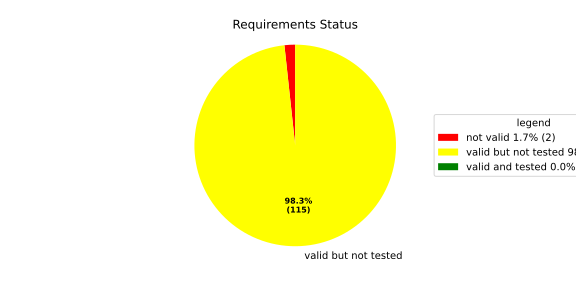
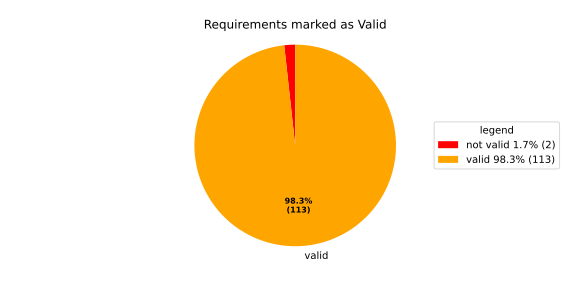
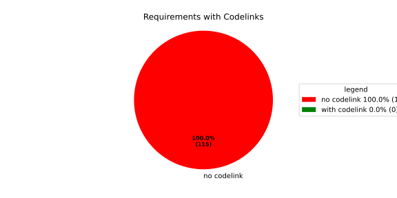

Component Requirements Statistics#
Overview#

In Detail#


No needs passed the filters
Failed Tests
Hint: This table should be empty. Before a PR can be merged all tests have to be successful.
No needs passed the filters
Skipped / Disabled Tests
No needs passed the filters
All passed Tests#
No needs passed the filters
Details About Testcases#
No needs passed the filters
No needs passed the filters
Test Log Files#
tests-report/tests/integration/switch_run_target/switch_run_target/test.log
exec ${PAGER:-/usr/bin/less} "$0" || exit 1
Executing tests from //tests/integration/switch_run_target:switch_run_target
-----------------------------------------------------------------------------
============================= test session starts ==============================
platform linux -- Python 3.12.12, pytest-9.0.3, pluggy-1.5.0
rootdir: /home/runner/.bazel/sandbox/processwrapper-sandbox/931/execroot/_main/bazel-out/k8-fastbuild/bin/tests/integration/switch_run_target/switch_run_target.runfiles/score_itf+
configfile: pytest.ini
collected 1 item
../score_itf+::test_switch_run_target
-------------------------------- live log setup --------------------------------
[2026-06-16 08:14:19.278] [INFO] [score.itf.plugins.docker] Executing custom image bootstrap command: tests/utils/environments/x86_64-linux/x86_64-linux.sh
[2026-06-16 08:14:19.430] [DEBUG] [docker.utils.config] Trying paths: ['/home/runner/.docker/config.json', '/home/runner/.dockercfg']
[2026-06-16 08:14:19.430] [DEBUG] [docker.utils.config] Found file at path: /home/runner/.docker/config.json
[2026-06-16 08:14:19.431] [DEBUG] [docker.auth] Found 'auths' section
[2026-06-16 08:14:19.431] [DEBUG] [docker.auth] Found entry (registry='https://index.docker.io/v1/', username='githubactions')
[2026-06-16 08:14:19.441] [DEBUG] [urllib3.connectionpool] http://localhost:None "GET /version HTTP/1.1" 200 823
[2026-06-16 08:14:19.465] [DEBUG] [urllib3.connectionpool] http://localhost:None "POST /v1.48/containers/create HTTP/1.1" 201 88
[2026-06-16 08:14:19.468] [DEBUG] [urllib3.connectionpool] http://localhost:None "GET /v1.48/containers/a23cdfd02f73e8b93822dd8ab9ddf78efad5939bf2e0fb73eaa1c53974e487a6/json HTTP/1.1" 200 None
[2026-06-16 08:14:19.796] [DEBUG] [urllib3.connectionpool] http://localhost:None "POST /v1.48/containers/a23cdfd02f73e8b93822dd8ab9ddf78efad5939bf2e0fb73eaa1c53974e487a6/start HTTP/1.1" 204 0
[2026-06-16 08:14:19.797] [DEBUG] [docker.utils.config] Trying paths: ['/home/runner/.docker/config.json', '/home/runner/.dockercfg']
[2026-06-16 08:14:19.797] [DEBUG] [docker.utils.config] Found file at path: /home/runner/.docker/config.json
[2026-06-16 08:14:19.797] [DEBUG] [docker.auth] Found 'auths' section
[2026-06-16 08:14:19.797] [DEBUG] [docker.auth] Found entry (registry='https://index.docker.io/v1/', username='githubactions')
[2026-06-16 08:14:19.810] [DEBUG] [urllib3.connectionpool] http://localhost:None "GET /version HTTP/1.1" 200 823
[2026-06-16 08:14:20.224] [INFO] [tests.utils.testing_utils.setup_test] Test case setup finished
-------------------------------- live log call ---------------------------------
[2026-06-16 08:14:20.362] [INFO] [launch_manager] 2026/06/16 08:14:20.7660359 1737053 000 ECU1 LM LM log debug verbose 1
[2026-06-16 08:14:20.365] [INFO] [launch_manager] Launch Manager Started !!!!
[2026-06-16 08:14:20.366] [INFO] [launch_manager] 2026/06/16 08:14:20.7660360 1737057 000 ECU1 LM LM log debug verbose 1
[2026-06-16 08:14:20.366] [INFO] [launch_manager] Loading LCM Configurations...
[2026-06-16 08:14:20.366] [INFO] [launch_manager] 2026/06/16 08:14:20.7660360 1737058 000 ECU1 LM LM log debug verbose 1
[2026-06-16 08:14:20.366] [INFO] [launch_manager] ECUCFG_ENV_VAR_ROOTFOLDER set successfully
[2026-06-16 08:14:20.368] [INFO] [launch_manager] 2026/06/16 08:14:20.7660360 1737061 000 ECU1 LM LM log debug verbose 5 FlatBufferParser::getModeGroupPgName: MainPG ( IdentifierHash: 18079021346025578134 )
[2026-06-16 08:14:20.370] [INFO] [launch_manager] 2026/06/16 08:14:20.7660360 1737062 000 ECU1 LM LM log debug verbose 5
[2026-06-16 08:14:20.376] [INFO] [launch_manager] FlatBufferParser::getModeGroupPgStateName: MainPG/Startup ( IdentifierHash: 10504605499600661529 )
[2026-06-16 08:14:20.376] [INFO] [launch_manager] 2026/06/16 08:14:20.7660360 1737063 000 ECU1 LM LM log debug verbose 5
[2026-06-16 08:14:20.376] [INFO] [launch_manager] FlatBufferParser::getModeGroupPgStateName: MainPG/run_target_a ( IdentifierHash: 4535707649935996147 )
[2026-06-16 08:14:20.376] [INFO] [launch_manager] 2026/06/16 08:14:20.7660360 1737064 000 ECU1 LM LM log debug verbose 5
[2026-06-16 08:14:20.376] [INFO] [launch_manager] FlatBufferParser::getModeGroupPgStateName: MainPG/run_target_c ( IdentifierHash: 6199163020077258462 )
[2026-06-16 08:14:20.377] [INFO] [launch_manager] 2026/06/16 08:14:20.7660361 1737065 000 ECU1 LM LM log debug verbose 5
[2026-06-16 08:14:20.377] [INFO] [launch_manager] FlatBufferParser::getModeGroupPgStateName: MainPG/Off ( IdentifierHash: 15281793077830264047 )
[2026-06-16 08:14:20.377] [INFO] [launch_manager] 2026/06/16 08:14:20.7660361 1737066 000 ECU1 LM LM log debug verbose 5
[2026-06-16 08:14:20.377] [INFO] [launch_manager] FlatBufferParser::getModeGroupPgStateName: MainPG/fallback_run_target ( IdentifierHash: 4059409696722237352 )
[2026-06-16 08:14:20.377] [INFO] [launch_manager] 2026/06/16 08:14:20.7660361 1737068 000 ECU1 LM LM log debug verbose 4
[2026-06-16 08:14:20.377] [INFO] [launch_manager] parseProcessConfigurations: Process index: 0 executable_path_: /tmp/tests/switch_run_target/control_client_mock
[2026-06-16 08:14:20.377] [INFO] [launch_manager] 2026/06/16 08:14:20.7660361 1737069 000 ECU1 LM LM log debug verbose 3
[2026-06-16 08:14:20.377] [INFO] [launch_manager] Process component_initial is Reporting execution state
[2026-06-16 08:14:20.378] [INFO] [launch_manager] 2026/06/16 08:14:20.7660361 1737070 000 ECU1 LM LM log debug verbose 1 Process is STATE_MANAGEMENT function Cluster Affiliation
[2026-06-16 08:14:20.378] [INFO] [launch_manager] 2026/06/16 08:14:20.7660361 1737071 000 ECU1 LM LM log debug verbose 3 Process component_initial is NOT Self terminating
[2026-06-16 08:14:20.378] [INFO] [launch_manager] 2026/06/16 08:14:20.7660361 1737072 000 ECU1 LM LM log debug verbose 4
[2026-06-16 08:14:20.378] [INFO] [launch_manager] ParseProcessProcessGroup: id:::pg_name_: MainPG , pg_state_name_: MainPG/Startup
[2026-06-16 08:14:20.378] [INFO] [launch_manager] 2026/06/16 08:14:20.7660361 1737073 000 ECU1 LM LM log debug verbose 4
[2026-06-16 08:14:20.378] [INFO] [launch_manager] ParseProcessProcessGroup: id:::pg_name_: MainPG , pg_state_name_: MainPG/run_target_a
[2026-06-16 08:14:20.378] [INFO] [launch_manager] 2026/06/16 08:14:20.7660361 1737074 000 ECU1 LM LM log debug verbose 4
[2026-06-16 08:14:20.379] [INFO] [launch_manager] parseProcessConfigurations: Process index: 1 executable_path_: /tmp/tests/switch_run_target/component_a
[2026-06-16 08:14:20.379] [INFO] [launch_manager] 2026/06/16 08:14:20.7660362 1737075 000 ECU1 LM LM log debug verbose 3
[2026-06-16 08:14:20.379] [INFO] [launch_manager] Process component_a is Reporting execution state
[2026-06-16 08:14:20.379] [INFO] [launch_manager] 2026/06/16 08:14:20.7660362 1737076 000 ECU1 LM LM log debug verbose 1 Process is NOT associated with any function Cluster Affiliation
[2026-06-16 08:14:20.379] [INFO] [launch_manager] 2026/06/16 08:14:20.7660362 1737077 000 ECU1 LM LM log debug verbose 3
[2026-06-16 08:14:20.379] [INFO] [launch_manager] Process component_a is NOT Self terminating
[2026-06-16 08:14:20.380] [INFO] [launch_manager] 2026/06/16 08:14:20.7660362 1737078 000 ECU1 LM LM log debug verbose 4
[2026-06-16 08:14:20.380] [INFO] [launch_manager] ParseProcessExecutionDependency: target process path: component_b ID: component_b
[2026-06-16 08:14:20.380] [INFO] [launch_manager] 2026/06/16 08:14:20.7660362 1737079 000 ECU1 LM LM log debug verbose 4 ParseProcessProcessGroup: id:::pg_name_: MainPG , pg_state_name_: MainPG/run_target_a
[2026-06-16 08:14:20.380] [INFO] [launch_manager] 2026/06/16 08:14:20.7660362 1737080 000 ECU1 LM LM log debug verbose 4
[2026-06-16 08:14:20.380] [INFO] [launch_manager] parseProcessConfigurations: Process index: 2 executable_path_: /tmp/tests/switch_run_target/component_b
[2026-06-16 08:14:20.380] [INFO] [launch_manager] 2026/06/16 08:14:20.7660362 1737081 000 ECU1 LM LM log debug verbose 3
[2026-06-16 08:14:20.381] [INFO] [launch_manager] Process component_b is Reporting execution state
[2026-06-16 08:14:20.381] [INFO] [launch_manager] 2026/06/16 08:14:20.7660362 1737082 000 ECU1 LM LM log debug verbose 1
[2026-06-16 08:14:20.381] [INFO] [launch_manager] Process is NOT associated with any function Cluster Affiliation
[2026-06-16 08:14:20.381] [INFO] [launch_manager] 2026/06/16 08:14:20.7660362 1737083 000 ECU1 LM LM log debug verbose 3
[2026-06-16 08:14:20.381] [INFO] [launch_manager] Process component_b is NOT Self terminating
[2026-06-16 08:14:20.381] [INFO] [launch_manager] 2026/06/16 08:14:20.7660363 1737086 000 ECU1 LM LM log debug verbose 4 ParseProcessProcessGroup: id:::pg_name_: MainPG , pg_state_name_: MainPG/run_target_a
[2026-06-16 08:14:20.382] [INFO] [launch_manager] 2026/06/16 08:14:20.7660363 1737088 000 ECU1 LM LM log debug verbose 4
[2026-06-16 08:14:20.382] [INFO] [launch_manager] parseProcessConfigurations: Process index: 3 executable_path_: /tmp/tests/switch_run_target/reporting_process
[2026-06-16 08:14:20.382] [INFO] [launch_manager] 2026/06/16 08:14:20.7660363 1737089 000 ECU1 LM LM log debug verbose 3
[2026-06-16 08:14:20.382] [INFO] [launch_manager] Process component_e is Reporting execution state
[2026-06-16 08:14:20.382] [INFO] [launch_manager] 2026/06/16 08:14:20.7660363 1737090 000 ECU1 LM LM log debug verbose 1
[2026-06-16 08:14:20.383] [INFO] [launch_manager] Process is NOT associated with any function Cluster Affiliation
[2026-06-16 08:14:20.384] [INFO] [launch_manager] 2026/06/16 08:14:20.7660363 1737091 000 ECU1 LM LM log debug verbose 3 Process component_e is NOT Self terminating
[2026-06-16 08:14:20.384] [INFO] [launch_manager] 2026/06/16 08:14:20.7660363 1737093 000 ECU1 LM LM log debug verbose 4
[2026-06-16 08:14:20.384] [INFO] [launch_manager] parseProcessConfigurations: Process index: 4 executable_path_: /tmp/tests/switch_run_target/component_d
[2026-06-16 08:14:20.385] [INFO] [launch_manager] 2026/06/16 08:14:20.7660363 1737094 000 ECU1 LM LM log debug verbose 3
[2026-06-16 08:14:20.385] [INFO] [launch_manager] Process component_d is Reporting execution state
[2026-06-16 08:14:20.385] [INFO] [launch_manager] 2026/06/16 08:14:20.7660363 1737095 000 ECU1 LM LM log debug verbose 1
[2026-06-16 08:14:20.385] [INFO] [launch_manager] Process is NOT associated with any function Cluster Affiliation
[2026-06-16 08:14:20.385] [INFO] [launch_manager] 2026/06/16 08:14:20.7660364 1737095 000 ECU1 LM LM log debug verbose 3 Process component_d is NOT Self terminating
[2026-06-16 08:14:20.385] [INFO] [launch_manager] 2026/06/16 08:14:20.7660364 1737096 000 ECU1 LM LM log debug verbose 4
[2026-06-16 08:14:20.385] [INFO] [launch_manager] ParseProcessProcessGroup: id:::pg_name_: MainPG , pg_state_name_: MainPG/run_target_a
[2026-06-16 08:14:20.386] [INFO] [launch_manager] 2026/06/16 08:14:20.7660364 1737097 000 ECU1 LM LM log debug verbose 4
[2026-06-16 08:14:20.386] [INFO] [launch_manager] ParseProcessProcessGroup: id:::pg_name_: MainPG , pg_state_name_: MainPG/run_target_c
[2026-06-16 08:14:20.386] [INFO] [launch_manager] 2026/06/16 08:14:20.7660364 1737098 000 ECU1 LM LM log debug verbose 3 Loading SWCL Nr. 0 Succeeded
[2026-06-16 08:14:20.386] [INFO] [launch_manager] 2026/06/16 08:14:20.7660364 1737099 000 ECU1 LM LM log debug verbose 2
[2026-06-16 08:14:20.387] [INFO] [launch_manager] 1 process group(s)
[2026-06-16 08:14:20.387] [INFO] [launch_manager] 2026/06/16 08:14:20.7660364 1737101 000 ECU1 LM LM log debug verbose 3 Creating graph with 4 nodes
[2026-06-16 08:14:20.387] [INFO] [launch_manager] 2026/06/16 08:14:20.7660364 1737102 000 ECU1 LM LM log debug verbose 1
[2026-06-16 08:14:20.387] [INFO] [launch_manager] Process groups initialized successfully
[2026-06-16 08:14:20.387] [INFO] [launch_manager] 2026/06/16 08:14:20.7660364 1737102 000 ECU1 LM LM log debug verbose 1
[2026-06-16 08:14:20.387] [INFO] [launch_manager] Process Group initialization done
[2026-06-16 08:14:20.388] [INFO] [launch_manager] 2026/06/16 08:14:20.7660364 1737103 000 ECU1 LM LM log debug verbose 3
[2026-06-16 08:14:20.388] [INFO] [launch_manager] Creating Safe Process Map with 4 entries
[2026-06-16 08:14:20.388] [INFO] [launch_manager] 2026/06/16 08:14:20.7660364 1737104 000 ECU1 LM LM log debug verbose 2 Creating job queue with capacity 1024
[2026-06-16 08:14:20.388] [INFO] [launch_manager] 2026/06/16 08:14:20.7660365 1737105 000 ECU1 LM LM log debug verbose 1 Creating worker threads...
[2026-06-16 08:14:20.388] [INFO] [launch_manager] 2026/06/16 08:14:20.7660366 1737120 000 ECU1 LM LM log debug verbose 7
[2026-06-16 08:14:20.388] [INFO] [launch_manager] Process group index 0 (with name MainPG ) has 4 processes
[2026-06-16 08:14:20.388] [INFO] [launch_manager] 2026/06/16 08:14:20.7660366 1737121 000 ECU1 LM LM log debug verbose 2
[2026-06-16 08:14:20.389] [INFO] [launch_manager] Creating process node with id: 0
[2026-06-16 08:14:20.389] [INFO] [launch_manager] 2026/06/16 08:14:20.7660366 1737122 000 ECU1 LM LM log debug verbose 5 Process 0 has 0 start dependencies
[2026-06-16 08:14:20.389] [INFO] [launch_manager] 2026/06/16 08:14:20.7660366 1737123 000 ECU1 LM LM log debug verbose 2 Creating process node with id: 1
[2026-06-16 08:14:20.389] [INFO] [launch_manager] 2026/06/16 08:14:20.7660366 1737124 000 ECU1 LM LM log debug verbose 5
[2026-06-16 08:14:20.389] [INFO] [launch_manager] Process 1 has 1 start dependencies
[2026-06-16 08:14:20.389] [INFO] [launch_manager] 2026/06/16 08:14:20.7660366 1737125 000 ECU1 LM LM log debug verbose 2
[2026-06-16 08:14:20.389] [INFO] [launch_manager] Creating process node with id: 2
[2026-06-16 08:14:20.389] [INFO] [launch_manager] 2026/06/16 08:14:20.7660367 1737126 000 ECU1 LM LM log debug verbose 5 Process 2 has 0 start dependencies
[2026-06-16 08:14:20.389] [INFO] [launch_manager] 2026/06/16 08:14:20.7660367 1737126 000 ECU1 LM LM log debug verbose 2
[2026-06-16 08:14:20.389] [INFO] [launch_manager] Creating process node with id: 3
[2026-06-16 08:14:20.389] [INFO] [launch_manager] 2026/06/16 08:14:20.7660367 1737127 000 ECU1 LM LM log debug verbose 5 Process 3 has 0 start dependencies
[2026-06-16 08:14:20.390] [INFO] [launch_manager] 2026/06/16 08:14:20.7660367 1737128 000 ECU1 LM LM log debug verbose 3
[2026-06-16 08:14:20.390] [INFO] [launch_manager] Created 4 process nodes
[2026-06-16 08:14:20.390] [INFO] [launch_manager] 2026/06/16 08:14:20.7660367 1737129 000 ECU1 LM LM log debug verbose 2 Creating successor lists for process group MainPG
[2026-06-16 08:14:20.390] [INFO] [launch_manager] 2026/06/16 08:14:20.7660367 1737131 000 ECU1 LM LM log debug verbose 4 Adding kRunning successor for process 2 : 1
[2026-06-16 08:14:20.390] [INFO] [launch_manager] 2026/06/16 08:14:20.7660367 1737131 000 ECU1 LM LM log debug verbose 4
[2026-06-16 08:14:20.390] [INFO] [launch_manager] Added successor node dependency: 2 -> 1
[2026-06-16 08:14:20.390] [INFO] [launch_manager] 2026/06/16 08:14:20.7660367 1737132 000 ECU1 LM LM log debug verbose 1
[2026-06-16 08:14:20.391] [INFO] [launch_manager] Graphs initialized
[2026-06-16 08:14:20.391] [INFO] [launch_manager] 2026/06/16 08:14:20.7660368 1737135 000 ECU1 LM Fcty log info verbose 2
[2026-06-16 08:14:20.391] [INFO] [launch_manager] Factory for FlatCfg MachineConfig: Loading of HM Machine Configuration succeeded.
[2026-06-16 08:14:20.391] [INFO] [launch_manager] 2026/06/16 08:14:20.7660368 1737136 000 ECU1 LM Fcty log debug verbose 3
[2026-06-16 08:14:20.391] [INFO] [launch_manager] Factory for FlatCfg MachineConfig: Alive Supervision buffer size: 100
[2026-06-16 08:14:20.391] [INFO] [launch_manager] 2026/06/16 08:14:20.7660368 1737137 000 ECU1 LM Fcty log debug verbose 3
[2026-06-16 08:14:20.391] [INFO] [launch_manager] Factory for FlatCfg MachineConfig: Monitor buffer size: 512
[2026-06-16 08:14:20.391] [INFO] [launch_manager] 2026/06/16 08:14:20.7660368 1737138 000 ECU1 LM Fcty log debug verbose 4 Factory for FlatCfg MachineConfig: Periodicity: 50000000 ns
[2026-06-16 08:14:20.392] [INFO] [launch_manager] 2026/06/16 08:14:20.7660368 1737139 000 ECU1 LM Fcty log debug verbose 3 Factory for FlatCfg MachineConfig: Configured watchdogs: 0
[2026-06-16 08:14:20.392] [INFO] [launch_manager] 2026/06/16 08:14:20.7660368 1737140 000 ECU1 LM Fcty log warn verbose 2
[2026-06-16 08:14:20.392] [INFO] [launch_manager] Factory for FlatCfg MachineConfig: No watchdog configured
[2026-06-16 08:14:20.392] [INFO] [launch_manager] 2026/06/16 08:14:20.7660368 1737141 000 ECU1 LM Fcty log debug verbose 2
[2026-06-16 08:14:20.392] [INFO] [launch_manager] Software Cluster Handler starts constructing workers: MainCluster
[2026-06-16 08:14:20.392] [INFO] [launch_manager] 2026/06/16 08:14:20.7660368 1737143 000 ECU1 LM Fcty log debug verbose 3
[2026-06-16 08:14:20.392] [INFO] [launch_manager] Factory for FlatCfg AR24-11: Successfully created Process States: component_initial
[2026-06-16 08:14:20.392] [INFO] [launch_manager] 2026/06/16 08:14:20.7660368 1737144 000 ECU1 LM Fcty log debug verbose 3 Factory for FlatCfg AR24-11: Number of constructed Process States: 1
[2026-06-16 08:14:20.392] [INFO] [launch_manager] 2026/06/16 08:14:20.7660369 1737145 000 ECU1 LM Fcty log debug verbose 3
[2026-06-16 08:14:20.393] [INFO] [launch_manager] Factory for FlatCfg AR24-11: Successfully created Monitor interface IPC with path: lifecycle_health_component_initial
[2026-06-16 08:14:20.393] [INFO] [launch_manager] 2026/06/16 08:14:20.7660369 1737146 000 ECU1 LM Fcty log debug verbose 3
[2026-06-16 08:14:20.393] [INFO] [launch_manager] Factory for FlatCfg AR24-11: Number of constructed Monitor interface IPCs: 1
[2026-06-16 08:14:20.393] [INFO] [launch_manager] 2026/06/16 08:14:20.7660369 1737148 000 ECU1 LM Fcty log debug verbose 3
[2026-06-16 08:14:20.393] [INFO] [launch_manager] Factory for FlatCfg AR24-11: Successfully created MonitorInterface: /lifecycle_health_component_initial
[2026-06-16 08:14:20.393] [INFO] [launch_manager] 2026/06/16 08:14:20.7660369 1737149 000 ECU1 LM Fcty log debug verbose 3 Factory for FlatCfg AR24-11: Number of constructed Monitor interfaces: 1
[2026-06-16 08:14:20.393] [INFO] [launch_manager] 2026/06/16 08:14:20.7660369 1737150 000 ECU1 LM Fcty log debug verbose 3
[2026-06-16 08:14:20.393] [INFO] [launch_manager] Factory for FlatCfg AR24-11: Successfully created supervision checkpoint: component_initial_checkpoint
[2026-06-16 08:14:20.394] [INFO] [launch_manager] 2026/06/16 08:14:20.7660369 1737151 000 ECU1 LM Fcty log debug verbose 3
[2026-06-16 08:14:20.394] [INFO] [launch_manager] Factory for FlatCfg AR24-11: Number of constructed supervision checkpoints: 1
[2026-06-16 08:14:20.394] [INFO] [launch_manager] 2026/06/16 08:14:20.7660369 1737152 000 ECU1 LM Fcty log debug verbose 3
[2026-06-16 08:14:20.394] [INFO] [launch_manager] Factory for FlatCfg AR24-11: Successfully created alive supervision worker object: component_initial_alive_supervision
[2026-06-16 08:14:20.394] [INFO] [launch_manager] 2026/06/16 08:14:20.7660369 1737153 000 ECU1 LM Fcty log debug verbose 3
[2026-06-16 08:14:20.394] [INFO] [launch_manager] Factory for FlatCfg AR24-11: Number of constructed alive supervisions: 1
[2026-06-16 08:14:20.394] [INFO] [launch_manager] 2026/06/16 08:14:20.7660369 1737155 000 ECU1 LM Fcty log info verbose 2
[2026-06-16 08:14:20.394] [INFO] [launch_manager] Phm Daemon: The (configured) periodicity in [ns] is set to: 50000000
[2026-06-16 08:14:20.395] [INFO] [launch_manager] 2026/06/16 08:14:20.7660370 1737156 000 ECU1 LM Fcty log debug verbose 2 Phm Daemon: The accuracy of the monotonic system clock in [ns] is: 1
[2026-06-16 08:14:20.395] [INFO] [launch_manager] 2026/06/16 08:14:20.7660370 1737156 000 ECU1 LM Fcty log debug verbose 3
[2026-06-16 08:14:20.395] [INFO] [launch_manager] HealthMonitor: Initialization took 2 ms
[2026-06-16 08:14:20.395] [INFO] [launch_manager] 2026/06/16 08:14:20.7660370 1737157 000 ECU1 LM LM log info verbose 1
[2026-06-16 08:14:20.395] [INFO] [launch_manager] LCM started successfully
[2026-06-16 08:14:20.395] [INFO] [launch_manager] 2026/06/16 08:14:20.7660370 1737159 000 ECU1 LM LM log debug verbose 3
[2026-06-16 08:14:20.395] [INFO] [launch_manager] clock() at run(): 39.670000 ms
[2026-06-16 08:14:20.396] [INFO] [launch_manager] 2026/06/16 08:14:20.7660370 1737163 000 ECU1 LM LM log debug verbose 1
[2026-06-16 08:14:20.396] [INFO] [launch_manager] =============STARTING MAINPG STARTUP STATE============
[2026-06-16 08:14:20.396] [INFO] [launch_manager] 2026/06/16 08:14:20.7660370 1737165 000 ECU1 LM LM log debug verbose 9
[2026-06-16 08:14:20.396] [INFO] [launch_manager] Graph::setState changes from kSuccess to kInTransition for PG 0 ( MainPG )
[2026-06-16 08:14:20.396] [INFO] [launch_manager] 2026/06/16 08:14:20.7660371 1737167 000 ECU1 LM LM log debug verbose 2 Stop Dependencies: 0
[2026-06-16 08:14:20.396] [INFO] [launch_manager] 2026/06/16 08:14:20.7660371 1737168 000 ECU1 LM LM log debug verbose 2 Stop Dependencies: 0
[2026-06-16 08:14:20.396] [INFO] [launch_manager] 2026/06/16 08:14:20.7660371 1737170 000 ECU1 LM LM log debug verbose 2
[2026-06-16 08:14:20.397] [INFO] [launch_manager] Stop Dependencies: 0
[2026-06-16 08:14:20.397] [INFO] [launch_manager] 2026/06/16 08:14:20.7660371 1737171 000 ECU1 LM LM log debug verbose 2
[2026-06-16 08:14:20.397] [INFO] [launch_manager] Stop Dependencies: 0
[2026-06-16 08:14:20.397] [INFO] [launch_manager] 2026/06/16 08:14:20.7660371 1737173 000 ECU1 LM LM log debug verbose 2 Start Dependencies: 0
[2026-06-16 08:14:20.397] [INFO] [launch_manager] 2026/06/16 08:14:20.7660372 1737176 000 ECU1 LM LM log debug verbose 2
[2026-06-16 08:14:20.397] [INFO] [launch_manager] Start Dependencies: 1
[2026-06-16 08:14:20.397] [INFO] [launch_manager] 2026/06/16 08:14:20.7660372 1737177 000 ECU1 LM LM log debug verbose 2
[2026-06-16 08:14:20.397] [INFO] [launch_manager] Start Dependencies: 0
[2026-06-16 08:14:20.397] [INFO] [launch_manager] 2026/06/16 08:14:20.7660372 1737178 000 ECU1 LM LM log debug verbose 2
[2026-06-16 08:14:20.398] [INFO] [launch_manager] Start Dependencies: 0
[2026-06-16 08:14:20.398] [INFO] [launch_manager] 2026/06/16 08:14:20.7660372 1737180 000 ECU1 LM LM log debug verbose 6
[2026-06-16 08:14:20.398] [INFO] [launch_manager] Starting process 0 ( component_initial ) from executable /tmp/tests/switch_run_target/control_client_mock
[2026-06-16 08:14:20.398] [INFO] [launch_manager] 2026/06/16 08:14:20.7660372 1737182 000 ECU1 LM LM log debug verbose 3
[2026-06-16 08:14:20.398] [INFO] [launch_manager] Initialize the control client for component_initial process
[2026-06-16 08:14:20.398] [INFO] [launch_manager] 2026/06/16 08:14:20.7660372 1737183 000 ECU1 LM LM log debug verbose 1 ControlClientChannel initialized
[2026-06-16 08:14:20.398] [INFO] [launch_manager] 2026/06/16 08:14:20.7660373 1737192 000 ECU1 LM LM log debug verbose 4 startProcess pid 70 received for process: component_initial
[2026-06-16 08:14:20.399] [INFO] [launch_manager] 2026/06/16 08:14:20.7660373 1737193 000 ECU1 LM LM log debug verbose 1 ControlClientChannel obtained from sync.
[2026-06-16 08:14:20.399] [INFO] [launch_manager] [==========] Running 1 test from 1 test suite.
[2026-06-16 08:14:20.399] [INFO] [launch_manager] [----------] Global test environment set-up.
[2026-06-16 08:14:20.399] [INFO] [launch_manager] [----------] 1 test from SwitchRunTarget
[2026-06-16 08:14:20.400] [INFO] [launch_manager] [ RUN ] SwitchRunTarget.ControlClientMock
[2026-06-16 08:14:20.400] [INFO] [launch_manager] [ STEP ] Report kRunning
[2026-06-16 08:14:20.400] [INFO] [launch_manager] [ END STEP ] Report kRunning
[2026-06-16 08:14:20.400] [INFO] [launch_manager] [ STEP ] Activate run target A
[2026-06-16 08:14:20.400] [INFO] [launch_manager] 2026/06/16 08:14:20.7660393 1737391 000 ECU1 LM LM log debug verbose 1
[2026-06-16 08:14:20.401] [INFO] [launch_manager] Request sent. Waiting for acknowledgment...
[2026-06-16 08:14:20.401] [INFO] [launch_manager] 2026/06/16 08:14:20.7660394 1737397 000 ECU1 LM LM log debug verbose 8
[2026-06-16 08:14:20.401] [INFO] [launch_manager] ProcessGroupManager::ControlClientHandler: got request kSetStateRequest ( 16 ) re state MainPG/run_target_a of PG MainPG
[2026-06-16 08:14:20.401] [INFO] [launch_manager] 2026/06/16 08:14:20.7660394 1737399 000 ECU1 LM LM log debug verbose 6
[2026-06-16 08:14:20.401] [INFO] [launch_manager] Pending state for process group MainPG changed from to MainPG/run_target_a
[2026-06-16 08:14:20.401] [INFO] [launch_manager] 2026/06/16 08:14:20.7660394 1737402 000 ECU1 LM LM log debug verbose 9
[2026-06-16 08:14:20.401] [INFO] [launch_manager] Graph::setState changes from kInTransition to kCancelled for PG 0 ( MainPG )
[2026-06-16 08:14:20.402] [INFO] [launch_manager] 2026/06/16 08:14:20.7660394 1737404 000 ECU1 LM LM log debug verbose 8
[2026-06-16 08:14:20.402] [INFO] [launch_manager] Got kRunning for pid 70 ( component_initial ) process 0 of group MainPG
[2026-06-16 08:14:20.402] [INFO] [launch_manager] 2026/06/16 08:14:20.7660395 1737405 000 ECU1 LM LM log debug verbose 1
[2026-06-16 08:14:20.402] [INFO] [launch_manager] Control Client handler nudged
[2026-06-16 08:14:20.402] [INFO] [launch_manager] 2026/06/16 08:14:20.7660395 1737409 000 ECU1 LM LM log debug verbose 1
[2026-06-16 08:14:20.402] [INFO] [launch_manager] 2026/06/16 08:14:20.7660395 1737408 000 ECU1 LM LM log debug verbose 7
[2026-06-16 08:14:20.403] [INFO] [launch_manager] startProcess for MainPG process 0 ( component_initial ) done
[2026-06-16 08:14:20.403] [INFO] [launch_manager] Request acknowledged.
[2026-06-16 08:14:20.403] [INFO] [launch_manager] 2026/06/16 08:14:20.7660395 1737412 000 ECU1 LM LM log debug verbose 1
[2026-06-16 08:14:20.403] [INFO] [launch_manager] Control Client handler nudged
[2026-06-16 08:14:20.403] [INFO] [launch_manager] 2026/06/16 08:14:20.7660395 1737414 000 ECU1 LM LM log debug verbose 1
[2026-06-16 08:14:20.403] [INFO] [launch_manager] Request acknowledged.
[2026-06-16 08:14:20.403] [INFO] [launch_manager] 2026/06/16 08:14:20.7660396 1737416 000 ECU1 LM LM log fatal verbose 3
[2026-06-16 08:14:20.403] [INFO] [launch_manager] clock() at failed initial state transition: 41.767000 ms
[2026-06-16 08:14:20.403] [INFO] [launch_manager] 2026/06/16 08:14:20.7660396 1737419 000 ECU1 LM LM log debug verbose 9
[2026-06-16 08:14:20.404] [INFO] [launch_manager] Graph::setState changes from kCancelled to kUndefinedState for PG 0 ( MainPG )
[2026-06-16 08:14:20.404] [INFO] [launch_manager] 2026/06/16 08:14:20.7660396 1737420 000 ECU1 LM LM log debug verbose 1
[2026-06-16 08:14:20.404] [INFO] [launch_manager] Control Client handler nudged
[2026-06-16 08:14:20.404] [INFO] [launch_manager] 2026/06/16 08:14:20.7660398 1737439 000 ECU1 LM LM log debug verbose 6
[2026-06-16 08:14:20.404] [INFO] [launch_manager] Pending state for process group MainPG changed from MainPG/run_target_a to
[2026-06-16 08:14:20.405] [INFO] [launch_manager] 2026/06/16 08:14:20.7660398 1737444 000 ECU1 LM LM log debug verbose 4
[2026-06-16 08:14:20.405] [INFO] [launch_manager] Start transition to MainPG/run_target_a for PG MainPG
[2026-06-16 08:14:20.405] [INFO] [launch_manager] 2026/06/16 08:14:20.7660399 1737445 000 ECU1 LM LM log debug verbose 9
[2026-06-16 08:14:20.405] [INFO] [launch_manager] Graph::setState changes from kUndefinedState to kInTransition for PG 0 ( MainPG )
[2026-06-16 08:14:20.405] [INFO] [launch_manager] 2026/06/16 08:14:20.7660399 1737447 000 ECU1 LM LM log debug verbose 2
[2026-06-16 08:14:20.406] [INFO] [launch_manager] Stop Dependencies: 0
[2026-06-16 08:14:20.406] [INFO] [launch_manager] 2026/06/16 08:14:20.7660399 1737449 000 ECU1 LM LM log debug verbose 2
[2026-06-16 08:14:20.406] [INFO] [launch_manager] Stop Dependencies: 0
[2026-06-16 08:14:20.406] [INFO] [launch_manager] 2026/06/16 08:14:20.7660399 1737451 000 ECU1 LM LM log debug verbose 2
[2026-06-16 08:14:20.406] [INFO] [launch_manager] Stop Dependencies: 0
[2026-06-16 08:14:20.406] [INFO] [launch_manager] 2026/06/16 08:14:20.7660399 1737452 000 ECU1 LM LM log debug verbose 2
[2026-06-16 08:14:20.406] [INFO] [launch_manager] Stop Dependencies: 0
[2026-06-16 08:14:20.406] [INFO] [launch_manager] 2026/06/16 08:14:20.7660399 1737454 000 ECU1 LM LM log debug verbose 2 Start Dependencies: 0
[2026-06-16 08:14:20.407] [INFO] [launch_manager] 2026/06/16 08:14:20.7660399 1737455 000 ECU1 LM LM log debug verbose 2
[2026-06-16 08:14:20.407] [INFO] [launch_manager] Start Dependencies: 1
[2026-06-16 08:14:20.407] [INFO] [launch_manager] 2026/06/16 08:14:20.7660400 1737457 000 ECU1 LM LM log debug verbose 2
[2026-06-16 08:14:20.407] [INFO] [launch_manager] Start Dependencies: 0
[2026-06-16 08:14:20.407] [INFO] [launch_manager] 2026/06/16 08:14:20.7660400 1737458 000 ECU1 LM LM log debug verbose 2 Start Dependencies: 0
[2026-06-16 08:14:20.407] [INFO] [launch_manager] 2026/06/16 08:14:20.7660400 1737460 000 ECU1 LM LM log debug verbose 6
[2026-06-16 08:14:20.407] [INFO] [launch_manager] Starting process 2 ( component_b ) from executable /tmp/tests/switch_run_target/component_b
[2026-06-16 08:14:20.408] [INFO] [launch_manager] 2026/06/16 08:14:20.7660402 1737481 000 ECU1 LM LM log debug verbose 6
[2026-06-16 08:14:20.408] [INFO] [launch_manager] Starting process 3 ( component_d ) from executable /tmp/tests/switch_run_target/component_d
[2026-06-16 08:14:20.408] [INFO] [launch_manager] 2026/06/16 08:14:20.7660405 1737507 000 ECU1 LM LM log debug verbose 4
[2026-06-16 08:14:20.408] [INFO] [launch_manager] startProcess pid 79 received for process: component_b
[2026-06-16 08:14:20.408] [INFO] [launch_manager] 2026/06/16 08:14:20.7660405 1737509 000 ECU1 LM LM log debug verbose 4 startProcess pid 78 received for process: component_d
[2026-06-16 08:14:20.409] [INFO] [launch_manager] [==========] Running 1 test from 1 test suite.
[2026-06-16 08:14:20.409] [INFO] [launch_manager] [----------] Global test environment set-up.
[2026-06-16 08:14:20.409] [INFO] [launch_manager] [----------] 1 test from ComponentD
[2026-06-16 08:14:20.409] [INFO] [launch_manager] [ RUN ] ComponentD.RunAndVerify
[2026-06-16 08:14:20.409] [INFO] [launch_manager] [ STEP ] Report running
[2026-06-16 08:14:20.409] [INFO] [launch_manager] [==========] Running 1 test from 1 test suite.
[2026-06-16 08:14:20.409] [INFO] [launch_manager] [----------] Global test environment set-up.
[2026-06-16 08:14:20.409] [INFO] [launch_manager] [----------] 1 test from ComponentB
[2026-06-16 08:14:20.410] [INFO] [launch_manager] [ RUN ] ComponentB.RunAndVerify
[2026-06-16 08:14:20.410] [INFO] [launch_manager] [ STEP ] Verify startup order
[2026-06-16 08:14:20.410] [INFO] [launch_manager] [ END STEP ] Verify startup order
[2026-06-16 08:14:20.410] [INFO] [launch_manager] [ STEP ] Report running
[2026-06-16 08:14:20.410] [INFO] [launch_manager] [ END STEP ] Report running
[2026-06-16 08:14:20.411] [INFO] [launch_manager] [ END STEP ] Report running
[2026-06-16 08:14:20.412] [INFO] [launch_manager] 2026/06/16 08:14:20.7660411 1737571 000 ECU1 LM LM log debug verbose 8 Got kRunning for pid 79 ( component_b ) process 2 of group MainPG
[2026-06-16 08:14:20.412] [INFO] [launch_manager] 2026/06/16 08:14:20.7660411 1737572 000 ECU1 LM LM log debug verbose 6 Starting process 1 ( component_a ) from executable /tmp/tests/switch_run_target/component_a
[2026-06-16 08:14:20.412] [INFO] [launch_manager] 2026/06/16 08:14:20.7660412 1737580 000 ECU1 LM LM log debug verbose 7 startProcess for MainPG process 2 ( component_b ) done
[2026-06-16 08:14:20.413] [INFO] [launch_manager] 2026/06/16 08:14:20.7660412 1737582 000 ECU1 LM LM log debug verbose 4 startProcess pid 80 received for process: component_a
[2026-06-16 08:14:20.413] [INFO] [launch_manager] 2026/06/16 08:14:20.7660413 1737586 000 ECU1 LM LM log debug verbose 8 Got kRunning for pid 78 ( component_d ) process 3 of group MainPG
[2026-06-16 08:14:20.413] [INFO] [launch_manager] 2026/06/16 08:14:20.7660413 1737587 000 ECU1 LM LM log debug verbose 7 startProcess for MainPG process 3 ( component_d ) done
[2026-06-16 08:14:20.416] [INFO] [launch_manager] [==========] Running 1 test from 1 test suite.
[2026-06-16 08:14:20.417] [INFO] [launch_manager] [----------] Global test environment set-up.
[2026-06-16 08:14:20.417] [INFO] [launch_manager] [----------] 1 test from ComponentA
[2026-06-16 08:14:20.418] [INFO] [launch_manager] [ RUN ] ComponentA.RunAndVerify
[2026-06-16 08:14:20.418] [INFO] [launch_manager] [ STEP ] Report running
[2026-06-16 08:14:20.421] [DEBUG] [tests.utils.testing_utils.run_until_file_deployed] Waiting for /tmp/tests/test_end
[2026-06-16 08:14:20.421] [INFO] [launch_manager] [ END STEP ] Report running
[2026-06-16 08:14:20.421] [INFO] [launch_manager] [ STEP ] Verify startup order
[2026-06-16 08:14:20.421] [INFO] [launch_manager] [ END STEP ] Verify startup order
[2026-06-16 08:14:20.421] [INFO] [launch_manager] 2026/06/16 08:14:20.7660420 1737660 000 ECU1 LM Sprv log debug verbose 6 Process with Id component_initial changed state PG MainPG/Startup PS 1
[2026-06-16 08:14:20.421] [INFO] [launch_manager] 2026/06/16 08:14:20.7660420 1737661 000 ECU1 LM Sprv log debug verbose 6 Process with Id component_initial changed state PG MainPG/Startup PS 2
[2026-06-16 08:14:20.422] [INFO] [launch_manager] 2026/06/16 08:14:20.7660420 1737661 000 ECU1 LM Sprv log debug verbose 6 Process with Id component_d changed state PG MainPG/run_target_a PS 1
[2026-06-16 08:14:20.422] [INFO] [launch_manager] 2026/06/16 08:14:20.7660420 1737661 000 ECU1 LM Sprv log debug verbose 6 Process with Id component_b changed state PG MainPG/run_target_a PS 1
[2026-06-16 08:14:20.422] [INFO] [launch_manager] 2026/06/16 08:14:20.7660420 1737661 000 ECU1 LM Sprv log debug verbose 6 Process with Id component_b changed state PG MainPG/run_target_a PS 2
[2026-06-16 08:14:20.422] [INFO] [launch_manager] 2026/06/16 08:14:20.7660420 1737662 000 ECU1 LM Sprv log debug verbose 6 Process with Id component_a changed state PG MainPG/run_target_a PS 1
[2026-06-16 08:14:20.422] [INFO] [launch_manager] 2026/06/16 08:14:20.7660420 1737662 000 ECU1 LM Sprv log debug verbose 6 Process with Id component_d changed state PG MainPG/run_target_a PS 2
[2026-06-16 08:14:20.422] [INFO] [launch_manager] 2026/06/16 08:14:20.7660420 1737662 000 ECU1 LM Sprv log info verbose 3 Alive Supervision ( component_initial_alive_supervision ) switched to OK.
[2026-06-16 08:14:20.422] [INFO] [launch_manager] 2026/06/16 08:14:20.7660421 1737668 000 ECU1 LM LM log debug verbose 8 Got kRunning for pid 80 ( component_a ) process 1 of group MainPG
[2026-06-16 08:14:20.422] [INFO] [launch_manager] 2026/06/16 08:14:20.7660421 1737669 000 ECU1 LM LM log debug verbose 7 startProcess for MainPG process 1 ( component_a ) done
[2026-06-16 08:14:20.422] [INFO] [launch_manager] 2026/06/16 08:14:20.7660421 1737669 000 ECU1 LM LM log debug verbose 9 Graph::setState changes from kInTransition to kSuccess for PG 0 ( MainPG )
[2026-06-16 08:14:20.422] [INFO] [launch_manager] 2026/06/16 08:14:20.7660421 1737669 000 ECU1 LM LM log info verbose 7 Completed the request for PG MainPG to State MainPG/run_target_a in 26 ms
[2026-06-16 08:14:20.422] [INFO] [launch_manager] 2026/06/16 08:14:20.7660421 1737669 000 ECU1 LM LM log debug verbose 1 Control Client handler nudged
[2026-06-16 08:14:20.422] [INFO] [launch_manager] 2026/06/16 08:14:20.7660422 1737679 000 ECU1 LM LM log debug verbose 8 ProcessGroupManager::ControlClientHandler: Sending kSetStateSuccess ( 20 ) re state MainPG/run_target_a of PG MainPG
[2026-06-16 08:14:20.423] [INFO] [launch_manager] 2026/06/16 08:14:20.7660422 1737679 000 ECU1 LM LM log debug verbose 1 Response sent.
[2026-06-16 08:14:20.470] [INFO] [launch_manager] 2026/06/16 08:14:20.7660470 1738159 000 ECU1 LM Sprv log debug verbose 6 Process with Id component_a changed state PG MainPG/run_target_a PS 2
[2026-06-16 08:14:20.488] [INFO] [launch_manager] 2026/06/16 08:14:20.7660488 1738340 000 ECU1 LM LM log debug verbose 1 Response retrieved.
[2026-06-16 08:14:20.488] [INFO] [launch_manager] [ END STEP ] Activate run target A
[2026-06-16 08:14:20.488] [INFO] [launch_manager] [ STEP ] Verify running processes
[2026-06-16 08:14:20.489] [INFO] [launch_manager] [ END STEP ] Verify running processes
[2026-06-16 08:14:20.489] [INFO] [launch_manager] [ STEP ] Activate RunTarget Startup
[2026-06-16 08:14:20.489] [INFO] [launch_manager] 2026/06/16 08:14:20.7660488 1738342 000 ECU1 LM LM log debug verbose 1 Request sent. Waiting for acknowledgment...
[2026-06-16 08:14:20.489] [INFO] [launch_manager] 2026/06/16 08:14:20.7660489 1738346 000 ECU1 LM LM log debug verbose 8 ProcessGroupManager::ControlClientHandler: got request kSetStateRequest ( 16 ) re state MainPG/Startup of PG MainPG
[2026-06-16 08:14:20.489] [INFO] [launch_manager] 2026/06/16 08:14:20.7660489 1738346 000 ECU1 LM LM log debug verbose 6 Pending state for process group MainPG changed from to MainPG/Startup
[2026-06-16 08:14:20.489] [INFO] [launch_manager] 2026/06/16 08:14:20.7660489 1738347 000 ECU1 LM LM log debug verbose 1 Request acknowledged.
[2026-06-16 08:14:20.490] [INFO] [launch_manager] 2026/06/16 08:14:20.7660489 1738347 000 ECU1 LM LM log debug verbose 6 Pending state for process group MainPG changed from MainPG/Startup to
[2026-06-16 08:14:20.490] [INFO] [launch_manager] 2026/06/16 08:14:20.7660489 1738347 000 ECU1 LM LM log debug verbose 4 Start transition to MainPG/Startup for PG MainPG
[2026-06-16 08:14:20.490] [INFO] [launch_manager] 2026/06/16 08:14:20.7660489 1738348 000 ECU1 LM LM log debug verbose 9 Graph::setState changes from kSuccess to kInTransition for PG 0 ( MainPG )
[2026-06-16 08:14:20.490] [INFO] [launch_manager] 2026/06/16 08:14:20.7660489 1738348 000 ECU1 LM LM log debug verbose 2 Stop Dependencies: 0
[2026-06-16 08:14:20.490] [INFO] [launch_manager] 2026/06/16 08:14:20.7660489 1738348 000 ECU1 LM LM log debug verbose 2 Stop Dependencies: 0
[2026-06-16 08:14:20.490] [INFO] [launch_manager] 2026/06/16 08:14:20.7660489 1738348 000 ECU1 LM LM log debug verbose 2 Stop Dependencies: 1
[2026-06-16 08:14:20.490] [INFO] [launch_manager] 2026/06/16 08:14:20.7660489 1738349 000 ECU1 LM LM log debug verbose 2 Stop Dependencies: 0
[2026-06-16 08:14:20.490] [INFO] [launch_manager] 2026/06/16 08:14:20.7660489 1738350 000 ECU1 LM LM log debug verbose 5 terminating process 1 ( component_a )
[2026-06-16 08:14:20.491] [INFO] [launch_manager] 2026/06/16 08:14:20.7660489 1738351 000 ECU1 LM LM log debug verbose 5
[2026-06-16 08:14:20.491] [INFO] [launch_manager] terminating process 3 ( component_d )
[2026-06-16 08:14:20.491] [INFO] [launch_manager] 2026/06/16 08:14:20.7660489 1738352 000 ECU1 LM LM log debug verbose 9 Requesting termination of process 3 of MainPG pid 78 ( component_d )
[2026-06-16 08:14:20.491] [INFO] [launch_manager] 2026/06/16 08:14:20.7660489 1738352 000 ECU1 LM LM log debug verbose 2 Request termination received for 78
[2026-06-16 08:14:20.491] [INFO] [launch_manager] 2026/06/16 08:14:20.7660489 1738353 000 ECU1 LM LM log debug verbose 9 Requesting termination of process 1 of MainPG pid 80 ( component_a )
[2026-06-16 08:14:20.491] [INFO] [launch_manager] 2026/06/16 08:14:20.7660489 1738354 000 ECU1 LM LM log debug verbose 2 Request termination received for 80
[2026-06-16 08:14:20.491] [INFO] [launch_manager] [ OK ] ComponentD.RunAndVerify (81 ms)
[2026-06-16 08:14:20.491] [INFO] [launch_manager] [----------] 1 test from ComponentD (81 ms total)
[2026-06-16 08:14:20.491] [INFO] [launch_manager] [----------] Global test environment tear-down
[2026-06-16 08:14:20.491] [INFO] [launch_manager] 2026/06/16 08:14:20.7660490 1738355 000 ECU1 LM LM log debug verbose 1
[2026-06-16 08:14:20.491] [INFO] [launch_manager] [ STEP ] Verify termination order
[2026-06-16 08:14:20.492] [INFO] [launch_manager] Request acknowledged.
[2026-06-16 08:14:20.492] [INFO] [launch_manager] [==========] 1 test from 1 test suite ran. (82 ms total)
[2026-06-16 08:14:20.492] [INFO] [launch_manager] [ PASSED ] 1 test.
[2026-06-16 08:14:20.492] [INFO] [launch_manager] [ END STEP ] Verify termination order
[2026-06-16 08:14:20.492] [INFO] [launch_manager] [ OK ] ComponentA.RunAndVerify (73 ms)
[2026-06-16 08:14:20.492] [INFO] [launch_manager] [----------] 1 test from ComponentA (73 ms total)
[2026-06-16 08:14:20.492] [INFO] [launch_manager] [----------] Global test environment tear-down
[2026-06-16 08:14:20.492] [INFO] [launch_manager] 2026/06/16 08:14:20.7660490 1738362 000 ECU1 LM LM log debug verbose 12 Child process 3 of MainPG pid 78 ( component_d ) for node True terminated with status 0
[2026-06-16 08:14:20.492] [INFO] [launch_manager] [==========] 1 test from 1 test suite ran. (73 ms total)
[2026-06-16 08:14:20.492] [INFO] [launch_manager] [ PASSED ] 1 test.
[2026-06-16 08:14:20.492] [INFO] [launch_manager] 2026/06/16 08:14:20.7660491 1738367 000 ECU1 LM LM log debug verbose 12 Child process 1 of MainPG pid 80 ( component_a ) for node True terminated with status 0
[2026-06-16 08:14:20.493] [INFO] [launch_manager] 2026/06/16 08:14:20.7660491 1738374 000 ECU1 LM LM log debug verbose 5 Queuing jobs after regular termination of process wait 3 ( component_d )
[2026-06-16 08:14:20.493] [INFO] [launch_manager] 2026/06/16 08:14:20.7660491 1738374 000 ECU1 LM LM log debug verbose 7 terminateProcess for MainPG process 3 ( component_d ) done
[2026-06-16 08:14:20.493] [INFO] [launch_manager] 2026/06/16 08:14:20.7660492 1738375 000 ECU1 LM LM log debug verbose 5 Queuing jobs after regular termination of process wait 1 ( component_a )
[2026-06-16 08:14:20.493] [INFO] [launch_manager] 2026/06/16 08:14:20.7660492 1738376 000 ECU1 LM LM log debug verbose 7 terminateProcess for MainPG process 1 ( component_a ) done
[2026-06-16 08:14:20.493] [INFO] [launch_manager] 2026/06/16 08:14:20.7660492 1738376 000 ECU1 LM LM log debug verbose 5 terminating process 2 ( component_b )
[2026-06-16 08:14:20.493] [INFO] [launch_manager] 2026/06/16 08:14:20.7660492 1738376 000 ECU1 LM LM log debug verbose 9 Requesting termination of process 2 of MainPG pid 79 ( component_b )
[2026-06-16 08:14:20.493] [INFO] [launch_manager] 2026/06/16 08:14:20.7660492 1738377 000 ECU1 LM LM log debug verbose 2 Request termination received for 79
[2026-06-16 08:14:20.493] [INFO] [launch_manager] [ STEP ] Verify termination order
[2026-06-16 08:14:20.493] [INFO] [launch_manager] [ END STEP ] Verify termination order
[2026-06-16 08:14:20.493] [INFO] [launch_manager] [ OK ] ComponentB.RunAndVerify (83 ms)
[2026-06-16 08:14:20.493] [INFO] [launch_manager] [----------] 1 test from ComponentB (83 ms total)
[2026-06-16 08:14:20.493] [INFO] [launch_manager] [----------] Global test environment tear-down
[2026-06-16 08:14:20.494] [INFO] [launch_manager] [==========] 1 test from 1 test suite ran. (84 ms total)
[2026-06-16 08:14:20.494] [INFO] [launch_manager] [ PASSED ] 1 test.
[2026-06-16 08:14:20.494] [INFO] [launch_manager] 2026/06/16 08:14:20.7660493 1738386 000 ECU1 LM LM log debug verbose 12
[2026-06-16 08:14:20.494] [INFO] [launch_manager] Child process 2 of MainPG pid 79 ( component_b ) for node True terminated with status 0
[2026-06-16 08:14:20.494] [INFO] [launch_manager] 2026/06/16 08:14:20.7660494 1738399 000 ECU1 LM LM log debug verbose 5 Queuing jobs after regular termination of process wait 2 ( component_b )
[2026-06-16 08:14:20.494] [INFO] [launch_manager] 2026/06/16 08:14:20.7660494 1738399 000 ECU1 LM LM log debug verbose 7 terminateProcess for MainPG process 2 ( component_b ) done
[2026-06-16 08:14:20.494] [INFO] [launch_manager] 2026/06/16 08:14:20.7660494 1738399 000 ECU1 LM LM log debug verbose 2 Start Dependencies: 0
[2026-06-16 08:14:20.494] [INFO] [launch_manager] 2026/06/16 08:14:20.7660494 1738399 000 ECU1 LM LM log debug verbose 2 Start Dependencies: 1
[2026-06-16 08:14:20.495] [INFO] [launch_manager] 2026/06/16 08:14:20.7660494 1738400 000 ECU1 LM LM log debug verbose 2 Start Dependencies: 0
[2026-06-16 08:14:20.495] [INFO] [launch_manager] 2026/06/16 08:14:20.7660494 1738404 000 ECU1 LM LM log debug verbose 2 Start Dependencies: 0
[2026-06-16 08:14:20.495] [INFO] [launch_manager] 2026/06/16 08:14:20.7660494 1738404 000 ECU1 LM LM log debug verbose 9 Graph::setState changes from kInTransition to kSuccess for PG 0 ( MainPG )
[2026-06-16 08:14:20.495] [INFO] [launch_manager] 2026/06/16 08:14:20.7660494 1738404 000 ECU1 LM LM log info verbose 7 Completed the request for PG MainPG to State MainPG/Startup in 5 ms
[2026-06-16 08:14:20.495] [INFO] [launch_manager] 2026/06/16 08:14:20.7660495 1738405 000 ECU1 LM LM log debug verbose 1 Control Client handler nudged
[2026-06-16 08:14:20.495] [INFO] [launch_manager] 2026/06/16 08:14:20.7660495 1738412 000 ECU1 LM LM log debug verbose 8 ProcessGroupManager::ControlClientHandler: Sending kSetStateSuccess ( 20 ) re state MainPG/Startup of PG MainPG
[2026-06-16 08:14:20.495] [INFO] [launch_manager] 2026/06/16 08:14:20.7660495 1738412 000 ECU1 LM LM log debug verbose 1
[2026-06-16 08:14:20.496] [INFO] [launch_manager] Response sent.
[2026-06-16 08:14:20.520] [INFO] [launch_manager] 2026/06/16 08:14:20.7660520 1738659 000 ECU1 LM Sprv log debug verbose 6 Process with Id component_a changed state PG MainPG/Startup PS 3
[2026-06-16 08:14:20.520] [INFO] [launch_manager] 2026/06/16 08:14:20.7660520 1738659 000 ECU1 LM Sprv log debug verbose 6 Process with Id component_d changed state PG MainPG/Startup PS 3
[2026-06-16 08:14:20.521] [INFO] [launch_manager] 2026/06/16 08:14:20.7660520 1738660 000 ECU1 LM Sprv log debug verbose 6 Process with Id component_d changed state PG MainPG/Startup PS 4
[2026-06-16 08:14:20.521] [INFO] [launch_manager] 2026/06/16 08:14:20.7660520 1738660 000 ECU1 LM Sprv log debug verbose 6 Process with Id component_a changed state PG MainPG/Startup PS 4
[2026-06-16 08:14:20.521] [INFO] [launch_manager] 2026/06/16 08:14:20.7660520 1738661 000 ECU1 LM Sprv log debug verbose 6 Process with Id component_b changed state PG MainPG/Startup PS 3
[2026-06-16 08:14:20.521] [INFO] [launch_manager] 2026/06/16 08:14:20.7660520 1738661 000 ECU1 LM Sprv log debug verbose 6 Process with Id component_b changed state PG MainPG/Startup PS 4
[2026-06-16 08:14:20.589] [INFO] [launch_manager] 2026/06/16 08:14:20.7660588 1739342 000 ECU1 LM LM log debug verbose 1 Response retrieved.
[2026-06-16 08:14:20.589] [INFO] [launch_manager] [ END STEP ] Activate RunTarget Startup
[2026-06-16 08:14:20.589] [INFO] [launch_manager] [ STEP ] Activate RunTarget Off
[2026-06-16 08:14:20.589] [INFO] [launch_manager] 2026/06/16 08:14:20.7660588 1739344 000 ECU1 LM LM log debug verbose 1 Request sent. Waiting for acknowledgment...
[2026-06-16 08:14:20.589] [INFO] [launch_manager] 2026/06/16 08:14:20.7660589 1739346 000 ECU1 LM LM log debug verbose 8 ProcessGroupManager::ControlClientHandler: got request kSetStateRequest ( 16 ) re state MainPG/Off of PG MainPG
[2026-06-16 08:14:20.589] [INFO] [launch_manager] 2026/06/16 08:14:20.7660589 1739347 000 ECU1 LM LM log debug verbose 6 Pending state for process group MainPG changed from to MainPG/Off
[2026-06-16 08:14:20.590] [INFO] [launch_manager] 2026/06/16 08:14:20.7660589 1739347 000 ECU1 LM LM log debug verbose 1 Request acknowledged.
[2026-06-16 08:14:20.590] [INFO] [launch_manager] 2026/06/16 08:14:20.7660589 1739347 000 ECU1 LM LM log debug verbose 6 Pending state for process group MainPG changed from MainPG/Off to
[2026-06-16 08:14:20.590] [INFO] [launch_manager] 2026/06/16 08:14:20.7660589 1739348 000 ECU1 LM LM log debug verbose 4
[2026-06-16 08:14:20.590] [INFO] [launch_manager] Start transition to MainPG/Off for PG MainPG
[2026-06-16 08:14:20.590] [INFO] [launch_manager] 2026/06/16 08:14:20.7660589 1739351 000 ECU1 LM LM log debug verbose 9 Graph::setState changes from kSuccess to kInTransition for PG 0 ( MainPG )
[2026-06-16 08:14:20.590] [INFO] [launch_manager] 2026/06/16 08:14:20.7660589 1739351 000 ECU1 LM LM log debug verbose 2 Stop Dependencies: 0
[2026-06-16 08:14:20.590] [INFO] [launch_manager] 2026/06/16 08:14:20.7660589 1739351 000 ECU1 LM LM log debug verbose 2 Stop Dependencies: 0
[2026-06-16 08:14:20.590] [INFO] [launch_manager] 2026/06/16 08:14:20.7660589 1739352 000 ECU1 LM LM log debug verbose 2 Stop Dependencies: 0
[2026-06-16 08:14:20.590] [INFO] [launch_manager] 2026/06/16 08:14:20.7660589 1739352 000 ECU1 LM LM log debug verbose 2 Stop Dependencies: 0
[2026-06-16 08:14:20.590] [INFO] [launch_manager] 2026/06/16 08:14:20.7660589 1739353 000 ECU1 LM LM log debug verbose 5 terminating process 0 ( component_initial )
[2026-06-16 08:14:20.590] [INFO] [launch_manager] 2026/06/16 08:14:20.7660589 1739354 000 ECU1 LM LM log debug verbose 9 Requesting termination of process 0 of MainPG pid 70 ( component_initial )
[2026-06-16 08:14:20.591] [INFO] [launch_manager] 2026/06/16 08:14:20.7660589 1739354 000 ECU1 LM LM log debug verbose 2 Request termination received for 70
[2026-06-16 08:14:20.591] [INFO] [launch_manager] 2026/06/16 08:14:20.7660590 1739356 000 ECU1 LM LM log debug verbose 1
[2026-06-16 08:14:20.591] [INFO] [launch_manager] Request acknowledged.
[2026-06-16 08:14:20.591] [INFO] [launch_manager] [ END STEP ] Activate RunTarget Off
[2026-06-16 08:14:20.620] [INFO] [launch_manager] 2026/06/16 08:14:20.7660620 1739658 000 ECU1 LM Sprv log debug verbose 6 Process with Id component_initial changed state PG MainPG/Off PS 3
[2026-06-16 08:14:20.620] [INFO] [launch_manager] 2026/06/16 08:14:20.7660620 1739659 000 ECU1 LM Sprv log debug verbose 3 Alive Supervision ( component_initial_alive_supervision ) switched to DEACTIVATED.
[2026-06-16 08:14:20.690] [INFO] [launch_manager] [ OK ] SwitchRunTarget.ControlClientMock (301 ms)
[2026-06-16 08:14:20.690] [INFO] [launch_manager] [----------] 1 test from SwitchRunTarget (301 ms total)
[2026-06-16 08:14:20.690] [INFO] [launch_manager] [----------] Global test environment tear-down
[2026-06-16 08:14:20.690] [INFO] [launch_manager] [==========] 1 test from 1 test suite ran. (302 ms total)
[2026-06-16 08:14:20.690] [INFO] [launch_manager] [ PASSED ] 1 test.
[2026-06-16 08:14:20.690] [INFO] [launch_manager] 2026/06/16 08:14:20.7660690 1740357 000 ECU1 LM LM log debug verbose 12 Child process 0 of MainPG pid 70 ( component_initial ) for node True terminated with status 0
[2026-06-16 08:14:20.692] [INFO] [launch_manager] 2026/06/16 08:14:20.7660692 1740376 000 ECU1 LM LM log debug verbose 5 Queuing jobs after regular termination of process wait 0 ( component_initial )
[2026-06-16 08:14:20.692] [INFO] [launch_manager] 2026/06/16 08:14:20.7660692 1740376 000 ECU1 LM LM log debug verbose 7 terminateProcess for MainPG process 0 ( component_initial ) done
[2026-06-16 08:14:20.692] [INFO] [launch_manager] 2026/06/16 08:14:20.7660692 1740377 000 ECU1 LM LM log debug verbose 2 Start Dependencies: 0
[2026-06-16 08:14:20.692] [INFO] [launch_manager] 2026/06/16 08:14:20.7660692 1740377 000 ECU1 LM LM log debug verbose 2 Start Dependencies: 1
[2026-06-16 08:14:20.692] [INFO] [launch_manager] 2026/06/16 08:14:20.7660692 1740377 000 ECU1 LM LM log debug verbose 2 Start Dependencies: 0
[2026-06-16 08:14:20.692] [INFO] [launch_manager] 2026/06/16 08:14:20.7660692 1740377 000 ECU1 LM LM log debug verbose 2 Start Dependencies: 0
[2026-06-16 08:14:20.692] [INFO] [launch_manager] 2026/06/16 08:14:20.7660692 1740378 000 ECU1 LM LM log debug verbose 9 Graph::setState changes from kInTransition to kSuccess for PG 0 ( MainPG )
[2026-06-16 08:14:20.692] [INFO] [launch_manager] 2026/06/16 08:14:20.7660692 1740378 000 ECU1 LM LM log info verbose 7 Completed the request for PG MainPG to State MainPG/Off in 103 ms
[2026-06-16 08:14:20.693] [INFO] [launch_manager] 2026/06/16 08:14:20.7660692 1740378 000 ECU1 LM LM log debug verbose 1 Control Client handler nudged
[2026-06-16 08:14:20.720] [INFO] [launch_manager] 2026/06/16 08:14:20.7660720 1740658 000 ECU1 LM Sprv log debug verbose 6 Process with Id component_initial changed state PG MainPG/Off PS 4
[2026-06-16 08:14:21.006] [INFO] [launch_manager] 2026/06/16 08:14:21.7661006 1743520 000 ECU1 LM LM log debug verbose 1
[2026-06-16 08:14:21.007] [INFO] [launch_manager] Cancel all process group transitions
[2026-06-16 08:14:21.007] [INFO] [launch_manager] 2026/06/16 08:14:21.7661007 1743526 000 ECU1 LM LM log debug verbose 9 Graph::setState changes from kSuccess to kUndefinedState for PG 0 ( MainPG )
[2026-06-16 08:14:21.008] [INFO] [launch_manager] 2026/06/16 08:14:21.7661007 1743533 000 ECU1 LM LM log debug verbose 1 Wait for process group cancellations
[2026-06-16 08:14:21.008] [INFO] [launch_manager] 2026/06/16 08:14:21.7661007 1743533 000 ECU1 LM LM log debug verbose 1 Start transitioning process groups to Off state
[2026-06-16 08:14:21.008] [INFO] [launch_manager] 2026/06/16 08:14:21.7661007 1743533 000 ECU1 LM LM log debug verbose 9 Graph::setState changes from kUndefinedState to kInTransition for PG 0 ( MainPG )
[2026-06-16 08:14:21.008] [INFO] [launch_manager] 2026/06/16 08:14:21.7661007 1743533 000 ECU1 LM LM log debug verbose 2
[2026-06-16 08:14:21.008] [INFO] [launch_manager] Stop Dependencies: 0
[2026-06-16 08:14:21.008] [INFO] [launch_manager] 2026/06/16 08:14:21.7661008 1743536 000 ECU1 LM LM log debug verbose 2 Stop Dependencies: 0
[2026-06-16 08:14:21.009] [INFO] [launch_manager] 2026/06/16 08:14:21.7661008 1743537 000 ECU1 LM LM log debug verbose 2
[2026-06-16 08:14:21.009] [INFO] [launch_manager] Stop Dependencies: 0
[2026-06-16 08:14:21.009] [INFO] [launch_manager] 2026/06/16 08:14:21.7661008 1743539 000 ECU1 LM LM log debug verbose 2 Stop Dependencies: 0
[2026-06-16 08:14:21.009] [INFO] [launch_manager] 2026/06/16 08:14:21.7661008 1743539 000 ECU1 LM LM log debug verbose 2 Start Dependencies: 0
[2026-06-16 08:14:21.010] [INFO] [launch_manager] 2026/06/16 08:14:21.7661008 1743539 000 ECU1 LM LM log debug verbose 2 Start Dependencies: 1
[2026-06-16 08:14:21.011] [INFO] [launch_manager] 2026/06/16 08:14:21.7661008 1743540 000 ECU1 LM LM log debug verbose 2 Start Dependencies: 0
[2026-06-16 08:14:21.011] [INFO] [launch_manager] 2026/06/16 08:14:21.7661008 1743540 000 ECU1 LM LM log debug verbose 2
[2026-06-16 08:14:21.011] [INFO] [launch_manager] Start Dependencies: 0
[2026-06-16 08:14:21.011] [INFO] [launch_manager] 2026/06/16 08:14:21.7661008 1743541 000 ECU1 LM LM log debug verbose 9 Graph::setState changes from kInTransition to kSuccess for PG 0 ( MainPG )
[2026-06-16 08:14:21.011] [INFO] [launch_manager] 2026/06/16 08:14:21.7661008 1743541 000 ECU1 LM LM log info verbose 7
[2026-06-16 08:14:21.011] [INFO] [launch_manager] Completed the request for PG MainPG to State MainPG/Off in 0 ms
[2026-06-16 08:14:21.011] [INFO] [launch_manager] 2026/06/16 08:14:21.7661008 1743542 000 ECU1 LM LM log debug verbose 1 Control Client handler nudged
[2026-06-16 08:14:21.011] [INFO] [launch_manager] 2026/06/16 08:14:21.7661008 1743543 000 ECU1 LM LM log debug verbose 1
[2026-06-16 08:14:21.011] [INFO] [launch_manager] Wait for all process groups to complete the transition
[2026-06-16 08:14:21.091] [INFO] [launch_manager] 2026/06/16 08:14:21.7661090 1744363 000 ECU1 LM LM log debug verbose 1 LCM run successfully
[2026-06-16 08:14:21.120] [INFO] [launch_manager] 2026/06/16 08:14:21.7661120 1744658 000 ECU1 LM Fcty log info verbose 1 Phm Daemon: Received termination request - shutting down
[2026-06-16 08:14:21.121] [INFO] [launch_manager] 2026/06/16 08:14:21.7661121 1744672 000 ECU1 LM LM log debug verbose 1 Graph destroyed
[2026-06-16 08:14:21.121] [INFO] [launch_manager] 2026/06/16 08:14:21.7661121 1744672 000 ECU1 LM LM log info verbose 2 Launch Manager completed with exit code value: 0
PASSED [100%]
- generated xml file: /home/runner/.bazel/sandbox/processwrapper-sandbox/931/execroot/_main/bazel-out/k8-fastbuild/testlogs/tests/integration/switch_run_target/switch_run_target/test.xml -
============================== 1 passed in 2.65s ===============================
tests-report/tests/integration/complex_monitoring/complex_monitoring/test.log
exec ${PAGER:-/usr/bin/less} "$0" || exit 1
Executing tests from //tests/integration/complex_monitoring:complex_monitoring
-----------------------------------------------------------------------------
============================= test session starts ==============================
platform linux -- Python 3.12.12, pytest-9.0.3, pluggy-1.5.0
rootdir: /home/runner/.bazel/sandbox/processwrapper-sandbox/937/execroot/_main/bazel-out/k8-fastbuild/bin/tests/integration/complex_monitoring/complex_monitoring.runfiles/score_itf+
configfile: pytest.ini
collected 1 item
../score_itf+::test_complex_monitoring
-------------------------------- live log setup --------------------------------
[2026-06-16 08:14:19.275] [INFO] [score.itf.plugins.docker] Executing custom image bootstrap command: tests/utils/environments/x86_64-linux/x86_64-linux.sh
[2026-06-16 08:14:19.430] [DEBUG] [docker.utils.config] Trying paths: ['/home/runner/.docker/config.json', '/home/runner/.dockercfg']
[2026-06-16 08:14:19.430] [DEBUG] [docker.utils.config] Found file at path: /home/runner/.docker/config.json
[2026-06-16 08:14:19.431] [DEBUG] [docker.auth] Found 'auths' section
[2026-06-16 08:14:19.431] [DEBUG] [docker.auth] Found entry (registry='https://index.docker.io/v1/', username='githubactions')
[2026-06-16 08:14:19.441] [DEBUG] [urllib3.connectionpool] http://localhost:None "GET /version HTTP/1.1" 200 823
[2026-06-16 08:14:19.460] [DEBUG] [urllib3.connectionpool] http://localhost:None "POST /v1.48/containers/create HTTP/1.1" 201 88
[2026-06-16 08:14:19.464] [DEBUG] [urllib3.connectionpool] http://localhost:None "GET /v1.48/containers/cc10b12bde4add85d14cf66b651dee4fa09036467967b328e17cfc454cd6a9c3/json HTTP/1.1" 200 None
[2026-06-16 08:14:19.740] [DEBUG] [urllib3.connectionpool] http://localhost:None "POST /v1.48/containers/cc10b12bde4add85d14cf66b651dee4fa09036467967b328e17cfc454cd6a9c3/start HTTP/1.1" 204 0
[2026-06-16 08:14:19.740] [DEBUG] [docker.utils.config] Trying paths: ['/home/runner/.docker/config.json', '/home/runner/.dockercfg']
[2026-06-16 08:14:19.740] [DEBUG] [docker.utils.config] Found file at path: /home/runner/.docker/config.json
[2026-06-16 08:14:19.741] [DEBUG] [docker.auth] Found 'auths' section
[2026-06-16 08:14:19.741] [DEBUG] [docker.auth] Found entry (registry='https://index.docker.io/v1/', username='githubactions')
[2026-06-16 08:14:19.750] [DEBUG] [urllib3.connectionpool] http://localhost:None "GET /version HTTP/1.1" 200 823
[2026-06-16 08:14:20.131] [INFO] [tests.utils.testing_utils.setup_test] Test case setup finished
-------------------------------- live log call ---------------------------------
[2026-06-16 08:14:20.274] [INFO] [launch_manager] 2026/06/16 08:14:20.7660268 1736138 000 ECU1 LM LM log debug verbose 1 Launch Manager Started !!!!
[2026-06-16 08:14:20.274] [INFO] [launch_manager] 2026/06/16 08:14:20.7660268 1736141 000 ECU1 LM LM log debug verbose 1 Loading LCM Configurations...
[2026-06-16 08:14:20.274] [INFO] [launch_manager] 2026/06/16 08:14:20.7660268 1736141 000 ECU1 LM LM log debug verbose 1 ECUCFG_ENV_VAR_ROOTFOLDER set successfully
[2026-06-16 08:14:20.274] [INFO] [launch_manager] 2026/06/16 08:14:20.7660268 1736142 000 ECU1 LM LM log debug verbose 5 FlatBufferParser::getModeGroupPgName: MainPG ( IdentifierHash: 18079021346025578134 )
[2026-06-16 08:14:20.274] [INFO] [launch_manager] 2026/06/16 08:14:20.7660268 1736142 000 ECU1 LM LM log debug verbose 5 FlatBufferParser::getModeGroupPgStateName: MainPG/Startup ( IdentifierHash: 10504605499600661529 )
[2026-06-16 08:14:20.274] [INFO] [launch_manager] 2026/06/16 08:14:20.7660268 1736143 000 ECU1 LM LM log debug verbose 5 FlatBufferParser::getModeGroupPgStateName: MainPG/run_target_complex_monitoring ( IdentifierHash: 581828208140588256 )
[2026-06-16 08:14:20.275] [INFO] [launch_manager] 2026/06/16 08:14:20.7660268 1736143 000 ECU1 LM LM log debug verbose 5 FlatBufferParser::getModeGroupPgStateName: MainPG/Off ( IdentifierHash: 15281793077830264047 )
[2026-06-16 08:14:20.275] [INFO] [launch_manager] 2026/06/16 08:14:20.7660268 1736143 000 ECU1 LM LM log debug verbose 5 FlatBufferParser::getModeGroupPgStateName: MainPG/fallback_run_target ( IdentifierHash: 4059409696722237352 )
[2026-06-16 08:14:20.275] [INFO] [launch_manager] 2026/06/16 08:14:20.7660268 1736144 000 ECU1 LM LM log debug verbose 4 parseProcessConfigurations: Process index: 0 executable_path_: /tmp/tests/complex_monitoring/control_client_mock
[2026-06-16 08:14:20.275] [INFO] [launch_manager] 2026/06/16 08:14:20.7660268 1736144 000 ECU1 LM LM log debug verbose 3 Process control_client_mock is Reporting execution state
[2026-06-16 08:14:20.277] [INFO] [launch_manager] 2026/06/16 08:14:20.7660268 1736144 000 ECU1 LM LM log debug verbose 1 Process is STATE_MANAGEMENT function Cluster Affiliation
[2026-06-16 08:14:20.277] [INFO] [launch_manager] 2026/06/16 08:14:20.7660268 1736144 000 ECU1 LM LM log debug verbose 3 Process control_client_mock is NOT Self terminating
[2026-06-16 08:14:20.277] [INFO] [launch_manager] 2026/06/16 08:14:20.7660268 1736145 000 ECU1 LM LM log debug verbose 4 ParseProcessProcessGroup: id:::pg_name_: MainPG , pg_state_name_: MainPG/Startup
[2026-06-16 08:14:20.277] [INFO] [launch_manager] 2026/06/16 08:14:20.7660269 1736145 000 ECU1 LM LM log debug verbose 4 ParseProcessProcessGroup: id:::pg_name_: MainPG , pg_state_name_: MainPG/run_target_complex_monitoring
[2026-06-16 08:14:20.277] [INFO] [launch_manager] 2026/06/16 08:14:20.7660269 1736145 000 ECU1 LM LM log debug verbose 4 ParseProcessProcessGroup: id:::pg_name_: MainPG , pg_state_name_: MainPG/fallback_run_target
[2026-06-16 08:14:20.277] [INFO] [launch_manager] 2026/06/16 08:14:20.7660269 1736146 000 ECU1 LM LM log debug verbose 4 parseProcessConfigurations: Process index: 1 executable_path_: /tmp/tests/complex_monitoring/component_complex_monitoring
[2026-06-16 08:14:20.277] [INFO] [launch_manager] 2026/06/16 08:14:20.7660269 1736146 000 ECU1 LM LM log debug verbose 3 Process component_complex_monitoring is Reporting execution state
[2026-06-16 08:14:20.277] [INFO] [launch_manager] 2026/06/16 08:14:20.7660269 1736146 000 ECU1 LM LM log debug verbose 1 Process is NOT associated with any function Cluster Affiliation
[2026-06-16 08:14:20.277] [INFO] [launch_manager] 2026/06/16 08:14:20.7660269 1736146 000 ECU1 LM LM log debug verbose 3 Process component_complex_monitoring is NOT Self terminating
[2026-06-16 08:14:20.278] [INFO] [launch_manager] 2026/06/16 08:14:20.7660269 1736146 000 ECU1 LM LM log debug verbose 4 ParseProcessProcessGroup: id:::pg_name_: MainPG , pg_state_name_: MainPG/run_target_complex_monitoring
[2026-06-16 08:14:20.280] [INFO] [launch_manager] 2026/06/16 08:14:20.7660269 1736147 000 ECU1 LM LM log debug verbose 4 parseProcessConfigurations: Process index: 2 executable_path_: /tmp/tests/complex_monitoring/verification_process
[2026-06-16 08:14:20.280] [INFO] [launch_manager] 2026/06/16 08:14:20.7660269 1736147 000 ECU1 LM LM log debug verbose 3 Process verification_component is NOT Reporting execution state
[2026-06-16 08:14:20.280] [INFO] [launch_manager] 2026/06/16 08:14:20.7660269 1736147 000 ECU1 LM LM log debug verbose 1 Process is NOT associated with any function Cluster Affiliation
[2026-06-16 08:14:20.281] [INFO] [launch_manager] 2026/06/16 08:14:20.7660269 1736147 000 ECU1 LM LM log debug verbose 3 Process verification_component is Self terminating
[2026-06-16 08:14:20.282] [INFO] [launch_manager] 2026/06/16 08:14:20.7660269 1736148 000 ECU1 LM LM log debug verbose 4 ParseProcessProcessGroup: id:::pg_name_: MainPG , pg_state_name_: MainPG/fallback_run_target
[2026-06-16 08:14:20.282] [INFO] [launch_manager] 2026/06/16 08:14:20.7660269 1736148 000 ECU1 LM LM log debug verbose 3 Loading SWCL Nr. 0 Succeeded
[2026-06-16 08:14:20.282] [INFO] [launch_manager] 2026/06/16 08:14:20.7660269 1736148 000 ECU1 LM LM log debug verbose 2 1 process group(s)
[2026-06-16 08:14:20.282] [INFO] [launch_manager] 2026/06/16 08:14:20.7660269 1736148 000 ECU1 LM LM log debug verbose 3 Creating graph with 3 nodes
[2026-06-16 08:14:20.282] [INFO] [launch_manager] 2026/06/16 08:14:20.7660269 1736148 000 ECU1 LM LM log debug verbose 1 Process groups initialized successfully
[2026-06-16 08:14:20.282] [INFO] [launch_manager] 2026/06/16 08:14:20.7660269 1736149 000 ECU1 LM LM log debug verbose 1 Process Group initialization done
[2026-06-16 08:14:20.282] [INFO] [launch_manager] 2026/06/16 08:14:20.7660269 1736149 000 ECU1 LM LM log debug verbose 3 Creating Safe Process Map with 3 entries
[2026-06-16 08:14:20.282] [INFO] [launch_manager] 2026/06/16 08:14:20.7660269 1736149 000 ECU1 LM LM log debug verbose 2 Creating job queue with capacity 1024
[2026-06-16 08:14:20.282] [INFO] [launch_manager] 2026/06/16 08:14:20.7660269 1736149 000 ECU1 LM LM log debug verbose 1 Creating worker threads...
[2026-06-16 08:14:20.293] [INFO] [launch_manager] 2026/06/16 08:14:20.7660271 1736165 000 ECU1 LM LM log debug verbose 7
[2026-06-16 08:14:20.293] [INFO] [launch_manager] Process group index 0 (with name MainPG ) has 3 processes
[2026-06-16 08:14:20.294] [INFO] [launch_manager] 2026/06/16 08:14:20.7660271 1736166 000 ECU1 LM LM log debug verbose 2 Creating process node with id: 0
[2026-06-16 08:14:20.294] [INFO] [launch_manager] 2026/06/16 08:14:20.7660271 1736166 000 ECU1 LM LM log debug verbose 5 Process 0 has 0 start dependencies
[2026-06-16 08:14:20.295] [INFO] [launch_manager] 2026/06/16 08:14:20.7660271 1736166 000 ECU1 LM LM log debug verbose 2 Creating process node with id: 1
[2026-06-16 08:14:20.295] [INFO] [launch_manager] 2026/06/16 08:14:20.7660271 1736167 000 ECU1 LM LM log debug verbose 5 Process 1 has 0 start dependencies
[2026-06-16 08:14:20.295] [INFO] [launch_manager] 2026/06/16 08:14:20.7660271 1736167 000 ECU1 LM LM log debug verbose 2 Creating process node with id: 2
[2026-06-16 08:14:20.295] [INFO] [launch_manager] 2026/06/16 08:14:20.7660271 1736167 000 ECU1 LM LM log debug verbose 5 Process 2 has 0 start dependencies
[2026-06-16 08:14:20.295] [INFO] [launch_manager] 2026/06/16 08:14:20.7660271 1736167 000 ECU1 LM LM log debug verbose 3 Created 3 process nodes
[2026-06-16 08:14:20.295] [INFO] [launch_manager] 2026/06/16 08:14:20.7660271 1736167 000 ECU1 LM LM log debug verbose 2 Creating successor lists for process group MainPG
[2026-06-16 08:14:20.295] [INFO] [launch_manager] 2026/06/16 08:14:20.7660271 1736168 000 ECU1 LM LM log debug verbose 1 Graphs initialized
[2026-06-16 08:14:20.295] [INFO] [launch_manager] 2026/06/16 08:14:20.7660271 1736169 000 ECU1 LM Fcty log info verbose 2 Factory for FlatCfg MachineConfig: Loading of HM Machine Configuration succeeded.
[2026-06-16 08:14:20.295] [INFO] [launch_manager] 2026/06/16 08:14:20.7660271 1736169 000 ECU1 LM Fcty log debug verbose 3 Factory for FlatCfg MachineConfig: Alive Supervision buffer size: 100
[2026-06-16 08:14:20.296] [INFO] [launch_manager] 2026/06/16 08:14:20.7660271 1736170 000 ECU1 LM Fcty log debug verbose 3 Factory for FlatCfg MachineConfig: Monitor buffer size: 512
[2026-06-16 08:14:20.296] [INFO] [launch_manager] 2026/06/16 08:14:20.7660271 1736170 000 ECU1 LM Fcty log debug verbose 4 Factory for FlatCfg MachineConfig: Periodicity: 50000000 ns
[2026-06-16 08:14:20.296] [INFO] [launch_manager] 2026/06/16 08:14:20.7660271 1736170 000 ECU1 LM Fcty log debug verbose 3 Factory for FlatCfg MachineConfig: Configured watchdogs: 0
[2026-06-16 08:14:20.296] [INFO] [launch_manager] 2026/06/16 08:14:20.7660271 1736171 000 ECU1 LM Fcty log warn verbose 2 Factory for FlatCfg MachineConfig: No watchdog configured
[2026-06-16 08:14:20.296] [INFO] [launch_manager] 2026/06/16 08:14:20.7660271 1736171 000 ECU1 LM Fcty log debug verbose 2 Software Cluster Handler starts constructing workers: MainCluster
[2026-06-16 08:14:20.296] [INFO] [launch_manager] 2026/06/16 08:14:20.7660271 1736171 000 ECU1 LM Fcty log debug verbose 3 Factory for FlatCfg AR24-11: Successfully created Process States: control_client_mock
[2026-06-16 08:14:20.296] [INFO] [launch_manager] 2026/06/16 08:14:20.7660271 1736172 000 ECU1 LM Fcty log debug verbose 3 Factory for FlatCfg AR24-11: Successfully created Process States: component_complex_monitoring
[2026-06-16 08:14:20.296] [INFO] [launch_manager] 2026/06/16 08:14:20.7660271 1736172 000 ECU1 LM Fcty log debug verbose 3 Factory for FlatCfg AR24-11: Number of constructed Process States: 2
[2026-06-16 08:14:20.296] [INFO] [launch_manager] 2026/06/16 08:14:20.7660271 1736173 000 ECU1 LM Fcty log debug verbose 3 Factory for FlatCfg AR24-11: Successfully created Monitor interface IPC with path: lifecycle_health_control_client_mock
[2026-06-16 08:14:20.296] [INFO] [launch_manager] 2026/06/16 08:14:20.7660271 1736173 000 ECU1 LM Fcty log debug verbose 3 Factory for FlatCfg AR24-11: Successfully created Monitor interface IPC with path: lifecycle_health_component_complex_monitoring
[2026-06-16 08:14:20.296] [INFO] [launch_manager] 2026/06/16 08:14:20.7660271 1736174 000 ECU1 LM Fcty log debug verbose 3 Factory for FlatCfg AR24-11: Number of constructed Monitor interface IPCs: 2
[2026-06-16 08:14:20.296] [INFO] [launch_manager] 2026/06/16 08:14:20.7660271 1736174 000 ECU1 LM Fcty log debug verbose 3 Factory for FlatCfg AR24-11: Successfully created MonitorInterface: /lifecycle_health_control_client_mock
[2026-06-16 08:14:20.296] [INFO] [launch_manager] 2026/06/16 08:14:20.7660271 1736174 000 ECU1 LM Fcty log debug verbose 3 Factory for FlatCfg AR24-11: Successfully created MonitorInterface: /lifecycle_health_component_complex_monitoring
[2026-06-16 08:14:20.296] [INFO] [launch_manager] 2026/06/16 08:14:20.7660271 1736174 000 ECU1 LM Fcty log debug verbose 3 Factory for FlatCfg AR24-11: Number of constructed Monitor interfaces: 2
[2026-06-16 08:14:20.297] [INFO] [launch_manager] 2026/06/16 08:14:20.7660271 1736174 000 ECU1 LM Fcty log debug verbose 3 Factory for FlatCfg AR24-11: Successfully created supervision checkpoint: control_client_mock_checkpoint
[2026-06-16 08:14:20.297] [INFO] [launch_manager] 2026/06/16 08:14:20.7660271 1736175 000 ECU1 LM Fcty log debug verbose 3 Factory for FlatCfg AR24-11: Successfully created supervision checkpoint: component_complex_monitoring_checkpoint
[2026-06-16 08:14:20.297] [INFO] [launch_manager] 2026/06/16 08:14:20.7660271 1736175 000 ECU1 LM Fcty log debug verbose 3 Factory for FlatCfg AR24-11: Number of constructed supervision checkpoints: 2
[2026-06-16 08:14:20.297] [INFO] [launch_manager] 2026/06/16 08:14:20.7660272 1736175 000 ECU1 LM Fcty log debug verbose 3 Factory for FlatCfg AR24-11: Successfully created alive supervision worker object: control_client_mock_alive_supervision
[2026-06-16 08:14:20.300] [INFO] [launch_manager] 2026/06/16 08:14:20.7660272 1736175 000 ECU1 LM Fcty log debug verbose 3 Factory for FlatCfg AR24-11: Successfully created alive supervision worker object: component_complex_monitoring_alive_supervision
[2026-06-16 08:14:20.300] [INFO] [launch_manager] 2026/06/16 08:14:20.7660272 1736175 000 ECU1 LM Fcty log debug verbose 3 Factory for FlatCfg AR24-11: Number of constructed alive supervisions: 2
[2026-06-16 08:14:20.300] [INFO] [launch_manager] 2026/06/16 08:14:20.7660272 1736176 000 ECU1 LM Fcty log info verbose 2 Phm Daemon: The (configured) periodicity in [ns] is set to: 50000000
[2026-06-16 08:14:20.300] [INFO] [launch_manager] 2026/06/16 08:14:20.7660272 1736176 000 ECU1 LM Fcty log debug verbose 2 Phm Daemon: The accuracy of the monotonic system clock in [ns] is: 1
[2026-06-16 08:14:20.300] [INFO] [launch_manager] 2026/06/16 08:14:20.7660272 1736176 000 ECU1 LM Fcty log debug verbose 3 HealthMonitor: Initialization took 0 ms
[2026-06-16 08:14:20.300] [INFO] [launch_manager] 2026/06/16 08:14:20.7660272 1736176 000 ECU1 LM LM log info verbose 1 LCM started successfully
[2026-06-16 08:14:20.301] [INFO] [launch_manager] 2026/06/16 08:14:20.7660272 1736177 000 ECU1 LM LM log debug verbose 3 clock() at run(): 38.266000 ms
[2026-06-16 08:14:20.301] [INFO] [launch_manager] 2026/06/16 08:14:20.7660272 1736177 000 ECU1 LM LM log debug verbose 1 =============STARTING MAINPG STARTUP STATE============
[2026-06-16 08:14:20.301] [INFO] [launch_manager] 2026/06/16 08:14:20.7660272 1736178 000 ECU1 LM LM log debug verbose 9 Graph::setState changes from kSuccess to kInTransition for PG 0 ( MainPG )
[2026-06-16 08:14:20.301] [INFO] [launch_manager] 2026/06/16 08:14:20.7660272 1736178 000 ECU1 LM LM log debug verbose 2 Stop Dependencies: 0
[2026-06-16 08:14:20.301] [INFO] [launch_manager] 2026/06/16 08:14:20.7660272 1736178 000 ECU1 LM LM log debug verbose 2 Stop Dependencies: 0
[2026-06-16 08:14:20.303] [INFO] [launch_manager] 2026/06/16 08:14:20.7660272 1736178 000 ECU1 LM LM log debug verbose 2 Stop Dependencies: 0
[2026-06-16 08:14:20.303] [INFO] [launch_manager] 2026/06/16 08:14:20.7660272 1736178 000 ECU1 LM LM log debug verbose 2 Start Dependencies: 0
[2026-06-16 08:14:20.303] [INFO] [launch_manager] 2026/06/16 08:14:20.7660272 1736179 000 ECU1 LM LM log debug verbose 2 Start Dependencies: 0
[2026-06-16 08:14:20.303] [INFO] [launch_manager] 2026/06/16 08:14:20.7660272 1736179 000 ECU1 LM LM log debug verbose 2 Start Dependencies: 0
[2026-06-16 08:14:20.304] [INFO] [launch_manager] 2026/06/16 08:14:20.7660272 1736179 000 ECU1 LM LM log debug verbose 6 Starting process 0 ( control_client_mock ) from executable /tmp/tests/complex_monitoring/control_client_mock
[2026-06-16 08:14:20.304] [INFO] [launch_manager] 2026/06/16 08:14:20.7660272 1736181 000 ECU1 LM LM log debug verbose 3 Initialize the control client for control_client_mock process
[2026-06-16 08:14:20.304] [INFO] [launch_manager] 2026/06/16 08:14:20.7660272 1736181 000 ECU1 LM LM log debug verbose 1 ControlClientChannel initialized
[2026-06-16 08:14:20.305] [INFO] [launch_manager] 2026/06/16 08:14:20.7660273 1736185 000 ECU1 LM LM log debug verbose 4 startProcess pid 68 received for process: control_client_mock
[2026-06-16 08:14:20.305] [INFO] [launch_manager] 2026/06/16 08:14:20.7660273 1736186 000 ECU1 LM LM log debug verbose 1 ControlClientChannel obtained from sync.
[2026-06-16 08:14:20.306] [INFO] [launch_manager] [==========] Running 1 test from 1 test suite.
[2026-06-16 08:14:20.306] [INFO] [launch_manager] [----------] Global test environment set-up.
[2026-06-16 08:14:20.306] [INFO] [launch_manager] [----------] 1 test from ComplexMonitoring
[2026-06-16 08:14:20.306] [INFO] [launch_manager] [ RUN ] ComplexMonitoring.ControlClientMock
[2026-06-16 08:14:20.306] [INFO] [launch_manager] [ STEP ] Report kRunning
[2026-06-16 08:14:20.307] [INFO] [launch_manager] [ END STEP ] Report kRunning
[2026-06-16 08:14:20.308] [INFO] [launch_manager] [ STEP ] Launch monitored process
[2026-06-16 08:14:20.308] [INFO] [launch_manager] 2026/06/16 08:14:20.7660277 1736233 000 ECU1 LM LM log debug verbose 8 Got kRunning for pid 68 ( control_client_mock ) process 0 of group MainPG
[2026-06-16 08:14:20.308] [INFO] [launch_manager] 2026/06/16 08:14:20.7660277 1736234 000 ECU1 LM LM log debug verbose 7 startProcess for MainPG process 0 ( control_client_mock ) done
[2026-06-16 08:14:20.308] [INFO] [launch_manager] 2026/06/16 08:14:20.7660277 1736234 000 ECU1 LM LM log debug verbose 1 Control Client handler nudged
[2026-06-16 08:14:20.312] [INFO] [launch_manager] 2026/06/16 08:14:20.7660277 1736234 000 ECU1 LM LM log debug verbose 3 clock() at successful initial state transition: 39.368000 ms
[2026-06-16 08:14:20.312] [INFO] [launch_manager] 2026/06/16 08:14:20.7660277 1736234 000 ECU1 LM LM log debug verbose 9 Graph::setState changes from kInTransition to kSuccess for PG 0 ( MainPG )
[2026-06-16 08:14:20.312] [INFO] [launch_manager] 2026/06/16 08:14:20.7660277 1736235 000 ECU1 LM LM log info verbose 7 Completed the request for PG MainPG to State MainPG/Startup in 5 ms
[2026-06-16 08:14:20.313] [INFO] [launch_manager] 2026/06/16 08:14:20.7660278 1736235 000 ECU1 LM LM log debug verbose 1 Control Client handler nudged
[2026-06-16 08:14:20.313] [INFO] [launch_manager] 2026/06/16 08:14:20.7660277 1736235 000 ECU1 LM LM log debug verbose 1 Request sent. Waiting for acknowledgment...
[2026-06-16 08:14:20.314] [INFO] [launch_manager] 2026/06/16 08:14:20.7660279 1736254 000 ECU1 LM LM log debug verbose 8 ProcessGroupManager::ControlClientHandler: got request kSetStateRequest ( 16 ) re state MainPG/run_target_complex_monitoring of PG MainPG
[2026-06-16 08:14:20.315] [INFO] [launch_manager] 2026/06/16 08:14:20.7660279 1736254 000 ECU1 LM LM log debug verbose 6 Pending state for process group MainPG changed from to MainPG/run_target_complex_monitoring
[2026-06-16 08:14:20.316] [INFO] [launch_manager] 2026/06/16 08:14:20.7660279 1736254 000 ECU1 LM LM log debug verbose 1 Request acknowledged.
[2026-06-16 08:14:20.316] [INFO] [launch_manager] 2026/06/16 08:14:20.7660279 1736255 000 ECU1 LM LM log debug verbose 1 Request acknowledged.
[2026-06-16 08:14:20.316] [INFO] [launch_manager] 2026/06/16 08:14:20.7660279 1736255 000 ECU1 LM LM log debug verbose 6 Pending state for process group MainPG changed from MainPG/run_target_complex_monitoring to
[2026-06-16 08:14:20.318] [INFO] [launch_manager] 2026/06/16 08:14:20.7660280 1736255 000 ECU1 LM LM log debug verbose 4 Start transition to MainPG/run_target_complex_monitoring for PG MainPG
[2026-06-16 08:14:20.318] [INFO] [launch_manager] 2026/06/16 08:14:20.7660280 1736255 000 ECU1 LM LM log debug verbose 9 Graph::setState changes from kSuccess to kInTransition for PG 0 ( MainPG )
[2026-06-16 08:14:20.318] [INFO] [launch_manager] 2026/06/16 08:14:20.7660280 1736256 000 ECU1 LM LM log debug verbose 2 Stop Dependencies: 0
[2026-06-16 08:14:20.319] [INFO] [launch_manager] 2026/06/16 08:14:20.7660280 1736256 000 ECU1 LM LM log debug verbose 2 Stop Dependencies: 0
[2026-06-16 08:14:20.319] [INFO] [launch_manager] 2026/06/16 08:14:20.7660280 1736256 000 ECU1 LM LM log debug verbose 2 Stop Dependencies: 0
[2026-06-16 08:14:20.319] [INFO] [launch_manager] 2026/06/16 08:14:20.7660280 1736256 000 ECU1 LM LM log debug verbose 2 Start Dependencies: 0
[2026-06-16 08:14:20.319] [INFO] [launch_manager] 2026/06/16 08:14:20.7660280 1736257 000 ECU1 LM LM log debug verbose 2 Start Dependencies: 0
[2026-06-16 08:14:20.320] [INFO] [launch_manager] 2026/06/16 08:14:20.7660280 1736257 000 ECU1 LM LM log debug verbose 2 Start Dependencies: 0
[2026-06-16 08:14:20.320] [INFO] [launch_manager] 2026/06/16 08:14:20.7660280 1736258 000 ECU1 LM LM log debug verbose 6 Starting process 1 ( component_complex_monitoring ) from executable /tmp/tests/complex_monitoring/component_complex_monitoring
[2026-06-16 08:14:20.320] [INFO] [launch_manager] 2026/06/16 08:14:20.7660284 1736301 000 ECU1 LM LM log debug verbose 4
[2026-06-16 08:14:20.321] [INFO] [launch_manager] startProcess pid 70 received for process: component_complex_monitoring
[2026-06-16 08:14:20.321] [INFO] [launch_manager] [==========] Running 1 test from 1 test suite.
[2026-06-16 08:14:20.321] [INFO] [launch_manager] [----------] Global test environment set-up.
[2026-06-16 08:14:20.321] [INFO] [launch_manager] [----------] 1 test from ComplexMonitoring
[2026-06-16 08:14:20.321] [INFO] [launch_manager] [ RUN ] ComplexMonitoring.ComponentComplexMonitoring
[2026-06-16 08:14:20.321] [INFO] [launch_manager] [2026/06/16 08:14:20.2911198][70][HMON][DEBUG] ScoreSupervisorAPIClient: Creating with IDENTIFIER=component_complex_monitoring
[2026-06-16 08:14:20.322] [INFO] [launch_manager] [ STEP ] Report kRunning
[2026-06-16 08:14:20.322] [INFO] [launch_manager] [2026/06/16 08:14:20.2973344][70][HMON][INFO] Monitoring thread started.
[2026-06-16 08:14:20.322] [INFO] [launch_manager] [ END STEP ] Report kRunning
[2026-06-16 08:14:20.322] [INFO] [launch_manager] [ STEP ] Send heartbeats for 1 second
[2026-06-16 08:14:20.322] [INFO] [launch_manager] 2026/06/16 08:14:20.7660299 1736451 000 ECU1 LM LM log debug verbose 8 Got kRunning for pid 70 ( component_complex_monitoring ) process 1 of group MainPG
[2026-06-16 08:14:20.322] [INFO] [launch_manager] 2026/06/16 08:14:20.7660299 1736455 000 ECU1 LM LM log debug verbose 7 startProcess for MainPG process 1 ( component_complex_monitoring ) done
[2026-06-16 08:14:20.323] [INFO] [launch_manager] 2026/06/16 08:14:20.7660300 1736457 000 ECU1 LM LM log debug verbose 9 Graph::setState changes from kInTransition to kSuccess for PG 0 ( MainPG )
[2026-06-16 08:14:20.323] [INFO] [launch_manager] 2026/06/16 08:14:20.7660300 1736461 000 ECU1 LM LM log info verbose 7 Completed the request for PG MainPG to State MainPG/run_target_complex_monitoring in 20 ms
[2026-06-16 08:14:20.323] [INFO] [launch_manager] 2026/06/16 08:14:20.7660300 1736462 000 ECU1 LM LM log debug verbose 1 Control Client handler nudged
[2026-06-16 08:14:20.323] [INFO] [launch_manager] 2026/06/16 08:14:20.7660301 1736469 000 ECU1 LM LM log debug verbose 8 ProcessGroupManager::ControlClientHandler: Sending kSetStateSuccess ( 20 ) re state MainPG/run_target_complex_monitoring of PG MainPG
[2026-06-16 08:14:20.323] [INFO] [launch_manager] 2026/06/16 08:14:20.7660301 1736470 000 ECU1 LM LM log debug verbose 1 Response sent.
[2026-06-16 08:14:20.323] [INFO] [launch_manager] 2026/06/16 08:14:20.7660322 1736678 000 ECU1 LM Sprv log debug verbose 6 Process with Id control_client_mock changed state PG MainPG/Startup PS 1
[2026-06-16 08:14:20.324] [INFO] [launch_manager] 2026/06/16 08:14:20.7660322 1736678 000 ECU1 LM Sprv log debug verbose 6 Process with Id control_client_mock changed state PG MainPG/Startup PS 2
[2026-06-16 08:14:20.324] [INFO] [launch_manager] 2026/06/16 08:14:20.7660322 1736679 000 ECU1 LM Sprv log debug verbose 6 Process with Id component_complex_monitoring changed state PG MainPG/run_target_complex_monitoring PS 1
[2026-06-16 08:14:20.324] [INFO] [launch_manager] 2026/06/16 08:14:20.7660322 1736679 000 ECU1 LM Sprv log debug verbose 6 Process with Id component_complex_monitoring changed state PG MainPG/run_target_complex_monitoring PS 2
[2026-06-16 08:14:20.324] [INFO] [launch_manager] 2026/06/16 08:14:20.7660322 1736679 000 ECU1 LM Sprv log info verbose 3 Alive Supervision ( control_client_mock_alive_supervision ) switched to OK.
[2026-06-16 08:14:20.324] [INFO] [launch_manager] 2026/06/16 08:14:20.7660322 1736680 000 ECU1 LM Sprv log info verbose 3 Alive Supervision ( component_complex_monitoring_alive_supervision ) switched to OK.
[2026-06-16 08:14:20.348] [DEBUG] [tests.utils.testing_utils.run_until_file_deployed] Waiting for /tmp/tests/test_end
[2026-06-16 08:14:20.376] [INFO] [launch_manager] 2026/06/16 08:14:20.7660376 1737221 000 ECU1 LM LM log debug verbose 1 Response retrieved.
[2026-06-16 08:14:20.377] [INFO] [launch_manager] [ END STEP ] Launch monitored process
[2026-06-16 08:14:20.893] [DEBUG] [tests.utils.testing_utils.run_until_file_deployed] Waiting for /tmp/tests/test_end
[2026-06-16 08:14:21.350] [INFO] [launch_manager] [ END STEP ] Send heartbeats for 1 second
[2026-06-16 08:14:21.361] [INFO] [launch_manager] [2026/06/16 08:14:21.3611662][70][HMON][INFO] Monitoring thread exiting.
[2026-06-16 08:14:21.361] [INFO] [launch_manager] [ OK ] ComplexMonitoring.ComponentComplexMonitoring (1070 ms)
[2026-06-16 08:14:21.361] [INFO] [launch_manager] [----------] 1 test from ComplexMonitoring (1070 ms total)
[2026-06-16 08:14:21.362] [INFO] [launch_manager] [----------] Global test environment tear-down
[2026-06-16 08:14:21.362] [INFO] [launch_manager] [==========] 1 test from 1 test suite ran. (1070 ms total)
[2026-06-16 08:14:21.362] [INFO] [launch_manager] [ PASSED ] 1 test.
[2026-06-16 08:14:21.453] [DEBUG] [tests.utils.testing_utils.run_until_file_deployed] Waiting for /tmp/tests/test_end
[2026-06-16 08:14:21.522] [INFO] [launch_manager] 2026/06/16 08:14:21.7661522 1748678 000 ECU1 LM Sprv log warn verbose 13 Alive Supervision ( component_complex_monitoring_alive_supervision ) switched to EXPIRED , due to 0 reported alive indication(s) (expected >= 1 ). Failed supervision cycles: 0 / 0
[2026-06-16 08:14:21.522] [INFO] [launch_manager] 2026/06/16 08:14:21.7661522 1748678 000 ECU1 LM Sprv log debug verbose 3 Recovery request enqueued successfully for alive supervision component_complex_monitoring_alive_supervision failure
[2026-06-16 08:14:21.567] [INFO] [launch_manager] 2026/06/16 08:14:21.7661566 1749123 000 ECU1 LM LM log debug verbose 4 recoveryActionHandler: Processing recovery request for PG component_complex_monitoring to state MainPG/fallback_run_target
[2026-06-16 08:14:21.567] [INFO] [launch_manager] 2026/06/16 08:14:21.7661566 1749124 000 ECU1 LM LM log debug verbose 6 Pending state for process group MainPG changed from to MainPG/fallback_run_target
[2026-06-16 08:14:21.671] [INFO] [launch_manager] 2026/06/16 08:14:21.7661671 1750167 000 ECU1 LM LM log debug verbose 6
[2026-06-16 08:14:21.671] [INFO] [launch_manager] Pending state for process group MainPG changed from MainPG/fallback_run_target to
[2026-06-16 08:14:21.672] [INFO] [launch_manager] 2026/06/16 08:14:21.7661671 1750168 000 ECU1 LM LM log debug verbose 4 Start transition to MainPG/fallback_run_target for PG MainPG
[2026-06-16 08:14:21.672] [INFO] [launch_manager] 2026/06/16 08:14:21.7661671 1750169 000 ECU1 LM LM log debug verbose 9 Graph::setState changes from kSuccess to kInTransition for PG 0 ( MainPG )
[2026-06-16 08:14:21.672] [INFO] [launch_manager] 2026/06/16 08:14:21.7661671 1750170 000 ECU1 LM LM log debug verbose 2 Stop Dependencies: 0
[2026-06-16 08:14:21.672] [INFO] [launch_manager] 2026/06/16 08:14:21.7661671 1750170 000 ECU1 LM LM log debug verbose 2 Stop Dependencies: 0
[2026-06-16 08:14:21.672] [INFO] [launch_manager] 2026/06/16 08:14:21.7661671 1750170 000 ECU1 LM LM log debug verbose 2 Stop Dependencies: 0
[2026-06-16 08:14:21.672] [INFO] [launch_manager] 2026/06/16 08:14:21.7661671 1750172 000 ECU1 LM LM log debug verbose 5 terminating process 1 ( component_complex_monitoring )
[2026-06-16 08:14:21.673] [INFO] [launch_manager] 2026/06/16 08:14:21.7661671 1750173 000 ECU1 LM LM log debug verbose 9 Requesting termination of process 1 of MainPG pid 70 ( component_complex_monitoring )
[2026-06-16 08:14:21.673] [INFO] [launch_manager] 2026/06/16 08:14:21.7661671 1750173 000 ECU1 LM LM log debug verbose 2 Request termination received for 70
[2026-06-16 08:14:21.673] [INFO] [launch_manager] 2026/06/16 08:14:21.7661672 1750178 000 ECU1 LM Sprv log debug verbose 6 Process with Id component_complex_monitoring changed state PG MainPG/fallback_run_target PS 3
[2026-06-16 08:14:21.673] [INFO] [launch_manager] 2026/06/16 08:14:21.7661672 1750179 000 ECU1 LM Sprv log debug verbose 3 Alive Supervision ( component_complex_monitoring_alive_supervision ) switched to DEACTIVATED.
[2026-06-16 08:14:21.888] [INFO] [launch_manager] 2026/06/16 08:14:21.7661888 1752342 000 ECU1 LM LM log warn verbose 5 Process 1 ( component_complex_monitoring ) did not respond to SIGTERM, sending SIGKILL
[2026-06-16 08:14:21.889] [INFO] [launch_manager] 2026/06/16 08:14:21.7661888 1752342 000 ECU1 LM LM log debug verbose 2 Forced termination received for pid 70
[2026-06-16 08:14:21.889] [INFO] [launch_manager] 2026/06/16 08:14:21.7661889 1752347 000 ECU1 LM LM log debug verbose 12 Child process 1 of MainPG pid 70 ( component_complex_monitoring ) for node True terminated with status 9
[2026-06-16 08:14:21.891] [INFO] [launch_manager] 2026/06/16 08:14:21.7661890 1752364 000 ECU1 LM LM log debug verbose 7 terminateProcess for MainPG process 1 ( component_complex_monitoring ) done
[2026-06-16 08:14:21.891] [INFO] [launch_manager] 2026/06/16 08:14:21.7661890 1752364 000 ECU1 LM LM log debug verbose 2 Start Dependencies: 0
[2026-06-16 08:14:21.891] [INFO] [launch_manager] 2026/06/16 08:14:21.7661890 1752364 000 ECU1 LM LM log debug verbose 2 Start Dependencies: 0
[2026-06-16 08:14:21.891] [INFO] [launch_manager] 2026/06/16 08:14:21.7661890 1752365 000 ECU1 LM LM log debug verbose 2 Start Dependencies: 0
[2026-06-16 08:14:21.891] [INFO] [launch_manager] 2026/06/16 08:14:21.7661891 1752365 000 ECU1 LM LM log debug verbose 6 Starting process 2 ( verification_component ) from executable /tmp/tests/complex_monitoring/verification_process
[2026-06-16 08:14:21.891] [INFO] [launch_manager] 2026/06/16 08:14:21.7661891 1752370 000 ECU1 LM LM log debug verbose 4 startProcess pid 91 received for process: verification_component
[2026-06-16 08:14:21.892] [INFO] [launch_manager] 2026/06/16 08:14:21.7661891 1752371 000 ECU1 LM LM log debug verbose 8 Considered kRunning for Non Reporting Process pid 91 ( verification_component ) process 2 of group MainPG
[2026-06-16 08:14:21.892] [INFO] [launch_manager] 2026/06/16 08:14:21.7661891 1752371 000 ECU1 LM LM log debug verbose 7 startProcess for MainPG process 2 ( verification_component ) done
[2026-06-16 08:14:21.892] [INFO] [launch_manager] 2026/06/16 08:14:21.7661891 1752371 000 ECU1 LM LM log debug verbose 9 Graph::setState changes from kInTransition to kSuccess for PG 0 ( MainPG )
[2026-06-16 08:14:21.892] [INFO] [launch_manager] 2026/06/16 08:14:21.7661891 1752372 000 ECU1 LM LM log info verbose 7 Completed the request for PG MainPG to State MainPG/fallback_run_target in 324 ms
[2026-06-16 08:14:21.892] [INFO] [launch_manager] 2026/06/16 08:14:21.7661891 1752373 000 ECU1 LM LM log debug verbose 1
[2026-06-16 08:14:21.892] [INFO] [launch_manager] Control Client handler nudged
[2026-06-16 08:14:21.892] [INFO] [launch_manager] 2026/06/16 08:14:21.7661892 1752381 000 ECU1 LM LM log debug verbose 8 ProcessGroupManager::ControlClientHandler: Sending kSetStateSuccess ( 20 ) re state MainPG/fallback_run_target of PG MainPG
[2026-06-16 08:14:21.892] [INFO] [launch_manager] 2026/06/16 08:14:21.7661892 1752382 000 ECU1 LM LM log debug verbose 1 Response sent.
[2026-06-16 08:14:21.893] [INFO] [launch_manager] 2026/06/16 08:14:21.7661893 1752385 000 ECU1 LM LM log debug verbose 12 Child process 2 of MainPG pid 91 ( verification_component ) for node True terminated with status 0
[2026-06-16 08:14:21.924] [INFO] [launch_manager] 2026/06/16 08:14:21.7661922 1752678 000 ECU1 LM Sprv log debug verbose 6 Process with Id component_complex_monitoring changed state PG MainPG/fallback_run_target PS 4
[2026-06-16 08:14:21.978] [INFO] [launch_manager] 2026/06/16 08:14:21.7661978 1753237 000 ECU1 LM LM log debug verbose 1 Response retrieved.
[2026-06-16 08:14:22.014] [DEBUG] [tests.utils.testing_utils.run_until_file_deployed] Waiting for /tmp/tests/test_end
[2026-06-16 08:14:22.377] [INFO] [launch_manager] [ STEP ] Verify state changed to fallback run target
[2026-06-16 08:14:22.377] [INFO] [launch_manager] [ END STEP ] Verify state changed to fallback run target
[2026-06-16 08:14:22.377] [INFO] [launch_manager] [ STEP ] Activate Off run target
[2026-06-16 08:14:22.377] [INFO] [launch_manager] 2026/06/16 08:14:22.7662376 1757224 000 ECU1 LM LM log debug verbose 1 Request sent. Waiting for acknowledgment...
[2026-06-16 08:14:22.378] [INFO] [launch_manager] 2026/06/16 08:14:22.7662377 1757234 000 ECU1 LM LM log debug verbose 8 ProcessGroupManager::ControlClientHandler: got request kSetStateRequest ( 16 ) re state MainPG/Off of PG MainPG
[2026-06-16 08:14:22.380] [INFO] [launch_manager] 2026/06/16 08:14:22.7662377 1757235 000 ECU1 LM LM log debug verbose 6 Pending state for process group MainPG changed from to MainPG/Off
[2026-06-16 08:14:22.380] [INFO] [launch_manager] 2026/06/16 08:14:22.7662378 1757235 000 ECU1 LM LM log debug verbose 1 Request acknowledged.
[2026-06-16 08:14:22.380] [INFO] [launch_manager] 2026/06/16 08:14:22.7662378 1757235 000 ECU1 LM LM log debug verbose 1 Request acknowledged.
[2026-06-16 08:14:22.380] [INFO] [launch_manager] 2026/06/16 08:14:22.7662378 1757235 000 ECU1 LM LM log debug verbose 6 [ END STEP ] Activate Off run target
[2026-06-16 08:14:22.380] [INFO] [launch_manager] Pending state for process group MainPG changed from MainPG/Off to
[2026-06-16 08:14:22.380] [INFO] [launch_manager] 2026/06/16 08:14:22.7662378 1757235 000 ECU1 LM LM log debug verbose 4 Start transition to MainPG/Off for PG MainPG
[2026-06-16 08:14:22.380] [INFO] [launch_manager] 2026/06/16 08:14:22.7662378 1757236 000 ECU1 LM LM log debug verbose 9 Graph::setState changes from kSuccess to kInTransition for PG 0 ( MainPG )
[2026-06-16 08:14:22.380] [INFO] [launch_manager] 2026/06/16 08:14:22.7662378 1757236 000 ECU1 LM LM log debug verbose 2 Stop Dependencies: 0
[2026-06-16 08:14:22.380] [INFO] [launch_manager] 2026/06/16 08:14:22.7662378 1757236 000 ECU1 LM LM log debug verbose 2 Stop Dependencies: 0
[2026-06-16 08:14:22.380] [INFO] [launch_manager] 2026/06/16 08:14:22.7662378 1757236 000 ECU1 LM LM log debug verbose 2 Stop Dependencies: 0
[2026-06-16 08:14:22.380] [INFO] [launch_manager] 2026/06/16 08:14:22.7662378 1757238 000 ECU1 LM LM log debug verbose 5 terminating process 0 ( control_client_mock )
[2026-06-16 08:14:22.381] [INFO] [launch_manager] 2026/06/16 08:14:22.7662378 1757239 000 ECU1 LM LM log debug verbose 9 Requesting termination of process 0 of MainPG pid 68 ( control_client_mock )
[2026-06-16 08:14:22.381] [INFO] [launch_manager] 2026/06/16 08:14:22.7662378 1757239 000 ECU1 LM LM log debug verbose 2 Request termination received for 68
[2026-06-16 08:14:22.381] [INFO] [launch_manager] [ OK ] ComplexMonitoring.ControlClientMock (2104 ms)
[2026-06-16 08:14:22.381] [INFO] [launch_manager] [----------] 1 test from ComplexMonitoring (2104 ms total)
[2026-06-16 08:14:22.381] [INFO] [launch_manager] [----------] Global test environment tear-down
[2026-06-16 08:14:22.381] [INFO] [launch_manager] [==========] 1 test from 1 test suite ran. (2104 ms total)
[2026-06-16 08:14:22.381] [INFO] [launch_manager] [ PASSED ] 1 test.
[2026-06-16 08:14:22.381] [INFO] [launch_manager] 2026/06/16 08:14:22.7662380 1757259 000 ECU1 LM LM log debug verbose 12 Child process 0 of MainPG pid 68 ( control_client_mock ) for node True terminated with status 0
[2026-06-16 08:14:22.381] [INFO] [launch_manager] 2026/06/16 08:14:22.7662380 1757261 000 ECU1 LM LM log debug verbose 5 Queuing jobs after regular termination of process wait 0 ( control_client_mock )
[2026-06-16 08:14:22.381] [INFO] [launch_manager] 2026/06/16 08:14:22.7662380 1757261 000 ECU1 LM LM log debug verbose 7 terminateProcess for MainPG process 0 ( control_client_mock ) done
[2026-06-16 08:14:22.381] [INFO] [launch_manager] 2026/06/16 08:14:22.7662380 1757261 000 ECU1 LM LM log debug verbose 2 Start Dependencies: 0
[2026-06-16 08:14:22.382] [INFO] [launch_manager] 2026/06/16 08:14:22.7662380 1757262 000 ECU1 LM LM log debug verbose 2 Start Dependencies: 0
[2026-06-16 08:14:22.382] [INFO] [launch_manager] 2026/06/16 08:14:22.7662380 1757262 000 ECU1 LM LM log debug verbose 2 Start Dependencies: 0
[2026-06-16 08:14:22.382] [INFO] [launch_manager] 2026/06/16 08:14:22.7662380 1757262 000 ECU1 LM LM log debug verbose 9 Graph::setState changes from kInTransition to kSuccess for PG 0 ( MainPG )
[2026-06-16 08:14:22.382] [INFO] [launch_manager] 2026/06/16 08:14:22.7662380 1757262 000 ECU1 LM LM log info verbose 7 Completed the request for PG MainPG to State MainPG/Off in 2 ms
[2026-06-16 08:14:22.382] [INFO] [launch_manager] 2026/06/16 08:14:22.7662380 1757263 000 ECU1 LM LM log debug verbose 1 Control Client handler nudged
[2026-06-16 08:14:22.422] [INFO] [launch_manager] 2026/06/16 08:14:22.7662422 1757678 000 ECU1 LM Sprv log debug verbose 6 Process with Id control_client_mock changed state PG MainPG/Off PS 3
[2026-06-16 08:14:22.422] [INFO] [launch_manager] 2026/06/16 08:14:22.7662422 1757678 000 ECU1 LM Sprv log debug verbose 6 Process with Id control_client_mock changed state PG MainPG/Off PS 4
[2026-06-16 08:14:22.422] [INFO] [launch_manager] 2026/06/16 08:14:22.7662422 1757679 000 ECU1 LM Sprv log debug verbose 3 Alive Supervision ( control_client_mock_alive_supervision ) switched to DEACTIVATED.
[2026-06-16 08:14:22.707] [INFO] [launch_manager] 2026/06/16 08:14:22.7662707 1760527 000 ECU1 LM LM log debug verbose 1 Cancel all process group transitions
[2026-06-16 08:14:22.707] [INFO] [launch_manager] 2026/06/16 08:14:22.7662707 1760528 000 ECU1 LM LM log debug verbose 9 Graph::setState changes from kSuccess to kUndefinedState for PG 0 ( MainPG )
[2026-06-16 08:14:22.708] [INFO] [launch_manager] 2026/06/16 08:14:22.7662707 1760528 000 ECU1 LM LM log debug verbose 1 Wait for process group cancellations
[2026-06-16 08:14:22.708] [INFO] [launch_manager] 2026/06/16 08:14:22.7662707 1760528 000 ECU1 LM LM log debug verbose 1 Start transitioning process groups to Off state
[2026-06-16 08:14:22.708] [INFO] [launch_manager] 2026/06/16 08:14:22.7662707 1760529 000 ECU1 LM LM log debug verbose 9 Graph::setState changes from kUndefinedState to kInTransition for PG 0 ( MainPG )
[2026-06-16 08:14:22.708] [INFO] [launch_manager] 2026/06/16 08:14:22.7662707 1760529 000 ECU1 LM LM log debug verbose 2 Stop Dependencies: 0
[2026-06-16 08:14:22.708] [INFO] [launch_manager] 2026/06/16 08:14:22.7662707 1760531 000 ECU1 LM LM log debug verbose 2 Stop Dependencies: 0
[2026-06-16 08:14:22.708] [INFO] [launch_manager] 2026/06/16 08:14:22.7662707 1760531 000 ECU1 LM LM log debug verbose 2 Stop Dependencies: 0
[2026-06-16 08:14:22.708] [INFO] [launch_manager] 2026/06/16 08:14:22.7662707 1760532 000 ECU1 LM LM log debug verbose 2 Start Dependencies: 0
[2026-06-16 08:14:22.708] [INFO] [launch_manager] 2026/06/16 08:14:22.7662707 1760532 000 ECU1 LM LM log debug verbose 2 Start Dependencies: 0
[2026-06-16 08:14:22.708] [INFO] [launch_manager] 2026/06/16 08:14:22.7662707 1760532 000 ECU1 LM LM log debug verbose 2 Start Dependencies: 0
[2026-06-16 08:14:22.708] [INFO] [launch_manager] 2026/06/16 08:14:22.7662707 1760533 000 ECU1 LM LM log debug verbose 9 Graph::setState changes from kInTransition to kSuccess for PG 0 ( MainPG )
[2026-06-16 08:14:22.709] [INFO] [launch_manager] 2026/06/16 08:14:22.7662707 1760533 000 ECU1 LM LM log info verbose 7 Completed the request for PG MainPG to State MainPG/Off in 0 ms
[2026-06-16 08:14:22.709] [INFO] [launch_manager] 2026/06/16 08:14:22.7662707 1760533 000 ECU1 LM LM log debug verbose 1 Control Client handler nudged
[2026-06-16 08:14:22.709] [INFO] [launch_manager] 2026/06/16 08:14:22.7662707 1760533 000 ECU1 LM LM log debug verbose 1 Wait for all process groups to complete the transition
[2026-06-16 08:14:22.783] [INFO] [launch_manager] 2026/06/16 08:14:22.7662782 1761280 000 ECU1 LM LM log debug verbose 1 LCM run successfully
[2026-06-16 08:14:22.822] [INFO] [launch_manager] 2026/06/16 08:14:22.7662822 1761677 000 ECU1 LM Fcty log info verbose 1 Phm Daemon: Received termination request - shutting down
[2026-06-16 08:14:22.823] [INFO] [launch_manager] 2026/06/16 08:14:22.7662823 1761690 000 ECU1 LM LM log debug verbose 1 Graph destroyed
[2026-06-16 08:14:22.823] [INFO] [launch_manager] 2026/06/16 08:14:22.7662823 1761691 000 ECU1 LM LM log info verbose 2 Launch Manager completed with exit code value: 0
PASSED [100%]
- generated xml file: /home/runner/.bazel/sandbox/processwrapper-sandbox/937/execroot/_main/bazel-out/k8-fastbuild/testlogs/tests/integration/complex_monitoring/complex_monitoring/test.xml -
============================== 1 passed in 4.19s ===============================
tests-report/tests/integration/process_crash_monitoring/process_crash_monitoring/test.log
exec ${PAGER:-/usr/bin/less} "$0" || exit 1
Executing tests from //tests/integration/process_crash_monitoring:process_crash_monitoring
-----------------------------------------------------------------------------
============================= test session starts ==============================
platform linux -- Python 3.12.12, pytest-9.0.3, pluggy-1.5.0
rootdir: /home/runner/.bazel/sandbox/processwrapper-sandbox/930/execroot/_main/bazel-out/k8-fastbuild/bin/tests/integration/process_crash_monitoring/process_crash_monitoring.runfiles/score_itf+
configfile: pytest.ini
collected 1 item
../score_itf+::test_process_crash_monitoring
-------------------------------- live log setup --------------------------------
[2026-06-16 08:14:12.897] [INFO] [score.itf.plugins.docker] Executing custom image bootstrap command: tests/utils/environments/x86_64-linux/x86_64-linux.sh
[2026-06-16 08:14:15.221] [DEBUG] [docker.utils.config] Trying paths: ['/home/runner/.docker/config.json', '/home/runner/.dockercfg']
[2026-06-16 08:14:15.221] [DEBUG] [docker.utils.config] Found file at path: /home/runner/.docker/config.json
[2026-06-16 08:14:15.223] [DEBUG] [docker.auth] Found 'auths' section
[2026-06-16 08:14:15.223] [DEBUG] [docker.auth] Found entry (registry='https://index.docker.io/v1/', username='githubactions')
[2026-06-16 08:14:15.238] [DEBUG] [urllib3.connectionpool] http://localhost:None "GET /version HTTP/1.1" 200 823
[2026-06-16 08:14:15.255] [DEBUG] [urllib3.connectionpool] http://localhost:None "POST /v1.48/containers/create HTTP/1.1" 201 88
[2026-06-16 08:14:15.256] [DEBUG] [urllib3.connectionpool] http://localhost:None "GET /v1.48/containers/4ea2e34e0141c4ed1a7cbad457ed55c2ce53f1a92ddc6ab8f532931b6b3c4542/json HTTP/1.1" 200 None
[2026-06-16 08:14:15.454] [DEBUG] [urllib3.connectionpool] http://localhost:None "POST /v1.48/containers/4ea2e34e0141c4ed1a7cbad457ed55c2ce53f1a92ddc6ab8f532931b6b3c4542/start HTTP/1.1" 204 0
[2026-06-16 08:14:15.455] [DEBUG] [docker.utils.config] Trying paths: ['/home/runner/.docker/config.json', '/home/runner/.dockercfg']
[2026-06-16 08:14:15.455] [DEBUG] [docker.utils.config] Found file at path: /home/runner/.docker/config.json
[2026-06-16 08:14:15.455] [DEBUG] [docker.auth] Found 'auths' section
[2026-06-16 08:14:15.455] [DEBUG] [docker.auth] Found entry (registry='https://index.docker.io/v1/', username='githubactions')
[2026-06-16 08:14:15.465] [DEBUG] [urllib3.connectionpool] http://localhost:None "GET /version HTTP/1.1" 200 823
[2026-06-16 08:14:15.692] [INFO] [tests.utils.testing_utils.setup_test] Test case setup finished
-------------------------------- live log call ---------------------------------
[2026-06-16 08:14:15.828] [INFO] [launch_manager] 2026/06/16 08:14:15.7655823 1691694 000 ECU1 LM LM log debug verbose 1 Launch Manager Started !!!!
[2026-06-16 08:14:15.831] [INFO] [launch_manager] 2026/06/16 08:14:15.7655824 1691697 000 ECU1 LM LM log debug verbose 1 Loading LCM Configurations...
[2026-06-16 08:14:15.831] [INFO] [launch_manager] 2026/06/16 08:14:15.7655824 1691697 000 ECU1 LM LM log debug verbose 1 ECUCFG_ENV_VAR_ROOTFOLDER set successfully
[2026-06-16 08:14:15.831] [INFO] [launch_manager] 2026/06/16 08:14:15.7655824 1691698 000 ECU1 LM LM log debug verbose 5 FlatBufferParser::getModeGroupPgName: MainPG ( IdentifierHash: 18079021346025578134 )
[2026-06-16 08:14:15.833] [INFO] [launch_manager] 2026/06/16 08:14:15.7655824 1691698 000 ECU1 LM LM log debug verbose 5 FlatBufferParser::getModeGroupPgStateName: MainPG/Startup ( IdentifierHash: 10504605499600661529 )
[2026-06-16 08:14:15.834] [INFO] [launch_manager] 2026/06/16 08:14:15.7655824 1691698 000 ECU1 LM LM log debug verbose 5 FlatBufferParser::getModeGroupPgStateName: MainPG/run_target_crashing_app_on_runtime ( IdentifierHash: 2790219684262892047 )
[2026-06-16 08:14:15.835] [INFO] [launch_manager] 2026/06/16 08:14:15.7655824 1691699 000 ECU1 LM LM log debug verbose 5 FlatBufferParser::getModeGroupPgStateName: MainPG/Off ( IdentifierHash: 15281793077830264047 )
[2026-06-16 08:14:15.835] [INFO] [launch_manager] 2026/06/16 08:14:15.7655824 1691699 000 ECU1 LM LM log debug verbose 5 FlatBufferParser::getModeGroupPgStateName: MainPG/fallback_run_target ( IdentifierHash: 4059409696722237352 )
[2026-06-16 08:14:15.835] [INFO] [launch_manager] 2026/06/16 08:14:15.7655824 1691700 000 ECU1 LM LM log debug verbose 4 parseProcessConfigurations: Process index: 0 executable_path_: /tmp/tests/process_crash_monitoring/control_client_mock
[2026-06-16 08:14:15.835] [INFO] [launch_manager] 2026/06/16 08:14:15.7655824 1691700 000 ECU1 LM LM log debug verbose 3 Process control_client_mock is Reporting execution state
[2026-06-16 08:14:15.835] [INFO] [launch_manager] 2026/06/16 08:14:15.7655824 1691701 000 ECU1 LM LM log debug verbose 1 Process is STATE_MANAGEMENT function Cluster Affiliation
[2026-06-16 08:14:15.835] [INFO] [launch_manager] 2026/06/16 08:14:15.7655824 1691701 000 ECU1 LM LM log debug verbose 3 Process control_client_mock is NOT Self terminating
[2026-06-16 08:14:15.835] [INFO] [launch_manager] 2026/06/16 08:14:15.7655824 1691701 000 ECU1 LM LM log debug verbose 4 ParseProcessProcessGroup: id:::pg_name_: MainPG , pg_state_name_: MainPG/Startup
[2026-06-16 08:14:15.835] [INFO] [launch_manager] 2026/06/16 08:14:15.7655824 1691701 000 ECU1 LM LM log debug verbose 4 ParseProcessProcessGroup: id:::pg_name_: MainPG , pg_state_name_: MainPG/run_target_crashing_app_on_runtime
[2026-06-16 08:14:15.835] [INFO] [launch_manager] 2026/06/16 08:14:15.7655824 1691702 000 ECU1 LM LM log debug verbose 4 ParseProcessProcessGroup: id:::pg_name_: MainPG , pg_state_name_: MainPG/fallback_run_target
[2026-06-16 08:14:15.836] [INFO] [launch_manager] 2026/06/16 08:14:15.7655824 1691702 000 ECU1 LM LM log debug verbose 4 parseProcessConfigurations: Process index: 1 executable_path_: /tmp/tests/process_crash_monitoring/process_crashing_on_runtime
[2026-06-16 08:14:15.836] [INFO] [launch_manager] 2026/06/16 08:14:15.7655824 1691702 000 ECU1 LM LM log debug verbose 3 Process component_crashing_on_runtime is Reporting execution state
[2026-06-16 08:14:15.836] [INFO] [launch_manager] 2026/06/16 08:14:15.7655824 1691702 000 ECU1 LM LM log debug verbose 1 Process is NOT associated with any function Cluster Affiliation
[2026-06-16 08:14:15.836] [INFO] [launch_manager] 2026/06/16 08:14:15.7655824 1691703 000 ECU1 LM LM log debug verbose 3 Process component_crashing_on_runtime is NOT Self terminating
[2026-06-16 08:14:15.836] [INFO] [launch_manager] 2026/06/16 08:14:15.7655824 1691703 000 ECU1 LM LM log debug verbose 4 ParseProcessProcessGroup: id:::pg_name_: MainPG , pg_state_name_: MainPG/run_target_crashing_app_on_runtime
[2026-06-16 08:14:15.836] [INFO] [launch_manager] 2026/06/16 08:14:15.7655824 1691704 000 ECU1 LM LM log debug verbose 4 parseProcessConfigurations: Process index: 2 executable_path_: /tmp/tests/process_crash_monitoring/verification_process
[2026-06-16 08:14:15.836] [INFO] [launch_manager] 2026/06/16 08:14:15.7655824 1691704 000 ECU1 LM LM log debug verbose 3 Process verification_component is NOT Reporting execution state
[2026-06-16 08:14:15.836] [INFO] [launch_manager] 2026/06/16 08:14:15.7655824 1691704 000 ECU1 LM LM log debug verbose 1 Process is NOT associated with any function Cluster Affiliation
[2026-06-16 08:14:15.836] [INFO] [launch_manager] 2026/06/16 08:14:15.7655824 1691704 000 ECU1 LM LM log debug verbose 3 Process verification_component is Self terminating
[2026-06-16 08:14:15.836] [INFO] [launch_manager] 2026/06/16 08:14:15.7655824 1691705 000 ECU1 LM LM log debug verbose 4 ParseProcessProcessGroup: id:::pg_name_: MainPG , pg_state_name_: MainPG/fallback_run_target
[2026-06-16 08:14:15.836] [INFO] [launch_manager] 2026/06/16 08:14:15.7655825 1691705 000 ECU1 LM LM log debug verbose 3 Loading SWCL Nr. 0 Succeeded
[2026-06-16 08:14:15.837] [INFO] [launch_manager] 2026/06/16 08:14:15.7655825 1691705 000 ECU1 LM LM log debug verbose 2 1 process group(s)
[2026-06-16 08:14:15.837] [INFO] [launch_manager] 2026/06/16 08:14:15.7655825 1691705 000 ECU1 LM LM log debug verbose 3 Creating graph with 3 nodes
[2026-06-16 08:14:15.837] [INFO] [launch_manager] 2026/06/16 08:14:15.7655825 1691706 000 ECU1 LM LM log debug verbose 1 Process groups initialized successfully
[2026-06-16 08:14:15.837] [INFO] [launch_manager] 2026/06/16 08:14:15.7655825 1691706 000 ECU1 LM LM log debug verbose 1 Process Group initialization done
[2026-06-16 08:14:15.837] [INFO] [launch_manager] 2026/06/16 08:14:15.7655825 1691706 000 ECU1 LM LM log debug verbose 3 Creating Safe Process Map with 3 entries
[2026-06-16 08:14:15.837] [INFO] [launch_manager] 2026/06/16 08:14:15.7655825 1691706 000 ECU1 LM LM log debug verbose 2 Creating job queue with capacity 1024
[2026-06-16 08:14:15.837] [INFO] [launch_manager] 2026/06/16 08:14:15.7655825 1691707 000 ECU1 LM LM log debug verbose 1 Creating worker threads...
[2026-06-16 08:14:15.837] [INFO] [launch_manager] 2026/06/16 08:14:15.7655827 1691730 000 ECU1 LM LM log debug verbose 7 Process group index 0 (with name MainPG ) has 3 processes
[2026-06-16 08:14:15.837] [INFO] [launch_manager] 2026/06/16 08:14:15.7655827 1691730 000 ECU1 LM LM log debug verbose 2 Creating process node with id: 0
[2026-06-16 08:14:15.838] [INFO] [launch_manager] 2026/06/16 08:14:15.7655827 1691731 000 ECU1 LM LM log debug verbose 5 Process 0 has 0 start dependencies
[2026-06-16 08:14:15.838] [INFO] [launch_manager] 2026/06/16 08:14:15.7655827 1691731 000 ECU1 LM LM log debug verbose 2 Creating process node with id: 1
[2026-06-16 08:14:15.838] [INFO] [launch_manager] 2026/06/16 08:14:15.7655827 1691731 000 ECU1 LM LM log debug verbose 5 Process 1 has 0 start dependencies
[2026-06-16 08:14:15.838] [INFO] [launch_manager] 2026/06/16 08:14:15.7655827 1691731 000 ECU1 LM LM log debug verbose 2 Creating process node with id: 2
[2026-06-16 08:14:15.838] [INFO] [launch_manager] 2026/06/16 08:14:15.7655827 1691731 000 ECU1 LM LM log debug verbose 5 Process 2 has 0 start dependencies
[2026-06-16 08:14:15.839] [INFO] [launch_manager] 2026/06/16 08:14:15.7655827 1691733 000 ECU1 LM LM log debug verbose 3 Created 3 process nodes
[2026-06-16 08:14:15.840] [INFO] [launch_manager] 2026/06/16 08:14:15.7655827 1691733 000 ECU1 LM LM log debug verbose 2 Creating successor lists for process group MainPG
[2026-06-16 08:14:15.841] [INFO] [launch_manager] 2026/06/16 08:14:15.7655827 1691734 000 ECU1 LM LM log debug verbose 1
[2026-06-16 08:14:15.841] [INFO] [launch_manager] Graphs initialized
[2026-06-16 08:14:15.841] [INFO] [launch_manager] 2026/06/16 08:14:15.7655828 1691737 000 ECU1 LM Fcty log info verbose 2
[2026-06-16 08:14:15.841] [INFO] [launch_manager] Factory for FlatCfg MachineConfig: Loading of HM Machine Configuration succeeded.
[2026-06-16 08:14:15.841] [INFO] [launch_manager] 2026/06/16 08:14:15.7655828 1691738 000 ECU1 LM Fcty log debug verbose 3 Factory for FlatCfg MachineConfig: Alive Supervision buffer size: 100
[2026-06-16 08:14:15.842] [INFO] [launch_manager] 2026/06/16 08:14:15.7655828 1691739 000 ECU1 LM Fcty log debug verbose 3 Factory for FlatCfg MachineConfig: Monitor buffer size: 512
[2026-06-16 08:14:15.842] [INFO] [launch_manager] 2026/06/16 08:14:15.7655828 1691741 000 ECU1 LM Fcty log debug verbose 4
[2026-06-16 08:14:15.842] [INFO] [launch_manager] Factory for FlatCfg MachineConfig: Periodicity: 50000000 ns
[2026-06-16 08:14:15.842] [INFO] [launch_manager] 2026/06/16 08:14:15.7655828 1691742 000 ECU1 LM Fcty log debug verbose 3
[2026-06-16 08:14:15.842] [INFO] [launch_manager] Factory for FlatCfg MachineConfig: Configured watchdogs: 0
[2026-06-16 08:14:15.842] [INFO] [launch_manager] 2026/06/16 08:14:15.7655828 1691743 000 ECU1 LM Fcty log warn verbose 2
[2026-06-16 08:14:15.843] [INFO] [launch_manager] Factory for FlatCfg MachineConfig: No watchdog configured
[2026-06-16 08:14:15.843] [INFO] [launch_manager] 2026/06/16 08:14:15.7655828 1691745 000 ECU1 LM Fcty log debug verbose 2
[2026-06-16 08:14:15.843] [INFO] [launch_manager] Software Cluster Handler starts constructing workers: MainCluster
[2026-06-16 08:14:15.843] [INFO] [launch_manager] 2026/06/16 08:14:15.7655829 1691746 000 ECU1 LM Fcty log debug verbose 3
[2026-06-16 08:14:15.843] [INFO] [launch_manager] Factory for FlatCfg AR24-11: Successfully created Process States: control_client_mock
[2026-06-16 08:14:15.844] [INFO] [launch_manager] 2026/06/16 08:14:15.7655829 1691747 000 ECU1 LM Fcty log debug verbose 3
[2026-06-16 08:14:15.844] [INFO] [launch_manager] Factory for FlatCfg AR24-11: Number of constructed Process States: 1
[2026-06-16 08:14:15.846] [INFO] [launch_manager] 2026/06/16 08:14:15.7655829 1691749 000 ECU1 LM Fcty log debug verbose 3 Factory for FlatCfg AR24-11: Successfully created Monitor interface IPC with path: lifecycle_health_control_client_mock
[2026-06-16 08:14:15.846] [INFO] [launch_manager] 2026/06/16 08:14:15.7655829 1691750 000 ECU1 LM Fcty log debug verbose 3
[2026-06-16 08:14:15.846] [INFO] [launch_manager] Factory for FlatCfg AR24-11: Number of constructed Monitor interface IPCs: 1
[2026-06-16 08:14:15.846] [INFO] [launch_manager] 2026/06/16 08:14:15.7655829 1691751 000 ECU1 LM Fcty log debug verbose 3
[2026-06-16 08:14:15.847] [INFO] [launch_manager] Factory for FlatCfg AR24-11: Successfully created MonitorInterface: /lifecycle_health_control_client_mock
[2026-06-16 08:14:15.847] [INFO] [launch_manager] 2026/06/16 08:14:15.7655829 1691752 000 ECU1 LM Fcty log debug verbose 3 Factory for FlatCfg AR24-11: Number of constructed Monitor interfaces: 1
[2026-06-16 08:14:15.850] [INFO] [launch_manager] 2026/06/16 08:14:15.7655829 1691753 000 ECU1 LM Fcty log debug verbose 3 Factory for FlatCfg AR24-11: Successfully created supervision checkpoint: control_client_mock_checkpoint
[2026-06-16 08:14:15.850] [INFO] [launch_manager] 2026/06/16 08:14:15.7655829 1691754 000 ECU1 LM Fcty log debug verbose 3
[2026-06-16 08:14:15.851] [INFO] [launch_manager] Factory for FlatCfg AR24-11: Number of constructed supervision checkpoints: 1
[2026-06-16 08:14:15.851] [INFO] [launch_manager] 2026/06/16 08:14:15.7655829 1691755 000 ECU1 LM Fcty log debug verbose 3
[2026-06-16 08:14:15.851] [INFO] [launch_manager] Factory for FlatCfg AR24-11: Successfully created alive supervision worker object: control_client_mock_alive_supervision
[2026-06-16 08:14:15.851] [INFO] [launch_manager] 2026/06/16 08:14:15.7655837 1691834 000 ECU1 LM Fcty log debug verbose 3
[2026-06-16 08:14:15.851] [INFO] [launch_manager] Factory for FlatCfg AR24-11: Number of constructed alive supervisions: 1
[2026-06-16 08:14:15.851] [INFO] [launch_manager] 2026/06/16 08:14:15.7655837 1691835 000 ECU1 LM Fcty log info verbose 2
[2026-06-16 08:14:15.852] [INFO] [launch_manager] Phm Daemon: The (configured) periodicity in [ns] is set to: 50000000
[2026-06-16 08:14:15.852] [INFO] [launch_manager] 2026/06/16 08:14:15.7655838 1691836 000 ECU1 LM Fcty log debug verbose 2
[2026-06-16 08:14:15.852] [INFO] [launch_manager] Phm Daemon: The accuracy of the monotonic system clock in [ns] is: 1
[2026-06-16 08:14:15.852] [INFO] [launch_manager] 2026/06/16 08:14:15.7655838 1691837 000 ECU1 LM Fcty log debug verbose 3
[2026-06-16 08:14:15.852] [INFO] [launch_manager] HealthMonitor: Initialization took 10 ms
[2026-06-16 08:14:15.852] [INFO] [launch_manager] 2026/06/16 08:14:15.7655838 1691838 000 ECU1 LM LM log info verbose 1
[2026-06-16 08:14:15.852] [INFO] [launch_manager] LCM started successfully
[2026-06-16 08:14:15.852] [INFO] [launch_manager] 2026/06/16 08:14:15.7655838 1691839 000 ECU1 LM LM log debug verbose 3
[2026-06-16 08:14:15.853] [INFO] [launch_manager] clock() at run(): 38.915000 ms
[2026-06-16 08:14:15.853] [INFO] [launch_manager] 2026/06/16 08:14:15.7655838 1691842 000 ECU1 LM LM log debug verbose 1 =============STARTING MAINPG STARTUP STATE============
[2026-06-16 08:14:15.853] [INFO] [launch_manager] 2026/06/16 08:14:15.7655838 1691843 000 ECU1 LM LM log debug verbose 9 Graph::setState changes from kSuccess to kInTransition for PG 0 ( MainPG )
[2026-06-16 08:14:15.853] [INFO] [launch_manager] 2026/06/16 08:14:15.7655838 1691844 000 ECU1 LM LM log debug verbose 2 Stop Dependencies: 0
[2026-06-16 08:14:15.853] [INFO] [launch_manager] 2026/06/16 08:14:15.7655838 1691844 000 ECU1 LM LM log debug verbose 2 Stop Dependencies: 0
[2026-06-16 08:14:15.853] [INFO] [launch_manager] 2026/06/16 08:14:15.7655839 1691845 000 ECU1 LM LM log debug verbose 2
[2026-06-16 08:14:15.853] [INFO] [launch_manager] Stop Dependencies: 0
[2026-06-16 08:14:15.854] [INFO] [launch_manager] 2026/06/16 08:14:15.7655839 1691846 000 ECU1 LM LM log debug verbose 2
[2026-06-16 08:14:15.854] [INFO] [launch_manager] Start Dependencies: 0
[2026-06-16 08:14:15.854] [INFO] [launch_manager] 2026/06/16 08:14:15.7655839 1691847 000 ECU1 LM LM log debug verbose 2
[2026-06-16 08:14:15.854] [INFO] [launch_manager] Start Dependencies: 0
[2026-06-16 08:14:15.854] [INFO] [launch_manager] 2026/06/16 08:14:15.7655839 1691848 000 ECU1 LM LM log debug verbose 2
[2026-06-16 08:14:15.855] [INFO] [launch_manager] Start Dependencies: 0
[2026-06-16 08:14:15.855] [INFO] [launch_manager] 2026/06/16 08:14:15.7655839 1691849 000 ECU1 LM LM log debug verbose 6
[2026-06-16 08:14:15.855] [INFO] [launch_manager] Starting process 0 ( control_client_mock ) from executable /tmp/tests/process_crash_monitoring/control_client_mock
[2026-06-16 08:14:15.855] [INFO] [launch_manager] 2026/06/16 08:14:15.7655839 1691851 000 ECU1 LM LM log debug verbose 3
[2026-06-16 08:14:15.858] [INFO] [launch_manager] Initialize the control client for control_client_mock process
[2026-06-16 08:14:15.859] [INFO] [launch_manager] 2026/06/16 08:14:15.7655839 1691852 000 ECU1 LM LM log debug verbose 1
[2026-06-16 08:14:15.859] [INFO] [launch_manager] ControlClientChannel initialized
[2026-06-16 08:14:15.860] [INFO] [launch_manager] 2026/06/16 08:14:15.7655840 1691857 000 ECU1 LM LM log debug verbose 4 startProcess pid 69 received for process: control_client_mock
[2026-06-16 08:14:15.860] [INFO] [launch_manager] 2026/06/16 08:14:15.7655840 1691857 000 ECU1 LM LM log debug verbose 1 ControlClientChannel obtained from sync.
[2026-06-16 08:14:15.861] [INFO] [launch_manager] [==========] Running 1 test from 1 test suite.
[2026-06-16 08:14:15.861] [INFO] [launch_manager] [----------] Global test environment set-up.
[2026-06-16 08:14:15.861] [INFO] [launch_manager] [----------] 1 test from ProcessCrashMonitoring
[2026-06-16 08:14:15.861] [INFO] [launch_manager] [ RUN ] ProcessCrashMonitoring.ControlClientMock
[2026-06-16 08:14:15.861] [INFO] [launch_manager] [ STEP ] Report kRunning
[2026-06-16 08:14:15.861] [INFO] [launch_manager] [ END STEP ] Report kRunning
[2026-06-16 08:14:15.861] [INFO] [launch_manager] [ STEP ] Start crashing process
[2026-06-16 08:14:15.861] [INFO] [launch_manager] 2026/06/16 08:14:15.7655845 1691909 000 ECU1 LM LM log debug verbose 1 Request sent. Waiting for acknowledgment...
[2026-06-16 08:14:15.862] [INFO] [launch_manager] 2026/06/16 08:14:15.7655846 1691924 000 ECU1 LM LM log debug verbose 8 Got kRunning for pid 69 ( control_client_mock ) process 0 of group MainPG
[2026-06-16 08:14:15.862] [INFO] [launch_manager] 2026/06/16 08:14:15.7655846 1691924 000 ECU1 LM LM log debug verbose 7 startProcess for MainPG process 0 ( control_client_mock ) done
[2026-06-16 08:14:15.862] [INFO] [launch_manager] 2026/06/16 08:14:15.7655846 1691925 000 ECU1 LM LM log debug verbose 1 Control Client handler nudged
[2026-06-16 08:14:15.862] [INFO] [launch_manager] 2026/06/16 08:14:15.7655847 1691925 000 ECU1 LM LM log debug verbose 3 clock() at successful initial state transition: 40.248000 ms
[2026-06-16 08:14:15.862] [INFO] [launch_manager] 2026/06/16 08:14:15.7655847 1691925 000 ECU1 LM LM log debug verbose 9 Graph::setState changes from kInTransition to kSuccess for PG 0 ( MainPG )
[2026-06-16 08:14:15.872] [INFO] [launch_manager] 2026/06/16 08:14:15.7655847 1691926 000 ECU1 LM LM log info verbose 7 Completed the request for PG MainPG to State MainPG/Startup in 8 ms
[2026-06-16 08:14:15.872] [INFO] [launch_manager] 2026/06/16 08:14:15.7655847 1691926 000 ECU1 LM LM log debug verbose 1 Control Client handler nudged
[2026-06-16 08:14:15.872] [INFO] [launch_manager] 2026/06/16 08:14:15.7655847 1691927 000 ECU1 LM LM log debug verbose 8
[2026-06-16 08:14:15.872] [INFO] [launch_manager] ProcessGroupManager::ControlClientHandler: got request kSetStateRequest ( 16 ) re state MainPG/run_target_crashing_app_on_runtime of PG MainPG
[2026-06-16 08:14:15.872] [INFO] [launch_manager] 2026/06/16 08:14:15.7655847 1691928 000 ECU1 LM LM log debug verbose 6
[2026-06-16 08:14:15.872] [INFO] [launch_manager] Pending state for process group MainPG changed from to MainPG/run_target_crashing_app_on_runtime
[2026-06-16 08:14:15.873] [INFO] [launch_manager] 2026/06/16 08:14:15.7655847 1691929 000 ECU1 LM LM log debug verbose 1
[2026-06-16 08:14:15.873] [INFO] [launch_manager] Request acknowledged.
[2026-06-16 08:14:15.873] [INFO] [launch_manager] 2026/06/16 08:14:15.7655847 1691930 000 ECU1 LM LM log debug verbose 6 Pending state for process group MainPG changed from MainPG/run_target_crashing_app_on_runtime to
[2026-06-16 08:14:15.873] [INFO] [launch_manager] 2026/06/16 08:14:15.7655847 1691930 000 ECU1 LM LM log debug verbose 4 2026/06/16 08:14:15.7655849 1691950 000 ECU1 LM LM log debug verbose 1 Request acknowledged.
[2026-06-16 08:14:15.873] [INFO] [launch_manager] Start transition to MainPG/run_target_crashing_app_on_runtime for PG MainPG
[2026-06-16 08:14:15.873] [INFO] [launch_manager] 2026/06/16 08:14:15.7655849 1691951 000 ECU1 LM LM log debug verbose 9 Graph::setState changes from kSuccess to kInTransition for PG 0 ( MainPG )
[2026-06-16 08:14:15.873] [INFO] [launch_manager] 2026/06/16 08:14:15.7655849 1691951 000 ECU1 LM LM log debug verbose 2 Stop Dependencies: 0
[2026-06-16 08:14:15.873] [INFO] [launch_manager] 2026/06/16 08:14:15.7655849 1691951 000 ECU1 LM LM log debug verbose 2 Stop Dependencies: 0
[2026-06-16 08:14:15.873] [INFO] [launch_manager] 2026/06/16 08:14:15.7655849 1691951 000 ECU1 LM LM log debug verbose 2 Stop Dependencies: 0
[2026-06-16 08:14:15.873] [INFO] [launch_manager] 2026/06/16 08:14:15.7655849 1691952 000 ECU1 LM LM log debug verbose 2 Start Dependencies: 0
[2026-06-16 08:14:15.873] [INFO] [launch_manager] 2026/06/16 08:14:15.7655849 1691952 000 ECU1 LM LM log debug verbose 2 Start Dependencies: 0
[2026-06-16 08:14:15.873] [INFO] [launch_manager] 2026/06/16 08:14:15.7655849 1691952 000 ECU1 LM LM log debug verbose 2 Start Dependencies: 0
[2026-06-16 08:14:15.874] [INFO] [launch_manager] 2026/06/16 08:14:15.7655849 1691953 000 ECU1 LM LM log debug verbose 6 Starting process 1 ( component_crashing_on_runtime ) from executable /tmp/tests/process_crash_monitoring/process_crashing_on_runtime
[2026-06-16 08:14:15.874] [INFO] [launch_manager] 2026/06/16 08:14:15.7655850 1691959 000 ECU1 LM LM log debug verbose 4 startProcess pid 71 received for process: component_crashing_on_runtime
[2026-06-16 08:14:15.874] [INFO] [launch_manager] [==========] Running 1 test from 1 test suite.
[2026-06-16 08:14:15.874] [INFO] [launch_manager] [----------] Global test environment set-up.
[2026-06-16 08:14:15.874] [INFO] [launch_manager] [----------] 1 test from ProcessCrashMonitoring
[2026-06-16 08:14:15.874] [INFO] [launch_manager] [ RUN ] ProcessCrashMonitoring.CrashingProcess
[2026-06-16 08:14:15.874] [INFO] [launch_manager] [ STEP ] Report kRunning
[2026-06-16 08:14:15.874] [INFO] [launch_manager] [ END STEP ] Report kRunning
[2026-06-16 08:14:15.875] [INFO] [launch_manager] [ OK ] ProcessCrashMonitoring.CrashingProcess (2 ms)
[2026-06-16 08:14:15.875] [INFO] [launch_manager] [----------] 1 test from ProcessCrashMonitoring (2 ms total)
[2026-06-16 08:14:15.875] [INFO] [launch_manager] [----------] Global test environment tear-down
[2026-06-16 08:14:15.875] [INFO] [launch_manager] [==========] 1 test from 1 test suite ran. (2 ms total)
[2026-06-16 08:14:15.875] [INFO] [launch_manager] [ PASSED ] 1 test.
[2026-06-16 08:14:15.875] [INFO] [launch_manager] 2026/06/16 08:14:15.7655858 1692039 000 ECU1 LM LM log debug verbose 8 Got kRunning for pid 71 ( component_crashing_on_runtime ) process 1 of group MainPG
[2026-06-16 08:14:15.875] [INFO] [launch_manager] 2026/06/16 08:14:15.7655858 1692039 000 ECU1 LM LM log debug verbose 7 startProcess for MainPG process 1 ( component_crashing_on_runtime ) done
[2026-06-16 08:14:15.875] [INFO] [launch_manager] 2026/06/16 08:14:15.7655858 1692040 000 ECU1 LM LM log debug verbose 9 Graph::setState changes from kInTransition to kSuccess for PG 0 ( MainPG )
[2026-06-16 08:14:15.875] [INFO] [launch_manager] 2026/06/16 08:14:15.7655858 1692040 000 ECU1 LM LM log info verbose 7 Completed the request for PG MainPG to State MainPG/run_target_crashing_app_on_runtime in 11 ms
[2026-06-16 08:14:15.875] [INFO] [launch_manager] 2026/06/16 08:14:15.7655858 1692040 000 ECU1 LM LM log debug verbose 1 Control Client handler nudged
[2026-06-16 08:14:15.875] [INFO] [launch_manager] 2026/06/16 08:14:15.7655858 1692041 000 ECU1 LM LM log debug verbose 8 ProcessGroupManager::ControlClientHandler: Sending kSetStateSuccess ( 20 ) re state MainPG/run_target_crashing_app_on_runtime of PG MainPG
[2026-06-16 08:14:15.875] [INFO] [launch_manager] 2026/06/16 08:14:15.7655858 1692041 000 ECU1 LM LM log debug verbose 1 Response sent.
[2026-06-16 08:14:15.889] [INFO] [launch_manager] 2026/06/16 08:14:15.7655888 1692341 000 ECU1 LM Sprv log debug verbose 6 Process with Id control_client_mock changed state PG MainPG/Startup PS 1
[2026-06-16 08:14:15.889] [INFO] [launch_manager] 2026/06/16 08:14:15.7655888 1692342 000 ECU1 LM Sprv log debug verbose 6 Process with Id control_client_mock changed state PG MainPG/Startup PS 2
[2026-06-16 08:14:15.889] [INFO] [launch_manager] 2026/06/16 08:14:15.7655888 1692342 000 ECU1 LM Sprv log debug verbose 6 Process with Id component_crashing_on_runtime changed state PG MainPG/run_target_crashing_app_on_runtime PS 1
[2026-06-16 08:14:15.889] [INFO] [launch_manager] 2026/06/16 08:14:15.7655888 1692342 000 ECU1 LM Sprv log debug verbose 6 Process with Id component_crashing_on_runtime changed state PG MainPG/run_target_crashing_app_on_runtime PS 2
[2026-06-16 08:14:15.889] [INFO] [launch_manager] 2026/06/16 08:14:15.7655888 1692343 000 ECU1 LM Sprv log info verbose 3 Alive Supervision ( control_client_mock_alive_supervision ) switched to OK.
[2026-06-16 08:14:15.905] [DEBUG] [tests.utils.testing_utils.run_until_file_deployed] Waiting for /tmp/tests/test_end
[2026-06-16 08:14:15.943] [INFO] [launch_manager] 2026/06/16 08:14:15.7655942 1692883 000 ECU1 LM LM log debug verbose 1 Response retrieved.
[2026-06-16 08:14:15.943] [INFO] [launch_manager] [ END STEP ] Start crashing process
[2026-06-16 08:14:16.494] [DEBUG] [tests.utils.testing_utils.run_until_file_deployed] Waiting for /tmp/tests/test_end
[2026-06-16 08:14:16.859] [INFO] [launch_manager] Process crashing...
[2026-06-16 08:14:17.013] [INFO] [launch_manager] 2026/06/16 08:14:17.7657013 1703586 000 ECU1 LM LM log debug verbose 12
[2026-06-16 08:14:17.018] [INFO] [launch_manager] Child process 1 of MainPG pid 71 ( component_crashing_on_runtime ) for node True terminated with status 134
[2026-06-16 08:14:17.018] [INFO] [launch_manager] 2026/06/16 08:14:17.7657013 1703587 000 ECU1 LM LM log warn verbose 7 unexpected termination of process 1 pid 71 ( component_crashing_on_runtime )
[2026-06-16 08:14:17.018] [INFO] [launch_manager] 2026/06/16 08:14:17.7657013 1703587 000 ECU1 LM LM log debug verbose 9 Graph::setState changes from kSuccess to kUndefinedState for PG 0 ( MainPG )
[2026-06-16 08:14:17.038] [INFO] [launch_manager] 2026/06/16 08:14:17.7657038 1703840 000 ECU1 LM Sprv log debug verbose 6 Process with Id component_crashing_on_runtime changed state PG MainPG/run_target_crashing_app_on_runtime PS 4
[2026-06-16 08:14:17.066] [INFO] [launch_manager] 2026/06/16 08:14:17.7657052 1703983 000 ECU1 LM LM log warn verbose 3 Problem discovered in PG MainPG Activating Recovery state.
[2026-06-16 08:14:17.069] [INFO] [launch_manager] 2026/06/16 08:14:17.7657052 1703984 000 ECU1 LM LM log debug verbose 9 Graph::setState changes from kUndefinedState to kInTransition for PG 0 ( MainPG )
[2026-06-16 08:14:17.069] [INFO] [launch_manager] 2026/06/16 08:14:17.7657052 1703984 000 ECU1 LM LM log debug verbose 2 Stop Dependencies: 0
[2026-06-16 08:14:17.069] [INFO] [launch_manager] 2026/06/16 08:14:17.7657052 1703984 000 ECU1 LM LM log debug verbose 2 Stop Dependencies: 0
[2026-06-16 08:14:17.069] [INFO] [launch_manager] 2026/06/16 08:14:17.7657052 1703984 000 ECU1 LM LM log debug verbose 2 Stop Dependencies: 0
[2026-06-16 08:14:17.069] [INFO] [launch_manager] 2026/06/16 08:14:17.7657052 1703985 000 ECU1 LM LM log debug verbose 2 Start Dependencies: 0
[2026-06-16 08:14:17.069] [INFO] [launch_manager] 2026/06/16 08:14:17.7657052 1703985 000 ECU1 LM LM log debug verbose 2 Start Dependencies: 0
[2026-06-16 08:14:17.069] [INFO] [launch_manager] 2026/06/16 08:14:17.7657053 1703985 000 ECU1 LM LM log debug verbose 2 Start Dependencies: 0
[2026-06-16 08:14:17.069] [INFO] [launch_manager] 2026/06/16 08:14:17.7657057 1704031 000 ECU1 LM LM log debug verbose 6 Starting process 2 ( verification_component ) from executable /tmp/tests/process_crash_monitoring/verification_process
[2026-06-16 08:14:17.069] [INFO] [launch_manager] 2026/06/16 08:14:17.7657058 1704038 000 ECU1 LM LM log debug verbose 4 startProcess pid 83 received for process: verification_component
[2026-06-16 08:14:17.070] [INFO] [launch_manager] 2026/06/16 08:14:17.7657058 1704038 000 ECU1 LM LM log debug verbose 8 Considered kRunning for Non Reporting Process pid 83 ( verification_component ) process 2 of group MainPG
[2026-06-16 08:14:17.070] [INFO] [launch_manager] 2026/06/16 08:14:17.7657058 1704039 000 ECU1 LM LM log debug verbose 7 startProcess for MainPG process 2 ( verification_component ) done
[2026-06-16 08:14:17.070] [INFO] [launch_manager] 2026/06/16 08:14:17.7657058 1704039 000 ECU1 LM LM log debug verbose 9 Graph::setState changes from kInTransition to kSuccess for PG 0 ( MainPG )
[2026-06-16 08:14:17.070] [INFO] [launch_manager] 2026/06/16 08:14:17.7657058 1704040 000 ECU1 LM LM log info verbose 7 Completed the request for PG MainPG to State MainPG/fallback_run_target in 5 ms
[2026-06-16 08:14:17.070] [INFO] [launch_manager] 2026/06/16 08:14:17.7657058 1704043 000 ECU1 LM LM log debug verbose 1 Control Client handler nudged
[2026-06-16 08:14:17.074] [INFO] [launch_manager] 2026/06/16 08:14:17.7657060 1704057 000 ECU1 LM LM log debug verbose 12 Child process 2 of MainPG pid 83 ( verification_component ) for node True terminated with status 0
[2026-06-16 08:14:17.074] [INFO] [launch_manager] 2026/06/16 08:14:17.7657060 1704058 000 ECU1 LM LM log debug verbose 8 ProcessGroupManager::ControlClientHandler: Sending kSetStateSuccess ( 20 ) re state MainPG/fallback_run_target of PG MainPG
[2026-06-16 08:14:17.074] [INFO] [launch_manager] 2026/06/16 08:14:17.7657060 1704059 000 ECU1 LM LM log debug verbose 1 Response sent.
[2026-06-16 08:14:17.116] [DEBUG] [tests.utils.testing_utils.run_until_file_deployed] Waiting for /tmp/tests/test_end
[2026-06-16 08:14:17.158] [INFO] [launch_manager] 2026/06/16 08:14:17.7657157 1705032 000 ECU1 LM LM log debug verbose 1 Response retrieved.
[2026-06-16 08:14:17.729] [DEBUG] [tests.utils.testing_utils.run_until_file_deployed] Waiting for /tmp/tests/test_end
[2026-06-16 08:14:17.944] [INFO] [launch_manager] [ STEP ] Verify state changed to fallback run target
[2026-06-16 08:14:17.944] [INFO] [launch_manager] [ END STEP ] Verify state changed to fallback run target
[2026-06-16 08:14:17.944] [INFO] [launch_manager] [ STEP ] Activate RunTarget Off
[2026-06-16 08:14:17.946] [INFO] [launch_manager] 2026/06/16 08:14:17.7657943 1712886 000 ECU1 LM LM log debug verbose 1 Request sent. Waiting for acknowledgment...
[2026-06-16 08:14:17.946] [INFO] [launch_manager] 2026/06/16 08:14:17.7657943 1712888 000 ECU1 LM LM log debug verbose 8 ProcessGroupManager::ControlClientHandler: got request kSetStateRequest ( 16 ) re state MainPG/Off of PG MainPG
[2026-06-16 08:14:17.946] [INFO] [launch_manager] 2026/06/16 08:14:17.7657943 1712889 000 ECU1 LM LM log debug verbose 6 Pending state for process group MainPG changed from to MainPG/Off
[2026-06-16 08:14:17.946] [INFO] [launch_manager] 2026/06/16 08:14:17.7657943 1712889 000 ECU1 LM LM log debug verbose 1 Request acknowledged.
[2026-06-16 08:14:17.946] [INFO] [launch_manager] 2026/06/16 08:14:17.7657943 1712889 000 ECU1 LM LM log debug verbose 6 Pending state for process group MainPG changed from MainPG/Off to
[2026-06-16 08:14:17.947] [INFO] [launch_manager] 2026/06/16 08:14:17.7657943 1712889 000 ECU1 LM LM log debug verbose 4 Start transition to MainPG/Off for PG MainPG
[2026-06-16 08:14:17.947] [INFO] [launch_manager] 2026/06/16 08:14:17.7657943 1712890 000 ECU1 LM LM log debug verbose 9 Graph::setState changes from kSuccess to kInTransition for PG 0 ( MainPG )
[2026-06-16 08:14:17.947] [INFO] [launch_manager] 2026/06/16 08:14:17.7657943 1712890 000 ECU1 LM LM log debug verbose 2 Stop Dependencies: 0
[2026-06-16 08:14:17.947] [INFO] [launch_manager] 2026/06/16 08:14:17.7657943 1712890 000 ECU1 LM LM log debug verbose 2 Stop Dependencies: 0
[2026-06-16 08:14:17.947] [INFO] [launch_manager] 2026/06/16 08:14:17.7657943 1712891 000 ECU1 LM LM log debug verbose 2 Stop Dependencies: 0
[2026-06-16 08:14:17.947] [INFO] [launch_manager] 2026/06/16 08:14:17.7657943 1712892 000 ECU1 LM LM log debug verbose 5 terminating process 0 ( control_client_mock )
[2026-06-16 08:14:17.947] [INFO] [launch_manager] 2026/06/16 08:14:17.7657943 1712892 000 ECU1 LM LM log debug verbose 9 Requesting termination of process 0 of MainPG pid 69 ( control_client_mock )
[2026-06-16 08:14:17.947] [INFO] [launch_manager] 2026/06/16 08:14:17.7657943 1712892 000 ECU1 LM LM log debug verbose 2 Request termination received for 69
[2026-06-16 08:14:17.947] [INFO] [launch_manager] 2026/06/16 08:14:17.7657944 1712898 000 ECU1 LM LM log debug verbose 1 Request acknowledged.
[2026-06-16 08:14:17.947] [INFO] [launch_manager] [ END STEP ] Activate RunTarget Off
[2026-06-16 08:14:17.963] [INFO] [launch_manager] [ OK ] ProcessCrashMonitoring.ControlClientMock (2121 ms)
[2026-06-16 08:14:17.964] [INFO] [launch_manager] [----------] 1 test from ProcessCrashMonitoring (2121 ms total)
[2026-06-16 08:14:17.964] [INFO] [launch_manager] [----------] Global test environment tear-down
[2026-06-16 08:14:17.964] [INFO] [launch_manager] [==========] 1 test from 1 test suite ran. (2121 ms total)
[2026-06-16 08:14:17.965] [INFO] [launch_manager] [ PASSED ] 1 test.
[2026-06-16 08:14:17.965] [INFO] [launch_manager] 2026/06/16 08:14:17.7657964 1713099 000 ECU1 LM LM log debug verbose 12 Child process 0 of MainPG pid 69 ( control_client_mock ) for node True terminated with status 0
[2026-06-16 08:14:17.965] [INFO] [launch_manager] 2026/06/16 08:14:17.7657964 1713101 000 ECU1 LM LM log debug verbose 5 Queuing jobs after regular termination of process wait 0 ( control_client_mock )
[2026-06-16 08:14:17.965] [INFO] [launch_manager] 2026/06/16 08:14:17.7657964 1713101 000 ECU1 LM LM log debug verbose 7 terminateProcess for MainPG process 0 ( control_client_mock ) done
[2026-06-16 08:14:17.965] [INFO] [launch_manager] 2026/06/16 08:14:17.7657964 1713101 000 ECU1 LM LM log debug verbose 2 Start Dependencies: 0
[2026-06-16 08:14:17.965] [INFO] [launch_manager] 2026/06/16 08:14:17.7657964 1713102 000 ECU1 LM LM log debug verbose 2 Start Dependencies: 0
[2026-06-16 08:14:17.965] [INFO] [launch_manager] 2026/06/16 08:14:17.7657964 1713102 000 ECU1 LM LM log debug verbose 2 Start Dependencies: 0
[2026-06-16 08:14:17.965] [INFO] [launch_manager] 2026/06/16 08:14:17.7657964 1713102 000 ECU1 LM LM log debug verbose 9 Graph::setState changes from kInTransition to kSuccess for PG 0 ( MainPG )
[2026-06-16 08:14:17.965] [INFO] [launch_manager] 2026/06/16 08:14:17.7657964 1713102 000 ECU1 LM LM log info verbose 7 Completed the request for PG MainPG to State MainPG/Off in 21 ms
[2026-06-16 08:14:17.965] [INFO] [launch_manager] 2026/06/16 08:14:17.7657964 1713103 000 ECU1 LM LM log debug verbose 1 Control Client handler nudged
[2026-06-16 08:14:17.990] [INFO] [launch_manager] 2026/06/16 08:14:17.7657988 1713340 000 ECU1 LM Sprv log debug verbose 6
[2026-06-16 08:14:17.990] [INFO] [launch_manager] Process with Id control_client_mock changed state PG MainPG/Off PS 3
[2026-06-16 08:14:17.990] [INFO] [launch_manager] 2026/06/16 08:14:17.7657988 1713343 000 ECU1 LM Sprv log debug verbose 6
[2026-06-16 08:14:17.991] [INFO] [launch_manager] Process with Id control_client_mock changed state PG MainPG/Off PS 4
[2026-06-16 08:14:17.991] [INFO] [launch_manager] 2026/06/16 08:14:17.7657989 1713345 000 ECU1 LM Sprv log debug verbose 3
[2026-06-16 08:14:17.991] [INFO] [launch_manager] Alive Supervision ( control_client_mock_alive_supervision ) switched to DEACTIVATED.
[2026-06-16 08:14:18.521] [INFO] [launch_manager] 2026/06/16 08:14:18.7658521 1718671 000 ECU1 LM LM log debug verbose 1 Cancel all process group transitions
[2026-06-16 08:14:18.522] [INFO] [launch_manager] 2026/06/16 08:14:18.7658521 1718671 000 ECU1 LM LM log debug verbose 9 Graph::setState changes from kSuccess to kUndefinedState for PG 0 ( MainPG )
[2026-06-16 08:14:18.522] [INFO] [launch_manager] 2026/06/16 08:14:18.7658521 1718671 000 ECU1 LM LM log debug verbose 1 Wait for process group cancellations
[2026-06-16 08:14:18.522] [INFO] [launch_manager] 2026/06/16 08:14:18.7658521 1718672 000 ECU1 LM LM log debug verbose 1 Start transitioning process groups to Off state
[2026-06-16 08:14:18.522] [INFO] [launch_manager] 2026/06/16 08:14:18.7658521 1718672 000 ECU1 LM LM log debug verbose 9 Graph::setState changes from kUndefinedState to kInTransition for PG 0 ( MainPG )
[2026-06-16 08:14:18.522] [INFO] [launch_manager] 2026/06/16 08:14:18.7658521 1718672 000 ECU1 LM LM log debug verbose 2 Stop Dependencies: 0
[2026-06-16 08:14:18.522] [INFO] [launch_manager] 2026/06/16 08:14:18.7658521 1718672 000 ECU1 LM LM log debug verbose 2 Stop Dependencies: 0
[2026-06-16 08:14:18.522] [INFO] [launch_manager] 2026/06/16 08:14:18.7658521 1718672 000 ECU1 LM LM log debug verbose 2 Stop Dependencies: 0
[2026-06-16 08:14:18.522] [INFO] [launch_manager] 2026/06/16 08:14:18.7658521 1718673 000 ECU1 LM LM log debug verbose 2 Start Dependencies: 0
[2026-06-16 08:14:18.522] [INFO] [launch_manager] 2026/06/16 08:14:18.7658521 1718673 000 ECU1 LM LM log debug verbose 2 Start Dependencies: 0
[2026-06-16 08:14:18.522] [INFO] [launch_manager] 2026/06/16 08:14:18.7658521 1718673 000 ECU1 LM LM log debug verbose 2 Start Dependencies: 0
[2026-06-16 08:14:18.522] [INFO] [launch_manager] 2026/06/16 08:14:18.7658521 1718673 000 ECU1 LM LM log debug verbose 9 Graph::setState changes from kInTransition to kSuccess for PG 0 ( MainPG )
[2026-06-16 08:14:18.523] [INFO] [launch_manager] 2026/06/16 08:14:18.7658521 1718674 000 ECU1 LM LM log info verbose 7 Completed the request for PG MainPG to State MainPG/Off in 0 ms
[2026-06-16 08:14:18.523] [INFO] [launch_manager] 2026/06/16 08:14:18.7658521 1718674 000 ECU1 LM LM log debug verbose 1 Control Client handler nudged
[2026-06-16 08:14:18.523] [INFO] [launch_manager] 2026/06/16 08:14:18.7658521 1718674 000 ECU1 LM LM log debug verbose 1 Wait for all process groups to complete the transition
[2026-06-16 08:14:18.569] [INFO] [launch_manager] 2026/06/16 08:14:18.7658567 1719134 000 ECU1 LM LM log debug verbose 1 LCM run successfully
[2026-06-16 08:14:18.588] [INFO] [launch_manager] 2026/06/16 08:14:18.7658588 1719339 000 ECU1 LM Fcty log info verbose 1 Phm Daemon: Received termination request - shutting down
[2026-06-16 08:14:18.590] [INFO] [launch_manager] 2026/06/16 08:14:18.7658590 1719355 000 ECU1 LM LM log debug verbose 1 Graph destroyed
[2026-06-16 08:14:18.590] [INFO] [launch_manager] 2026/06/16 08:14:18.7658590 1719355 000 ECU1 LM LM log info verbose 2 Launch Manager completed with exit code value: 0
PASSED [100%]
- generated xml file: /home/runner/.bazel/sandbox/processwrapper-sandbox/930/execroot/_main/bazel-out/k8-fastbuild/testlogs/tests/integration/process_crash_monitoring/process_crash_monitoring/test.xml -
============================== 1 passed in 6.41s ===============================
tests-report/tests/integration/incorrect_config_non_reporting/incorrect_config_non_reporting/test.log
exec ${PAGER:-/usr/bin/less} "$0" || exit 1
Executing tests from //tests/integration/incorrect_config_non_reporting:incorrect_config_non_reporting
-----------------------------------------------------------------------------
============================= test session starts ==============================
platform linux -- Python 3.12.12, pytest-9.0.3, pluggy-1.5.0
rootdir: /home/runner/.bazel/sandbox/processwrapper-sandbox/925/execroot/_main/bazel-out/k8-fastbuild/bin/tests/integration/incorrect_config_non_reporting/incorrect_config_non_reporting.runfiles/score_itf+
configfile: pytest.ini
collected 1 item
../score_itf+::test_incorrect_config_non_reporting
-------------------------------- live log setup --------------------------------
[2026-06-16 08:14:11.613] [INFO] [score.itf.plugins.docker] Executing custom image bootstrap command: tests/utils/environments/x86_64-linux/x86_64-linux.sh
[2026-06-16 08:14:15.109] [DEBUG] [docker.utils.config] Trying paths: ['/home/runner/.docker/config.json', '/home/runner/.dockercfg']
[2026-06-16 08:14:15.109] [DEBUG] [docker.utils.config] Found file at path: /home/runner/.docker/config.json
[2026-06-16 08:14:15.110] [DEBUG] [docker.auth] Found 'auths' section
[2026-06-16 08:14:15.110] [DEBUG] [docker.auth] Found entry (registry='https://index.docker.io/v1/', username='githubactions')
[2026-06-16 08:14:15.121] [DEBUG] [urllib3.connectionpool] http://localhost:None "GET /version HTTP/1.1" 200 823
[2026-06-16 08:14:15.153] [DEBUG] [urllib3.connectionpool] http://localhost:None "POST /v1.48/containers/create HTTP/1.1" 201 88
[2026-06-16 08:14:15.155] [DEBUG] [urllib3.connectionpool] http://localhost:None "GET /v1.48/containers/1827c4971b5451ed67d92728f5c2fa3e04d69b02bcda22a47ddf93333c95e952/json HTTP/1.1" 200 None
[2026-06-16 08:14:15.442] [DEBUG] [urllib3.connectionpool] http://localhost:None "POST /v1.48/containers/1827c4971b5451ed67d92728f5c2fa3e04d69b02bcda22a47ddf93333c95e952/start HTTP/1.1" 204 0
[2026-06-16 08:14:15.442] [DEBUG] [docker.utils.config] Trying paths: ['/home/runner/.docker/config.json', '/home/runner/.dockercfg']
[2026-06-16 08:14:15.442] [DEBUG] [docker.utils.config] Found file at path: /home/runner/.docker/config.json
[2026-06-16 08:14:15.443] [DEBUG] [docker.auth] Found 'auths' section
[2026-06-16 08:14:15.443] [DEBUG] [docker.auth] Found entry (registry='https://index.docker.io/v1/', username='githubactions')
[2026-06-16 08:14:15.463] [DEBUG] [urllib3.connectionpool] http://localhost:None "GET /version HTTP/1.1" 200 823
[2026-06-16 08:14:15.653] [INFO] [tests.utils.testing_utils.setup_test] Test case setup finished
-------------------------------- live log call ---------------------------------
[2026-06-16 08:14:15.799] [INFO] [launch_manager] 2026/06/16 08:14:15.7655792 1691378 000 ECU1 LM LM log debug verbose 1 Launch Manager Started !!!!
[2026-06-16 08:14:15.799] [INFO] [launch_manager] 2026/06/16 08:14:15.7655792 1691380 000 ECU1 LM LM log debug verbose 1 Loading LCM Configurations...
[2026-06-16 08:14:15.801] [INFO] [launch_manager] 2026/06/16 08:14:15.7655792 1691380 000 ECU1 LM LM log debug verbose 1 ECUCFG_ENV_VAR_ROOTFOLDER set successfully
[2026-06-16 08:14:15.801] [INFO] [launch_manager] 2026/06/16 08:14:15.7655792 1691381 000 ECU1 LM LM log debug verbose 5 FlatBufferParser::getModeGroupPgName: MainPG ( IdentifierHash: 18079021346025578134 )
[2026-06-16 08:14:15.801] [INFO] [launch_manager] 2026/06/16 08:14:15.7655792 1691382 000 ECU1 LM LM log debug verbose 5 FlatBufferParser::getModeGroupPgStateName: MainPG/Startup ( IdentifierHash: 10504605499600661529 )
[2026-06-16 08:14:15.801] [INFO] [launch_manager] 2026/06/16 08:14:15.7655792 1691382 000 ECU1 LM LM log debug verbose 5 FlatBufferParser::getModeGroupPgStateName: MainPG/Off ( IdentifierHash: 15281793077830264047 )
[2026-06-16 08:14:15.801] [INFO] [launch_manager] 2026/06/16 08:14:15.7655792 1691382 000 ECU1 LM LM log debug verbose 5 FlatBufferParser::getModeGroupPgStateName: MainPG/fallback_run_target ( IdentifierHash: 4059409696722237352 )
[2026-06-16 08:14:15.801] [INFO] [launch_manager] 2026/06/16 08:14:15.7655792 1691383 000 ECU1 LM LM log debug verbose 4 parseProcessConfigurations: Process index: 0 executable_path_: /tmp/tests/incorrect_config_non_reporting/non_reporting_process
[2026-06-16 08:14:15.802] [INFO] [launch_manager] 2026/06/16 08:14:15.7655792 1691383 000 ECU1 LM LM log debug verbose 3 Process non_reporting_process is NOT Reporting execution state
[2026-06-16 08:14:15.802] [INFO] [launch_manager] 2026/06/16 08:14:15.7655792 1691383 000 ECU1 LM LM log debug verbose 1 Process is NOT associated with any function Cluster Affiliation
[2026-06-16 08:14:15.802] [INFO] [launch_manager] 2026/06/16 08:14:15.7655792 1691384 000 ECU1 LM LM log debug verbose 3 Process non_reporting_process is Self terminating
[2026-06-16 08:14:15.802] [INFO] [launch_manager] 2026/06/16 08:14:15.7655792 1691384 000 ECU1 LM LM log debug verbose 4 ParseProcessProcessGroup: id:::pg_name_: MainPG , pg_state_name_: MainPG/Startup
[2026-06-16 08:14:15.802] [INFO] [launch_manager] 2026/06/16 08:14:15.7655792 1691384 000 ECU1 LM LM log debug verbose 3 Loading SWCL Nr. 0 Succeeded
[2026-06-16 08:14:15.802] [INFO] [launch_manager] 2026/06/16 08:14:15.7655792 1691384 000 ECU1 LM LM log debug verbose 2 1 process group(s)
[2026-06-16 08:14:15.802] [INFO] [launch_manager] 2026/06/16 08:14:15.7655792 1691385 000 ECU1 LM LM log debug verbose 3 Creating graph with 1 nodes
[2026-06-16 08:14:15.802] [INFO] [launch_manager] 2026/06/16 08:14:15.7655792 1691385 000 ECU1 LM LM log debug verbose 1 Process groups initialized successfully
[2026-06-16 08:14:15.802] [INFO] [launch_manager] 2026/06/16 08:14:15.7655793 1691385 000 ECU1 LM LM log debug verbose 1 Process Group initialization done
[2026-06-16 08:14:15.802] [INFO] [launch_manager] 2026/06/16 08:14:15.7655793 1691385 000 ECU1 LM LM log debug verbose 3 Creating Safe Process Map with 1 entries
[2026-06-16 08:14:15.802] [INFO] [launch_manager] 2026/06/16 08:14:15.7655793 1691385 000 ECU1 LM LM log debug verbose 2 Creating job queue with capacity 1024
[2026-06-16 08:14:15.802] [INFO] [launch_manager] 2026/06/16 08:14:15.7655793 1691386 000 ECU1 LM LM log debug verbose 1 Creating worker threads...
[2026-06-16 08:14:15.803] [INFO] [launch_manager] 2026/06/16 08:14:15.7655794 1691401 000 ECU1 LM LM log debug verbose 7 Process group index 0 (with name MainPG ) has 1 processes
[2026-06-16 08:14:15.803] [INFO] [launch_manager] 2026/06/16 08:14:15.7655794 1691401 000 ECU1 LM LM log debug verbose 2 Creating process node with id: 0
[2026-06-16 08:14:15.803] [INFO] [launch_manager] 2026/06/16 08:14:15.7655794 1691402 000 ECU1 LM LM log debug verbose 5
[2026-06-16 08:14:15.803] [INFO] [launch_manager] Process 0 has 0 start dependencies
[2026-06-16 08:14:15.804] [INFO] [launch_manager] 2026/06/16 08:14:15.7655794 1691403 000 ECU1 LM LM log debug verbose 3 Created 1 process nodes
[2026-06-16 08:14:15.804] [INFO] [launch_manager] 2026/06/16 08:14:15.7655794 1691404 000 ECU1 LM LM log debug verbose 2 Creating successor lists for process group MainPG
[2026-06-16 08:14:15.804] [INFO] [launch_manager] 2026/06/16 08:14:15.7655794 1691404 000 ECU1 LM LM log debug verbose 1 Graphs initialized
[2026-06-16 08:14:15.804] [INFO] [launch_manager] 2026/06/16 08:14:15.7655795 1691406 000 ECU1 LM Fcty log info verbose 2 Factory for FlatCfg MachineConfig: Loading of HM Machine Configuration succeeded.
[2026-06-16 08:14:15.804] [INFO] [launch_manager] 2026/06/16 08:14:15.7655795 1691408 000 ECU1 LM Fcty log debug verbose 3 Factory for FlatCfg MachineConfig: Alive Supervision buffer size: 100
[2026-06-16 08:14:15.804] [INFO] [launch_manager] 2026/06/16 08:14:15.7655795 1691409 000 ECU1 LM Fcty log debug verbose 3 Factory for FlatCfg MachineConfig: Monitor buffer size: 512
[2026-06-16 08:14:15.804] [INFO] [launch_manager] 2026/06/16 08:14:15.7655795 1691409 000 ECU1 LM Fcty log debug verbose 4 Factory for FlatCfg MachineConfig: Periodicity: 50000000 ns
[2026-06-16 08:14:15.804] [INFO] [launch_manager] 2026/06/16 08:14:15.7655795 1691409 000 ECU1 LM Fcty log debug verbose 3 Factory for FlatCfg MachineConfig: Configured watchdogs: 0
[2026-06-16 08:14:15.805] [INFO] [launch_manager] 2026/06/16 08:14:15.7655795 1691409 000 ECU1 LM Fcty log warn verbose 2 Factory for FlatCfg MachineConfig: No watchdog configured
[2026-06-16 08:14:15.805] [INFO] [launch_manager] 2026/06/16 08:14:15.7655795 1691412 000 ECU1 LM Fcty log debug verbose 2 Software Cluster Handler starts constructing workers: MainCluster
[2026-06-16 08:14:15.805] [INFO] [launch_manager] 2026/06/16 08:14:15.7655795 1691412 000 ECU1 LM Fcty log debug verbose 3 Factory for FlatCfg AR24-11: Number of constructed Process States: 0
[2026-06-16 08:14:15.805] [INFO] [launch_manager] 2026/06/16 08:14:15.7655795 1691413 000 ECU1 LM Fcty log debug verbose 3 Factory for FlatCfg AR24-11: Number of constructed Monitor interface IPCs: 0
[2026-06-16 08:14:15.805] [INFO] [launch_manager] 2026/06/16 08:14:15.7655795 1691413 000 ECU1 LM Fcty log debug verbose 3 Factory for FlatCfg AR24-11: Number of constructed Monitor interfaces: 0
[2026-06-16 08:14:15.805] [INFO] [launch_manager] 2026/06/16 08:14:15.7655795 1691413 000 ECU1 LM Fcty log debug verbose 3 Factory for FlatCfg AR24-11: Number of constructed supervision checkpoints: 0
[2026-06-16 08:14:15.805] [INFO] [launch_manager] 2026/06/16 08:14:15.7655795 1691413 000 ECU1 LM Fcty log debug verbose 3 Factory for FlatCfg AR24-11: Number of constructed alive supervisions: 0
[2026-06-16 08:14:15.805] [INFO] [launch_manager] 2026/06/16 08:14:15.7655795 1691414 000 ECU1 LM Fcty log info verbose 2 Phm Daemon: The (configured) periodicity in [ns] is set to: 50000000
[2026-06-16 08:14:15.805] [INFO] [launch_manager] 2026/06/16 08:14:15.7655795 1691414 000 ECU1 LM Fcty log debug verbose 2 Phm Daemon: The accuracy of the monotonic system clock in [ns] is: 1
[2026-06-16 08:14:15.805] [INFO] [launch_manager] 2026/06/16 08:14:15.7655795 1691414 000 ECU1 LM Fcty log debug verbose 3 HealthMonitor: Initialization took 0 ms
[2026-06-16 08:14:15.805] [INFO] [launch_manager] 2026/06/16 08:14:15.7655796 1691415 000 ECU1 LM LM log info verbose 1 LCM started successfully
[2026-06-16 08:14:15.805] [INFO] [launch_manager] 2026/06/16 08:14:15.7655796 1691416 000 ECU1 LM LM log debug verbose 3
[2026-06-16 08:14:15.806] [INFO] [launch_manager] clock() at run(): 35.149000 ms
[2026-06-16 08:14:15.806] [INFO] [launch_manager] 2026/06/16 08:14:15.7655796 1691418 000 ECU1 LM LM log debug verbose 1 =============STARTING MAINPG STARTUP STATE============
[2026-06-16 08:14:15.806] [INFO] [launch_manager] 2026/06/16 08:14:15.7655796 1691419 000 ECU1 LM LM log debug verbose 9
[2026-06-16 08:14:15.806] [INFO] [launch_manager] Graph::setState changes from kSuccess to kInTransition for PG 0 ( MainPG )
[2026-06-16 08:14:15.806] [INFO] [launch_manager] 2026/06/16 08:14:15.7655796 1691422 000 ECU1 LM LM log debug verbose 2
[2026-06-16 08:14:15.806] [INFO] [launch_manager] Stop Dependencies: 0
[2026-06-16 08:14:15.806] [INFO] [launch_manager] 2026/06/16 08:14:15.7655796 1691423 000 ECU1 LM LM log debug verbose 2
[2026-06-16 08:14:15.806] [INFO] [launch_manager] Start Dependencies: 0
[2026-06-16 08:14:15.806] [INFO] [launch_manager] 2026/06/16 08:14:15.7655796 1691425 000 ECU1 LM LM log debug verbose 6 Starting process 0 ( non_reporting_process ) from executable /tmp/tests/incorrect_config_non_reporting/non_reporting_process
[2026-06-16 08:14:15.806] [INFO] [launch_manager] 2026/06/16 08:14:15.7655798 1691436 000 ECU1 LM LM log debug verbose 4 startProcess pid 67 received for process: non_reporting_process
[2026-06-16 08:14:15.807] [INFO] [launch_manager] 2026/06/16 08:14:15.7655798 1691436 000 ECU1 LM LM log debug verbose 8 Considered kRunning for Non Reporting Process pid 67 ( non_reporting_process ) process 0 of group MainPG
[2026-06-16 08:14:15.807] [INFO] [launch_manager] 2026/06/16 08:14:15.7655798 1691437 000 ECU1 LM LM log debug verbose 7 startProcess for MainPG process 0 ( non_reporting_process ) done
[2026-06-16 08:14:15.807] [INFO] [launch_manager] 2026/06/16 08:14:15.7655798 1691437 000 ECU1 LM LM log debug verbose 1 Control Client handler nudged
[2026-06-16 08:14:15.807] [INFO] [launch_manager] 2026/06/16 08:14:15.7655798 1691437 000 ECU1 LM LM log debug verbose 3 clock() at successful initial state transition: 36.193000 ms
[2026-06-16 08:14:15.807] [INFO] [launch_manager] 2026/06/16 08:14:15.7655798 1691438 000 ECU1 LM LM log debug verbose 9 Graph::setState changes from kInTransition to kSuccess for PG 0 ( MainPG )
[2026-06-16 08:14:15.807] [INFO] [launch_manager] 2026/06/16 08:14:15.7655798 1691438 000 ECU1 LM LM log info verbose 7 Completed the request for PG MainPG to State MainPG/Startup in 1 ms
[2026-06-16 08:14:15.807] [INFO] [launch_manager] 2026/06/16 08:14:15.7655798 1691438 000 ECU1 LM LM log debug verbose 1 Control Client handler nudged
[2026-06-16 08:14:15.807] [INFO] [launch_manager] [==========] Running 1 test from 1 test suite.
[2026-06-16 08:14:15.807] [INFO] [launch_manager] [----------] Global test environment set-up.
[2026-06-16 08:14:15.807] [INFO] [launch_manager] [----------] 1 test from NonReporting
[2026-06-16 08:14:15.807] [INFO] [launch_manager] [ RUN ] NonReporting.Process
[2026-06-16 08:14:15.807] [INFO] [launch_manager] 2026/06/16 08:14:15.7655800 1691463 000 ECU1 LM LM log error verbose 3 [Lifecycle client] FD 3 is invalid for kRunning report
[2026-06-16 08:14:15.807] [INFO] [launch_manager] [ OK ] NonReporting.Process (1 ms)
[2026-06-16 08:14:15.807] [INFO] [launch_manager] [----------] 1 test from NonReporting (1 ms total)
[2026-06-16 08:14:15.808] [INFO] [launch_manager] [----------] Global test environment tear-down
[2026-06-16 08:14:15.808] [INFO] [launch_manager] [==========] 1 test from 1 test suite ran. (1 ms total)
[2026-06-16 08:14:15.808] [INFO] [launch_manager] [ PASSED ] 1 test.
[2026-06-16 08:14:15.897] [INFO] [launch_manager] 2026/06/16 08:14:15.7655896 1692420 000 ECU1 LM LM log debug verbose 12
[2026-06-16 08:14:15.897] [INFO] [launch_manager] Child process 0 of MainPG pid 67 ( non_reporting_process ) for node True terminated with status 0
[2026-06-16 08:14:16.014] [INFO] [launch_manager] 2026/06/16 08:14:16.7656013 1693594 000 ECU1 LM LM log debug verbose 1 Cancel all process group transitions
[2026-06-16 08:14:16.014] [INFO] [launch_manager] 2026/06/16 08:14:16.7656014 1693595 000 ECU1 LM LM log debug verbose 9
[2026-06-16 08:14:16.014] [INFO] [launch_manager] Graph::setState changes from kSuccess to kUndefinedState for PG 0 ( MainPG )
[2026-06-16 08:14:16.014] [INFO] [launch_manager] 2026/06/16 08:14:16.7656014 1693597 000 ECU1 LM LM log debug verbose 1 Wait for process group cancellations
[2026-06-16 08:14:16.014] [INFO] [launch_manager] 2026/06/16 08:14:16.7656014 1693597 000 ECU1 LM LM log debug verbose 1 Start transitioning process groups to Off state
[2026-06-16 08:14:16.015] [INFO] [launch_manager] 2026/06/16 08:14:16.7656014 1693598 000 ECU1 LM LM log debug verbose 9 Graph::setState changes from kUndefinedState to kInTransition for PG 0 ( MainPG )
[2026-06-16 08:14:16.015] [INFO] [launch_manager] 2026/06/16 08:14:16.7656014 1693599 000 ECU1 LM LM log debug verbose 2 Stop Dependencies: 0
[2026-06-16 08:14:16.015] [INFO] [launch_manager] 2026/06/16 08:14:16.7656014 1693599 000 ECU1 LM LM log debug verbose 2 Start Dependencies: 0
[2026-06-16 08:14:16.015] [INFO] [launch_manager] 2026/06/16 08:14:16.7656014 1693600 000 ECU1 LM LM log debug verbose 9 Graph::setState changes from kInTransition to kSuccess for PG 0 ( MainPG )
[2026-06-16 08:14:16.015] [INFO] [launch_manager] 2026/06/16 08:14:16.7656014 1693600 000 ECU1 LM LM log info verbose 7 Completed the request for PG MainPG to State MainPG/Off in 0 ms
[2026-06-16 08:14:16.015] [INFO] [launch_manager] 2026/06/16 08:14:16.7656014 1693600 000 ECU1 LM LM log debug verbose 1 Control Client handler nudged
[2026-06-16 08:14:16.015] [INFO] [launch_manager] 2026/06/16 08:14:16.7656014 1693601 000 ECU1 LM LM log debug verbose 1 Wait for all process groups to complete the transition
[2026-06-16 08:14:16.097] [INFO] [launch_manager] 2026/06/16 08:14:16.7656097 1694429 000 ECU1 LM LM log debug verbose 1 LCM run successfully
[2026-06-16 08:14:16.146] [INFO] [launch_manager] 2026/06/16 08:14:16.7656146 1694915 000 ECU1 LM Fcty log info verbose 1 Phm Daemon: Received termination request - shutting down
[2026-06-16 08:14:16.147] [INFO] [launch_manager] 2026/06/16 08:14:16.7656147 1694928 000 ECU1 LM LM log debug verbose 1 Graph destroyed
[2026-06-16 08:14:16.147] [INFO] [launch_manager] 2026/06/16 08:14:16.7656147 1694928 000 ECU1 LM LM log info verbose 2 Launch Manager completed with exit code value: 0
PASSED [100%]
- generated xml file: /home/runner/.bazel/sandbox/processwrapper-sandbox/925/execroot/_main/bazel-out/k8-fastbuild/testlogs/tests/integration/incorrect_config_non_reporting/incorrect_config_non_reporting/test.xml -
============================== 1 passed in 5.22s ===============================
tests-report/tests/integration/process_launch_args/process_launch_args/test.log
exec ${PAGER:-/usr/bin/less} "$0" || exit 1
Executing tests from //tests/integration/process_launch_args:process_launch_args
-----------------------------------------------------------------------------
============================= test session starts ==============================
platform linux -- Python 3.12.12, pytest-9.0.3, pluggy-1.5.0
rootdir: /home/runner/.bazel/sandbox/processwrapper-sandbox/929/execroot/_main/bazel-out/k8-fastbuild/bin/tests/integration/process_launch_args/process_launch_args.runfiles/score_itf+
configfile: pytest.ini
collected 1 item
../score_itf+::test_process_launch_args
-------------------------------- live log setup --------------------------------
[2026-06-16 08:14:12.482] [INFO] [score.itf.plugins.docker] Executing custom image bootstrap command: tests/utils/environments/x86_64-linux/x86_64-linux.sh
[2026-06-16 08:14:15.152] [DEBUG] [docker.utils.config] Trying paths: ['/home/runner/.docker/config.json', '/home/runner/.dockercfg']
[2026-06-16 08:14:15.152] [DEBUG] [docker.utils.config] Found file at path: /home/runner/.docker/config.json
[2026-06-16 08:14:15.152] [DEBUG] [docker.auth] Found 'auths' section
[2026-06-16 08:14:15.152] [DEBUG] [docker.auth] Found entry (registry='https://index.docker.io/v1/', username='githubactions')
[2026-06-16 08:14:15.165] [DEBUG] [urllib3.connectionpool] http://localhost:None "GET /version HTTP/1.1" 200 823
[2026-06-16 08:14:15.184] [DEBUG] [urllib3.connectionpool] http://localhost:None "POST /v1.48/containers/create HTTP/1.1" 201 88
[2026-06-16 08:14:15.186] [DEBUG] [urllib3.connectionpool] http://localhost:None "GET /v1.48/containers/3976664ed549e9969a6a3e24f8a12d58cac8dcfbbe9df235b09d5f83f8ea171d/json HTTP/1.1" 200 None
[2026-06-16 08:14:15.421] [DEBUG] [urllib3.connectionpool] http://localhost:None "POST /v1.48/containers/3976664ed549e9969a6a3e24f8a12d58cac8dcfbbe9df235b09d5f83f8ea171d/start HTTP/1.1" 204 0
[2026-06-16 08:14:15.422] [DEBUG] [docker.utils.config] Trying paths: ['/home/runner/.docker/config.json', '/home/runner/.dockercfg']
[2026-06-16 08:14:15.422] [DEBUG] [docker.utils.config] Found file at path: /home/runner/.docker/config.json
[2026-06-16 08:14:15.422] [DEBUG] [docker.auth] Found 'auths' section
[2026-06-16 08:14:15.422] [DEBUG] [docker.auth] Found entry (registry='https://index.docker.io/v1/', username='githubactions')
[2026-06-16 08:14:15.431] [DEBUG] [urllib3.connectionpool] http://localhost:None "GET /version HTTP/1.1" 200 823
[2026-06-16 08:14:15.628] [INFO] [tests.utils.testing_utils.setup_test] Test case setup finished
-------------------------------- live log call ---------------------------------
[2026-06-16 08:14:15.760] [INFO] [launch_manager] 2026/06/16 08:14:15.7655754 1691004 000 ECU1 LM LM log debug verbose 1 Launch Manager Started !!!!
[2026-06-16 08:14:15.760] [INFO] [launch_manager] 2026/06/16 08:14:15.7655755 1691007 000 ECU1 LM LM log debug verbose 1
[2026-06-16 08:14:15.761] [INFO] [launch_manager] Loading LCM Configurations...
[2026-06-16 08:14:15.761] [INFO] [launch_manager] 2026/06/16 08:14:15.7655755 1691008 000 ECU1 LM LM log debug verbose 1
[2026-06-16 08:14:15.762] [INFO] [launch_manager] ECUCFG_ENV_VAR_ROOTFOLDER set successfully
[2026-06-16 08:14:15.762] [INFO] [launch_manager] 2026/06/16 08:14:15.7655755 1691009 000 ECU1 LM LM log debug verbose 5 FlatBufferParser::getModeGroupPgName: MainPG ( IdentifierHash: 18079021346025578134 )
[2026-06-16 08:14:15.762] [INFO] [launch_manager] 2026/06/16 08:14:15.7655755 1691010 000 ECU1 LM LM log debug verbose 5
[2026-06-16 08:14:15.763] [INFO] [launch_manager] FlatBufferParser::getModeGroupPgStateName: MainPG/Startup ( IdentifierHash: 10504605499600661529 )
[2026-06-16 08:14:15.763] [INFO] [launch_manager] 2026/06/16 08:14:15.7655755 1691012 000 ECU1 LM LM log debug verbose 5
[2026-06-16 08:14:15.763] [INFO] [launch_manager] FlatBufferParser::getModeGroupPgStateName: MainPG/fallback_run_target ( IdentifierHash: 4059409696722237352 )
[2026-06-16 08:14:15.763] [INFO] [launch_manager] 2026/06/16 08:14:15.7655755 1691013 000 ECU1 LM LM log debug verbose 4 parseProcessConfigurations: Process index: 0 executable_path_: /tmp/tests/process_launch_args/process_initial
[2026-06-16 08:14:15.763] [INFO] [launch_manager] 2026/06/16 08:14:15.7655755 1691014 000 ECU1 LM LM log debug verbose 3
[2026-06-16 08:14:15.763] [INFO] [launch_manager] Process component_initial is Reporting execution state
[2026-06-16 08:14:15.763] [INFO] [launch_manager] 2026/06/16 08:14:15.7655755 1691015 000 ECU1 LM LM log debug verbose 1 Process is NOT associated with any function Cluster Affiliation
[2026-06-16 08:14:15.763] [INFO] [launch_manager] 2026/06/16 08:14:15.7655756 1691015 000 ECU1 LM LM log debug verbose 3 Process component_initial is Self terminating
[2026-06-16 08:14:15.764] [INFO] [launch_manager] 2026/06/16 08:14:15.7655756 1691016 000 ECU1 LM LM log debug verbose 4
[2026-06-16 08:14:15.764] [INFO] [launch_manager] ParseProcessProcessGroup: id:::pg_name_: MainPG , pg_state_name_: MainPG/Startup
[2026-06-16 08:14:15.764] [INFO] [launch_manager] 2026/06/16 08:14:15.7655756 1691017 000 ECU1 LM LM log debug verbose 3 Loading SWCL Nr. 0 Succeeded
[2026-06-16 08:14:15.764] [INFO] [launch_manager] 2026/06/16 08:14:15.7655756 1691017 000 ECU1 LM LM log debug verbose 2 1 process group(s)
[2026-06-16 08:14:15.764] [INFO] [launch_manager] 2026/06/16 08:14:15.7655756 1691018 000 ECU1 LM LM log debug verbose 3
[2026-06-16 08:14:15.764] [INFO] [launch_manager] Creating graph with 1 nodes
[2026-06-16 08:14:15.765] [INFO] [launch_manager] 2026/06/16 08:14:15.7655756 1691019 000 ECU1 LM LM log debug verbose 1 Process groups initialized successfully
[2026-06-16 08:14:15.765] [INFO] [launch_manager] 2026/06/16 08:14:15.7655756 1691020 000 ECU1 LM LM log debug verbose 1 Process Group initialization done
[2026-06-16 08:14:15.766] [INFO] [launch_manager] 2026/06/16 08:14:15.7655756 1691021 000 ECU1 LM LM log debug verbose 3
[2026-06-16 08:14:15.766] [INFO] [launch_manager] Creating Safe Process Map with 1 entries
[2026-06-16 08:14:15.766] [INFO] [launch_manager] 2026/06/16 08:14:15.7655756 1691021 000 ECU1 LM LM log debug verbose 2 Creating job queue with capacity 1024
[2026-06-16 08:14:15.766] [INFO] [launch_manager] 2026/06/16 08:14:15.7655756 1691022 000 ECU1 LM LM log debug verbose 1
[2026-06-16 08:14:15.766] [INFO] [launch_manager] Creating worker threads...
[2026-06-16 08:14:15.767] [INFO] [launch_manager] 2026/06/16 08:14:15.7655758 1691038 000 ECU1 LM LM log debug verbose 7
[2026-06-16 08:14:15.767] [INFO] [launch_manager] Process group index 0 (with name MainPG ) has 1 processes
[2026-06-16 08:14:15.767] [INFO] [launch_manager] 2026/06/16 08:14:15.7655758 1691039 000 ECU1 LM LM log debug verbose 2
[2026-06-16 08:14:15.767] [INFO] [launch_manager] Creating process node with id: 0
[2026-06-16 08:14:15.767] [INFO] [launch_manager] 2026/06/16 08:14:15.7655758 1691040 000 ECU1 LM LM log debug verbose 5 Process 0 has 0 start dependencies
[2026-06-16 08:14:15.767] [INFO] [launch_manager] 2026/06/16 08:14:15.7655758 1691041 000 ECU1 LM LM log debug verbose 3 Created 1 process nodes
[2026-06-16 08:14:15.767] [INFO] [launch_manager] 2026/06/16 08:14:15.7655758 1691042 000 ECU1 LM LM log debug verbose 2
[2026-06-16 08:14:15.767] [INFO] [launch_manager] Creating successor lists for process group MainPG
[2026-06-16 08:14:15.768] [INFO] [launch_manager] 2026/06/16 08:14:15.7655758 1691042 000 ECU1 LM LM log debug verbose 1 Graphs initialized
[2026-06-16 08:14:15.768] [INFO] [launch_manager] 2026/06/16 08:14:15.7655759 1691049 000 ECU1 LM Fcty log info verbose 2 Factory for FlatCfg MachineConfig: Loading of HM Machine Configuration succeeded.
[2026-06-16 08:14:15.768] [INFO] [launch_manager] 2026/06/16 08:14:15.7655759 1691049 000 ECU1 LM Fcty log debug verbose 3 Factory for FlatCfg MachineConfig: Alive Supervision buffer size: 100
[2026-06-16 08:14:15.768] [INFO] [launch_manager] 2026/06/16 08:14:15.7655759 1691049 000 ECU1 LM Fcty log debug verbose 3 Factory for FlatCfg MachineConfig: Monitor buffer size: 512
[2026-06-16 08:14:15.768] [INFO] [launch_manager] 2026/06/16 08:14:15.7655759 1691050 000 ECU1 LM Fcty log debug verbose 4 Factory for FlatCfg MachineConfig: Periodicity: 50000000 ns
[2026-06-16 08:14:15.768] [INFO] [launch_manager] 2026/06/16 08:14:15.7655759 1691050 000 ECU1 LM Fcty log debug verbose 3 Factory for FlatCfg MachineConfig: Configured watchdogs: 0
[2026-06-16 08:14:15.768] [INFO] [launch_manager] 2026/06/16 08:14:15.7655759 1691050 000 ECU1 LM Fcty log warn verbose 2 Factory for FlatCfg MachineConfig: No watchdog configured
[2026-06-16 08:14:15.768] [INFO] [launch_manager] 2026/06/16 08:14:15.7655759 1691051 000 ECU1 LM Fcty log debug verbose 2 Software Cluster Handler starts constructing workers: MainCluster
[2026-06-16 08:14:15.768] [INFO] [launch_manager] 2026/06/16 08:14:15.7655759 1691051 000 ECU1 LM Fcty log debug verbose 3 Factory for FlatCfg AR24-11: Number of constructed Process States: 0
[2026-06-16 08:14:15.768] [INFO] [launch_manager] 2026/06/16 08:14:15.7655759 1691051 000 ECU1 LM Fcty log debug verbose 3 Factory for FlatCfg AR24-11: Number of constructed Monitor interface IPCs: 0
[2026-06-16 08:14:15.769] [INFO] [launch_manager] 2026/06/16 08:14:15.7655759 1691052 000 ECU1 LM Fcty log debug verbose 3 Factory for FlatCfg AR24-11: Number of constructed Monitor interfaces: 0
[2026-06-16 08:14:15.769] [INFO] [launch_manager] 2026/06/16 08:14:15.7655759 1691052 000 ECU1 LM Fcty log debug verbose 3 Factory for FlatCfg AR24-11: Number of constructed supervision checkpoints: 0
[2026-06-16 08:14:15.769] [INFO] [launch_manager] 2026/06/16 08:14:15.7655762 1691080 000 ECU1 LM Fcty log debug verbose 3 Factory for FlatCfg AR24-11: Number of constructed alive supervisions: 0
[2026-06-16 08:14:15.769] [INFO] [launch_manager] 2026/06/16 08:14:15.7655762 1691081 000 ECU1 LM Fcty log info verbose 2 Phm Daemon: The (configured) periodicity in [ns] is set to: 50000000
[2026-06-16 08:14:15.769] [INFO] [launch_manager] 2026/06/16 08:14:15.7655762 1691081 000 ECU1 LM Fcty log debug verbose 2 Phm Daemon: The accuracy of the monotonic system clock in [ns] is: 1
[2026-06-16 08:14:15.769] [INFO] [launch_manager] 2026/06/16 08:14:15.7655762 1691081 000 ECU1 LM Fcty log debug verbose 3 HealthMonitor: Initialization took 3 ms
[2026-06-16 08:14:15.769] [INFO] [launch_manager] 2026/06/16 08:14:15.7655762 1691083 000 ECU1 LM LM log info verbose 1 LCM started successfully
[2026-06-16 08:14:15.769] [INFO] [launch_manager] 2026/06/16 08:14:15.7655763 1691085 000 ECU1 LM LM log debug verbose 3 clock() at run(): 38.178000 ms
[2026-06-16 08:14:15.769] [INFO] [launch_manager] 2026/06/16 08:14:15.7655763 1691086 000 ECU1 LM LM log debug verbose 1 =============STARTING MAINPG STARTUP STATE============
[2026-06-16 08:14:15.769] [INFO] [launch_manager] 2026/06/16 08:14:15.7655763 1691086 000 ECU1 LM LM log debug verbose 9 Graph::setState changes from kSuccess to kInTransition for PG 0 ( MainPG )
[2026-06-16 08:14:15.769] [INFO] [launch_manager] 2026/06/16 08:14:15.7655763 1691086 000 ECU1 LM LM log debug verbose 2 Stop Dependencies: 0
[2026-06-16 08:14:15.770] [INFO] [launch_manager] 2026/06/16 08:14:15.7655763 1691087 000 ECU1 LM LM log debug verbose 2 Start Dependencies: 0
[2026-06-16 08:14:15.770] [INFO] [launch_manager] 2026/06/16 08:14:15.7655764 1691096 000 ECU1 LM LM log debug verbose 6
[2026-06-16 08:14:15.770] [INFO] [launch_manager] Starting process 0 ( component_initial ) from executable /tmp/tests/process_launch_args/process_initial
[2026-06-16 08:14:15.770] [INFO] [launch_manager] 2026/06/16 08:14:15.7655766 1691120 000 ECU1 LM LM log debug verbose 4 startProcess pid 69 received for process: component_initial
[2026-06-16 08:14:15.773] [INFO] [launch_manager] [==========] Running 1 test from 1 test suite.
[2026-06-16 08:14:15.773] [INFO] [launch_manager] [----------] Global test environment set-up.
[2026-06-16 08:14:15.773] [INFO] [launch_manager] [----------] 1 test from ProcessLaunchArgs
[2026-06-16 08:14:15.773] [INFO] [launch_manager] [ RUN ] ProcessLaunchArgs.ProcessInitial
[2026-06-16 08:14:15.773] [INFO] [launch_manager] [ STEP ] Report kRunning
[2026-06-16 08:14:15.776] [INFO] [launch_manager] [ END STEP ] Report kRunning
[2026-06-16 08:14:15.776] [INFO] [launch_manager] [ STEP ] Check args
[2026-06-16 08:14:15.776] [INFO] [launch_manager] [ END STEP ] Check args
[2026-06-16 08:14:15.776] [INFO] [launch_manager] [ OK ] ProcessLaunchArgs.ProcessInitial (2 ms)
[2026-06-16 08:14:15.777] [INFO] [launch_manager] [----------] 1 test from ProcessLaunchArgs (2 ms total)
[2026-06-16 08:14:15.777] [INFO] [launch_manager] [----------] Global test environment tear-down
[2026-06-16 08:14:15.777] [INFO] [launch_manager] [==========] 1 test from 1 test suite ran. (2 ms total)
[2026-06-16 08:14:15.777] [INFO] [launch_manager] [ PASSED ] 1 test.
[2026-06-16 08:14:15.777] [INFO] [launch_manager] 2026/06/16 08:14:15.7655776 1691225 000 ECU1 LM LM log debug verbose 8 Got kRunning for pid 69 ( component_initial ) process 0 of group MainPG
[2026-06-16 08:14:15.777] [INFO] [launch_manager] 2026/06/16 08:14:15.7655777 1691225 000 ECU1 LM LM log debug verbose 7 startProcess for MainPG process 0 ( component_initial ) done
[2026-06-16 08:14:15.777] [INFO] [launch_manager] 2026/06/16 08:14:15.7655777 1691226 000 ECU1 LM LM log debug verbose 1 Control Client handler nudged
[2026-06-16 08:14:15.777] [INFO] [launch_manager] 2026/06/16 08:14:15.7655777 1691226 000 ECU1 LM LM log debug verbose 3 clock() at successful initial state transition: 39.436000 ms
[2026-06-16 08:14:15.778] [INFO] [launch_manager] 2026/06/16 08:14:15.7655777 1691226 000 ECU1 LM LM log debug verbose 9 Graph::setState changes from kInTransition to kSuccess for PG 0 ( MainPG )
[2026-06-16 08:14:15.778] [INFO] [launch_manager] 2026/06/16 08:14:15.7655777 1691227 000 ECU1 LM LM log info verbose 7 Completed the request for PG MainPG to State MainPG/Startup in 14 ms
[2026-06-16 08:14:15.778] [INFO] [launch_manager] 2026/06/16 08:14:15.7655777 1691227 000 ECU1 LM LM log debug verbose 1 Control Client handler nudged
[2026-06-16 08:14:15.813] [INFO] [launch_manager] 2026/06/16 08:14:15.7655812 1691583 000 ECU1 LM Sprv log debug verbose 6 Process with Id component_initial changed state PG MainPG/Startup PS 1
[2026-06-16 08:14:15.813] [INFO] [launch_manager] 2026/06/16 08:14:15.7655812 1691583 000 ECU1 LM Sprv log debug verbose 6 Process with Id component_initial changed state PG MainPG/Startup PS 2
[2026-06-16 08:14:15.864] [INFO] [launch_manager] 2026/06/16 08:14:15.7655863 1692090 000 ECU1 LM LM log debug verbose 12 Child process 0 of MainPG pid 69 ( component_initial ) for node True terminated with status 0
[2026-06-16 08:14:15.913] [INFO] [launch_manager] 2026/06/16 08:14:15.7655912 1692583 000 ECU1 LM Sprv log debug verbose 6 Process with Id component_initial changed state PG MainPG/Startup PS 4
[2026-06-16 08:14:15.987] [INFO] [launch_manager] 2026/06/16 08:14:15.7655987 1693327 000 ECU1 LM LM log debug verbose 1 Cancel all process group transitions
[2026-06-16 08:14:15.987] [INFO] [launch_manager] 2026/06/16 08:14:15.7655987 1693328 000 ECU1 LM LM log debug verbose 9 Graph::setState changes from kSuccess to kUndefinedState for PG 0 ( MainPG )
[2026-06-16 08:14:15.987] [INFO] [launch_manager] 2026/06/16 08:14:15.7655987 1693328 000 ECU1 LM LM log debug verbose 1 Wait for process group cancellations
[2026-06-16 08:14:15.987] [INFO] [launch_manager] 2026/06/16 08:14:15.7655987 1693328 000 ECU1 LM LM log debug verbose 1 Start transitioning process groups to Off state
[2026-06-16 08:14:15.988] [INFO] [launch_manager] 2026/06/16 08:14:15.7655987 1693329 000 ECU1 LM LM log debug verbose 9
[2026-06-16 08:14:15.988] [INFO] [launch_manager] Graph::setState changes from kUndefinedState to kInTransition for PG 0 ( MainPG )
[2026-06-16 08:14:15.988] [INFO] [launch_manager] 2026/06/16 08:14:15.7655987 1693330 000 ECU1 LM LM log debug verbose 2
[2026-06-16 08:14:15.988] [INFO] [launch_manager] Stop Dependencies: 0
[2026-06-16 08:14:15.988] [INFO] [launch_manager] 2026/06/16 08:14:15.7655987 1693331 000 ECU1 LM LM log debug verbose 2 Start Dependencies: 0
[2026-06-16 08:14:15.988] [INFO] [launch_manager] 2026/06/16 08:14:15.7655987 1693331 000 ECU1 LM LM log debug verbose 9 Graph::setState changes from kInTransition to kSuccess for PG 0 ( MainPG )
[2026-06-16 08:14:15.988] [INFO] [launch_manager] 2026/06/16 08:14:15.7655987 1693331 000 ECU1 LM LM log info verbose 7 Completed the request for PG MainPG to State Off in 0 ms
[2026-06-16 08:14:15.988] [INFO] [launch_manager] 2026/06/16 08:14:15.7655987 1693331 000 ECU1 LM LM log debug verbose 1 Control Client handler nudged
[2026-06-16 08:14:15.988] [INFO] [launch_manager] 2026/06/16 08:14:15.7655987 1693332 000 ECU1 LM LM log debug verbose 1 Wait for all process groups to complete the transition
[2026-06-16 08:14:16.064] [INFO] [launch_manager] 2026/06/16 08:14:16.7656063 1694094 000 ECU1 LM LM log debug verbose 1 LCM run successfully
[2026-06-16 08:14:16.112] [INFO] [launch_manager] 2026/06/16 08:14:16.7656112 1694582 000 ECU1 LM Fcty log info verbose 1 Phm Daemon: Received termination request - shutting down
[2026-06-16 08:14:16.114] [INFO] [launch_manager] 2026/06/16 08:14:16.7656114 1694596 000 ECU1 LM LM log debug verbose 1 Graph destroyed
[2026-06-16 08:14:16.114] [INFO] [launch_manager] 2026/06/16 08:14:16.7656114 1694596 000 ECU1 LM LM log info verbose 2 Launch Manager completed with exit code value: 0
PASSED [100%]
- generated xml file: /home/runner/.bazel/sandbox/processwrapper-sandbox/929/execroot/_main/bazel-out/k8-fastbuild/testlogs/tests/integration/process_launch_args/process_launch_args/test.xml -
============================== 1 passed in 4.33s ===============================
tests-report/tests/integration/crash_on_startup/crash_on_startup/test.log
exec ${PAGER:-/usr/bin/less} "$0" || exit 1
Executing tests from //tests/integration/crash_on_startup:crash_on_startup
-----------------------------------------------------------------------------
============================= test session starts ==============================
platform linux -- Python 3.12.12, pytest-9.0.3, pluggy-1.5.0
rootdir: /home/runner/.bazel/sandbox/processwrapper-sandbox/918/execroot/_main/bazel-out/k8-fastbuild/bin/tests/integration/crash_on_startup/crash_on_startup.runfiles/score_itf+
configfile: pytest.ini
collected 1 item
../score_itf+::test_crash_on_startup
-------------------------------- live log setup --------------------------------
[2026-06-16 08:14:09.763] [INFO] [score.itf.plugins.docker] Executing custom image bootstrap command: tests/utils/environments/x86_64-linux/x86_64-linux.sh
[2026-06-16 08:14:15.109] [DEBUG] [docker.utils.config] Trying paths: ['/home/runner/.docker/config.json', '/home/runner/.dockercfg']
[2026-06-16 08:14:15.110] [DEBUG] [docker.utils.config] Found file at path: /home/runner/.docker/config.json
[2026-06-16 08:14:15.110] [DEBUG] [docker.auth] Found 'auths' section
[2026-06-16 08:14:15.110] [DEBUG] [docker.auth] Found entry (registry='https://index.docker.io/v1/', username='githubactions')
[2026-06-16 08:14:15.125] [DEBUG] [urllib3.connectionpool] http://localhost:None "GET /version HTTP/1.1" 200 823
[2026-06-16 08:14:15.153] [DEBUG] [urllib3.connectionpool] http://localhost:None "POST /v1.48/containers/create HTTP/1.1" 201 88
[2026-06-16 08:14:15.156] [DEBUG] [urllib3.connectionpool] http://localhost:None "GET /v1.48/containers/78660f3fac368a8e72d69435f58fb93e8b829b582d86f8ab9f5629956dac383b/json HTTP/1.1" 200 None
[2026-06-16 08:14:15.421] [DEBUG] [urllib3.connectionpool] http://localhost:None "POST /v1.48/containers/78660f3fac368a8e72d69435f58fb93e8b829b582d86f8ab9f5629956dac383b/start HTTP/1.1" 204 0
[2026-06-16 08:14:15.422] [DEBUG] [docker.utils.config] Trying paths: ['/home/runner/.docker/config.json', '/home/runner/.dockercfg']
[2026-06-16 08:14:15.422] [DEBUG] [docker.utils.config] Found file at path: /home/runner/.docker/config.json
[2026-06-16 08:14:15.422] [DEBUG] [docker.auth] Found 'auths' section
[2026-06-16 08:14:15.422] [DEBUG] [docker.auth] Found entry (registry='https://index.docker.io/v1/', username='githubactions')
[2026-06-16 08:14:15.431] [DEBUG] [urllib3.connectionpool] http://localhost:None "GET /version HTTP/1.1" 200 823
[2026-06-16 08:14:15.708] [INFO] [tests.utils.testing_utils.setup_test] Test case setup finished
-------------------------------- live log call ---------------------------------
[2026-06-16 08:14:15.859] [INFO] [launch_manager] 2026/06/16 08:14:15.7655856 1692025 000 ECU1 LM LM log debug verbose 1 Launch Manager Started !!!!
[2026-06-16 08:14:15.860] [INFO] [launch_manager] 2026/06/16 08:14:15.7655857 1692029 000 ECU1 LM LM log debug verbose 1 Loading LCM Configurations...
[2026-06-16 08:14:15.860] [INFO] [launch_manager] 2026/06/16 08:14:15.7655857 1692030 000 ECU1 LM LM log debug verbose 1 ECUCFG_ENV_VAR_ROOTFOLDER set successfully
[2026-06-16 08:14:15.860] [INFO] [launch_manager] 2026/06/16 08:14:15.7655857 1692032 000 ECU1 LM LM log debug verbose 5 FlatBufferParser::getModeGroupPgName: MainPG ( IdentifierHash: 18079021346025578134 )
[2026-06-16 08:14:15.861] [INFO] [launch_manager] 2026/06/16 08:14:15.7655857 1692033 000 ECU1 LM LM log debug verbose 5 FlatBufferParser::getModeGroupPgStateName: MainPG/Startup ( IdentifierHash: 10504605499600661529 )
[2026-06-16 08:14:15.861] [INFO] [launch_manager] 2026/06/16 08:14:15.7655857 1692034 000 ECU1 LM LM log debug verbose 5 FlatBufferParser::getModeGroupPgStateName: MainPG/run_target_crash_on_startup_twice ( IdentifierHash: 16083544560338850016 )
[2026-06-16 08:14:15.861] [INFO] [launch_manager] 2026/06/16 08:14:15.7655858 1692035 000 ECU1 LM LM log debug verbose 5 FlatBufferParser::getModeGroupPgStateName: MainPG/run_target_crash_on_startup_always ( IdentifierHash: 12093248490838190123 )
[2026-06-16 08:14:15.861] [INFO] [launch_manager] 2026/06/16 08:14:15.7655858 1692036 000 ECU1 LM LM log debug verbose 5 FlatBufferParser::getModeGroupPgStateName: MainPG/Off ( IdentifierHash: 15281793077830264047 )
[2026-06-16 08:14:15.861] [INFO] [launch_manager] 2026/06/16 08:14:15.7655858 1692037 000 ECU1 LM LM log debug verbose 5 FlatBufferParser::getModeGroupPgStateName: MainPG/fallback_run_target ( IdentifierHash: 4059409696722237352 )
[2026-06-16 08:14:15.861] [INFO] [launch_manager] 2026/06/16 08:14:15.7655858 1692038 000 ECU1 LM LM log debug verbose 4 parseProcessConfigurations: Process index: 0 executable_path_: /tmp/tests/crash_on_startup/control_client_mock
[2026-06-16 08:14:15.861] [INFO] [launch_manager] 2026/06/16 08:14:15.7655858 1692039 000 ECU1 LM LM log debug verbose 3 Process control_client_mock is Reporting execution state
[2026-06-16 08:14:15.861] [INFO] [launch_manager] 2026/06/16 08:14:15.7655858 1692040 000 ECU1 LM LM log debug verbose 1 Process is STATE_MANAGEMENT function Cluster Affiliation
[2026-06-16 08:14:15.861] [INFO] [launch_manager] 2026/06/16 08:14:15.7655858 1692041 000 ECU1 LM LM log debug verbose 3 Process control_client_mock is NOT Self terminating
[2026-06-16 08:14:15.861] [INFO] [launch_manager] 2026/06/16 08:14:15.7655858 1692042 000 ECU1 LM LM log debug verbose 4 ParseProcessProcessGroup: id:::pg_name_: MainPG , pg_state_name_: MainPG/Startup
[2026-06-16 08:14:15.861] [INFO] [launch_manager] 2026/06/16 08:14:15.7655858 1692043 000 ECU1 LM LM log debug verbose 4 ParseProcessProcessGroup: id:::pg_name_: MainPG , pg_state_name_: MainPG/run_target_crash_on_startup_twice
[2026-06-16 08:14:15.862] [INFO] [launch_manager] 2026/06/16 08:14:15.7655858 1692044 000 ECU1 LM LM log debug verbose 4
[2026-06-16 08:14:15.862] [INFO] [launch_manager] ParseProcessProcessGroup: id:::pg_name_: MainPG , pg_state_name_: MainPG/run_target_crash_on_startup_always
[2026-06-16 08:14:15.862] [INFO] [launch_manager] 2026/06/16 08:14:15.7655858 1692045 000 ECU1 LM LM log debug verbose 4
[2026-06-16 08:14:15.862] [INFO] [launch_manager] ParseProcessProcessGroup: id:::pg_name_: MainPG , pg_state_name_: MainPG/fallback_run_target
[2026-06-16 08:14:15.862] [INFO] [launch_manager] 2026/06/16 08:14:15.7655859 1692047 000 ECU1 LM LM log debug verbose 4
[2026-06-16 08:14:15.863] [INFO] [launch_manager] parseProcessConfigurations: Process index: 1 executable_path_: /tmp/tests/crash_on_startup/process_crashing_on_startup_twice
[2026-06-16 08:14:15.863] [INFO] [launch_manager] 2026/06/16 08:14:15.7655859 1692048 000 ECU1 LM LM log debug verbose 3
[2026-06-16 08:14:15.863] [INFO] [launch_manager] Process process_crashing_on_startup_twice is Reporting execution state
[2026-06-16 08:14:15.864] [INFO] [launch_manager] 2026/06/16 08:14:15.7655859 1692049 000 ECU1 LM LM log debug verbose 1 Process is NOT associated with any function Cluster Affiliation
[2026-06-16 08:14:15.864] [INFO] [launch_manager] 2026/06/16 08:14:15.7655859 1692050 000 ECU1 LM LM log debug verbose 3
[2026-06-16 08:14:15.864] [INFO] [launch_manager] Process process_crashing_on_startup_twice is NOT Self terminating
[2026-06-16 08:14:15.864] [INFO] [launch_manager] 2026/06/16 08:14:15.7655859 1692051 000 ECU1 LM LM log debug verbose 4
[2026-06-16 08:14:15.864] [INFO] [launch_manager] ParseProcessProcessGroup: id:::pg_name_: MainPG , pg_state_name_: MainPG/run_target_crash_on_startup_twice
[2026-06-16 08:14:15.865] [INFO] [launch_manager] 2026/06/16 08:14:15.7655859 1692053 000 ECU1 LM LM log debug verbose 4
[2026-06-16 08:14:15.865] [INFO] [launch_manager] parseProcessConfigurations: Process index: 2 executable_path_: /tmp/tests/crash_on_startup/process_crashing_on_startup_always
[2026-06-16 08:14:15.865] [INFO] [launch_manager] 2026/06/16 08:14:15.7655859 1692054 000 ECU1 LM LM log debug verbose 3 Process process_crashing_on_startup_always is Reporting execution state
[2026-06-16 08:14:15.865] [INFO] [launch_manager] 2026/06/16 08:14:15.7655860 1692055 000 ECU1 LM LM log debug verbose 1
[2026-06-16 08:14:15.865] [INFO] [launch_manager] Process is NOT associated with any function Cluster Affiliation
[2026-06-16 08:14:15.865] [INFO] [launch_manager] 2026/06/16 08:14:15.7655860 1692056 000 ECU1 LM LM log debug verbose 3
[2026-06-16 08:14:15.865] [INFO] [launch_manager] Process process_crashing_on_startup_always is NOT Self terminating
[2026-06-16 08:14:15.866] [INFO] [launch_manager] 2026/06/16 08:14:15.7655860 1692057 000 ECU1 LM LM log debug verbose 4
[2026-06-16 08:14:15.866] [INFO] [launch_manager] ParseProcessProcessGroup: id:::pg_name_: MainPG , pg_state_name_: MainPG/run_target_crash_on_startup_always
[2026-06-16 08:14:15.866] [INFO] [launch_manager] 2026/06/16 08:14:15.7655860 1692059 000 ECU1 LM LM log debug verbose 4
[2026-06-16 08:14:15.866] [INFO] [launch_manager] parseProcessConfigurations: Process index: 3 executable_path_: /tmp/tests/crash_on_startup/verification_process
[2026-06-16 08:14:15.866] [INFO] [launch_manager] 2026/06/16 08:14:15.7655860 1692060 000 ECU1 LM LM log debug verbose 3 Process verification_component is NOT Reporting execution state
[2026-06-16 08:14:15.866] [INFO] [launch_manager] 2026/06/16 08:14:15.7655860 1692061 000 ECU1 LM LM log debug verbose 1 Process is NOT associated with any function Cluster Affiliation
[2026-06-16 08:14:15.866] [INFO] [launch_manager] 2026/06/16 08:14:15.7655860 1692062 000 ECU1 LM LM log debug verbose 3 Process verification_component is Self terminating
[2026-06-16 08:14:15.866] [INFO] [launch_manager] 2026/06/16 08:14:15.7655860 1692063 000 ECU1 LM LM log debug verbose 4 ParseProcessProcessGroup: id:::pg_name_: MainPG , pg_state_name_: MainPG/fallback_run_target
[2026-06-16 08:14:15.866] [INFO] [launch_manager] 2026/06/16 08:14:15.7655860 1692064 000 ECU1 LM LM log debug verbose 3
[2026-06-16 08:14:15.867] [INFO] [launch_manager] Loading SWCL Nr. 0 Succeeded
[2026-06-16 08:14:15.867] [INFO] [launch_manager] 2026/06/16 08:14:15.7655863 1692094 000 ECU1 LM LM log debug verbose 2 1 process group(s)
[2026-06-16 08:14:15.867] [INFO] [launch_manager] 2026/06/16 08:14:15.7655864 1692095 000 ECU1 LM LM log debug verbose 3 Creating graph with 4 nodes
[2026-06-16 08:14:15.867] [INFO] [launch_manager] 2026/06/16 08:14:15.7655864 1692096 000 ECU1 LM LM log debug verbose 1 Process groups initialized successfully
[2026-06-16 08:14:15.867] [INFO] [launch_manager] 2026/06/16 08:14:15.7655864 1692097 000 ECU1 LM LM log debug verbose 1 Process Group initialization done
[2026-06-16 08:14:15.867] [INFO] [launch_manager] 2026/06/16 08:14:15.7655864 1692098 000 ECU1 LM LM log debug verbose 3 Creating Safe Process Map with 4 entries
[2026-06-16 08:14:15.867] [INFO] [launch_manager] 2026/06/16 08:14:15.7655864 1692099 000 ECU1 LM LM log debug verbose 2 Creating job queue with capacity 1024
[2026-06-16 08:14:15.867] [INFO] [launch_manager] 2026/06/16 08:14:15.7655864 1692100 000 ECU1 LM LM log debug verbose 1
[2026-06-16 08:14:15.867] [INFO] [launch_manager] Creating worker threads...
[2026-06-16 08:14:15.867] [INFO] [launch_manager] 2026/06/16 08:14:15.7655865 1692115 000 ECU1 LM LM log debug verbose 7 Process group index 0 (with name MainPG ) has 4 processes
[2026-06-16 08:14:15.867] [INFO] [launch_manager] 2026/06/16 08:14:15.7655866 1692116 000 ECU1 LM LM log debug verbose 2 Creating process node with id: 0
[2026-06-16 08:14:15.868] [INFO] [launch_manager] 2026/06/16 08:14:15.7655866 1692117 000 ECU1 LM LM log debug verbose 5 Process 0 has 0 start dependencies
[2026-06-16 08:14:15.868] [INFO] [launch_manager] 2026/06/16 08:14:15.7655866 1692117 000 ECU1 LM LM log debug verbose 2 Creating process node with id: 1
[2026-06-16 08:14:15.868] [INFO] [launch_manager] 2026/06/16 08:14:15.7655866 1692118 000 ECU1 LM LM log debug verbose 5 Process 1 has 0 start dependencies
[2026-06-16 08:14:15.868] [INFO] [launch_manager] 2026/06/16 08:14:15.7655866 1692119 000 ECU1 LM LM log debug verbose 2 Creating process node with id: 2
[2026-06-16 08:14:15.868] [INFO] [launch_manager] 2026/06/16 08:14:15.7655866 1692119 000 ECU1 LM LM log debug verbose 5 Process 2 has 0 start dependencies
[2026-06-16 08:14:15.868] [INFO] [launch_manager] 2026/06/16 08:14:15.7655866 1692120 000 ECU1 LM LM log debug verbose 2 Creating process node with id: 3
[2026-06-16 08:14:15.868] [INFO] [launch_manager] 2026/06/16 08:14:15.7655866 1692121 000 ECU1 LM LM log debug verbose 5 Process 3 has 0 start dependencies
[2026-06-16 08:14:15.868] [INFO] [launch_manager] 2026/06/16 08:14:15.7655866 1692122 000 ECU1 LM LM log debug verbose 3 Created 4 process nodes
[2026-06-16 08:14:15.869] [INFO] [launch_manager] 2026/06/16 08:14:15.7655866 1692123 000 ECU1 LM LM log debug verbose 2 Creating successor lists for process group MainPG
[2026-06-16 08:14:15.869] [INFO] [launch_manager] 2026/06/16 08:14:15.7655866 1692124 000 ECU1 LM LM log debug verbose 1 Graphs initialized
[2026-06-16 08:14:15.869] [INFO] [launch_manager] 2026/06/16 08:14:15.7655867 1692126 000 ECU1 LM Fcty log info verbose 2 Factory for FlatCfg MachineConfig: Loading of HM Machine Configuration succeeded.
[2026-06-16 08:14:15.870] [INFO] [launch_manager] 2026/06/16 08:14:15.7655867 1692127 000 ECU1 LM Fcty log debug verbose 3 Factory for FlatCfg MachineConfig: Alive Supervision buffer size: 100
[2026-06-16 08:14:15.870] [INFO] [launch_manager] 2026/06/16 08:14:15.7655867 1692128 000 ECU1 LM Fcty log debug verbose 3
[2026-06-16 08:14:15.870] [INFO] [launch_manager] Factory for FlatCfg MachineConfig: Monitor buffer size: 512
[2026-06-16 08:14:15.870] [INFO] [launch_manager] 2026/06/16 08:14:15.7655867 1692130 000 ECU1 LM Fcty log debug verbose 4 Factory for FlatCfg MachineConfig: Periodicity: 50000000 ns
[2026-06-16 08:14:15.871] [INFO] [launch_manager] 2026/06/16 08:14:15.7655867 1692131 000 ECU1 LM Fcty log debug verbose 3 Factory for FlatCfg MachineConfig: Configured watchdogs: 0
[2026-06-16 08:14:15.871] [INFO] [launch_manager] 2026/06/16 08:14:15.7655867 1692133 000 ECU1 LM Fcty log warn verbose 2 Factory for FlatCfg MachineConfig: No watchdog configured
[2026-06-16 08:14:15.871] [INFO] [launch_manager] 2026/06/16 08:14:15.7655867 1692134 000 ECU1 LM Fcty log debug verbose 2 Software Cluster Handler starts constructing workers: MainCluster
[2026-06-16 08:14:15.871] [INFO] [launch_manager] 2026/06/16 08:14:15.7655867 1692135 000 ECU1 LM Fcty log debug verbose 3 Factory for FlatCfg AR24-11: Successfully created Process States: control_client_mock
[2026-06-16 08:14:15.871] [INFO] [launch_manager] 2026/06/16 08:14:15.7655868 1692135 000 ECU1 LM Fcty log debug verbose 3 Factory for FlatCfg AR24-11: Number of constructed Process States: 1
[2026-06-16 08:14:15.872] [INFO] [launch_manager] 2026/06/16 08:14:15.7655868 1692137 000 ECU1 LM Fcty log debug verbose 3 Factory for FlatCfg AR24-11: Successfully created Monitor interface IPC with path: lifecycle_health_control_client_mock
[2026-06-16 08:14:15.872] [INFO] [launch_manager] 2026/06/16 08:14:15.7655868 1692138 000 ECU1 LM Fcty log debug verbose 3 Factory for FlatCfg AR24-11: Number of constructed Monitor interface IPCs: 1
[2026-06-16 08:14:15.872] [INFO] [launch_manager] 2026/06/16 08:14:15.7655868 1692138 000 ECU1 LM Fcty log debug verbose 3 Factory for FlatCfg AR24-11: Successfully created MonitorInterface: /lifecycle_health_control_client_mock
[2026-06-16 08:14:15.872] [INFO] [launch_manager] 2026/06/16 08:14:15.7655868 1692139 000 ECU1 LM Fcty log debug verbose 3 Factory for FlatCfg AR24-11: Number of constructed Monitor interfaces: 1
[2026-06-16 08:14:15.872] [INFO] [launch_manager] 2026/06/16 08:14:15.7655868 1692140 000 ECU1 LM Fcty log debug verbose 3 Factory for FlatCfg AR24-11: Successfully created supervision checkpoint: control_client_mock_checkpoint
[2026-06-16 08:14:15.872] [INFO] [launch_manager] 2026/06/16 08:14:15.7655868 1692141 000 ECU1 LM Fcty log debug verbose 3
[2026-06-16 08:14:15.872] [INFO] [launch_manager] Factory for FlatCfg AR24-11: Number of constructed supervision checkpoints: 1
[2026-06-16 08:14:15.873] [INFO] [launch_manager] 2026/06/16 08:14:15.7655868 1692142 000 ECU1 LM Fcty log debug verbose 3
[2026-06-16 08:14:15.873] [INFO] [launch_manager] Factory for FlatCfg AR24-11: Successfully created alive supervision worker object: control_client_mock_alive_supervision
[2026-06-16 08:14:15.873] [INFO] [launch_manager] 2026/06/16 08:14:15.7655868 1692143 000 ECU1 LM Fcty log debug verbose 3
[2026-06-16 08:14:15.873] [INFO] [launch_manager] Factory for FlatCfg AR24-11: Number of constructed alive supervisions: 1
[2026-06-16 08:14:15.873] [INFO] [launch_manager] 2026/06/16 08:14:15.7655868 1692144 000 ECU1 LM Fcty log info verbose 2 Phm Daemon: The (configured) periodicity in [ns] is set to: 50000000
[2026-06-16 08:14:15.873] [INFO] [launch_manager] 2026/06/16 08:14:15.7655869 1692145 000 ECU1 LM Fcty log debug verbose 2
[2026-06-16 08:14:15.873] [INFO] [launch_manager] Phm Daemon: The accuracy of the monotonic system clock in [ns] is: 1
[2026-06-16 08:14:15.874] [INFO] [launch_manager] 2026/06/16 08:14:15.7655869 1692146 000 ECU1 LM Fcty log debug verbose 3
[2026-06-16 08:14:15.874] [INFO] [launch_manager] HealthMonitor: Initialization took 2 ms
[2026-06-16 08:14:15.874] [INFO] [launch_manager] 2026/06/16 08:14:15.7655869 1692148 000 ECU1 LM LM log info verbose 1 LCM started successfully
[2026-06-16 08:14:15.874] [INFO] [launch_manager] 2026/06/16 08:14:15.7655869 1692148 000 ECU1 LM LM log debug verbose 3 clock() at run(): 38.603000 ms
[2026-06-16 08:14:15.874] [INFO] [launch_manager] 2026/06/16 08:14:15.7655869 1692151 000 ECU1 LM LM log debug verbose 1 =============STARTING MAINPG STARTUP STATE============
[2026-06-16 08:14:15.874] [INFO] [launch_manager] 2026/06/16 08:14:15.7655869 1692152 000 ECU1 LM LM log debug verbose 9 Graph::setState changes from kSuccess to kInTransition for PG 0 ( MainPG )
[2026-06-16 08:14:15.875] [INFO] [launch_manager] 2026/06/16 08:14:15.7655869 1692153 000 ECU1 LM LM log debug verbose 2
[2026-06-16 08:14:15.875] [INFO] [launch_manager] Stop Dependencies: 0
[2026-06-16 08:14:15.875] [INFO] [launch_manager] 2026/06/16 08:14:15.7655869 1692154 000 ECU1 LM LM log debug verbose 2
[2026-06-16 08:14:15.875] [INFO] [launch_manager] Stop Dependencies: 0
[2026-06-16 08:14:15.875] [INFO] [launch_manager] 2026/06/16 08:14:15.7655870 1692155 000 ECU1 LM LM log debug verbose 2 Stop Dependencies: 0
[2026-06-16 08:14:15.875] [INFO] [launch_manager] 2026/06/16 08:14:15.7655870 1692156 000 ECU1 LM LM log debug verbose 2 Stop Dependencies: 0
[2026-06-16 08:14:15.876] [INFO] [launch_manager] 2026/06/16 08:14:15.7655870 1692157 000 ECU1 LM LM log debug verbose 2
[2026-06-16 08:14:15.876] [INFO] [launch_manager] Start Dependencies: 0
[2026-06-16 08:14:15.876] [INFO] [launch_manager] 2026/06/16 08:14:15.7655870 1692158 000 ECU1 LM LM log debug verbose 2
[2026-06-16 08:14:15.876] [INFO] [launch_manager] Start Dependencies: 0
[2026-06-16 08:14:15.876] [INFO] [launch_manager] 2026/06/16 08:14:15.7655870 1692160 000 ECU1 LM LM log debug verbose 2
[2026-06-16 08:14:15.877] [INFO] [launch_manager] Start Dependencies: 0
[2026-06-16 08:14:15.877] [INFO] [launch_manager] 2026/06/16 08:14:15.7655870 1692161 000 ECU1 LM LM log debug verbose 2
[2026-06-16 08:14:15.877] [INFO] [launch_manager] Start Dependencies: 0
[2026-06-16 08:14:15.877] [INFO] [launch_manager] 2026/06/16 08:14:15.7655870 1692163 000 ECU1 LM LM log debug verbose 6 Starting process 0 ( control_client_mock ) from executable /tmp/tests/crash_on_startup/control_client_mock
[2026-06-16 08:14:15.877] [INFO] [launch_manager] 2026/06/16 08:14:15.7655870 1692164 000 ECU1 LM LM log debug verbose 3 Initialize the control client for control_client_mock process
[2026-06-16 08:14:15.877] [INFO] [launch_manager] 2026/06/16 08:14:15.7655871 1692166 000 ECU1 LM LM log debug verbose 1
[2026-06-16 08:14:15.878] [INFO] [launch_manager] ControlClientChannel initialized
[2026-06-16 08:14:15.878] [INFO] [launch_manager] 2026/06/16 08:14:15.7655871 1692171 000 ECU1 LM LM log debug verbose 4
[2026-06-16 08:14:15.878] [INFO] [launch_manager] startProcess pid 66 received for process: control_client_mock
[2026-06-16 08:14:15.878] [INFO] [launch_manager] 2026/06/16 08:14:15.7655871 1692172 000 ECU1 LM LM log debug verbose 1 ControlClientChannel obtained from sync.
[2026-06-16 08:14:15.878] [INFO] [launch_manager] [==========] Running 1 test from 1 test suite.
[2026-06-16 08:14:15.878] [INFO] [launch_manager] [----------] Global test environment set-up.
[2026-06-16 08:14:15.878] [INFO] [launch_manager] [----------] 1 test from CrashOnStartup
[2026-06-16 08:14:15.878] [INFO] [launch_manager] [ RUN ] CrashOnStartup.ControlClientMock
[2026-06-16 08:14:15.879] [INFO] [launch_manager] [ STEP ] Report kRunning
[2026-06-16 08:14:15.879] [INFO] [launch_manager] [ END STEP ] Report kRunning
[2026-06-16 08:14:15.879] [INFO] [launch_manager] [ STEP ] Launch process crashing on startup twice
[2026-06-16 08:14:15.879] [INFO] [launch_manager] 2026/06/16 08:14:15.7655876 1692224 000 ECU1 LM LM log debug verbose 1 Request sent. Waiting for acknowledgment...
[2026-06-16 08:14:15.879] [INFO] [launch_manager] 2026/06/16 08:14:15.7655878 1692236 000 ECU1 LM LM log debug verbose 8 Got kRunning for pid 66 ( control_client_mock ) process 0 of group MainPG
[2026-06-16 08:14:15.879] [INFO] [launch_manager] 2026/06/16 08:14:15.7655878 1692236 000 ECU1 LM LM log debug verbose 7 startProcess for MainPG process 0 ( control_client_mock ) done
[2026-06-16 08:14:15.879] [INFO] [launch_manager] 2026/06/16 08:14:15.7655878 1692236 000 ECU1 LM LM log debug verbose 1 Control Client handler nudged
[2026-06-16 08:14:15.880] [INFO] [launch_manager] 2026/06/16 08:14:15.7655878 1692236 000 ECU1 LM LM log debug verbose 3 clock() at successful initial state transition: 40.153000 ms
[2026-06-16 08:14:15.880] [INFO] [launch_manager] 2026/06/16 08:14:15.7655878 1692237 000 ECU1 LM LM log debug verbose 9 Graph::setState changes from kInTransition to kSuccess for PG 0 ( MainPG )
[2026-06-16 08:14:15.880] [INFO] [launch_manager] 2026/06/16 08:14:15.7655878 1692237 000 ECU1 LM LM log info verbose 7 Completed the request for PG MainPG to State MainPG/Startup in 8 ms
[2026-06-16 08:14:15.880] [INFO] [launch_manager] 2026/06/16 08:14:15.7655878 1692237 000 ECU1 LM LM log debug verbose 1 Control Client handler nudged
[2026-06-16 08:14:15.880] [INFO] [launch_manager] 2026/06/16 08:14:15.7655879 1692246 000 ECU1 LM LM log debug verbose 8 ProcessGroupManager::ControlClientHandler: got request kSetStateRequest ( 16 ) re state MainPG/run_target_crash_on_startup_twice of PG MainPG
[2026-06-16 08:14:15.880] [INFO] [launch_manager] 2026/06/16 08:14:15.7655879 1692246 000 ECU1 LM LM log debug verbose 6 Pending state for process group MainPG changed from to MainPG/run_target_crash_on_startup_twice
[2026-06-16 08:14:15.880] [INFO] [launch_manager] 2026/06/16 08:14:15.7655879 1692247 000 ECU1 LM LM log debug verbose 1 Request acknowledged.
[2026-06-16 08:14:15.880] [INFO] [launch_manager] 2026/06/16 08:14:15.7655879 1692247 000 ECU1 LM LM log debug verbose 6 Pending state for process group MainPG changed from MainPG/run_target_crash_on_startup_twice to
[2026-06-16 08:14:15.880] [INFO] [launch_manager] 2026/06/16 08:14:15.7655879 1692247 000 ECU1 LM LM log debug verbose 4 Start transition to MainPG/run_target_crash_on_startup_twice for PG MainPG
[2026-06-16 08:14:15.880] [INFO] [launch_manager] 2026/06/16 08:14:15.7655879 1692247 000 ECU1 LM LM log debug verbose 9 Graph::setState changes from kSuccess to kInTransition for PG 0 ( MainPG )
[2026-06-16 08:14:15.880] [INFO] [launch_manager] 2026/06/16 08:14:15.7655879 1692248 000 ECU1 LM LM log debug verbose 2 Stop Dependencies: 0
[2026-06-16 08:14:15.881] [INFO] [launch_manager] 2026/06/16 08:14:15.7655879 1692248 000 ECU1 LM LM log debug verbose 2 Stop Dependencies: 0
[2026-06-16 08:14:15.881] [INFO] [launch_manager] 2026/06/16 08:14:15.7655879 1692248 000 ECU1 LM LM log debug verbose 2 Stop Dependencies: 0
[2026-06-16 08:14:15.881] [INFO] [launch_manager] 2026/06/16 08:14:15.7655879 1692248 000 ECU1 LM LM log debug verbose 2 Stop Dependencies: 0
[2026-06-16 08:14:15.881] [INFO] [launch_manager] 2026/06/16 08:14:15.7655879 1692248 000 ECU1 LM LM log debug verbose 2 Start Dependencies: 0
[2026-06-16 08:14:15.881] [INFO] [launch_manager] 2026/06/16 08:14:15.7655879 1692248 000 ECU1 LM LM log debug verbose 2 Start Dependencies: 0
[2026-06-16 08:14:15.881] [INFO] [launch_manager] 2026/06/16 08:14:15.7655879 1692249 000 ECU1 LM LM log debug verbose 2 Start Dependencies: 0
[2026-06-16 08:14:15.881] [INFO] [launch_manager] 2026/06/16 08:14:15.7655879 1692249 000 ECU1 LM LM log debug verbose 2 Start Dependencies: 0
[2026-06-16 08:14:15.881] [INFO] [launch_manager] 2026/06/16 08:14:15.7655879 1692250 000 ECU1 LM LM log debug verbose 1
[2026-06-16 08:14:15.881] [INFO] [launch_manager] Request acknowledged.
[2026-06-16 08:14:15.881] [INFO] [launch_manager] 2026/06/16 08:14:15.7655879 1692251 000 ECU1 LM LM log debug verbose 6
[2026-06-16 08:14:15.881] [INFO] [launch_manager] Starting process 1 ( process_crashing_on_startup_twice ) from executable /tmp/tests/crash_on_startup/process_crashing_on_startup_twice
[2026-06-16 08:14:15.882] [INFO] [launch_manager] 2026/06/16 08:14:15.7655880 1692257 000 ECU1 LM LM log debug verbose 4 startProcess pid 68 received for process: process_crashing_on_startup_twice
[2026-06-16 08:14:15.884] [INFO] [launch_manager] Process crashing on startup...
[2026-06-16 08:14:15.919] [INFO] [launch_manager] 2026/06/16 08:14:15.7655919 1692651 000 ECU1 LM Sprv log debug verbose 6 Process with Id control_client_mock changed state PG MainPG/Startup PS 1
[2026-06-16 08:14:15.920] [INFO] [launch_manager] 2026/06/16 08:14:15.7655919 1692651 000 ECU1 LM Sprv log debug verbose 6 Process with Id control_client_mock changed state PG MainPG/Startup PS 2
[2026-06-16 08:14:15.920] [INFO] [launch_manager] 2026/06/16 08:14:15.7655919 1692651 000 ECU1 LM Sprv log debug verbose 6 Process with Id process_crashing_on_startup_twice changed state PG MainPG/run_target_crash_on_startup_twice PS 1
[2026-06-16 08:14:15.920] [INFO] [launch_manager] 2026/06/16 08:14:15.7655919 1692652 000 ECU1 LM Sprv log info verbose 3 Alive Supervision ( control_client_mock_alive_supervision ) switched to OK.
[2026-06-16 08:14:15.936] [DEBUG] [tests.utils.testing_utils.run_until_file_deployed] Waiting for /tmp/tests/test_end
[2026-06-16 08:14:15.998] [INFO] [launch_manager] 2026/06/16 08:14:15.7655998 1693437 000 ECU1 LM LM log debug verbose 12 Child process 1 of MainPG pid 68 ( process_crashing_on_startup_twice ) for node True terminated with status 134
[2026-06-16 08:14:15.998] [INFO] [launch_manager] 2026/06/16 08:14:15.7655998 1693437 000 ECU1 LM LM log warn verbose 7 unexpected termination of process 1 pid 68 ( process_crashing_on_startup_twice )
[2026-06-16 08:14:16.019] [INFO] [launch_manager] 2026/06/16 08:14:16.7656019 1693649 000 ECU1 LM Sprv log debug verbose 6 Process with Id process_crashing_on_startup_twice changed state PG MainPG/run_target_crash_on_startup_twice PS 4
[2026-06-16 08:14:16.104] [INFO] [launch_manager] 2026/06/16 08:14:16.7656104 1694497 000 ECU1 LM LM log warn verbose 5 Got kRunning timeout for process 1 ( process_crashing_on_startup_twice )
[2026-06-16 08:14:16.104] [INFO] [launch_manager] 2026/06/16 08:14:16.7656104 1694498 000 ECU1 LM LM log debug verbose 5 terminating process 1 ( process_crashing_on_startup_twice )
[2026-06-16 08:14:16.104] [INFO] [launch_manager] 2026/06/16 08:14:16.7656104 1694498 000 ECU1 LM LM log debug verbose 7 terminateProcess for MainPG process 1 ( process_crashing_on_startup_twice ) done
[2026-06-16 08:14:16.105] [INFO] [launch_manager] 2026/06/16 08:14:16.7656105 1694506 000 ECU1 LM LM log debug verbose 4 startProcess pid 74 received for process: process_crashing_on_startup_twice
[2026-06-16 08:14:16.106] [INFO] [launch_manager] Process crashing on startup...
[2026-06-16 08:14:16.119] [INFO] [launch_manager] 2026/06/16 08:14:16.7656119 1694649 000 ECU1 LM Sprv log debug verbose 6 Process with Id process_crashing_on_startup_twice changed state PG MainPG/run_target_crash_on_startup_twice PS 1
[2026-06-16 08:14:16.209] [INFO] [launch_manager] 2026/06/16 08:14:16.7656208 1695543 000 ECU1 LM LM log debug verbose 12 Child process 1 of MainPG pid 74 ( process_crashing_on_startup_twice ) for node True terminated with status 134
[2026-06-16 08:14:16.209] [INFO] [launch_manager] 2026/06/16 08:14:16.7656208 1695544 000 ECU1 LM LM log warn verbose 7 unexpected termination of process 1 pid 74 ( process_crashing_on_startup_twice )
[2026-06-16 08:14:16.219] [INFO] [launch_manager] 2026/06/16 08:14:16.7656219 1695649 000 ECU1 LM Sprv log debug verbose 6 Process with Id process_crashing_on_startup_twice changed state PG MainPG/run_target_crash_on_startup_twice PS 4
[2026-06-16 08:14:16.313] [INFO] [launch_manager] 2026/06/16 08:14:16.7656313 1696586 000 ECU1 LM LM log warn verbose 5 Got kRunning timeout for process 1 ( process_crashing_on_startup_twice )
[2026-06-16 08:14:16.314] [INFO] [launch_manager] 2026/06/16 08:14:16.7656313 1696586 000 ECU1 LM LM log debug verbose 5 terminating process 1 ( process_crashing_on_startup_twice )
[2026-06-16 08:14:16.314] [INFO] [launch_manager] 2026/06/16 08:14:16.7656313 1696587 000 ECU1 LM LM log debug verbose 7 terminateProcess for MainPG process 1 ( process_crashing_on_startup_twice ) done
[2026-06-16 08:14:16.314] [INFO] [launch_manager] 2026/06/16 08:14:16.7656313 1696593 000 ECU1 LM LM log debug verbose 4 startProcess pid 75 received for process: process_crashing_on_startup_twice
[2026-06-16 08:14:16.315] [INFO] [launch_manager] Process starting successfully...
[2026-06-16 08:14:16.315] [INFO] [launch_manager] [==========] Running 1 test from 1 test suite.
[2026-06-16 08:14:16.315] [INFO] [launch_manager] [----------] Global test environment set-up.
[2026-06-16 08:14:16.316] [INFO] [launch_manager] [----------] 1 test from CrashOnStartup
[2026-06-16 08:14:16.316] [INFO] [launch_manager] [ RUN ] CrashOnStartup.ProcessCrashingOnStartupTwice
[2026-06-16 08:14:16.316] [INFO] [launch_manager] [ STEP ] Report kRunning
[2026-06-16 08:14:16.317] [INFO] [launch_manager] [ END STEP ] Report kRunning
[2026-06-16 08:14:16.318] [INFO] [launch_manager] [ OK ] CrashOnStartup.ProcessCrashingOnStartupTwice (2 ms)
[2026-06-16 08:14:16.318] [INFO] [launch_manager] [----------] 1 test from CrashOnStartup (2 ms total)
[2026-06-16 08:14:16.318] [INFO] [launch_manager] [----------] Global test environment tear-down
[2026-06-16 08:14:16.318] [INFO] [launch_manager] [==========] 1 test from 1 test suite ran. (2 ms total)
[2026-06-16 08:14:16.319] [INFO] [launch_manager] [ PASSED ] 1 test.
[2026-06-16 08:14:16.319] [INFO] [launch_manager] 2026/06/16 08:14:16.7656318 1696638 000 ECU1 LM LM log debug verbose 8 Got kRunning for pid 75 ( process_crashing_on_startup_twice ) process 1 of group MainPG
[2026-06-16 08:14:16.319] [INFO] [launch_manager] 2026/06/16 08:14:16.7656318 1696641 000 ECU1 LM LM log debug verbose 7 startProcess for MainPG process 1 ( process_crashing_on_startup_twice ) done
[2026-06-16 08:14:16.319] [INFO] [launch_manager] 2026/06/16 08:14:16.7656318 1696644 000 ECU1 LM LM log debug verbose 9 Graph::setState changes from kInTransition to kSuccess for PG 0 ( MainPG )
[2026-06-16 08:14:16.319] [INFO] [launch_manager] 2026/06/16 08:14:16.7656319 1696647 000 ECU1 LM LM log info verbose 7 Completed the request for PG MainPG to State MainPG/run_target_crash_on_startup_twice in 440 ms
[2026-06-16 08:14:16.319] [INFO] [launch_manager] 2026/06/16 08:14:16.7656319 1696647 000 ECU1 LM LM log debug verbose 1 Control Client handler nudged
[2026-06-16 08:14:16.320] [INFO] [launch_manager] 2026/06/16 08:14:16.7656319 1696648 000 ECU1 LM Sprv log debug verbose 6 Process with Id process_crashing_on_startup_twice changed state PG MainPG/run_target_crash_on_startup_twice PS 1
[2026-06-16 08:14:16.320] [INFO] [launch_manager] 2026/06/16 08:14:16.7656319 1696649 000 ECU1 LM Sprv log debug verbose 6 Process with Id process_crashing_on_startup_twice changed state PG MainPG/run_target_crash_on_startup_twice PS 2
[2026-06-16 08:14:16.321] [INFO] [launch_manager] 2026/06/16 08:14:16.7656321 1696668 000 ECU1 LM LM log debug verbose 8 ProcessGroupManager::ControlClientHandler: Sending kSetStateSuccess ( 20 ) re state MainPG/run_target_crash_on_startup_twice of PG MainPG
[2026-06-16 08:14:16.321] [INFO] [launch_manager] 2026/06/16 08:14:16.7656321 1696668 000 ECU1 LM LM log debug verbose 1 Response sent.
[2026-06-16 08:14:16.375] [INFO] [launch_manager] 2026/06/16 08:14:16.7656375 1697205 000 ECU1 LM LM log debug verbose 1 Response retrieved.
[2026-06-16 08:14:16.375] [INFO] [launch_manager] [ END STEP ] Launch process crashing on startup twice
[2026-06-16 08:14:16.375] [INFO] [launch_manager] [ STEP ] Verify fallback run target was not activated, i.e. process eventually started successfully
[2026-06-16 08:14:16.375] [INFO] [launch_manager] [ END STEP ] Verify fallback run target was not activated, i.e. process eventually started successfully
[2026-06-16 08:14:16.376] [INFO] [launch_manager] [ STEP ] Attempt to launch process crashing on startup always
[2026-06-16 08:14:16.376] [INFO] [launch_manager] 2026/06/16 08:14:16.7656376 1697217 000 ECU1 LM LM log debug verbose 1 Request sent. Waiting for acknowledgment...
[2026-06-16 08:14:16.378] [INFO] [launch_manager] 2026/06/16 08:14:16.7656378 1697235 000 ECU1 LM LM log debug verbose 8 ProcessGroupManager::ControlClientHandler: got request kSetStateRequest ( 16 ) re state MainPG/run_target_crash_on_startup_always of PG MainPG
[2026-06-16 08:14:16.378] [INFO] [launch_manager] 2026/06/16 08:14:16.7656378 1697235 000 ECU1 LM LM log debug verbose 6
[2026-06-16 08:14:16.378] [INFO] [launch_manager] Pending state for process group MainPG changed from to MainPG/run_target_crash_on_startup_always
[2026-06-16 08:14:16.378] [INFO] [launch_manager] 2026/06/16 08:14:16.7656378 1697242 000 ECU1 LM LM log debug verbose 1 Request acknowledged.
[2026-06-16 08:14:16.379] [INFO] [launch_manager] 2026/06/16 08:14:16.7656378 1697245 000 ECU1 LM LM log debug verbose 1 Request acknowledged.
[2026-06-16 08:14:16.379] [INFO] [launch_manager] 2026/06/16 08:14:16.7656379 1697247 000 ECU1 LM LM log debug verbose 6 Pending state for process group MainPG changed from MainPG/run_target_crash_on_startup_always to
[2026-06-16 08:14:16.379] [INFO] [launch_manager] 2026/06/16 08:14:16.7656379 1697248 000 ECU1 LM LM log debug verbose 4 Start transition to MainPG/run_target_crash_on_startup_always for PG MainPG
[2026-06-16 08:14:16.379] [INFO] [launch_manager] 2026/06/16 08:14:16.7656379 1697251 000 ECU1 LM LM log debug verbose 9 Graph::setState changes from kSuccess to kInTransition for PG 0 ( MainPG )
[2026-06-16 08:14:16.380] [INFO] [launch_manager] 2026/06/16 08:14:16.7656379 1697256 000 ECU1 LM LM log debug verbose 2 Stop Dependencies: 0
[2026-06-16 08:14:16.380] [INFO] [launch_manager] 2026/06/16 08:14:16.7656380 1697258 000 ECU1 LM LM log debug verbose 2 Stop Dependencies: 0
[2026-06-16 08:14:16.380] [INFO] [launch_manager] 2026/06/16 08:14:16.7656380 1697261 000 ECU1 LM LM log debug verbose 2 Stop Dependencies: 0
[2026-06-16 08:14:16.380] [INFO] [launch_manager] 2026/06/16 08:14:16.7656380 1697263 000 ECU1 LM LM log debug verbose 2 Stop Dependencies: 0
[2026-06-16 08:14:16.381] [INFO] [launch_manager] 2026/06/16 08:14:16.7656381 1697267 000 ECU1 LM LM log debug verbose 5 terminating process 1 ( process_crashing_on_startup_twice )
[2026-06-16 08:14:16.381] [INFO] [launch_manager] 2026/06/16 08:14:16.7656381 1697269 000 ECU1 LM LM log debug verbose 9 Requesting termination of process 1 of MainPG pid 75 ( process_crashing_on_startup_twice )
[2026-06-16 08:14:16.381] [INFO] [launch_manager] 2026/06/16 08:14:16.7656381 1697272 000 ECU1 LM LM log debug verbose 2 Request termination received for 75
[2026-06-16 08:14:16.382] [INFO] [launch_manager] 2026/06/16 08:14:16.7656382 1697277 000 ECU1 LM LM log debug verbose 12 Child process 1 of MainPG pid 75 ( process_crashing_on_startup_twice ) for node True terminated with status 0
[2026-06-16 08:14:16.384] [INFO] [launch_manager] 2026/06/16 08:14:16.7656384 1697296 000 ECU1 LM LM log debug verbose 5 Queuing jobs after regular termination of process wait 1 ( process_crashing_on_startup_twice )
[2026-06-16 08:14:16.384] [INFO] [launch_manager] 2026/06/16 08:14:16.7656384 1697297 000 ECU1 LM LM log debug verbose 7 terminateProcess for MainPG process 1 ( process_crashing_on_startup_twice ) done
[2026-06-16 08:14:16.384] [INFO] [launch_manager] 2026/06/16 08:14:16.7656384 1697297 000 ECU1 LM LM log debug verbose 2 Start Dependencies: 0
[2026-06-16 08:14:16.384] [INFO] [launch_manager] 2026/06/16 08:14:16.7656384 1697297 000 ECU1 LM LM log debug verbose 2 Start Dependencies: 0
[2026-06-16 08:14:16.384] [INFO] [launch_manager] 2026/06/16 08:14:16.7656384 1697297 000 ECU1 LM LM log debug verbose 2 Start Dependencies: 0
[2026-06-16 08:14:16.384] [INFO] [launch_manager] 2026/06/16 08:14:16.7656384 1697297 000 ECU1 LM LM log debug verbose 2
[2026-06-16 08:14:16.384] [INFO] [launch_manager] Start Dependencies: 0
[2026-06-16 08:14:16.385] [INFO] [launch_manager] 2026/06/16 08:14:16.7656385 1697306 000 ECU1 LM LM log debug verbose 6 Starting process 2 ( process_crashing_on_startup_always ) from executable /tmp/tests/crash_on_startup/process_crashing_on_startup_always
[2026-06-16 08:14:16.386] [INFO] [launch_manager] 2026/06/16 08:14:16.7656385 1697312 000 ECU1 LM LM log debug verbose 4
[2026-06-16 08:14:16.386] [INFO] [launch_manager] startProcess pid 76 received for process: process_crashing_on_startup_always
[2026-06-16 08:14:16.386] [INFO] [launch_manager] Process crashing on startup (always)...
[2026-06-16 08:14:16.422] [INFO] [launch_manager] 2026/06/16 08:14:16.7656420 1697661 000 ECU1 LM Sprv log debug verbose 6 Process with Id process_crashing_on_startup_twice changed state PG MainPG/run_target_crash_on_startup_always PS 3
[2026-06-16 08:14:16.422] [INFO] [launch_manager] 2026/06/16 08:14:16.7656420 1697662 000 ECU1 LM Sprv log debug verbose 6 Process with Id process_crashing_on_startup_twice changed state PG MainPG/run_target_crash_on_startup_always PS 4
[2026-06-16 08:14:16.422] [INFO] [launch_manager] 2026/06/16 08:14:16.7656420 1697662 000 ECU1 LM Sprv log debug verbose 6 Process with Id process_crashing_on_startup_always changed state PG MainPG/run_target_crash_on_startup_always PS 1
[2026-06-16 08:14:16.516] [INFO] [launch_manager] 2026/06/16 08:14:16.7656516 1698616 000 ECU1 LM LM log debug verbose 12
[2026-06-16 08:14:16.518] [INFO] [launch_manager] Child process 2 of MainPG pid 76 ( process_crashing_on_startup_always ) for node True terminated with status 134
[2026-06-16 08:14:16.518] [INFO] [launch_manager] 2026/06/16 08:14:16.7656516 1698623 000 ECU1 LM LM log warn verbose 7 unexpected termination of process 2 pid 76 ( process_crashing_on_startup_always )
[2026-06-16 08:14:16.521] [INFO] [launch_manager] 2026/06/16 08:14:16.7656519 1698651 000 ECU1 LM Sprv log debug verbose 6 Process with Id process_crashing_on_startup_always changed state PG MainPG/run_target_crash_on_startup_always PS 4
[2026-06-16 08:14:16.535] [DEBUG] [tests.utils.testing_utils.run_until_file_deployed] Waiting for /tmp/tests/test_end
[2026-06-16 08:14:16.631] [INFO] [launch_manager] 2026/06/16 08:14:16.7656631 1699767 000 ECU1 LM LM log warn verbose 5 Got kRunning timeout for process 2 ( process_crashing_on_startup_always )
[2026-06-16 08:14:16.631] [INFO] [launch_manager] 2026/06/16 08:14:16.7656631 1699767 000 ECU1 LM LM log debug verbose 5 terminating process 2 ( process_crashing_on_startup_always )
[2026-06-16 08:14:16.632] [INFO] [launch_manager] 2026/06/16 08:14:16.7656631 1699768 000 ECU1 LM LM log debug verbose 7 terminateProcess for MainPG process 2 ( process_crashing_on_startup_always ) done
[2026-06-16 08:14:16.632] [INFO] [launch_manager] 2026/06/16 08:14:16.7656632 1699775 000 ECU1 LM LM log debug verbose 4 startProcess pid 82 received for process: process_crashing_on_startup_always
[2026-06-16 08:14:16.633] [INFO] [launch_manager] Process crashing on startup (always)...
[2026-06-16 08:14:16.669] [INFO] [launch_manager] 2026/06/16 08:14:16.7656669 1700149 000 ECU1 LM Sprv log debug verbose 6 Process with Id process_crashing_on_startup_always changed state PG MainPG/run_target_crash_on_startup_always PS 1
[2026-06-16 08:14:16.829] [INFO] [launch_manager] 2026/06/16 08:14:16.7656827 1701729 000 ECU1 LM LM log debug verbose 12 Child process 2 of MainPG pid 82 ( process_crashing_on_startup_always ) for node True terminated with status 134
[2026-06-16 08:14:16.830] [INFO] [launch_manager] 2026/06/16 08:14:16.7656827 1701730 000 ECU1 LM LM log warn verbose 7 unexpected termination of process 2 pid 82 ( process_crashing_on_startup_always )
[2026-06-16 08:14:16.871] [INFO] [launch_manager] 2026/06/16 08:14:16.7656871 1702171 000 ECU1 LM Sprv log debug verbose 6 Process with Id process_crashing_on_startup_always changed state PG MainPG/run_target_crash_on_startup_always PS 4
[2026-06-16 08:14:16.937] [INFO] [launch_manager] 2026/06/16 08:14:16.7656937 1702827 000 ECU1 LM LM log warn verbose 5 Got kRunning timeout for process 2 ( process_crashing_on_startup_always )
[2026-06-16 08:14:16.937] [INFO] [launch_manager] 2026/06/16 08:14:16.7656937 1702828 000 ECU1 LM LM log debug verbose 5 terminating process 2 ( process_crashing_on_startup_always )
[2026-06-16 08:14:16.937] [INFO] [launch_manager] 2026/06/16 08:14:16.7656937 1702828 000 ECU1 LM LM log debug verbose 7 terminateProcess for MainPG process 2 ( process_crashing_on_startup_always ) done
[2026-06-16 08:14:16.938] [INFO] [launch_manager] 2026/06/16 08:14:16.7656937 1702834 000 ECU1 LM LM log debug verbose 4 startProcess pid 83 received for process: process_crashing_on_startup_always
[2026-06-16 08:14:16.952] [INFO] [launch_manager] Process crashing on startup (always)...
[2026-06-16 08:14:16.969] [INFO] [launch_manager] 2026/06/16 08:14:16.7656969 1703149 000 ECU1 LM Sprv log debug verbose 6 Process with Id process_crashing_on_startup_always changed state PG MainPG/run_target_crash_on_startup_always PS 1
[2026-06-16 08:14:17.080] [INFO] [launch_manager] 2026/06/16 08:14:17.7657079 1704253 000 ECU1 LM LM log debug verbose 12 Child process 2 of MainPG pid 83 ( process_crashing_on_startup_always ) for node True terminated with status 134
[2026-06-16 08:14:17.080] [INFO] [launch_manager] 2026/06/16 08:14:17.7657079 1704254 000 ECU1 LM LM log warn verbose 7
[2026-06-16 08:14:17.081] [INFO] [launch_manager] unexpected termination of process 2 pid 83 ( process_crashing_on_startup_always )
[2026-06-16 08:14:17.114] [DEBUG] [tests.utils.testing_utils.run_until_file_deployed] Waiting for /tmp/tests/test_end
[2026-06-16 08:14:17.119] [INFO] [launch_manager] 2026/06/16 08:14:17.7657119 1704649 000 ECU1 LM Sprv log debug verbose 6 Process with Id process_crashing_on_startup_always changed state PG MainPG/run_target_crash_on_startup_always PS 4
[2026-06-16 08:14:17.189] [INFO] [launch_manager] 2026/06/16 08:14:17.7657189 1705348 000 ECU1 LM LM log warn verbose 5 Got kRunning timeout for process 2 ( process_crashing_on_startup_always )
[2026-06-16 08:14:17.190] [INFO] [launch_manager] 2026/06/16 08:14:17.7657189 1705348 000 ECU1 LM LM log debug verbose 5 terminating process 2 ( process_crashing_on_startup_always )
[2026-06-16 08:14:17.190] [INFO] [launch_manager] 2026/06/16 08:14:17.7657189 1705349 000 ECU1 LM LM log debug verbose 7 terminateProcess for MainPG process 2 ( process_crashing_on_startup_always ) done
[2026-06-16 08:14:17.190] [INFO] [launch_manager] 2026/06/16 08:14:17.7657189 1705349 000 ECU1 LM LM log debug verbose 9 Graph::setState changes from kInTransition to kAborting for PG 0 ( MainPG )
[2026-06-16 08:14:17.190] [INFO] [launch_manager] 2026/06/16 08:14:17.7657189 1705350 000 ECU1 LM LM log debug verbose 7 startProcess for MainPG process 2 ( process_crashing_on_startup_always ) done
[2026-06-16 08:14:17.190] [INFO] [launch_manager] 2026/06/16 08:14:17.7657189 1705350 000 ECU1 LM LM log debug verbose 9 Graph::setState changes from kAborting to kUndefinedState for PG 0 ( MainPG )
[2026-06-16 08:14:17.190] [INFO] [launch_manager] 2026/06/16 08:14:17.7657189 1705350 000 ECU1 LM LM log debug verbose 1 Control Client handler nudged
[2026-06-16 08:14:17.190] [INFO] [launch_manager] 2026/06/16 08:14:17.7657189 1705353 000 ECU1 LM LM log debug verbose 8 ProcessGroupManager::ControlClientHandler: Sending kFailedUnexpectedTerminationOnEnter ( 23 ) re state MainPG/run_target_crash_on_startup_always of PG MainPG
[2026-06-16 08:14:17.190] [INFO] [launch_manager] 2026/06/16 08:14:17.7657189 1705353 000 ECU1 LM LM log debug verbose 1 Response sent.
[2026-06-16 08:14:17.190] [INFO] [launch_manager] 2026/06/16 08:14:17.7657189 1705353 000 ECU1 LM LM log warn verbose 3 Problem discovered in PG MainPG Activating Recovery state.
[2026-06-16 08:14:17.191] [INFO] [launch_manager] 2026/06/16 08:14:17.7657189 1705354 000 ECU1 LM LM log debug verbose 9 Graph::setState changes from kUndefinedState to kInTransition for PG 0 ( MainPG )
[2026-06-16 08:14:17.191] [INFO] [launch_manager] 2026/06/16 08:14:17.7657189 1705354 000 ECU1 LM LM log debug verbose 2 Stop Dependencies: 0
[2026-06-16 08:14:17.191] [INFO] [launch_manager] 2026/06/16 08:14:17.7657189 1705354 000 ECU1 LM LM log debug verbose 2 Stop Dependencies: 0
[2026-06-16 08:14:17.191] [INFO] [launch_manager] 2026/06/16 08:14:17.7657189 1705355 000 ECU1 LM LM log debug verbose 2 Stop Dependencies: 0
[2026-06-16 08:14:17.191] [INFO] [launch_manager] 2026/06/16 08:14:17.7657189 1705355 000 ECU1 LM LM log debug verbose 2 Stop Dependencies: 0
[2026-06-16 08:14:17.191] [INFO] [launch_manager] 2026/06/16 08:14:17.7657190 1705355 000 ECU1 LM LM log debug verbose 2 Start Dependencies: 0
[2026-06-16 08:14:17.191] [INFO] [launch_manager] 2026/06/16 08:14:17.7657190 1705355 000 ECU1 LM LM log debug verbose 2 Start Dependencies: 0
[2026-06-16 08:14:17.191] [INFO] [launch_manager] 2026/06/16 08:14:17.7657190 1705355 000 ECU1 LM LM log debug verbose 2 Start Dependencies: 0
[2026-06-16 08:14:17.191] [INFO] [launch_manager] 2026/06/16 08:14:17.7657190 1705355 000 ECU1 LM LM log debug verbose 2 Start Dependencies: 0
[2026-06-16 08:14:17.191] [INFO] [launch_manager] 2026/06/16 08:14:17.7657190 1705357 000 ECU1 LM LM log debug verbose 6 Starting process 3 ( verification_component ) from executable /tmp/tests/crash_on_startup/verification_process
[2026-06-16 08:14:17.191] [INFO] [launch_manager] 2026/06/16 08:14:17.7657190 1705363 000 ECU1 LM LM log debug verbose 4 startProcess pid 90 received for process: verification_component
[2026-06-16 08:14:17.191] [INFO] [launch_manager] 2026/06/16 08:14:17.7657190 1705364 000 ECU1 LM LM log debug verbose 8 Considered kRunning for Non Reporting Process pid 90 ( verification_component ) process 3 of group MainPG
[2026-06-16 08:14:17.192] [INFO] [launch_manager] 2026/06/16 08:14:17.7657190 1705365 000 ECU1 LM LM log debug verbose 7 startProcess for MainPG process 3 ( verification_component ) done
[2026-06-16 08:14:17.192] [INFO] [launch_manager] 2026/06/16 08:14:17.7657191 1705365 000 ECU1 LM LM log debug verbose 9 Graph::setState changes from kInTransition to kSuccess for PG 0 ( MainPG )
[2026-06-16 08:14:17.192] [INFO] [launch_manager] 2026/06/16 08:14:17.7657191 1705366 000 ECU1 LM LM log info verbose 7 Completed the request for PG MainPG to State MainPG/fallback_run_target in 1 ms
[2026-06-16 08:14:17.192] [INFO] [launch_manager] 2026/06/16 08:14:17.7657191 1705366 000 ECU1 LM LM log debug verbose 1 Control Client handler nudged
[2026-06-16 08:14:17.194] [INFO] [launch_manager] 2026/06/16 08:14:17.7657192 1705377 000 ECU1 LM LM log debug verbose 8 ProcessGroupManager::ControlClientHandler: Sending kSetStateSuccess ( 20 ) re state MainPG/fallback_run_target of PG MainPG
[2026-06-16 08:14:17.194] [INFO] [launch_manager] 2026/06/16 08:14:17.7657192 1705378 000 ECU1 LM LM log debug verbose 1 Failed to send response: response is not empty.
[2026-06-16 08:14:17.194] [INFO] [launch_manager] 2026/06/16 08:14:17.7657192 1705378 000 ECU1 LM LM log debug verbose 1 Control Client handler nudged
[2026-06-16 08:14:17.194] [INFO] [launch_manager] 2026/06/16 08:14:17.7657192 1705378 000 ECU1 LM LM log debug verbose 8 ProcessGroupManager::ControlClientHandler: Sending kSetStateSuccess ( 20 ) re state MainPG/fallback_run_target of PG MainPG
[2026-06-16 08:14:17.194] [INFO] [launch_manager] 2026/06/16 08:14:17.7657192 1705378 000 ECU1 LM LM log debug verbose 1 Failed to send response: response is not empty.
[2026-06-16 08:14:17.194] [INFO] [launch_manager] 2026/06/16 08:14:17.7657192 1705378 000 ECU1 LM LM log debug verbose 1 Control Client handler nudged
[2026-06-16 08:14:17.194] [INFO] [launch_manager] 2026/06/16 08:14:17.7657192 1705379 000 ECU1 LM LM log debug verbose 8 ProcessGroupManager::ControlClientHandler: Sending kSetStateSuccess ( 20 ) re state MainPG/fallback_run_target of PG MainPG
[2026-06-16 08:14:17.195] [INFO] [launch_manager] 2026/06/16 08:14:17.7657192 1705379 000 ECU1 LM LM log debug verbose 1 Failed to send response: response is not empty.
[2026-06-16 08:14:17.195] [INFO] [launch_manager] 2026/06/16 08:14:17.7657192 1705379 000 ECU1 LM LM log debug verbose 1 Control Client handler nudged
[2026-06-16 08:14:17.195] [INFO] [launch_manager] 2026/06/16 08:14:17.7657192 1705379 000 ECU1 LM LM log debug verbose 8 ProcessGroupManager::ControlClientHandler: Sending kSetStateSuccess ( 20 ) re state MainPG/fallback_run_target of PG MainPG
[2026-06-16 08:14:17.195] [INFO] [launch_manager] 2026/06/16 08:14:17.7657192 1705379 000 ECU1 LM LM log debug verbose 1 Failed to send response: response is not empty.
[2026-06-16 08:14:17.195] [INFO] [launch_manager] 2026/06/16 08:14:17.7657192 1705380 000 ECU1 LM LM log debug verbose 1 Control Client handler nudged
[2026-06-16 08:14:17.195] [INFO] [launch_manager] 2026/06/16 08:14:17.7657192 1705380 000 ECU1 LM LM log debug verbose 8 ProcessGroupManager::ControlClientHandler: Sending kSetStateSuccess ( 20 ) re state MainPG/fallback_run_target of PG MainPG
[2026-06-16 08:14:17.195] [INFO] [launch_manager] 2026/06/16 08:14:17.7657192 1705380 000 ECU1 LM LM log debug verbose 1 Failed to send response: response is not empty.
[2026-06-16 08:14:17.195] [INFO] [launch_manager] 2026/06/16 08:14:17.7657192 1705380 000 ECU1 LM LM log debug verbose 1 Control Client handler nudged
[2026-06-16 08:14:17.195] [INFO] [launch_manager] 2026/06/16 08:14:17.7657192 1705381 000 ECU1 LM LM log debug verbose 8 ProcessGroupManager::ControlClientHandler: Sending kSetStateSuccess ( 20 ) re state MainPG/fallback_run_target of PG MainPG
[2026-06-16 08:14:17.195] [INFO] [launch_manager] 2026/06/16 08:14:17.7657192 1705381 000 ECU1 LM LM log debug verbose 1 Failed to send response: response is not empty.
[2026-06-16 08:14:17.195] [INFO] [launch_manager] 2026/06/16 08:14:17.7657192 1705381 000 ECU1 LM LM log debug verbose 1 Control Client handler nudged
[2026-06-16 08:14:17.195] [INFO] [launch_manager] 2026/06/16 08:14:17.7657192 1705381 000 ECU1 LM LM log debug verbose 8 ProcessGroupManager::ControlClientHandler: Sending kSetStateSuccess ( 20 ) re state MainPG/fallback_run_target of PG MainPG
[2026-06-16 08:14:17.195] [INFO] [launch_manager] 2026/06/16 08:14:17.7657192 1705381 000 ECU1 LM LM log debug verbose 1 Failed to send response: response is not empty.
[2026-06-16 08:14:17.195] [INFO] [launch_manager] 2026/06/16 08:14:17.7657192 1705382 000 ECU1 LM LM log debug verbose 1 Control Client handler nudged
[2026-06-16 08:14:17.195] [INFO] [launch_manager] 2026/06/16 08:14:17.7657192 1705382 000 ECU1 LM LM log debug verbose 8 ProcessGroupManager::ControlClientHandler: Sending kSetStateSuccess ( 20 ) re state MainPG/fallback_run_target of PG MainPG
[2026-06-16 08:14:17.195] [INFO] [launch_manager] 2026/06/16 08:14:17.7657192 1705382 000 ECU1 LM LM log debug verbose 1 Failed to send response: response is not empty.
[2026-06-16 08:14:17.196] [INFO] [launch_manager] 2026/06/16 08:14:17.7657192 1705382 000 ECU1 LM LM log debug verbose 1 Control Client handler nudged
[2026-06-16 08:14:17.196] [INFO] [launch_manager] 2026/06/16 08:14:17.7657192 1705382 000 ECU1 LM LM log debug verbose 8 ProcessGroupManager::ControlClientHandler: Sending kSetStateSuccess ( 20 ) re state MainPG/fallback_run_target of PG MainPG
[2026-06-16 08:14:17.196] [INFO] [launch_manager] 2026/06/16 08:14:17.7657192 1705383 000 ECU1 LM LM log debug verbose 1 Failed to send response: response is not empty.
[2026-06-16 08:14:17.196] [INFO] [launch_manager] 2026/06/16 08:14:17.7657192 1705383 000 ECU1 LM LM log debug verbose 1 Control Client handler nudged
[2026-06-16 08:14:17.196] [INFO] [launch_manager] 2026/06/16 08:14:17.7657192 1705383 000 ECU1 LM LM log debug verbose 8 ProcessGroupManager::ControlClientHandler: Sending kSetStateSuccess ( 20 ) re state MainPG/fallback_run_target of PG MainPG
[2026-06-16 08:14:17.196] [INFO] [launch_manager] 2026/06/16 08:14:17.7657192 1705383 000 ECU1 LM LM log debug verbose 1 Failed to send response: response is not empty.
[2026-06-16 08:14:17.196] [INFO] [launch_manager] 2026/06/16 08:14:17.7657192 1705383 000 ECU1 LM LM log debug verbose 1 Control Client handler nudged
[2026-06-16 08:14:17.196] [INFO] [launch_manager] 2026/06/16 08:14:17.7657192 1705384 000 ECU1 LM LM log debug verbose 8 ProcessGroupManager::ControlClientHandler: Sending kSetStateSuccess ( 20 ) re state MainPG/fallback_run_target of PG MainPG
[2026-06-16 08:14:17.196] [INFO] [launch_manager] 2026/06/16 08:14:17.7657192 1705384 000 ECU1 LM LM log debug verbose 1 Failed to send response: response is not empty.
[2026-06-16 08:14:17.196] [INFO] [launch_manager] 2026/06/16 08:14:17.7657192 1705384 000 ECU1 LM LM log debug verbose 1 Control Client handler nudged
[2026-06-16 08:14:17.196] [INFO] [launch_manager] 2026/06/16 08:14:17.7657192 1705384 000 ECU1 LM LM log debug verbose 8 ProcessGroupManager::ControlClientHandler: Sending kSetStateSuccess ( 20 ) re state MainPG/fallback_run_target of PG MainPG
[2026-06-16 08:14:17.196] [INFO] [launch_manager] 2026/06/16 08:14:17.7657192 1705384 000 ECU1 LM LM log debug verbose 1 Failed to send response: response is not empty.
[2026-06-16 08:14:17.196] [INFO] [launch_manager] 2026/06/16 08:14:17.7657192 1705385 000 ECU1 LM LM log debug verbose 1 Control Client handler nudged
[2026-06-16 08:14:17.196] [INFO] [launch_manager] 2026/06/16 08:14:17.7657192 1705385 000 ECU1 LM LM log debug verbose 8 ProcessGroupManager::ControlClientHandler: Sending kSetStateSuccess ( 20 ) re state MainPG/fallback_run_target of PG MainPG
[2026-06-16 08:14:17.196] [INFO] [launch_manager] 2026/06/16 08:14:17.7657193 1705385 000 ECU1 LM LM log debug verbose 1 Failed to send response: response is not empty.
[2026-06-16 08:14:17.197] [INFO] [launch_manager] 2026/06/16 08:14:17.7657193 1705385 000 ECU1 LM LM log debug verbose 1 Control Client handler nudged
[2026-06-16 08:14:17.197] [INFO] [launch_manager] 2026/06/16 08:14:17.7657193 1705385 000 ECU1 LM LM log debug verbose 8 ProcessGroupManager::ControlClientHandler: Sending kSetStateSuccess ( 20 ) re state MainPG/fallback_run_target of PG MainPG
[2026-06-16 08:14:17.197] [INFO] [launch_manager] 2026/06/16 08:14:17.7657193 1705386 000 ECU1 LM LM log debug verbose 1 Failed to send response: response is not empty.
[2026-06-16 08:14:17.197] [INFO] [launch_manager] 2026/06/16 08:14:17.7657193 1705386 000 ECU1 LM LM log debug verbose 1 Control Client handler nudged
[2026-06-16 08:14:17.197] [INFO] [launch_manager] 2026/06/16 08:14:17.7657193 1705386 000 ECU1 LM LM log debug verbose 8 ProcessGroupManager::ControlClientHandler: Sending kSetStateSuccess ( 20 ) re state MainPG/fallback_run_target of PG MainPG
[2026-06-16 08:14:17.197] [INFO] [launch_manager] 2026/06/16 08:14:17.7657193 1705386 000 ECU1 LM LM log debug verbose 1 Failed to send response: response is not empty.
[2026-06-16 08:14:17.197] [INFO] [launch_manager] 2026/06/16 08:14:17.7657193 1705386 000 ECU1 LM LM log debug verbose 1 Control Client handler nudged
[2026-06-16 08:14:17.197] [INFO] [launch_manager] 2026/06/16 08:14:17.7657193 1705387 000 ECU1 LM LM log debug verbose 8 ProcessGroupManager::ControlClientHandler: Sending kSetStateSuccess ( 20 ) re state MainPG/fallback_run_target of PG MainPG
[2026-06-16 08:14:17.197] [INFO] [launch_manager] 2026/06/16 08:14:17.7657193 1705387 000 ECU1 LM LM log debug verbose 1 Failed to send response: response is not empty.
[2026-06-16 08:14:17.197] [INFO] [launch_manager] 2026/06/16 08:14:17.7657193 1705387 000 ECU1 LM LM log debug verbose 1 Control Client handler nudged
[2026-06-16 08:14:17.197] [INFO] [launch_manager] 2026/06/16 08:14:17.7657193 1705387 000 ECU1 LM LM log debug verbose 8 ProcessGroupManager::ControlClientHandler: Sending kSetStateSuccess ( 20 ) re state MainPG/fallback_run_target of PG MainPG
[2026-06-16 08:14:17.197] [INFO] [launch_manager] 2026/06/16 08:14:17.7657193 1705387 000 ECU1 LM LM log debug verbose 1 Failed to send response: response is not empty.
[2026-06-16 08:14:17.197] [INFO] [launch_manager] 2026/06/16 08:14:17.7657193 1705387 000 ECU1 LM LM log debug verbose 1 Control Client handler nudged
[2026-06-16 08:14:17.197] [INFO] [launch_manager] 2026/06/16 08:14:17.7657193 1705388 000 ECU1 LM LM log debug verbose 8 ProcessGroupManager::ControlClientHandler: Sending kSetStateSuccess ( 20 ) re state MainPG/fallback_run_target of PG MainPG
[2026-06-16 08:14:17.198] [INFO] [launch_manager] 2026/06/16 08:14:17.7657193 1705388 000 ECU1 LM LM log debug verbose 1 Failed to send response: response is not empty.
[2026-06-16 08:14:17.198] [INFO] [launch_manager] 2026/06/16 08:14:17.7657193 1705388 000 ECU1 LM LM log debug verbose 1 Control Client handler nudged
[2026-06-16 08:14:17.198] [INFO] [launch_manager] 2026/06/16 08:14:17.7657193 1705388 000 ECU1 LM LM log debug verbose 8 ProcessGroupManager::ControlClientHandler: Sending kSetStateSuccess ( 20 ) re state MainPG/fallback_run_target of PG MainPG
[2026-06-16 08:14:17.198] [INFO] [launch_manager] 2026/06/16 08:14:17.7657193 1705388 000 ECU1 LM LM log debug verbose 1 Failed to send response: response is not empty.
[2026-06-16 08:14:17.198] [INFO] [launch_manager] 2026/06/16 08:14:17.7657193 1705389 000 ECU1 LM LM log debug verbose 1 Control Client handler nudged
[2026-06-16 08:14:17.198] [INFO] [launch_manager] 2026/06/16 08:14:17.7657193 1705389 000 ECU1 LM LM log debug verbose 8 ProcessGroupManager::ControlClientHandler: Sending kSetStateSuccess ( 20 ) re state MainPG/fallback_run_target of PG MainPG
[2026-06-16 08:14:17.198] [INFO] [launch_manager] 2026/06/16 08:14:17.7657193 1705389 000 ECU1 LM LM log debug verbose 1 Failed to send response: response is not empty.
[2026-06-16 08:14:17.198] [INFO] [launch_manager] 2026/06/16 08:14:17.7657193 1705389 000 ECU1 LM LM log debug verbose 1 Control Client handler nudged
[2026-06-16 08:14:17.198] [INFO] [launch_manager] 2026/06/16 08:14:17.7657193 1705390 000 ECU1 LM LM log debug verbose 8 ProcessGroupManager::ControlClientHandler: Sending kSetStateSuccess ( 20 ) re state MainPG/fallback_run_target of PG MainPG
[2026-06-16 08:14:17.198] [INFO] [launch_manager] 2026/06/16 08:14:17.7657193 1705390 000 ECU1 LM LM log debug verbose 1 Failed to send response: response is not empty.
[2026-06-16 08:14:17.198] [INFO] [launch_manager] 2026/06/16 08:14:17.7657193 1705390 000 ECU1 LM LM log debug verbose 1 Control Client handler nudged
[2026-06-16 08:14:17.198] [INFO] [launch_manager] 2026/06/16 08:14:17.7657193 1705390 000 ECU1 LM LM log debug verbose 8 ProcessGroupManager::ControlClientHandler: Sending kSetStateSuccess ( 20 ) re state MainPG/fallback_run_target of PG MainPG
[2026-06-16 08:14:17.198] [INFO] [launch_manager] 2026/06/16 08:14:17.7657193 1705391 000 ECU1 LM LM log debug verbose 1 Failed to send response: response is not empty.
[2026-06-16 08:14:17.198] [INFO] [launch_manager] 2026/06/16 08:14:17.7657193 1705391 000 ECU1 LM LM log debug verbose 1 Control Client handler nudged
[2026-06-16 08:14:17.199] [INFO] [launch_manager] 2026/06/16 08:14:17.7657193 1705391 000 ECU1 LM LM log debug verbose 8 ProcessGroupManager::ControlClientHandler: Sending kSetStateSuccess ( 20 ) re state MainPG/fallback_run_target of PG MainPG
[2026-06-16 08:14:17.199] [INFO] [launch_manager] 2026/06/16 08:14:17.7657193 1705391 000 ECU1 LM LM log debug verbose 1 Failed to send response: response is not empty.
[2026-06-16 08:14:17.199] [INFO] [launch_manager] 2026/06/16 08:14:17.7657193 1705391 000 ECU1 LM LM log debug verbose 1 Control Client handler nudged
[2026-06-16 08:14:17.199] [INFO] [launch_manager] 2026/06/16 08:14:17.7657193 1705392 000 ECU1 LM LM log debug verbose 8 ProcessGroupManager::ControlClientHandler: Sending kSetStateSuccess ( 20 ) re state MainPG/fallback_run_target of PG MainPG
[2026-06-16 08:14:17.199] [INFO] [launch_manager] 2026/06/16 08:14:17.7657193 1705392 000 ECU1 LM LM log debug verbose 1 Failed to send response: response is not empty.
[2026-06-16 08:14:17.199] [INFO] [launch_manager] 2026/06/16 08:14:17.7657193 1705392 000 ECU1 LM LM log debug verbose 1 Control Client handler nudged
[2026-06-16 08:14:17.199] [INFO] [launch_manager] 2026/06/16 08:14:17.7657193 1705392 000 ECU1 LM LM log debug verbose 8 ProcessGroupManager::ControlClientHandler: Sending kSetStateSuccess ( 20 ) re state MainPG/fallback_run_target of PG MainPG
[2026-06-16 08:14:17.199] [INFO] [launch_manager] 2026/06/16 08:14:17.7657193 1705392 000 ECU1 LM LM log debug verbose 1 Failed to send response: response is not empty.
[2026-06-16 08:14:17.206] [INFO] [launch_manager] 2026/06/16 08:14:17.7657193 1705393 000 ECU1 LM LM log debug verbose 1 Control Client handler nudged
[2026-06-16 08:14:17.206] [INFO] [launch_manager] 2026/06/16 08:14:17.7657193 1705393 000 ECU1 LM LM log debug verbose 8 ProcessGroupManager::ControlClientHandler: Sending kSetStateSuccess ( 20 ) re state MainPG/fallback_run_target of PG MainPG
[2026-06-16 08:14:17.206] [INFO] [launch_manager] 2026/06/16 08:14:17.7657193 1705393 000 ECU1 LM LM log debug verbose 1 Failed to send response: response is not empty.
[2026-06-16 08:14:17.206] [INFO] [launch_manager] 2026/06/16 08:14:17.7657193 1705393 000 ECU1 LM LM log debug verbose 1 Control Client handler nudged
[2026-06-16 08:14:17.207] [INFO] [launch_manager] 2026/06/16 08:14:17.7657193 1705393 000 ECU1 LM LM log debug verbose 8 ProcessGroupManager::ControlClientHandler: Sending kSetStateSuccess ( 20 ) re state MainPG/fallback_run_target of PG MainPG
[2026-06-16 08:14:17.207] [INFO] [launch_manager] 2026/06/16 08:14:17.7657193 1705393 000 ECU1 LM LM log debug verbose 1 Failed to send response: response is not empty.
[2026-06-16 08:14:17.207] [INFO] [launch_manager] 2026/06/16 08:14:17.7657193 1705394 000 ECU1 LM LM log debug verbose 1 Control Client handler nudged
[2026-06-16 08:14:17.207] [INFO] [launch_manager] 2026/06/16 08:14:17.7657193 1705394 000 ECU1 LM LM log debug verbose 8 ProcessGroupManager::ControlClientHandler: Sending kSetStateSuccess ( 20 ) re state MainPG/fallback_run_target of PG MainPG
[2026-06-16 08:14:17.207] [INFO] [launch_manager] 2026/06/16 08:14:17.7657193 1705394 000 ECU1 LM LM log debug verbose 1 Failed to send response: response is not empty.
[2026-06-16 08:14:17.207] [INFO] [launch_manager] 2026/06/16 08:14:17.7657193 1705394 000 ECU1 LM LM log debug verbose 1 Control Client handler nudged
[2026-06-16 08:14:17.207] [INFO] [launch_manager] 2026/06/16 08:14:17.7657193 1705394 000 ECU1 LM LM log debug verbose 8 ProcessGroupManager::ControlClientHandler: Sending kSetStateSuccess ( 20 ) re state MainPG/fallback_run_target of PG MainPG
[2026-06-16 08:14:17.207] [INFO] [launch_manager] 2026/06/16 08:14:17.7657193 1705395 000 ECU1 LM LM log debug verbose 1 Failed to send response: response is not empty.
[2026-06-16 08:14:17.207] [INFO] [launch_manager] 2026/06/16 08:14:17.7657193 1705395 000 ECU1 LM LM log debug verbose 1 Control Client handler nudged
[2026-06-16 08:14:17.207] [INFO] [launch_manager] 2026/06/16 08:14:17.7657194 1705395 000 ECU1 LM LM log debug verbose 8 ProcessGroupManager::ControlClientHandler: Sending kSetStateSuccess ( 20 ) re state MainPG/fallback_run_target of PG MainPG
[2026-06-16 08:14:17.207] [INFO] [launch_manager] 2026/06/16 08:14:17.7657194 1705395 000 ECU1 LM LM log debug verbose 1 Failed to send response: response is not empty.
[2026-06-16 08:14:17.208] [INFO] [launch_manager] 2026/06/16 08:14:17.7657194 1705395 000 ECU1 LM LM log debug verbose 1 Control Client handler nudged
[2026-06-16 08:14:17.208] [INFO] [launch_manager] 2026/06/16 08:14:17.7657194 1705396 000 ECU1 LM LM log debug verbose 8 ProcessGroupManager::ControlClientHandler: Sending kSetStateSuccess ( 20 ) re state MainPG/fallback_run_target of PG MainPG
[2026-06-16 08:14:17.208] [INFO] [launch_manager] 2026/06/16 08:14:17.7657194 1705396 000 ECU1 LM LM log debug verbose 1 Failed to send response: response is not empty.
[2026-06-16 08:14:17.208] [INFO] [launch_manager] 2026/06/16 08:14:17.7657194 1705396 000 ECU1 LM LM log debug verbose 1 Control Client handler nudged
[2026-06-16 08:14:17.208] [INFO] [launch_manager] 2026/06/16 08:14:17.7657194 1705396 000 ECU1 LM LM log debug verbose 8 ProcessGroupManager::ControlClientHandler: Sending kSetStateSuccess ( 20 ) re state MainPG/fallback_run_target of PG MainPG
[2026-06-16 08:14:17.208] [INFO] [launch_manager] 2026/06/16 08:14:17.7657194 1705396 000 ECU1 LM LM log debug verbose 1 Failed to send response: response is not empty.
[2026-06-16 08:14:17.215] [INFO] [launch_manager] 2026/06/16 08:14:17.7657194 1705396 000 ECU1 LM LM log debug verbose 1 Control Client handler nudged
[2026-06-16 08:14:17.215] [INFO] [launch_manager] 2026/06/16 08:14:17.7657194 1705397 000 ECU1 LM LM log debug verbose 8 ProcessGroupManager::ControlClientHandler: Sending kSetStateSuccess ( 20 ) re state MainPG/fallback_run_target of PG MainPG
[2026-06-16 08:14:17.216] [INFO] [launch_manager] 2026/06/16 08:14:17.7657194 1705397 000 ECU1 LM LM log debug verbose 1 Failed to send response: response is not empty.
[2026-06-16 08:14:17.216] [INFO] [launch_manager] 2026/06/16 08:14:17.7657194 1705397 000 ECU1 LM LM log debug verbose 12 Child process 3 of MainPG pid 90 ( verification_component ) for node True terminated with status 0
[2026-06-16 08:14:17.216] [INFO] [launch_manager] 2026/06/16 08:14:17.7657199 1705450 000 ECU1 LM LM log debug verbose 1 Control Client handler nudged
[2026-06-16 08:14:17.216] [INFO] [launch_manager] 2026/06/16 08:14:17.7657199 1705452 000 ECU1 LM LM log debug verbose 8 ProcessGroupManager::ControlClientHandler: Sending kSetStateSuccess ( 20 ) re state MainPG/fallback_run_target of PG MainPG
[2026-06-16 08:14:17.216] [INFO] [launch_manager] 2026/06/16 08:14:17.7657199 1705452 000 ECU1 LM LM log debug verbose 1 Failed to send response: response is not empty.
[2026-06-16 08:14:17.216] [INFO] [launch_manager] 2026/06/16 08:14:17.7657199 1705453 000 ECU1 LM LM log debug verbose 1
[2026-06-16 08:14:17.216] [INFO] [launch_manager] Control Client handler nudged
[2026-06-16 08:14:17.216] [INFO] [launch_manager] 2026/06/16 08:14:17.7657200 1705455 000 ECU1 LM LM log debug verbose 8 ProcessGroupManager::ControlClientHandler: Sending kSetStateSuccess ( 20 ) re state MainPG/fallback_run_target of PG MainPG
[2026-06-16 08:14:17.222] [INFO] [launch_manager] 2026/06/16 08:14:17.7657200 1705456 000 ECU1 LM LM log debug verbose 1 Failed to send response: response is not empty.
[2026-06-16 08:14:17.222] [INFO] [launch_manager] 2026/06/16 08:14:17.7657200 1705457 000 ECU1 LM LM log debug verbose 1 Control Client handler nudged
[2026-06-16 08:14:17.222] [INFO] [launch_manager] 2026/06/16 08:14:17.7657200 1705458 000 ECU1 LM LM log debug verbose 8
[2026-06-16 08:14:17.222] [INFO] [launch_manager] ProcessGroupManager::ControlClientHandler: Sending kSetStateSuccess ( 20 ) re state MainPG/fallback_run_target of PG MainPG
[2026-06-16 08:14:17.222] [INFO] [launch_manager] 2026/06/16 08:14:17.7657200 1705459 000 ECU1 LM LM log debug verbose 1 Failed to send response: response is not empty.
[2026-06-16 08:14:17.222] [INFO] [launch_manager] 2026/06/16 08:14:17.7657200 1705460 000 ECU1 LM LM log debug verbose 1 Control Client handler nudged
[2026-06-16 08:14:17.222] [INFO] [launch_manager] 2026/06/16 08:14:17.7657200 1705461 000 ECU1 LM LM log debug verbose 8 ProcessGroupManager::ControlClientHandler: Sending kSetStateSuccess ( 20 ) re state MainPG/fallback_run_target of PG MainPG
[2026-06-16 08:14:17.223] [INFO] [launch_manager] 2026/06/16 08:14:17.7657200 1705461 000 ECU1 LM LM log debug verbose 1 Failed to send response: response is not empty.
[2026-06-16 08:14:17.223] [INFO] [launch_manager] 2026/06/16 08:14:17.7657200 1705461 000 ECU1 LM LM log debug verbose 1 Control Client handler nudged
[2026-06-16 08:14:17.223] [INFO] [launch_manager] 2026/06/16 08:14:17.7657200 1705461 000 ECU1 LM LM log debug verbose 8 ProcessGroupManager::ControlClientHandler: Sending kSetStateSuccess ( 20 ) re state MainPG/fallback_run_target of PG MainPG
[2026-06-16 08:14:17.223] [INFO] [launch_manager] 2026/06/16 08:14:17.7657200 1705462 000 ECU1 LM LM log debug verbose 1 Failed to send response: response is not empty.
[2026-06-16 08:14:17.223] [INFO] [launch_manager] 2026/06/16 08:14:17.7657200 1705462 000 ECU1 LM LM log debug verbose 1 Control Client handler nudged
[2026-06-16 08:14:17.229] [INFO] [launch_manager] 2026/06/16 08:14:17.7657200 1705462 000 ECU1 LM LM log debug verbose 8 ProcessGroupManager::ControlClientHandler: Sending kSetStateSuccess ( 20 ) re state MainPG/fallback_run_target of PG MainPG
[2026-06-16 08:14:17.229] [INFO] [launch_manager] 2026/06/16 08:14:17.7657200 1705462 000 ECU1 LM LM log debug verbose 1 Failed to send response: response is not empty.
[2026-06-16 08:14:17.229] [INFO] [launch_manager] 2026/06/16 08:14:17.7657200 1705462 000 ECU1 LM LM log debug verbose 1 Control Client handler nudged
[2026-06-16 08:14:17.229] [INFO] [launch_manager] 2026/06/16 08:14:17.7657200 1705463 000 ECU1 LM LM log debug verbose 8 ProcessGroupManager::ControlClientHandler: Sending kSetStateSuccess ( 20 ) re state MainPG/fallback_run_target of PG MainPG
[2026-06-16 08:14:17.230] [INFO] [launch_manager] 2026/06/16 08:14:17.7657200 1705463 000 ECU1 LM LM log debug verbose 1 Failed to send response: response is not empty.
[2026-06-16 08:14:17.230] [INFO] [launch_manager] 2026/06/16 08:14:17.7657200 1705463 000 ECU1 LM LM log debug verbose 1 Control Client handler nudged
[2026-06-16 08:14:17.230] [INFO] [launch_manager] 2026/06/16 08:14:17.7657200 1705463 000 ECU1 LM LM log debug verbose 8 ProcessGroupManager::ControlClientHandler: Sending kSetStateSuccess ( 20 ) re state MainPG/fallback_run_target of PG MainPG
[2026-06-16 08:14:17.230] [INFO] [launch_manager] 2026/06/16 08:14:17.7657200 1705463 000 ECU1 LM LM log debug verbose 1 Failed to send response: response is not empty.
[2026-06-16 08:14:17.230] [INFO] [launch_manager] 2026/06/16 08:14:17.7657200 1705464 000 ECU1 LM LM log debug verbose 1 Control Client handler nudged
[2026-06-16 08:14:17.232] [INFO] [launch_manager] 2026/06/16 08:14:17.7657200 1705464 000 ECU1 LM LM log debug verbose 8 ProcessGroupManager::ControlClientHandler: Sending kSetStateSuccess ( 20 ) re state MainPG/fallback_run_target of PG MainPG
[2026-06-16 08:14:17.232] [INFO] [launch_manager] 2026/06/16 08:14:17.7657200 1705464 000 ECU1 LM LM log debug verbose 1 Failed to send response: response is not empty.
[2026-06-16 08:14:17.232] [INFO] [launch_manager] 2026/06/16 08:14:17.7657200 1705464 000 ECU1 LM LM log debug verbose 1 Control Client handler nudged
[2026-06-16 08:14:17.232] [INFO] [launch_manager] 2026/06/16 08:14:17.7657200 1705464 000 ECU1 LM LM log debug verbose 8 ProcessGroupManager::ControlClientHandler: Sending kSetStateSuccess ( 20 ) re state MainPG/fallback_run_target of PG MainPG
[2026-06-16 08:14:17.232] [INFO] [launch_manager] 2026/06/16 08:14:17.7657200 1705465 000 ECU1 LM LM log debug verbose 1 Failed to send response: response is not empty.
[2026-06-16 08:14:17.232] [INFO] [launch_manager] 2026/06/16 08:14:17.7657200 1705465 000 ECU1 LM LM log debug verbose 1 Control Client handler nudged
[2026-06-16 08:14:17.232] [INFO] [launch_manager] 2026/06/16 08:14:17.7657201 1705465 000 ECU1 LM LM log debug verbose 8 ProcessGroupManager::ControlClientHandler: Sending kSetStateSuccess ( 20 ) re state MainPG/fallback_run_target of PG MainPG
[2026-06-16 08:14:17.232] [INFO] [launch_manager] 2026/06/16 08:14:17.7657201 1705465 000 ECU1 LM LM log debug verbose 1 Failed to send response: response is not empty.
[2026-06-16 08:14:17.233] [INFO] [launch_manager] 2026/06/16 08:14:17.7657201 1705465 000 ECU1 LM LM log debug verbose 1 Control Client handler nudged
[2026-06-16 08:14:17.233] [INFO] [launch_manager] 2026/06/16 08:14:17.7657201 1705466 000 ECU1 LM LM log debug verbose 8 ProcessGroupManager::ControlClientHandler: Sending kSetStateSuccess ( 20 ) re state MainPG/fallback_run_target of PG MainPG
[2026-06-16 08:14:17.233] [INFO] [launch_manager] 2026/06/16 08:14:17.7657201 1705466 000 ECU1 LM LM log debug verbose 1 Failed to send response: response is not empty.
[2026-06-16 08:14:17.233] [INFO] [launch_manager] 2026/06/16 08:14:17.7657201 1705466 000 ECU1 LM LM log debug verbose 1 Control Client handler nudged
[2026-06-16 08:14:17.233] [INFO] [launch_manager] 2026/06/16 08:14:17.7657201 1705466 000 ECU1 LM LM log debug verbose 8 ProcessGroupManager::ControlClientHandler: Sending kSetStateSuccess ( 20 ) re state MainPG/fallback_run_target of PG MainPG
[2026-06-16 08:14:17.233] [INFO] [launch_manager] 2026/06/16 08:14:17.7657201 1705466 000 ECU1 LM LM log debug verbose 1 Failed to send response: response is not empty.
[2026-06-16 08:14:17.233] [INFO] [launch_manager] 2026/06/16 08:14:17.7657201 1705467 000 ECU1 LM LM log debug verbose 1 Control Client handler nudged
[2026-06-16 08:14:17.233] [INFO] [launch_manager] 2026/06/16 08:14:17.7657201 1705467 000 ECU1 LM LM log debug verbose 8 ProcessGroupManager::ControlClientHandler: Sending kSetStateSuccess ( 20 ) re state MainPG/fallback_run_target of PG MainPG
[2026-06-16 08:14:17.233] [INFO] [launch_manager] 2026/06/16 08:14:17.7657201 1705467 000 ECU1 LM LM log debug verbose 1 Failed to send response: response is not empty.
[2026-06-16 08:14:17.233] [INFO] [launch_manager] 2026/06/16 08:14:17.7657201 1705467 000 ECU1 LM LM log debug verbose 1 Control Client handler nudged
[2026-06-16 08:14:17.233] [INFO] [launch_manager] 2026/06/16 08:14:17.7657201 1705467 000 ECU1 LM LM log debug verbose 8 ProcessGroupManager::ControlClientHandler: Sending kSetStateSuccess ( 20 ) re state MainPG/fallback_run_target of PG MainPG
[2026-06-16 08:14:17.233] [INFO] [launch_manager] 2026/06/16 08:14:17.7657201 1705468 000 ECU1 LM LM log debug verbose 1 Failed to send response: response is not empty.
[2026-06-16 08:14:17.233] [INFO] [launch_manager] 2026/06/16 08:14:17.7657201 1705468 000 ECU1 LM LM log debug verbose 1 Control Client handler nudged
[2026-06-16 08:14:17.233] [INFO] [launch_manager] 2026/06/16 08:14:17.7657201 1705468 000 ECU1 LM LM log debug verbose 8 ProcessGroupManager::ControlClientHandler: Sending kSetStateSuccess ( 20 ) re state MainPG/fallback_run_target of PG MainPG
[2026-06-16 08:14:17.234] [INFO] [launch_manager] 2026/06/16 08:14:17.7657201 1705468 000 ECU1 LM LM log debug verbose 1 Failed to send response: response is not empty.
[2026-06-16 08:14:17.234] [INFO] [launch_manager] 2026/06/16 08:14:17.7657201 1705468 000 ECU1 LM LM log debug verbose 1 Control Client handler nudged
[2026-06-16 08:14:17.234] [INFO] [launch_manager] 2026/06/16 08:14:17.7657201 1705469 000 ECU1 LM LM log debug verbose 8 ProcessGroupManager::ControlClientHandler: Sending kSetStateSuccess ( 20 ) re state MainPG/fallback_run_target of PG MainPG
[2026-06-16 08:14:17.234] [INFO] [launch_manager] 2026/06/16 08:14:17.7657201 1705469 000 ECU1 LM LM log debug verbose 1 Failed to send response: response is not empty.
[2026-06-16 08:14:17.234] [INFO] [launch_manager] 2026/06/16 08:14:17.7657201 1705469 000 ECU1 LM LM log debug verbose 1 Control Client handler nudged
[2026-06-16 08:14:17.234] [INFO] [launch_manager] 2026/06/16 08:14:17.7657201 1705469 000 ECU1 LM LM log debug verbose 8 ProcessGroupManager::ControlClientHandler: Sending kSetStateSuccess ( 20 ) re state MainPG/fallback_run_target of PG MainPG
[2026-06-16 08:14:17.234] [INFO] [launch_manager] 2026/06/16 08:14:17.7657201 1705469 000 ECU1 LM LM log debug verbose 1 Failed to send response: response is not empty.
[2026-06-16 08:14:17.234] [INFO] [launch_manager] 2026/06/16 08:14:17.7657201 1705470 000 ECU1 LM LM log debug verbose 1 Control Client handler nudged
[2026-06-16 08:14:17.234] [INFO] [launch_manager] 2026/06/16 08:14:17.7657201 1705470 000 ECU1 LM LM log debug verbose 8 ProcessGroupManager::ControlClientHandler: Sending kSetStateSuccess ( 20 ) re state MainPG/fallback_run_target of PG MainPG
[2026-06-16 08:14:17.234] [INFO] [launch_manager] 2026/06/16 08:14:17.7657201 1705470 000 ECU1 LM LM log debug verbose 1 Failed to send response: response is not empty.
[2026-06-16 08:14:17.234] [INFO] [launch_manager] 2026/06/16 08:14:17.7657201 1705471 000 ECU1 LM LM log debug verbose 1 Control Client handler nudged
[2026-06-16 08:14:17.234] [INFO] [launch_manager] 2026/06/16 08:14:17.7657201 1705471 000 ECU1 LM LM log debug verbose 8 ProcessGroupManager::ControlClientHandler: Sending kSetStateSuccess ( 20 ) re state MainPG/fallback_run_target of PG MainPG
[2026-06-16 08:14:17.234] [INFO] [launch_manager] 2026/06/16 08:14:17.7657201 1705471 000 ECU1 LM LM log debug verbose 1 Failed to send response: response is not empty.
[2026-06-16 08:14:17.235] [INFO] [launch_manager] 2026/06/16 08:14:17.7657201 1705471 000 ECU1 LM LM log debug verbose 1 Control Client handler nudged
[2026-06-16 08:14:17.235] [INFO] [launch_manager] 2026/06/16 08:14:17.7657201 1705471 000 ECU1 LM LM log debug verbose 8 ProcessGroupManager::ControlClientHandler: Sending kSetStateSuccess ( 20 ) re state MainPG/fallback_run_target of PG MainPG
[2026-06-16 08:14:17.238] [INFO] [launch_manager] 2026/06/16 08:14:17.7657201 1705472 000 ECU1 LM LM log debug verbose 1 Failed to send response: response is not empty.
[2026-06-16 08:14:17.238] [INFO] [launch_manager] 2026/06/16 08:14:17.7657201 1705472 000 ECU1 LM LM log debug verbose 1 Control Client handler nudged
[2026-06-16 08:14:17.238] [INFO] [launch_manager] 2026/06/16 08:14:17.7657201 1705472 000 ECU1 LM LM log debug verbose 8 ProcessGroupManager::ControlClientHandler: Sending kSetStateSuccess ( 20 ) re state MainPG/fallback_run_target of PG MainPG
[2026-06-16 08:14:17.238] [INFO] [launch_manager] 2026/06/16 08:14:17.7657201 1705472 000 ECU1 LM LM log debug verbose 1 Failed to send response: response is not empty.
[2026-06-16 08:14:17.238] [INFO] [launch_manager] 2026/06/16 08:14:17.7657201 1705472 000 ECU1 LM LM log debug verbose 1 Control Client handler nudged
[2026-06-16 08:14:17.239] [INFO] [launch_manager] 2026/06/16 08:14:17.7657201 1705473 000 ECU1 LM LM log debug verbose 8 ProcessGroupManager::ControlClientHandler: Sending kSetStateSuccess ( 20 ) re state MainPG/fallback_run_target of PG MainPG
[2026-06-16 08:14:17.239] [INFO] [launch_manager] 2026/06/16 08:14:17.7657201 1705473 000 ECU1 LM LM log debug verbose 1 Failed to send response: response is not empty.
[2026-06-16 08:14:17.239] [INFO] [launch_manager] 2026/06/16 08:14:17.7657201 1705473 000 ECU1 LM LM log debug verbose 1 Control Client handler nudged
[2026-06-16 08:14:17.239] [INFO] [launch_manager] 2026/06/16 08:14:17.7657201 1705473 000 ECU1 LM LM log debug verbose 8 ProcessGroupManager::ControlClientHandler: Sending kSetStateSuccess ( 20 ) re state MainPG/fallback_run_target of PG MainPG
[2026-06-16 08:14:17.239] [INFO] [launch_manager] 2026/06/16 08:14:17.7657201 1705473 000 ECU1 LM LM log debug verbose 1 Failed to send response: response is not empty.
[2026-06-16 08:14:17.239] [INFO] [launch_manager] 2026/06/16 08:14:17.7657201 1705474 000 ECU1 LM LM log debug verbose 1 Control Client handler nudged
[2026-06-16 08:14:17.239] [INFO] [launch_manager] 2026/06/16 08:14:17.7657201 1705474 000 ECU1 LM LM log debug verbose 8 ProcessGroupManager::ControlClientHandler: Sending kSetStateSuccess ( 20 ) re state MainPG/fallback_run_target of PG MainPG
[2026-06-16 08:14:17.239] [INFO] [launch_manager] 2026/06/16 08:14:17.7657201 1705474 000 ECU1 LM LM log debug verbose 1 Failed to send response: response is not empty.
[2026-06-16 08:14:17.239] [INFO] [launch_manager] 2026/06/16 08:14:17.7657201 1705474 000 ECU1 LM LM log debug verbose 1 Control Client handler nudged
[2026-06-16 08:14:17.239] [INFO] [launch_manager] 2026/06/16 08:14:17.7657201 1705474 000 ECU1 LM LM log debug verbose 8 ProcessGroupManager::ControlClientHandler: Sending kSetStateSuccess ( 20 ) re state MainPG/fallback_run_target of PG MainPG
[2026-06-16 08:14:17.239] [INFO] [launch_manager] 2026/06/16 08:14:17.7657201 1705475 000 ECU1 LM LM log debug verbose 1 Failed to send response: response is not empty.
[2026-06-16 08:14:17.239] [INFO] [launch_manager] 2026/06/16 08:14:17.7657202 1705475 000 ECU1 LM LM log debug verbose 1 Control Client handler nudged
[2026-06-16 08:14:17.239] [INFO] [launch_manager] 2026/06/16 08:14:17.7657202 1705475 000 ECU1 LM LM log debug verbose 8 ProcessGroupManager::ControlClientHandler: Sending kSetStateSuccess ( 20 ) re state MainPG/fallback_run_target of PG MainPG
[2026-06-16 08:14:17.239] [INFO] [launch_manager] 2026/06/16 08:14:17.7657202 1705475 000 ECU1 LM LM log debug verbose 1 Failed to send response: response is not empty.
[2026-06-16 08:14:17.239] [INFO] [launch_manager] 2026/06/16 08:14:17.7657202 1705475 000 ECU1 LM LM log debug verbose 1 Control Client handler nudged
[2026-06-16 08:14:17.240] [INFO] [launch_manager] 2026/06/16 08:14:17.7657202 1705476 000 ECU1 LM LM log debug verbose 8 ProcessGroupManager::ControlClientHandler: Sending kSetStateSuccess ( 20 ) re state MainPG/fallback_run_target of PG MainPG
[2026-06-16 08:14:17.240] [INFO] [launch_manager] 2026/06/16 08:14:17.7657202 1705476 000 ECU1 LM LM log debug verbose 1 Failed to send response: response is not empty.
[2026-06-16 08:14:17.240] [INFO] [launch_manager] 2026/06/16 08:14:17.7657202 1705476 000 ECU1 LM LM log debug verbose 1 Control Client handler nudged
[2026-06-16 08:14:17.240] [INFO] [launch_manager] 2026/06/16 08:14:17.7657202 1705476 000 ECU1 LM LM log debug verbose 8 ProcessGroupManager::ControlClientHandler: Sending kSetStateSuccess ( 20 ) re state MainPG/fallback_run_target of PG MainPG
[2026-06-16 08:14:17.240] [INFO] [launch_manager] 2026/06/16 08:14:17.7657202 1705476 000 ECU1 LM LM log debug verbose 1 Failed to send response: response is not empty.
[2026-06-16 08:14:17.240] [INFO] [launch_manager] 2026/06/16 08:14:17.7657202 1705477 000 ECU1 LM LM log debug verbose 1 Control Client handler nudged
[2026-06-16 08:14:17.240] [INFO] [launch_manager] 2026/06/16 08:14:17.7657202 1705477 000 ECU1 LM LM log debug verbose 8 ProcessGroupManager::ControlClientHandler: Sending kSetStateSuccess ( 20 ) re state MainPG/fallback_run_target of PG MainPG
[2026-06-16 08:14:17.240] [INFO] [launch_manager] 2026/06/16 08:14:17.7657202 1705477 000 ECU1 LM LM log debug verbose 1 Failed to send response: response is not empty.
[2026-06-16 08:14:17.240] [INFO] [launch_manager] 2026/06/16 08:14:17.7657202 1705477 000 ECU1 LM LM log debug verbose 1 Control Client handler nudged
[2026-06-16 08:14:17.240] [INFO] [launch_manager] 2026/06/16 08:14:17.7657202 1705477 000 ECU1 LM LM log debug verbose 8 ProcessGroupManager::ControlClientHandler: Sending kSetStateSuccess ( 20 ) re state MainPG/fallback_run_target of PG MainPG
[2026-06-16 08:14:17.240] [INFO] [launch_manager] 2026/06/16 08:14:17.7657202 1705478 000 ECU1 LM LM log debug verbose 1 Failed to send response: response is not empty.
[2026-06-16 08:14:17.240] [INFO] [launch_manager] 2026/06/16 08:14:17.7657202 1705478 000 ECU1 LM LM log debug verbose 1 Control Client handler nudged
[2026-06-16 08:14:17.240] [INFO] [launch_manager] 2026/06/16 08:14:17.7657202 1705478 000 ECU1 LM LM log debug verbose 8 ProcessGroupManager::ControlClientHandler: Sending kSetStateSuccess ( 20 ) re state MainPG/fallback_run_target of PG MainPG
[2026-06-16 08:14:17.241] [INFO] [launch_manager] 2026/06/16 08:14:17.7657202 1705478 000 ECU1 LM LM log debug verbose 1 Failed to send response: response is not empty.
[2026-06-16 08:14:17.241] [INFO] [launch_manager] 2026/06/16 08:14:17.7657202 1705478 000 ECU1 LM LM log debug verbose 1 Control Client handler nudged
[2026-06-16 08:14:17.241] [INFO] [launch_manager] 2026/06/16 08:14:17.7657202 1705479 000 ECU1 LM LM log debug verbose 8 ProcessGroupManager::ControlClientHandler: Sending kSetStateSuccess ( 20 ) re state MainPG/fallback_run_target of PG MainPG
[2026-06-16 08:14:17.241] [INFO] [launch_manager] 2026/06/16 08:14:17.7657202 1705479 000 ECU1 LM LM log debug verbose 1 Failed to send response: response is not empty.
[2026-06-16 08:14:17.241] [INFO] [launch_manager] 2026/06/16 08:14:17.7657202 1705479 000 ECU1 LM LM log debug verbose 1 Control Client handler nudged
[2026-06-16 08:14:17.241] [INFO] [launch_manager] 2026/06/16 08:14:17.7657202 1705479 000 ECU1 LM LM log debug verbose 8 ProcessGroupManager::ControlClientHandler: Sending kSetStateSuccess ( 20 ) re state MainPG/fallback_run_target of PG MainPG
[2026-06-16 08:14:17.241] [INFO] [launch_manager] 2026/06/16 08:14:17.7657202 1705479 000 ECU1 LM LM log debug verbose 1 Failed to send response: response is not empty.
[2026-06-16 08:14:17.241] [INFO] [launch_manager] 2026/06/16 08:14:17.7657202 1705481 000 ECU1 LM LM log debug verbose 1
[2026-06-16 08:14:17.241] [INFO] [launch_manager] Control Client handler nudged
[2026-06-16 08:14:17.241] [INFO] [launch_manager] 2026/06/16 08:14:17.7657202 1705483 000 ECU1 LM LM log debug verbose 8
[2026-06-16 08:14:17.241] [INFO] [launch_manager] ProcessGroupManager::ControlClientHandler: Sending kSetStateSuccess ( 20 ) re state MainPG/fallback_run_target of PG MainPG
[2026-06-16 08:14:17.241] [INFO] [launch_manager] 2026/06/16 08:14:17.7657202 1705484 000 ECU1 LM LM log debug verbose 1
[2026-06-16 08:14:17.242] [INFO] [launch_manager] Failed to send response: response is not empty.
[2026-06-16 08:14:17.242] [INFO] [launch_manager] 2026/06/16 08:14:17.7657203 1705486 000 ECU1 LM LM log debug verbose 1
[2026-06-16 08:14:17.242] [INFO] [launch_manager] Control Client handler nudged
[2026-06-16 08:14:17.242] [INFO] [launch_manager] 2026/06/16 08:14:17.7657203 1705488 000 ECU1 LM LM log debug verbose 8
[2026-06-16 08:14:17.242] [INFO] [launch_manager] ProcessGroupManager::ControlClientHandler: Sending kSetStateSuccess ( 20 ) re state MainPG/fallback_run_target of PG MainPG
[2026-06-16 08:14:17.242] [INFO] [launch_manager] 2026/06/16 08:14:17.7657203 1705490 000 ECU1 LM LM log debug verbose 1
[2026-06-16 08:14:17.242] [INFO] [launch_manager] Failed to send response: response is not empty.
[2026-06-16 08:14:17.242] [INFO] [launch_manager] 2026/06/16 08:14:17.7657203 1705492 000 ECU1 LM LM log debug verbose 1
[2026-06-16 08:14:17.242] [INFO] [launch_manager] Control Client handler nudged
[2026-06-16 08:14:17.243] [INFO] [launch_manager] 2026/06/16 08:14:17.7657203 1705494 000 ECU1 LM LM log debug verbose 8
[2026-06-16 08:14:17.243] [INFO] [launch_manager] ProcessGroupManager::ControlClientHandler: Sending kSetStateSuccess ( 20 ) re state MainPG/fallback_run_target of PG MainPG
[2026-06-16 08:14:17.243] [INFO] [launch_manager] 2026/06/16 08:14:17.7657204 1705496 000 ECU1 LM LM log debug verbose 1 Failed to send response: response is not empty.
[2026-06-16 08:14:17.243] [INFO] [launch_manager] 2026/06/16 08:14:17.7657204 1705496 000 ECU1 LM LM log debug verbose 1 Control Client handler nudged
[2026-06-16 08:14:17.243] [INFO] [launch_manager] 2026/06/16 08:14:17.7657204 1705497 000 ECU1 LM LM log debug verbose 8 ProcessGroupManager::ControlClientHandler: Sending kSetStateSuccess ( 20 ) re state MainPG/fallback_run_target of PG MainPG
[2026-06-16 08:14:17.243] [INFO] [launch_manager] 2026/06/16 08:14:17.7657204 1705497 000 ECU1 LM LM log debug verbose 1 Failed to send response: response is not empty.
[2026-06-16 08:14:17.243] [INFO] [launch_manager] 2026/06/16 08:14:17.7657204 1705497 000 ECU1 LM LM log debug verbose 1 Control Client handler nudged
[2026-06-16 08:14:17.243] [INFO] [launch_manager] 2026/06/16 08:14:17.7657204 1705497 000 ECU1 LM LM log debug verbose 8 ProcessGroupManager::ControlClientHandler: Sending kSetStateSuccess ( 20 ) re state MainPG/fallback_run_target of PG MainPG
[2026-06-16 08:14:17.243] [INFO] [launch_manager] 2026/06/16 08:14:17.7657204 1705498 000 ECU1 LM LM log debug verbose 1 Failed to send response: response is not empty.
[2026-06-16 08:14:17.243] [INFO] [launch_manager] 2026/06/16 08:14:17.7657204 1705498 000 ECU1 LM LM log debug verbose 1 Control Client handler nudged
[2026-06-16 08:14:17.243] [INFO] [launch_manager] 2026/06/16 08:14:17.7657204 1705498 000 ECU1 LM LM log debug verbose 8 ProcessGroupManager::ControlClientHandler: Sending kSetStateSuccess ( 20 ) re state MainPG/fallback_run_target of PG MainPG
[2026-06-16 08:14:17.244] [INFO] [launch_manager] 2026/06/16 08:14:17.7657204 1705498 000 ECU1 LM LM log debug verbose 1 Failed to send response: response is not empty.
[2026-06-16 08:14:17.244] [INFO] [launch_manager] 2026/06/16 08:14:17.7657204 1705498 000 ECU1 LM LM log debug verbose 1 Control Client handler nudged
[2026-06-16 08:14:17.244] [INFO] [launch_manager] 2026/06/16 08:14:17.7657204 1705499 000 ECU1 LM LM log debug verbose 8 ProcessGroupManager::ControlClientHandler: Sending kSetStateSuccess ( 20 ) re state MainPG/fallback_run_target of PG MainPG
[2026-06-16 08:14:17.244] [INFO] [launch_manager] 2026/06/16 08:14:17.7657204 1705499 000 ECU1 LM LM log debug verbose 1 Failed to send response: response is not empty.
[2026-06-16 08:14:17.244] [INFO] [launch_manager] 2026/06/16 08:14:17.7657204 1705499 000 ECU1 LM LM log debug verbose 1 Control Client handler nudged
[2026-06-16 08:14:17.244] [INFO] [launch_manager] 2026/06/16 08:14:17.7657204 1705499 000 ECU1 LM LM log debug verbose 8 ProcessGroupManager::ControlClientHandler: Sending kSetStateSuccess ( 20 ) re state MainPG/fallback_run_target of PG MainPG
[2026-06-16 08:14:17.244] [INFO] [launch_manager] 2026/06/16 08:14:17.7657204 1705499 000 ECU1 LM LM log debug verbose 1 Failed to send response: response is not empty.
[2026-06-16 08:14:17.244] [INFO] [launch_manager] 2026/06/16 08:14:17.7657204 1705499 000 ECU1 LM LM log debug verbose 1 Control Client handler nudged
[2026-06-16 08:14:17.244] [INFO] [launch_manager] 2026/06/16 08:14:17.7657204 1705500 000 ECU1 LM LM log debug verbose 8 ProcessGroupManager::ControlClientHandler: Sending kSetStateSuccess ( 20 ) re state MainPG/fallback_run_target of PG MainPG
[2026-06-16 08:14:17.244] [INFO] [launch_manager] 2026/06/16 08:14:17.7657204 1705500 000 ECU1 LM LM log debug verbose 1 Failed to send response: response is not empty.
[2026-06-16 08:14:17.244] [INFO] [launch_manager] 2026/06/16 08:14:17.7657204 1705500 000 ECU1 LM LM log debug verbose 1 Control Client handler nudged
[2026-06-16 08:14:17.244] [INFO] [launch_manager] 2026/06/16 08:14:17.7657204 1705501 000 ECU1 LM LM log debug verbose 8 ProcessGroupManager::ControlClientHandler: Sending kSetStateSuccess ( 20 ) re state MainPG/fallback_run_target of PG MainPG
[2026-06-16 08:14:17.244] [INFO] [launch_manager] 2026/06/16 08:14:17.7657204 1705501 000 ECU1 LM LM log debug verbose 1 Failed to send response: response is not empty.
[2026-06-16 08:14:17.244] [INFO] [launch_manager] 2026/06/16 08:14:17.7657204 1705501 000 ECU1 LM LM log debug verbose 1 Control Client handler nudged
[2026-06-16 08:14:17.244] [INFO] [launch_manager] 2026/06/16 08:14:17.7657204 1705501 000 ECU1 LM LM log debug verbose 8 ProcessGroupManager::ControlClientHandler: Sending kSetStateSuccess ( 20 ) re state MainPG/fallback_run_target of PG MainPG
[2026-06-16 08:14:17.244] [INFO] [launch_manager] 2026/06/16 08:14:17.7657204 1705501 000 ECU1 LM LM log debug verbose 1 Failed to send response: response is not empty.
[2026-06-16 08:14:17.245] [INFO] [launch_manager] 2026/06/16 08:14:17.7657204 1705502 000 ECU1 LM LM log debug verbose 1 Control Client handler nudged
[2026-06-16 08:14:17.245] [INFO] [launch_manager] 2026/06/16 08:14:17.7657204 1705502 000 ECU1 LM LM log debug verbose 8 ProcessGroupManager::ControlClientHandler: Sending kSetStateSuccess ( 20 ) re state MainPG/fallback_run_target of PG MainPG
[2026-06-16 08:14:17.245] [INFO] [launch_manager] 2026/06/16 08:14:17.7657204 1705502 000 ECU1 LM LM log debug verbose 1 Failed to send response: response is not empty.
[2026-06-16 08:14:17.245] [INFO] [launch_manager] 2026/06/16 08:14:17.7657204 1705502 000 ECU1 LM LM log debug verbose 1 Control Client handler nudged
[2026-06-16 08:14:17.245] [INFO] [launch_manager] 2026/06/16 08:14:17.7657204 1705502 000 ECU1 LM LM log debug verbose 8 ProcessGroupManager::ControlClientHandler: Sending kSetStateSuccess ( 20 ) re state MainPG/fallback_run_target of PG MainPG
[2026-06-16 08:14:17.245] [INFO] [launch_manager] 2026/06/16 08:14:17.7657204 1705503 000 ECU1 LM LM log debug verbose 1 Failed to send response: response is not empty.
[2026-06-16 08:14:17.245] [INFO] [launch_manager] 2026/06/16 08:14:17.7657204 1705503 000 ECU1 LM LM log debug verbose 1 Control Client handler nudged
[2026-06-16 08:14:17.245] [INFO] [launch_manager] 2026/06/16 08:14:17.7657204 1705503 000 ECU1 LM LM log debug verbose 8 ProcessGroupManager::ControlClientHandler: Sending kSetStateSuccess ( 20 ) re state MainPG/fallback_run_target of PG MainPG
[2026-06-16 08:14:17.245] [INFO] [launch_manager] 2026/06/16 08:14:17.7657204 1705503 000 ECU1 LM LM log debug verbose 1 Failed to send response: response is not empty.
[2026-06-16 08:14:17.245] [INFO] [launch_manager] 2026/06/16 08:14:17.7657204 1705503 000 ECU1 LM LM log debug verbose 1 Control Client handler nudged
[2026-06-16 08:14:17.245] [INFO] [launch_manager] 2026/06/16 08:14:17.7657204 1705504 000 ECU1 LM LM log debug verbose 8 ProcessGroupManager::ControlClientHandler: Sending kSetStateSuccess ( 20 ) re state MainPG/fallback_run_target of PG MainPG
[2026-06-16 08:14:17.245] [INFO] [launch_manager] 2026/06/16 08:14:17.7657204 1705504 000 ECU1 LM LM log debug verbose 1 Failed to send response: response is not empty.
[2026-06-16 08:14:17.245] [INFO] [launch_manager] 2026/06/16 08:14:17.7657204 1705504 000 ECU1 LM LM log debug verbose 1 Control Client handler nudged
[2026-06-16 08:14:17.245] [INFO] [launch_manager] 2026/06/16 08:14:17.7657204 1705504 000 ECU1 LM LM log debug verbose 8 ProcessGroupManager::ControlClientHandler: Sending kSetStateSuccess ( 20 ) re state MainPG/fallback_run_target of PG MainPG
[2026-06-16 08:14:17.245] [INFO] [launch_manager] 2026/06/16 08:14:17.7657204 1705504 000 ECU1 LM LM log debug verbose 1 Failed to send response: response is not empty.
[2026-06-16 08:14:17.245] [INFO] [launch_manager] 2026/06/16 08:14:17.7657204 1705505 000 ECU1 LM LM log debug verbose 1 Control Client handler nudged
[2026-06-16 08:14:17.245] [INFO] [launch_manager] 2026/06/16 08:14:17.7657205 1705505 000 ECU1 LM LM log debug verbose 8 ProcessGroupManager::ControlClientHandler: Sending kSetStateSuccess ( 20 ) re state MainPG/fallback_run_target of PG MainPG
[2026-06-16 08:14:17.246] [INFO] [launch_manager] 2026/06/16 08:14:17.7657205 1705505 000 ECU1 LM LM log debug verbose 1 Failed to send response: response is not empty.
[2026-06-16 08:14:17.246] [INFO] [launch_manager] 2026/06/16 08:14:17.7657205 1705505 000 ECU1 LM LM log debug verbose 1 Control Client handler nudged
[2026-06-16 08:14:17.246] [INFO] [launch_manager] 2026/06/16 08:14:17.7657205 1705505 000 ECU1 LM LM log debug verbose 8 ProcessGroupManager::ControlClientHandler: Sending kSetStateSuccess ( 20 ) re state MainPG/fallback_run_target of PG MainPG
[2026-06-16 08:14:17.246] [INFO] [launch_manager] 2026/06/16 08:14:17.7657205 1705506 000 ECU1 LM LM log debug verbose 1 Failed to send response: response is not empty.
[2026-06-16 08:14:17.246] [INFO] [launch_manager] 2026/06/16 08:14:17.7657205 1705506 000 ECU1 LM LM log debug verbose 1 Control Client handler nudged
[2026-06-16 08:14:17.246] [INFO] [launch_manager] 2026/06/16 08:14:17.7657205 1705506 000 ECU1 LM LM log debug verbose 8 ProcessGroupManager::ControlClientHandler: Sending kSetStateSuccess ( 20 ) re state MainPG/fallback_run_target of PG MainPG
[2026-06-16 08:14:17.246] [INFO] [launch_manager] 2026/06/16 08:14:17.7657205 1705506 000 ECU1 LM LM log debug verbose 1 Failed to send response: response is not empty.
[2026-06-16 08:14:17.246] [INFO] [launch_manager] 2026/06/16 08:14:17.7657205 1705506 000 ECU1 LM LM log debug verbose 1 Control Client handler nudged
[2026-06-16 08:14:17.246] [INFO] [launch_manager] 2026/06/16 08:14:17.7657205 1705507 000 ECU1 LM LM log debug verbose 8 ProcessGroupManager::ControlClientHandler: Sending kSetStateSuccess ( 20 ) re state MainPG/fallback_run_target of PG MainPG
[2026-06-16 08:14:17.246] [INFO] [launch_manager] 2026/06/16 08:14:17.7657205 1705507 000 ECU1 LM LM log debug verbose 1 Failed to send response: response is not empty.
[2026-06-16 08:14:17.246] [INFO] [launch_manager] 2026/06/16 08:14:17.7657205 1705507 000 ECU1 LM LM log debug verbose 1 Control Client handler nudged
[2026-06-16 08:14:17.246] [INFO] [launch_manager] 2026/06/16 08:14:17.7657205 1705507 000 ECU1 LM LM log debug verbose 8 ProcessGroupManager::ControlClientHandler: Sending kSetStateSuccess ( 20 ) re state MainPG/fallback_run_target of PG MainPG
[2026-06-16 08:14:17.246] [INFO] [launch_manager] 2026/06/16 08:14:17.7657205 1705507 000 ECU1 LM LM log debug verbose 1 Failed to send response: response is not empty.
[2026-06-16 08:14:17.246] [INFO] [launch_manager] 2026/06/16 08:14:17.7657205 1705507 000 ECU1 LM LM log debug verbose 1 Control Client handler nudged
[2026-06-16 08:14:17.247] [INFO] [launch_manager] 2026/06/16 08:14:17.7657205 1705508 000 ECU1 LM LM log debug verbose 8 ProcessGroupManager::ControlClientHandler: Sending kSetStateSuccess ( 20 ) re state MainPG/fallback_run_target of PG MainPG
[2026-06-16 08:14:17.247] [INFO] [launch_manager] 2026/06/16 08:14:17.7657205 1705508 000 ECU1 LM LM log debug verbose 1 Failed to send response: response is not empty.
[2026-06-16 08:14:17.247] [INFO] [launch_manager] 2026/06/16 08:14:17.7657205 1705508 000 ECU1 LM LM log debug verbose 1 Control Client handler nudged
[2026-06-16 08:14:17.247] [INFO] [launch_manager] 2026/06/16 08:14:17.7657205 1705508 000 ECU1 LM LM log debug verbose 8 ProcessGroupManager::ControlClientHandler: Sending kSetStateSuccess ( 20 ) re state MainPG/fallback_run_target of PG MainPG
[2026-06-16 08:14:17.247] [INFO] [launch_manager] 2026/06/16 08:14:17.7657205 1705509 000 ECU1 LM LM log debug verbose 1 Failed to send response: response is not empty.
[2026-06-16 08:14:17.247] [INFO] [launch_manager] 2026/06/16 08:14:17.7657205 1705509 000 ECU1 LM LM log debug verbose 1 Control Client handler nudged
[2026-06-16 08:14:17.247] [INFO] [launch_manager] 2026/06/16 08:14:17.7657205 1705509 000 ECU1 LM LM log debug verbose 8 ProcessGroupManager::ControlClientHandler: Sending kSetStateSuccess ( 20 ) re state MainPG/fallback_run_target of PG MainPG
[2026-06-16 08:14:17.247] [INFO] [launch_manager] 2026/06/16 08:14:17.7657205 1705509 000 ECU1 LM LM log debug verbose 1 Failed to send response: response is not empty.
[2026-06-16 08:14:17.247] [INFO] [launch_manager] 2026/06/16 08:14:17.7657205 1705509 000 ECU1 LM LM log debug verbose 1 Control Client handler nudged
[2026-06-16 08:14:17.247] [INFO] [launch_manager] 2026/06/16 08:14:17.7657205 1705513 000 ECU1 LM LM log debug verbose 8
[2026-06-16 08:14:17.247] [INFO] [launch_manager] ProcessGroupManager::ControlClientHandler: Sending kSetStateSuccess ( 20 ) re state MainPG/fallback_run_target of PG MainPG
[2026-06-16 08:14:17.248] [INFO] [launch_manager] 2026/06/16 08:14:17.7657205 1705515 000 ECU1 LM LM log debug verbose 1 Failed to send response: response is not empty.
[2026-06-16 08:14:17.248] [INFO] [launch_manager] 2026/06/16 08:14:17.7657206 1705515 000 ECU1 LM LM log debug verbose 1 Control Client handler nudged
[2026-06-16 08:14:17.248] [INFO] [launch_manager] 2026/06/16 08:14:17.7657206 1705515 000 ECU1 LM LM log debug verbose 8 ProcessGroupManager::ControlClientHandler: Sending kSetStateSuccess ( 20 ) re state MainPG/fallback_run_target of PG MainPG
[2026-06-16 08:14:17.248] [INFO] [launch_manager] 2026/06/16 08:14:17.7657206 1705516 000 ECU1 LM LM log debug verbose 1 Failed to send response: response is not empty.
[2026-06-16 08:14:17.248] [INFO] [launch_manager] 2026/06/16 08:14:17.7657206 1705516 000 ECU1 LM LM log debug verbose 1 Control Client handler nudged
[2026-06-16 08:14:17.248] [INFO] [launch_manager] 2026/06/16 08:14:17.7657206 1705516 000 ECU1 LM LM log debug verbose 8 ProcessGroupManager::ControlClientHandler: Sending kSetStateSuccess ( 20 ) re state MainPG/fallback_run_target of PG MainPG
[2026-06-16 08:14:17.248] [INFO] [launch_manager] 2026/06/16 08:14:17.7657206 1705516 000 ECU1 LM LM log debug verbose 1 Failed to send response: response is not empty.
[2026-06-16 08:14:17.248] [INFO] [launch_manager] 2026/06/16 08:14:17.7657206 1705516 000 ECU1 LM LM log debug verbose 1 Control Client handler nudged
[2026-06-16 08:14:17.248] [INFO] [launch_manager] 2026/06/16 08:14:17.7657206 1705517 000 ECU1 LM LM log debug verbose 8 ProcessGroupManager::ControlClientHandler: Sending kSetStateSuccess ( 20 ) re state MainPG/fallback_run_target of PG MainPG
[2026-06-16 08:14:17.248] [INFO] [launch_manager] 2026/06/16 08:14:17.7657206 1705517 000 ECU1 LM LM log debug verbose 1 Failed to send response: response is not empty.
[2026-06-16 08:14:17.249] [INFO] [launch_manager] 2026/06/16 08:14:17.7657206 1705517 000 ECU1 LM LM log debug verbose 1 Control Client handler nudged
[2026-06-16 08:14:17.249] [INFO] [launch_manager] 2026/06/16 08:14:17.7657206 1705517 000 ECU1 LM LM log debug verbose 8 ProcessGroupManager::ControlClientHandler: Sending kSetStateSuccess ( 20 ) re state MainPG/fallback_run_target of PG MainPG
[2026-06-16 08:14:17.249] [INFO] [launch_manager] 2026/06/16 08:14:17.7657206 1705518 000 ECU1 LM LM log debug verbose 1 Failed to send response: response is not empty.
[2026-06-16 08:14:17.249] [INFO] [launch_manager] 2026/06/16 08:14:17.7657206 1705518 000 ECU1 LM LM log debug verbose 1 Control Client handler nudged
[2026-06-16 08:14:17.249] [INFO] [launch_manager] 2026/06/16 08:14:17.7657206 1705518 000 ECU1 LM LM log debug verbose 8 ProcessGroupManager::ControlClientHandler: Sending kSetStateSuccess ( 20 ) re state MainPG/fallback_run_target of PG MainPG
[2026-06-16 08:14:17.249] [INFO] [launch_manager] 2026/06/16 08:14:17.7657206 1705518 000 ECU1 LM LM log debug verbose 1 Failed to send response: response is not empty.
[2026-06-16 08:14:17.249] [INFO] [launch_manager] 2026/06/16 08:14:17.7657206 1705518 000 ECU1 LM LM log debug verbose 1 Control Client handler nudged
[2026-06-16 08:14:17.249] [INFO] [launch_manager] 2026/06/16 08:14:17.7657206 1705519 000 ECU1 LM LM log debug verbose 8 ProcessGroupManager::ControlClientHandler: Sending kSetStateSuccess ( 20 ) re state MainPG/fallback_run_target of PG MainPG
[2026-06-16 08:14:17.249] [INFO] [launch_manager] 2026/06/16 08:14:17.7657206 1705519 000 ECU1 LM LM log debug verbose 1 Failed to send response: response is not empty.
[2026-06-16 08:14:17.249] [INFO] [launch_manager] 2026/06/16 08:14:17.7657206 1705519 000 ECU1 LM LM log debug verbose 1 Control Client handler nudged
[2026-06-16 08:14:17.249] [INFO] [launch_manager] 2026/06/16 08:14:17.7657206 1705519 000 ECU1 LM LM log debug verbose 8 ProcessGroupManager::ControlClientHandler: Sending kSetStateSuccess ( 20 ) re state MainPG/fallback_run_target of PG MainPG
[2026-06-16 08:14:17.249] [INFO] [launch_manager] 2026/06/16 08:14:17.7657206 1705519 000 ECU1 LM LM log debug verbose 1 Failed to send response: response is not empty.
[2026-06-16 08:14:17.249] [INFO] [launch_manager] 2026/06/16 08:14:17.7657206 1705519 000 ECU1 LM LM log debug verbose 1
[2026-06-16 08:14:17.250] [INFO] [launch_manager] Control Client handler nudged
[2026-06-16 08:14:17.250] [INFO] [launch_manager] 2026/06/16 08:14:17.7657208 1705541 000 ECU1 LM LM log debug verbose 8 ProcessGroupManager::ControlClientHandler: Sending kSetStateSuccess ( 20 ) re state MainPG/fallback_run_target of PG MainPG
[2026-06-16 08:14:17.250] [INFO] [launch_manager] 2026/06/16 08:14:17.7657208 1705542 000 ECU1 LM LM log debug verbose 1 Failed to send response: response is not empty.
[2026-06-16 08:14:17.250] [INFO] [launch_manager] 2026/06/16 08:14:17.7657208 1705542 000 ECU1 LM LM log debug verbose 1 Control Client handler nudged
[2026-06-16 08:14:17.250] [INFO] [launch_manager] 2026/06/16 08:14:17.7657208 1705542 000 ECU1 LM LM log debug verbose 8 ProcessGroupManager::ControlClientHandler: Sending kSetStateSuccess ( 20 ) re state MainPG/fallback_run_target of PG MainPG
[2026-06-16 08:14:17.250] [INFO] [launch_manager] 2026/06/16 08:14:17.7657208 1705542 000 ECU1 LM LM log debug verbose 1 Failed to send response: response is not empty.
[2026-06-16 08:14:17.250] [INFO] [launch_manager] 2026/06/16 08:14:17.7657208 1705543 000 ECU1 LM LM log debug verbose 1 Control Client handler nudged
[2026-06-16 08:14:17.250] [INFO] [launch_manager] 2026/06/16 08:14:17.7657208 1705543 000 ECU1 LM LM log debug verbose 8 ProcessGroupManager::ControlClientHandler: Sending kSetStateSuccess ( 20 ) re state MainPG/fallback_run_target of PG MainPG
[2026-06-16 08:14:17.250] [INFO] [launch_manager] 2026/06/16 08:14:17.7657208 1705543 000 ECU1 LM LM log debug verbose 1 Failed to send response: response is not empty.
[2026-06-16 08:14:17.250] [INFO] [launch_manager] 2026/06/16 08:14:17.7657208 1705543 000 ECU1 LM LM log debug verbose 1 Control Client handler nudged
[2026-06-16 08:14:17.250] [INFO] [launch_manager] 2026/06/16 08:14:17.7657208 1705543 000 ECU1 LM LM log debug verbose 8 ProcessGroupManager::ControlClientHandler: Sending kSetStateSuccess ( 20 ) re state MainPG/fallback_run_target of PG MainPG
[2026-06-16 08:14:17.250] [INFO] [launch_manager] 2026/06/16 08:14:17.7657208 1705544 000 ECU1 LM LM log debug verbose 1 Failed to send response: response is not empty.
[2026-06-16 08:14:17.251] [INFO] [launch_manager] 2026/06/16 08:14:17.7657208 1705544 000 ECU1 LM LM log debug verbose 1 Control Client handler nudged
[2026-06-16 08:14:17.251] [INFO] [launch_manager] 2026/06/16 08:14:17.7657208 1705544 000 ECU1 LM LM log debug verbose 8 ProcessGroupManager::ControlClientHandler: Sending kSetStateSuccess ( 20 ) re state MainPG/fallback_run_target of PG MainPG
[2026-06-16 08:14:17.251] [INFO] [launch_manager] 2026/06/16 08:14:17.7657208 1705544 000 ECU1 LM LM log debug verbose 1 Failed to send response: response is not empty.
[2026-06-16 08:14:17.251] [INFO] [launch_manager] 2026/06/16 08:14:17.7657208 1705544 000 ECU1 LM LM log debug verbose 1 Control Client handler nudged
[2026-06-16 08:14:17.251] [INFO] [launch_manager] 2026/06/16 08:14:17.7657208 1705545 000 ECU1 LM LM log debug verbose 8 ProcessGroupManager::ControlClientHandler: Sending kSetStateSuccess ( 20 ) re state MainPG/fallback_run_target of PG MainPG
[2026-06-16 08:14:17.251] [INFO] [launch_manager] 2026/06/16 08:14:17.7657208 1705545 000 ECU1 LM LM log debug verbose 1 Failed to send response: response is not empty.
[2026-06-16 08:14:17.251] [INFO] [launch_manager] 2026/06/16 08:14:17.7657209 1705545 000 ECU1 LM LM log debug verbose 1 Control Client handler nudged
[2026-06-16 08:14:17.251] [INFO] [launch_manager] 2026/06/16 08:14:17.7657209 1705545 000 ECU1 LM LM log debug verbose 8 ProcessGroupManager::ControlClientHandler: Sending kSetStateSuccess ( 20 ) re state MainPG/fallback_run_target of PG MainPG
[2026-06-16 08:14:17.251] [INFO] [launch_manager] 2026/06/16 08:14:17.7657209 1705545 000 ECU1 LM LM log debug verbose 1 Failed to send response: response is not empty.
[2026-06-16 08:14:17.251] [INFO] [launch_manager] 2026/06/16 08:14:17.7657209 1705546 000 ECU1 LM LM log debug verbose 1 Control Client handler nudged
[2026-06-16 08:14:17.251] [INFO] [launch_manager] 2026/06/16 08:14:17.7657209 1705546 000 ECU1 LM LM log debug verbose 8 ProcessGroupManager::ControlClientHandler: Sending kSetStateSuccess ( 20 ) re state MainPG/fallback_run_target of PG MainPG
[2026-06-16 08:14:17.251] [INFO] [launch_manager] 2026/06/16 08:14:17.7657209 1705546 000 ECU1 LM LM log debug verbose 1 Failed to send response: response is not empty.
[2026-06-16 08:14:17.251] [INFO] [launch_manager] 2026/06/16 08:14:17.7657209 1705546 000 ECU1 LM LM log debug verbose 1 Control Client handler nudged
[2026-06-16 08:14:17.251] [INFO] [launch_manager] 2026/06/16 08:14:17.7657209 1705546 000 ECU1 LM LM log debug verbose 8 ProcessGroupManager::ControlClientHandler: Sending kSetStateSuccess ( 20 ) re state MainPG/fallback_run_target of PG MainPG
[2026-06-16 08:14:17.251] [INFO] [launch_manager] 2026/06/16 08:14:17.7657209 1705547 000 ECU1 LM LM log debug verbose 1 Failed to send response: response is not empty.
[2026-06-16 08:14:17.251] [INFO] [launch_manager] 2026/06/16 08:14:17.7657209 1705547 000 ECU1 LM LM log debug verbose 1 Control Client handler nudged
[2026-06-16 08:14:17.252] [INFO] [launch_manager] 2026/06/16 08:14:17.7657209 1705547 000 ECU1 LM LM log debug verbose 8 ProcessGroupManager::ControlClientHandler: Sending kSetStateSuccess ( 20 ) re state MainPG/fallback_run_target of PG MainPG
[2026-06-16 08:14:17.252] [INFO] [launch_manager] 2026/06/16 08:14:17.7657209 1705547 000 ECU1 LM LM log debug verbose 1 Failed to send response: response is not empty.
[2026-06-16 08:14:17.252] [INFO] [launch_manager] 2026/06/16 08:14:17.7657209 1705547 000 ECU1 LM LM log debug verbose 1 Control Client handler nudged
[2026-06-16 08:14:17.252] [INFO] [launch_manager] 2026/06/16 08:14:17.7657209 1705548 000 ECU1 LM LM log debug verbose 8 ProcessGroupManager::ControlClientHandler: Sending kSetStateSuccess ( 20 ) re state MainPG/fallback_run_target of PG MainPG
[2026-06-16 08:14:17.252] [INFO] [launch_manager] 2026/06/16 08:14:17.7657209 1705548 000 ECU1 LM LM log debug verbose 1 Failed to send response: response is not empty.
[2026-06-16 08:14:17.252] [INFO] [launch_manager] 2026/06/16 08:14:17.7657209 1705548 000 ECU1 LM LM log debug verbose 1 Control Client handler nudged
[2026-06-16 08:14:17.252] [INFO] [launch_manager] 2026/06/16 08:14:17.7657209 1705548 000 ECU1 LM LM log debug verbose 8 ProcessGroupManager::ControlClientHandler: Sending kSetStateSuccess ( 20 ) re state MainPG/fallback_run_target of PG MainPG
[2026-06-16 08:14:17.252] [INFO] [launch_manager] 2026/06/16 08:14:17.7657209 1705548 000 ECU1 LM LM log debug verbose 1 Failed to send response: response is not empty.
[2026-06-16 08:14:17.252] [INFO] [launch_manager] 2026/06/16 08:14:17.7657209 1705549 000 ECU1 LM LM log debug verbose 1 Control Client handler nudged
[2026-06-16 08:14:17.252] [INFO] [launch_manager] 2026/06/16 08:14:17.7657209 1705549 000 ECU1 LM LM log debug verbose 8 ProcessGroupManager::ControlClientHandler: Sending kSetStateSuccess ( 20 ) re state MainPG/fallback_run_target of PG MainPG
[2026-06-16 08:14:17.252] [INFO] [launch_manager] 2026/06/16 08:14:17.7657209 1705549 000 ECU1 LM LM log debug verbose 1 Failed to send response: response is not empty.
[2026-06-16 08:14:17.252] [INFO] [launch_manager] 2026/06/16 08:14:17.7657209 1705549 000 ECU1 LM LM log debug verbose 1 Control Client handler nudged
[2026-06-16 08:14:17.252] [INFO] [launch_manager] 2026/06/16 08:14:17.7657209 1705549 000 ECU1 LM LM log debug verbose 8 ProcessGroupManager::ControlClientHandler: Sending kSetStateSuccess ( 20 ) re state MainPG/fallback_run_target of PG MainPG
[2026-06-16 08:14:17.253] [INFO] [launch_manager] 2026/06/16 08:14:17.7657209 1705550 000 ECU1 LM LM log debug verbose 1 Failed to send response: response is not empty.
[2026-06-16 08:14:17.253] [INFO] [launch_manager] 2026/06/16 08:14:17.7657209 1705550 000 ECU1 LM LM log debug verbose 1 Control Client handler nudged
[2026-06-16 08:14:17.253] [INFO] [launch_manager] 2026/06/16 08:14:17.7657209 1705550 000 ECU1 LM LM log debug verbose 8 ProcessGroupManager::ControlClientHandler: Sending kSetStateSuccess ( 20 ) re state MainPG/fallback_run_target of PG MainPG
[2026-06-16 08:14:17.253] [INFO] [launch_manager] 2026/06/16 08:14:17.7657209 1705551 000 ECU1 LM LM log debug verbose 1 Failed to send response: response is not empty.
[2026-06-16 08:14:17.253] [INFO] [launch_manager] 2026/06/16 08:14:17.7657209 1705551 000 ECU1 LM LM log debug verbose 1 Control Client handler nudged
[2026-06-16 08:14:17.253] [INFO] [launch_manager] 2026/06/16 08:14:17.7657209 1705551 000 ECU1 LM LM log debug verbose 8 ProcessGroupManager::ControlClientHandler: Sending kSetStateSuccess ( 20 ) re state MainPG/fallback_run_target of PG MainPG
[2026-06-16 08:14:17.253] [INFO] [launch_manager] 2026/06/16 08:14:17.7657209 1705551 000 ECU1 LM LM log debug verbose 1 Failed to send response: response is not empty.
[2026-06-16 08:14:17.253] [INFO] [launch_manager] 2026/06/16 08:14:17.7657209 1705551 000 ECU1 LM LM log debug verbose 1 Control Client handler nudged
[2026-06-16 08:14:17.253] [INFO] [launch_manager] 2026/06/16 08:14:17.7657209 1705552 000 ECU1 LM LM log debug verbose 8 ProcessGroupManager::ControlClientHandler: Sending kSetStateSuccess ( 20 ) re state MainPG/fallback_run_target of PG MainPG
[2026-06-16 08:14:17.253] [INFO] [launch_manager] 2026/06/16 08:14:17.7657209 1705552 000 ECU1 LM LM log debug verbose 1 Failed to send response: response is not empty.
[2026-06-16 08:14:17.253] [INFO] [launch_manager] 2026/06/16 08:14:17.7657209 1705552 000 ECU1 LM LM log debug verbose 1 Control Client handler nudged
[2026-06-16 08:14:17.253] [INFO] [launch_manager] 2026/06/16 08:14:17.7657209 1705552 000 ECU1 LM LM log debug verbose 8 ProcessGroupManager::ControlClientHandler: Sending kSetStateSuccess ( 20 ) re state MainPG/fallback_run_target of PG MainPG
[2026-06-16 08:14:17.253] [INFO] [launch_manager] 2026/06/16 08:14:17.7657209 1705552 000 ECU1 LM LM log debug verbose 1 Failed to send response: response is not empty.
[2026-06-16 08:14:17.253] [INFO] [launch_manager] 2026/06/16 08:14:17.7657209 1705553 000 ECU1 LM LM log debug verbose 1 Control Client handler nudged
[2026-06-16 08:14:17.253] [INFO] [launch_manager] 2026/06/16 08:14:17.7657209 1705553 000 ECU1 LM LM log debug verbose 8 ProcessGroupManager::ControlClientHandler: Sending kSetStateSuccess ( 20 ) re state MainPG/fallback_run_target of PG MainPG
[2026-06-16 08:14:17.253] [INFO] [launch_manager] 2026/06/16 08:14:17.7657209 1705553 000 ECU1 LM LM log debug verbose 1 Failed to send response: response is not empty.
[2026-06-16 08:14:17.253] [INFO] [launch_manager] 2026/06/16 08:14:17.7657209 1705553 000 ECU1 LM LM log debug verbose 1 Control Client handler nudged
[2026-06-16 08:14:17.254] [INFO] [launch_manager] 2026/06/16 08:14:17.7657209 1705553 000 ECU1 LM LM log debug verbose 8 ProcessGroupManager::ControlClientHandler: Sending kSetStateSuccess ( 20 ) re state MainPG/fallback_run_target of PG MainPG
[2026-06-16 08:14:17.254] [INFO] [launch_manager] 2026/06/16 08:14:17.7657209 1705554 000 ECU1 LM LM log debug verbose 1 Failed to send response: response is not empty.
[2026-06-16 08:14:17.254] [INFO] [launch_manager] 2026/06/16 08:14:17.7657209 1705554 000 ECU1 LM LM log debug verbose 1 Control Client handler nudged
[2026-06-16 08:14:17.254] [INFO] [launch_manager] 2026/06/16 08:14:17.7657209 1705554 000 ECU1 LM LM log debug verbose 8 ProcessGroupManager::ControlClientHandler: Sending kSetStateSuccess ( 20 ) re state MainPG/fallback_run_target of PG MainPG
[2026-06-16 08:14:17.254] [INFO] [launch_manager] 2026/06/16 08:14:17.7657209 1705554 000 ECU1 LM LM log debug verbose 1 Failed to send response: response is not empty.
[2026-06-16 08:14:17.254] [INFO] [launch_manager] 2026/06/16 08:14:17.7657209 1705554 000 ECU1 LM LM log debug verbose 1 Control Client handler nudged
[2026-06-16 08:14:17.254] [INFO] [launch_manager] 2026/06/16 08:14:17.7657209 1705555 000 ECU1 LM LM log debug verbose 8 ProcessGroupManager::ControlClientHandler: Sending kSetStateSuccess ( 20 ) re state MainPG/fallback_run_target of PG MainPG
[2026-06-16 08:14:17.254] [INFO] [launch_manager] 2026/06/16 08:14:17.7657210 1705555 000 ECU1 LM LM log debug verbose 1 Failed to send response: response is not empty.
[2026-06-16 08:14:17.254] [INFO] [launch_manager] 2026/06/16 08:14:17.7657210 1705555 000 ECU1 LM LM log debug verbose 1 Control Client handler nudged
[2026-06-16 08:14:17.254] [INFO] [launch_manager] 2026/06/16 08:14:17.7657210 1705555 000 ECU1 LM LM log debug verbose 8 ProcessGroupManager::ControlClientHandler: Sending kSetStateSuccess ( 20 ) re state MainPG/fallback_run_target of PG MainPG
[2026-06-16 08:14:17.254] [INFO] [launch_manager] 2026/06/16 08:14:17.7657210 1705555 000 ECU1 LM LM log debug verbose 1 Failed to send response: response is not empty.
[2026-06-16 08:14:17.254] [INFO] [launch_manager] 2026/06/16 08:14:17.7657210 1705556 000 ECU1 LM LM log debug verbose 1 Control Client handler nudged
[2026-06-16 08:14:17.254] [INFO] [launch_manager] 2026/06/16 08:14:17.7657210 1705556 000 ECU1 LM LM log debug verbose 8 ProcessGroupManager::ControlClientHandler: Sending kSetStateSuccess ( 20 ) re state MainPG/fallback_run_target of PG MainPG
[2026-06-16 08:14:17.254] [INFO] [launch_manager] 2026/06/16 08:14:17.7657210 1705556 000 ECU1 LM LM log debug verbose 1 Failed to send response: response is not empty.
[2026-06-16 08:14:17.254] [INFO] [launch_manager] 2026/06/16 08:14:17.7657210 1705556 000 ECU1 LM LM log debug verbose 1 Control Client handler nudged
[2026-06-16 08:14:17.254] [INFO] [launch_manager] 2026/06/16 08:14:17.7657210 1705556 000 ECU1 LM LM log debug verbose 8 ProcessGroupManager::ControlClientHandler: Sending kSetStateSuccess ( 20 ) re state MainPG/fallback_run_target of PG MainPG
[2026-06-16 08:14:17.254] [INFO] [launch_manager] 2026/06/16 08:14:17.7657210 1705557 000 ECU1 LM LM log debug verbose 1 Failed to send response: response is not empty.
[2026-06-16 08:14:17.255] [INFO] [launch_manager] 2026/06/16 08:14:17.7657210 1705557 000 ECU1 LM LM log debug verbose 1 Control Client handler nudged
[2026-06-16 08:14:17.255] [INFO] [launch_manager] 2026/06/16 08:14:17.7657210 1705557 000 ECU1 LM LM log debug verbose 8 ProcessGroupManager::ControlClientHandler: Sending kSetStateSuccess ( 20 ) re state MainPG/fallback_run_target of PG MainPG
[2026-06-16 08:14:17.255] [INFO] [launch_manager] 2026/06/16 08:14:17.7657210 1705557 000 ECU1 LM LM log debug verbose 1 Failed to send response: response is not empty.
[2026-06-16 08:14:17.255] [INFO] [launch_manager] 2026/06/16 08:14:17.7657210 1705557 000 ECU1 LM LM log debug verbose 1 Control Client handler nudged
[2026-06-16 08:14:17.255] [INFO] [launch_manager] 2026/06/16 08:14:17.7657210 1705558 000 ECU1 LM LM log debug verbose 8 ProcessGroupManager::ControlClientHandler: Sending kSetStateSuccess ( 20 ) re state MainPG/fallback_run_target of PG MainPG
[2026-06-16 08:14:17.255] [INFO] [launch_manager] 2026/06/16 08:14:17.7657210 1705558 000 ECU1 LM LM log debug verbose 1 Failed to send response: response is not empty.
[2026-06-16 08:14:17.255] [INFO] [launch_manager] 2026/06/16 08:14:17.7657210 1705558 000 ECU1 LM LM log debug verbose 1 Control Client handler nudged
[2026-06-16 08:14:17.255] [INFO] [launch_manager] 2026/06/16 08:14:17.7657210 1705558 000 ECU1 LM LM log debug verbose 8 ProcessGroupManager::ControlClientHandler: Sending kSetStateSuccess ( 20 ) re state MainPG/fallback_run_target of PG MainPG
[2026-06-16 08:14:17.255] [INFO] [launch_manager] 2026/06/16 08:14:17.7657210 1705558 000 ECU1 LM LM log debug verbose 1 Failed to send response: response is not empty.
[2026-06-16 08:14:17.255] [INFO] [launch_manager] 2026/06/16 08:14:17.7657210 1705559 000 ECU1 LM LM log debug verbose 1 Control Client handler nudged
[2026-06-16 08:14:17.255] [INFO] [launch_manager] 2026/06/16 08:14:17.7657210 1705559 000 ECU1 LM LM log debug verbose 8 ProcessGroupManager::ControlClientHandler: Sending kSetStateSuccess ( 20 ) re state MainPG/fallback_run_target of PG MainPG
[2026-06-16 08:14:17.255] [INFO] [launch_manager] 2026/06/16 08:14:17.7657210 1705559 000 ECU1 LM LM log debug verbose 1 Failed to send response: response is not empty.
[2026-06-16 08:14:17.255] [INFO] [launch_manager] 2026/06/16 08:14:17.7657210 1705559 000 ECU1 LM LM log debug verbose 1 Control Client handler nudged
[2026-06-16 08:14:17.255] [INFO] [launch_manager] 2026/06/16 08:14:17.7657210 1705559 000 ECU1 LM LM log debug verbose 8 ProcessGroupManager::ControlClientHandler: Sending kSetStateSuccess ( 20 ) re state MainPG/fallback_run_target of PG MainPG
[2026-06-16 08:14:17.255] [INFO] [launch_manager] 2026/06/16 08:14:17.7657210 1705562 000 ECU1 LM LM log debug verbose 1
[2026-06-16 08:14:17.255] [INFO] [launch_manager] Failed to send response: response is not empty.
[2026-06-16 08:14:17.255] [INFO] [launch_manager] 2026/06/16 08:14:17.7657210 1705563 000 ECU1 LM LM log debug verbose 1
[2026-06-16 08:14:17.256] [INFO] [launch_manager] Control Client handler nudged
[2026-06-16 08:14:17.256] [INFO] [launch_manager] 2026/06/16 08:14:17.7657211 1705565 000 ECU1 LM LM log debug verbose 8 ProcessGroupManager::ControlClientHandler: Sending kSetStateSuccess ( 20 ) re state MainPG/fallback_run_target of PG MainPG
[2026-06-16 08:14:17.256] [INFO] [launch_manager] 2026/06/16 08:14:17.7657211 1705566 000 ECU1 LM LM log debug verbose 1 Failed to send response: response is not empty.
[2026-06-16 08:14:17.256] [INFO] [launch_manager] 2026/06/16 08:14:17.7657211 1705566 000 ECU1 LM LM log debug verbose 1 Control Client handler nudged
[2026-06-16 08:14:17.256] [INFO] [launch_manager] 2026/06/16 08:14:17.7657211 1705566 000 ECU1 LM LM log debug verbose 8 ProcessGroupManager::ControlClientHandler: Sending kSetStateSuccess ( 20 ) re state MainPG/fallback_run_target of PG MainPG
[2026-06-16 08:14:17.256] [INFO] [launch_manager] 2026/06/16 08:14:17.7657211 1705567 000 ECU1 LM LM log debug verbose 1 Failed to send response: response is not empty.
[2026-06-16 08:14:17.256] [INFO] [launch_manager] 2026/06/16 08:14:17.7657211 1705567 000 ECU1 LM LM log debug verbose 1 Control Client handler nudged
[2026-06-16 08:14:17.256] [INFO] [launch_manager] 2026/06/16 08:14:17.7657211 1705567 000 ECU1 LM LM log debug verbose 8 ProcessGroupManager::ControlClientHandler: Sending kSetStateSuccess ( 20 ) re state MainPG/fallback_run_target of PG MainPG
[2026-06-16 08:14:17.256] [INFO] [launch_manager] 2026/06/16 08:14:17.7657211 1705567 000 ECU1 LM LM log debug verbose 1 Failed to send response: response is not empty.
[2026-06-16 08:14:17.256] [INFO] [launch_manager] 2026/06/16 08:14:17.7657211 1705567 000 ECU1 LM LM log debug verbose 1 Control Client handler nudged
[2026-06-16 08:14:17.256] [INFO] [launch_manager] 2026/06/16 08:14:17.7657211 1705568 000 ECU1 LM LM log debug verbose 8 ProcessGroupManager::ControlClientHandler: Sending kSetStateSuccess ( 20 ) re state MainPG/fallback_run_target of PG MainPG
[2026-06-16 08:14:17.256] [INFO] [launch_manager] 2026/06/16 08:14:17.7657211 1705568 000 ECU1 LM LM log debug verbose 1 Failed to send response: response is not empty.
[2026-06-16 08:14:17.256] [INFO] [launch_manager] 2026/06/16 08:14:17.7657211 1705568 000 ECU1 LM LM log debug verbose 1 Control Client handler nudged
[2026-06-16 08:14:17.257] [INFO] [launch_manager] 2026/06/16 08:14:17.7657211 1705568 000 ECU1 LM LM log debug verbose 8 ProcessGroupManager::ControlClientHandler: Sending kSetStateSuccess ( 20 ) re state MainPG/fallback_run_target of PG MainPG
[2026-06-16 08:14:17.257] [INFO] [launch_manager] 2026/06/16 08:14:17.7657211 1705568 000 ECU1 LM LM log debug verbose 1 Failed to send response: response is not empty.
[2026-06-16 08:14:17.257] [INFO] [launch_manager] 2026/06/16 08:14:17.7657211 1705569 000 ECU1 LM LM log debug verbose 1 Control Client handler nudged
[2026-06-16 08:14:17.257] [INFO] [launch_manager] 2026/06/16 08:14:17.7657211 1705569 000 ECU1 LM LM log debug verbose 8 ProcessGroupManager::ControlClientHandler: Sending kSetStateSuccess ( 20 ) re state MainPG/fallback_run_target of PG MainPG
[2026-06-16 08:14:17.257] [INFO] [launch_manager] 2026/06/16 08:14:17.7657211 1705569 000 ECU1 LM LM log debug verbose 1 Failed to send response: response is not empty.
[2026-06-16 08:14:17.257] [INFO] [launch_manager] 2026/06/16 08:14:17.7657211 1705569 000 ECU1 LM LM log debug verbose 1 Control Client handler nudged
[2026-06-16 08:14:17.257] [INFO] [launch_manager] 2026/06/16 08:14:17.7657211 1705569 000 ECU1 LM LM log debug verbose 8 ProcessGroupManager::ControlClientHandler: Sending kSetStateSuccess ( 20 ) re state MainPG/fallback_run_target of PG MainPG
[2026-06-16 08:14:17.257] [INFO] [launch_manager] 2026/06/16 08:14:17.7657211 1705571 000 ECU1 LM LM log debug verbose 1
[2026-06-16 08:14:17.257] [INFO] [launch_manager] Failed to send response: response is not empty.
[2026-06-16 08:14:17.257] [INFO] [launch_manager] 2026/06/16 08:14:17.7657211 1705573 000 ECU1 LM LM log debug verbose 1
[2026-06-16 08:14:17.258] [INFO] [launch_manager] Control Client handler nudged
[2026-06-16 08:14:17.258] [INFO] [launch_manager] 2026/06/16 08:14:17.7657211 1705574 000 ECU1 LM LM log debug verbose 8 ProcessGroupManager::ControlClientHandler: Sending kSetStateSuccess ( 20 ) re state MainPG/fallback_run_target of PG MainPG
[2026-06-16 08:14:17.258] [INFO] [launch_manager] 2026/06/16 08:14:17.7657211 1705574 000 ECU1 LM LM log debug verbose 1 Failed to send response: response is not empty.
[2026-06-16 08:14:17.258] [INFO] [launch_manager] 2026/06/16 08:14:17.7657211 1705574 000 ECU1 LM LM log debug verbose 1 Control Client handler nudged
[2026-06-16 08:14:17.258] [INFO] [launch_manager] 2026/06/16 08:14:17.7657211 1705575 000 ECU1 LM LM log debug verbose 8 ProcessGroupManager::ControlClientHandler: Sending kSetStateSuccess ( 20 ) re state MainPG/fallback_run_target of PG MainPG
[2026-06-16 08:14:17.258] [INFO] [launch_manager] 2026/06/16 08:14:17.7657212 1705575 000 ECU1 LM LM log debug verbose 1 Failed to send response: response is not empty.
[2026-06-16 08:14:17.258] [INFO] [launch_manager] 2026/06/16 08:14:17.7657212 1705575 000 ECU1 LM LM log debug verbose 1 Control Client handler nudged
[2026-06-16 08:14:17.258] [INFO] [launch_manager] 2026/06/16 08:14:17.7657212 1705575 000 ECU1 LM LM log debug verbose 8 ProcessGroupManager::ControlClientHandler: Sending kSetStateSuccess ( 20 ) re state MainPG/fallback_run_target of PG MainPG
[2026-06-16 08:14:17.258] [INFO] [launch_manager] 2026/06/16 08:14:17.7657212 1705575 000 ECU1 LM LM log debug verbose 1 Failed to send response: response is not empty.
[2026-06-16 08:14:17.258] [INFO] [launch_manager] 2026/06/16 08:14:17.7657212 1705576 000 ECU1 LM LM log debug verbose 1 Control Client handler nudged
[2026-06-16 08:14:17.258] [INFO] [launch_manager] 2026/06/16 08:14:17.7657212 1705576 000 ECU1 LM LM log debug verbose 8 ProcessGroupManager::ControlClientHandler: Sending kSetStateSuccess ( 20 ) re state MainPG/fallback_run_target of PG MainPG
[2026-06-16 08:14:17.258] [INFO] [launch_manager] 2026/06/16 08:14:17.7657212 1705576 000 ECU1 LM LM log debug verbose 1 Failed to send response: response is not empty.
[2026-06-16 08:14:17.258] [INFO] [launch_manager] 2026/06/16 08:14:17.7657212 1705576 000 ECU1 LM LM log debug verbose 1 Control Client handler nudged
[2026-06-16 08:14:17.259] [INFO] [launch_manager] 2026/06/16 08:14:17.7657212 1705576 000 ECU1 LM LM log debug verbose 8 ProcessGroupManager::ControlClientHandler: Sending kSetStateSuccess ( 20 ) re state MainPG/fallback_run_target of PG MainPG
[2026-06-16 08:14:17.259] [INFO] [launch_manager] 2026/06/16 08:14:17.7657212 1705577 000 ECU1 LM LM log debug verbose 1 Failed to send response: response is not empty.
[2026-06-16 08:14:17.259] [INFO] [launch_manager] 2026/06/16 08:14:17.7657212 1705577 000 ECU1 LM LM log debug verbose 1 Control Client handler nudged
[2026-06-16 08:14:17.259] [INFO] [launch_manager] 2026/06/16 08:14:17.7657212 1705577 000 ECU1 LM LM log debug verbose 8 ProcessGroupManager::ControlClientHandler: Sending kSetStateSuccess ( 20 ) re state MainPG/fallback_run_target of PG MainPG
[2026-06-16 08:14:17.259] [INFO] [launch_manager] 2026/06/16 08:14:17.7657212 1705577 000 ECU1 LM LM log debug verbose 1 Failed to send response: response is not empty.
[2026-06-16 08:14:17.259] [INFO] [launch_manager] 2026/06/16 08:14:17.7657212 1705577 000 ECU1 LM LM log debug verbose 1 Control Client handler nudged
[2026-06-16 08:14:17.259] [INFO] [launch_manager] 2026/06/16 08:14:17.7657212 1705578 000 ECU1 LM LM log debug verbose 8 ProcessGroupManager::ControlClientHandler: Sending kSetStateSuccess ( 20 ) re state MainPG/fallback_run_target of PG MainPG
[2026-06-16 08:14:17.259] [INFO] [launch_manager] 2026/06/16 08:14:17.7657212 1705578 000 ECU1 LM LM log debug verbose 1 Failed to send response: response is not empty.
[2026-06-16 08:14:17.260] [INFO] [launch_manager] 2026/06/16 08:14:17.7657212 1705578 000 ECU1 LM LM log debug verbose 1 Control Client handler nudged
[2026-06-16 08:14:17.260] [INFO] [launch_manager] 2026/06/16 08:14:17.7657212 1705578 000 ECU1 LM LM log debug verbose 8 ProcessGroupManager::ControlClientHandler: Sending kSetStateSuccess ( 20 ) re state MainPG/fallback_run_target of PG MainPG
[2026-06-16 08:14:17.260] [INFO] [launch_manager] 2026/06/16 08:14:17.7657212 1705578 000 ECU1 LM LM log debug verbose 1 Failed to send response: response is not empty.
[2026-06-16 08:14:17.260] [INFO] [launch_manager] 2026/06/16 08:14:17.7657212 1705578 000 ECU1 LM LM log debug verbose 1 Control Client handler nudged
[2026-06-16 08:14:17.260] [INFO] [launch_manager] 2026/06/16 08:14:17.7657212 1705579 000 ECU1 LM LM log debug verbose 8 ProcessGroupManager::ControlClientHandler: Sending kSetStateSuccess ( 20 ) re state MainPG/fallback_run_target of PG MainPG
[2026-06-16 08:14:17.261] [INFO] [launch_manager] 2026/06/16 08:14:17.7657212 1705579 000 ECU1 LM LM log debug verbose 1 Failed to send response: response is not empty.
[2026-06-16 08:14:17.261] [INFO] [launch_manager] 2026/06/16 08:14:17.7657212 1705579 000 ECU1 LM LM log debug verbose 1 Control Client handler nudged
[2026-06-16 08:14:17.261] [INFO] [launch_manager] 2026/06/16 08:14:17.7657212 1705579 000 ECU1 LM LM log debug verbose 8 ProcessGroupManager::ControlClientHandler: Sending kSetStateSuccess ( 20 ) re state MainPG/fallback_run_target of PG MainPG
[2026-06-16 08:14:17.261] [INFO] [launch_manager] 2026/06/16 08:14:17.7657212 1705580 000 ECU1 LM LM log debug verbose 1 Failed to send response: response is not empty.
[2026-06-16 08:14:17.261] [INFO] [launch_manager] 2026/06/16 08:14:17.7657212 1705580 000 ECU1 LM LM log debug verbose 1 Control Client handler nudged
[2026-06-16 08:14:17.261] [INFO] [launch_manager] 2026/06/16 08:14:17.7657212 1705580 000 ECU1 LM LM log debug verbose 8 ProcessGroupManager::ControlClientHandler: Sending kSetStateSuccess ( 20 ) re state MainPG/fallback_run_target of PG MainPG
[2026-06-16 08:14:17.261] [INFO] [launch_manager] 2026/06/16 08:14:17.7657212 1705581 000 ECU1 LM LM log debug verbose 1 Failed to send response: response is not empty.
[2026-06-16 08:14:17.261] [INFO] [launch_manager] 2026/06/16 08:14:17.7657212 1705581 000 ECU1 LM LM log debug verbose 1 Control Client handler nudged
[2026-06-16 08:14:17.261] [INFO] [launch_manager] 2026/06/16 08:14:17.7657212 1705581 000 ECU1 LM LM log debug verbose 8 ProcessGroupManager::ControlClientHandler: Sending kSetStateSuccess ( 20 ) re state MainPG/fallback_run_target of PG MainPG
[2026-06-16 08:14:17.261] [INFO] [launch_manager] 2026/06/16 08:14:17.7657212 1705581 000 ECU1 LM LM log debug verbose 1 Failed to send response: response is not empty.
[2026-06-16 08:14:17.261] [INFO] [launch_manager] 2026/06/16 08:14:17.7657212 1705581 000 ECU1 LM LM log debug verbose 1 Control Client handler nudged
[2026-06-16 08:14:17.261] [INFO] [launch_manager] 2026/06/16 08:14:17.7657212 1705582 000 ECU1 LM LM log debug verbose 8 ProcessGroupManager::ControlClientHandler: Sending kSetStateSuccess ( 20 ) re state MainPG/fallback_run_target of PG MainPG
[2026-06-16 08:14:17.261] [INFO] [launch_manager] 2026/06/16 08:14:17.7657212 1705582 000 ECU1 LM LM log debug verbose 1 Failed to send response: response is not empty.
[2026-06-16 08:14:17.261] [INFO] [launch_manager] 2026/06/16 08:14:17.7657212 1705582 000 ECU1 LM LM log debug verbose 1 Control Client handler nudged
[2026-06-16 08:14:17.262] [INFO] [launch_manager] 2026/06/16 08:14:17.7657212 1705582 000 ECU1 LM LM log debug verbose 8 ProcessGroupManager::ControlClientHandler: Sending kSetStateSuccess ( 20 ) re state MainPG/fallback_run_target of PG MainPG
[2026-06-16 08:14:17.262] [INFO] [launch_manager] 2026/06/16 08:14:17.7657212 1705582 000 ECU1 LM LM log debug verbose 1 Failed to send response: response is not empty.
[2026-06-16 08:14:17.262] [INFO] [launch_manager] 2026/06/16 08:14:17.7657212 1705583 000 ECU1 LM LM log debug verbose 1 Control Client handler nudged
[2026-06-16 08:14:17.262] [INFO] [launch_manager] 2026/06/16 08:14:17.7657212 1705583 000 ECU1 LM LM log debug verbose 8 ProcessGroupManager::ControlClientHandler: Sending kSetStateSuccess ( 20 ) re state MainPG/fallback_run_target of PG MainPG
[2026-06-16 08:14:17.262] [INFO] [launch_manager] 2026/06/16 08:14:17.7657212 1705583 000 ECU1 LM LM log debug verbose 1 Failed to send response: response is not empty.
[2026-06-16 08:14:17.262] [INFO] [launch_manager] 2026/06/16 08:14:17.7657212 1705583 000 ECU1 LM LM log debug verbose 1 Control Client handler nudged
[2026-06-16 08:14:17.262] [INFO] [launch_manager] 2026/06/16 08:14:17.7657212 1705583 000 ECU1 LM LM log debug verbose 8 ProcessGroupManager::ControlClientHandler: Sending kSetStateSuccess ( 20 ) re state MainPG/fallback_run_target of PG MainPG
[2026-06-16 08:14:17.262] [INFO] [launch_manager] 2026/06/16 08:14:17.7657212 1705584 000 ECU1 LM LM log debug verbose 1 Failed to send response: response is not empty.
[2026-06-16 08:14:17.262] [INFO] [launch_manager] 2026/06/16 08:14:17.7657212 1705584 000 ECU1 LM LM log debug verbose 1 Control Client handler nudged
[2026-06-16 08:14:17.262] [INFO] [launch_manager] 2026/06/16 08:14:17.7657212 1705584 000 ECU1 LM LM log debug verbose 8 ProcessGroupManager::ControlClientHandler: Sending kSetStateSuccess ( 20 ) re state MainPG/fallback_run_target of PG MainPG
[2026-06-16 08:14:17.262] [INFO] [launch_manager] 2026/06/16 08:14:17.7657212 1705584 000 ECU1 LM LM log debug verbose 1 Failed to send response: response is not empty.
[2026-06-16 08:14:17.262] [INFO] [launch_manager] 2026/06/16 08:14:17.7657212 1705584 000 ECU1 LM LM log debug verbose 1 Control Client handler nudged
[2026-06-16 08:14:17.262] [INFO] [launch_manager] 2026/06/16 08:14:17.7657212 1705585 000 ECU1 LM LM log debug verbose 8 ProcessGroupManager::ControlClientHandler: Sending kSetStateSuccess ( 20 ) re state MainPG/fallback_run_target of PG MainPG
[2026-06-16 08:14:17.262] [INFO] [launch_manager] 2026/06/16 08:14:17.7657212 1705585 000 ECU1 LM LM log debug verbose 1 Failed to send response: response is not empty.
[2026-06-16 08:14:17.263] [INFO] [launch_manager] 2026/06/16 08:14:17.7657213 1705585 000 ECU1 LM LM log debug verbose 1 Control Client handler nudged
[2026-06-16 08:14:17.263] [INFO] [launch_manager] 2026/06/16 08:14:17.7657213 1705585 000 ECU1 LM LM log debug verbose 8 ProcessGroupManager::ControlClientHandler: Sending kSetStateSuccess ( 20 ) re state MainPG/fallback_run_target of PG MainPG
[2026-06-16 08:14:17.263] [INFO] [launch_manager] 2026/06/16 08:14:17.7657213 1705585 000 ECU1 LM LM log debug verbose 1 Failed to send response: response is not empty.
[2026-06-16 08:14:17.263] [INFO] [launch_manager] 2026/06/16 08:14:17.7657213 1705586 000 ECU1 LM LM log debug verbose 1 Control Client handler nudged
[2026-06-16 08:14:17.263] [INFO] [launch_manager] 2026/06/16 08:14:17.7657213 1705586 000 ECU1 LM LM log debug verbose 8 ProcessGroupManager::ControlClientHandler: Sending kSetStateSuccess ( 20 ) re state MainPG/fallback_run_target of PG MainPG
[2026-06-16 08:14:17.263] [INFO] [launch_manager] 2026/06/16 08:14:17.7657213 1705586 000 ECU1 LM LM log debug verbose 1 Failed to send response: response is not empty.
[2026-06-16 08:14:17.263] [INFO] [launch_manager] 2026/06/16 08:14:17.7657213 1705586 000 ECU1 LM LM log debug verbose 1 Control Client handler nudged
[2026-06-16 08:14:17.263] [INFO] [launch_manager] 2026/06/16 08:14:17.7657213 1705586 000 ECU1 LM LM log debug verbose 8 ProcessGroupManager::ControlClientHandler: Sending kSetStateSuccess ( 20 ) re state MainPG/fallback_run_target of PG MainPG
[2026-06-16 08:14:17.263] [INFO] [launch_manager] 2026/06/16 08:14:17.7657213 1705587 000 ECU1 LM LM log debug verbose 1 Failed to send response: response is not empty.
[2026-06-16 08:14:17.263] [INFO] [launch_manager] 2026/06/16 08:14:17.7657213 1705587 000 ECU1 LM LM log debug verbose 1 Control Client handler nudged
[2026-06-16 08:14:17.263] [INFO] [launch_manager] 2026/06/16 08:14:17.7657213 1705587 000 ECU1 LM LM log debug verbose 8 ProcessGroupManager::ControlClientHandler: Sending kSetStateSuccess ( 20 ) re state MainPG/fallback_run_target of PG MainPG
[2026-06-16 08:14:17.264] [INFO] [launch_manager] 2026/06/16 08:14:17.7657213 1705587 000 ECU1 LM LM log debug verbose 1 Failed to send response: response is not empty.
[2026-06-16 08:14:17.264] [INFO] [launch_manager] 2026/06/16 08:14:17.7657213 1705587 000 ECU1 LM LM log debug verbose 1 Control Client handler nudged
[2026-06-16 08:14:17.264] [INFO] [launch_manager] 2026/06/16 08:14:17.7657213 1705588 000 ECU1 LM LM log debug verbose 8 ProcessGroupManager::ControlClientHandler: Sending kSetStateSuccess ( 20 ) re state MainPG/fallback_run_target of PG MainPG
[2026-06-16 08:14:17.264] [INFO] [launch_manager] 2026/06/16 08:14:17.7657213 1705588 000 ECU1 LM LM log debug verbose 1 Failed to send response: response is not empty.
[2026-06-16 08:14:17.264] [INFO] [launch_manager] 2026/06/16 08:14:17.7657213 1705588 000 ECU1 LM LM log debug verbose 1 Control Client handler nudged
[2026-06-16 08:14:17.264] [INFO] [launch_manager] 2026/06/16 08:14:17.7657213 1705588 000 ECU1 LM LM log debug verbose 8 ProcessGroupManager::ControlClientHandler: Sending kSetStateSuccess ( 20 ) re state MainPG/fallback_run_target of PG MainPG
[2026-06-16 08:14:17.264] [INFO] [launch_manager] 2026/06/16 08:14:17.7657213 1705588 000 ECU1 LM LM log debug verbose 1 Failed to send response: response is not empty.
[2026-06-16 08:14:17.264] [INFO] [launch_manager] 2026/06/16 08:14:17.7657213 1705589 000 ECU1 LM LM log debug verbose 1 Control Client handler nudged
[2026-06-16 08:14:17.264] [INFO] [launch_manager] 2026/06/16 08:14:17.7657213 1705589 000 ECU1 LM LM log debug verbose 8 ProcessGroupManager::ControlClientHandler: Sending kSetStateSuccess ( 20 ) re state MainPG/fallback_run_target of PG MainPG
[2026-06-16 08:14:17.264] [INFO] [launch_manager] 2026/06/16 08:14:17.7657213 1705589 000 ECU1 LM LM log debug verbose 1 Failed to send response: response is not empty.
[2026-06-16 08:14:17.264] [INFO] [launch_manager] 2026/06/16 08:14:17.7657213 1705589 000 ECU1 LM LM log debug verbose 1 Control Client handler nudged
[2026-06-16 08:14:17.264] [INFO] [launch_manager] 2026/06/16 08:14:17.7657213 1705589 000 ECU1 LM LM log debug verbose 8 ProcessGroupManager::ControlClientHandler: Sending kSetStateSuccess ( 20 ) re state MainPG/fallback_run_target of PG MainPG
[2026-06-16 08:14:17.265] [INFO] [launch_manager] 2026/06/16 08:14:17.7657213 1705590 000 ECU1 LM LM log debug verbose 1 Failed to send response: response is not empty.
[2026-06-16 08:14:17.265] [INFO] [launch_manager] 2026/06/16 08:14:17.7657213 1705590 000 ECU1 LM LM log debug verbose 1 Control Client handler nudged
[2026-06-16 08:14:17.265] [INFO] [launch_manager] 2026/06/16 08:14:17.7657213 1705590 000 ECU1 LM LM log debug verbose 8 ProcessGroupManager::ControlClientHandler: Sending kSetStateSuccess ( 20 ) re state MainPG/fallback_run_target of PG MainPG
[2026-06-16 08:14:17.265] [INFO] [launch_manager] 2026/06/16 08:14:17.7657213 1705591 000 ECU1 LM LM log debug verbose 1 Failed to send response: response is not empty.
[2026-06-16 08:14:17.265] [INFO] [launch_manager] 2026/06/16 08:14:17.7657213 1705591 000 ECU1 LM LM log debug verbose 1 Control Client handler nudged
[2026-06-16 08:14:17.265] [INFO] [launch_manager] 2026/06/16 08:14:17.7657213 1705591 000 ECU1 LM LM log debug verbose 8 ProcessGroupManager::ControlClientHandler: Sending kSetStateSuccess ( 20 ) re state MainPG/fallback_run_target of PG MainPG
[2026-06-16 08:14:17.265] [INFO] [launch_manager] 2026/06/16 08:14:17.7657213 1705591 000 ECU1 LM LM log debug verbose 1 Failed to send response: response is not empty.
[2026-06-16 08:14:17.265] [INFO] [launch_manager] 2026/06/16 08:14:17.7657213 1705591 000 ECU1 LM LM log debug verbose 1 Control Client handler nudged
[2026-06-16 08:14:17.265] [INFO] [launch_manager] 2026/06/16 08:14:17.7657213 1705592 000 ECU1 LM LM log debug verbose 8 ProcessGroupManager::ControlClientHandler: Sending kSetStateSuccess ( 20 ) re state MainPG/fallback_run_target of PG MainPG
[2026-06-16 08:14:17.265] [INFO] [launch_manager] 2026/06/16 08:14:17.7657213 1705592 000 ECU1 LM LM log debug verbose 1 Failed to send response: response is not empty.
[2026-06-16 08:14:17.265] [INFO] [launch_manager] 2026/06/16 08:14:17.7657213 1705592 000 ECU1 LM LM log debug verbose 1 Control Client handler nudged
[2026-06-16 08:14:17.265] [INFO] [launch_manager] 2026/06/16 08:14:17.7657213 1705592 000 ECU1 LM LM log debug verbose 8 ProcessGroupManager::ControlClientHandler: Sending kSetStateSuccess ( 20 ) re state MainPG/fallback_run_target of PG MainPG
[2026-06-16 08:14:17.265] [INFO] [launch_manager] 2026/06/16 08:14:17.7657213 1705592 000 ECU1 LM LM log debug verbose 1 Failed to send response: response is not empty.
[2026-06-16 08:14:17.265] [INFO] [launch_manager] 2026/06/16 08:14:17.7657213 1705592 000 ECU1 LM LM log debug verbose 1 Control Client handler nudged
[2026-06-16 08:14:17.265] [INFO] [launch_manager] 2026/06/16 08:14:17.7657213 1705593 000 ECU1 LM LM log debug verbose 8 ProcessGroupManager::ControlClientHandler: Sending kSetStateSuccess ( 20 ) re state MainPG/fallback_run_target of PG MainPG
[2026-06-16 08:14:17.266] [INFO] [launch_manager] 2026/06/16 08:14:17.7657213 1705593 000 ECU1 LM LM log debug verbose 1 Failed to send response: response is not empty.
[2026-06-16 08:14:17.266] [INFO] [launch_manager] 2026/06/16 08:14:17.7657213 1705593 000 ECU1 LM LM log debug verbose 1 Control Client handler nudged
[2026-06-16 08:14:17.266] [INFO] [launch_manager] 2026/06/16 08:14:17.7657213 1705593 000 ECU1 LM LM log debug verbose 8 ProcessGroupManager::ControlClientHandler: Sending kSetStateSuccess ( 20 ) re state MainPG/fallback_run_target of PG MainPG
[2026-06-16 08:14:17.266] [INFO] [launch_manager] 2026/06/16 08:14:17.7657213 1705593 000 ECU1 LM LM log debug verbose 1 Failed to send response: response is not empty.
[2026-06-16 08:14:17.266] [INFO] [launch_manager] 2026/06/16 08:14:17.7657213 1705594 000 ECU1 LM LM log debug verbose 1 Control Client handler nudged
[2026-06-16 08:14:17.266] [INFO] [launch_manager] 2026/06/16 08:14:17.7657213 1705594 000 ECU1 LM LM log debug verbose 8 ProcessGroupManager::ControlClientHandler: Sending kSetStateSuccess ( 20 ) re state MainPG/fallback_run_target of PG MainPG
[2026-06-16 08:14:17.266] [INFO] [launch_manager] 2026/06/16 08:14:17.7657213 1705594 000 ECU1 LM LM log debug verbose 1 Failed to send response: response is not empty.
[2026-06-16 08:14:17.266] [INFO] [launch_manager] 2026/06/16 08:14:17.7657213 1705594 000 ECU1 LM LM log debug verbose 1 Control Client handler nudged
[2026-06-16 08:14:17.266] [INFO] [launch_manager] 2026/06/16 08:14:17.7657213 1705595 000 ECU1 LM LM log debug verbose 8 ProcessGroupManager::ControlClientHandler: Sending kSetStateSuccess ( 20 ) re state MainPG/fallback_run_target of PG MainPG
[2026-06-16 08:14:17.266] [INFO] [launch_manager] 2026/06/16 08:14:17.7657213 1705595 000 ECU1 LM LM log debug verbose 1 Failed to send response: response is not empty.
[2026-06-16 08:14:17.266] [INFO] [launch_manager] 2026/06/16 08:14:17.7657214 1705595 000 ECU1 LM LM log debug verbose 1 Control Client handler nudged
[2026-06-16 08:14:17.266] [INFO] [launch_manager] 2026/06/16 08:14:17.7657214 1705595 000 ECU1 LM LM log debug verbose 8 ProcessGroupManager::ControlClientHandler: Sending kSetStateSuccess ( 20 ) re state MainPG/fallback_run_target of PG MainPG
[2026-06-16 08:14:17.266] [INFO] [launch_manager] 2026/06/16 08:14:17.7657214 1705595 000 ECU1 LM LM log debug verbose 1 Failed to send response: response is not empty.
[2026-06-16 08:14:17.266] [INFO] [launch_manager] 2026/06/16 08:14:17.7657214 1705595 000 ECU1 LM LM log debug verbose 1 Control Client handler nudged
[2026-06-16 08:14:17.266] [INFO] [launch_manager] 2026/06/16 08:14:17.7657214 1705596 000 ECU1 LM LM log debug verbose 8 ProcessGroupManager::ControlClientHandler: Sending kSetStateSuccess ( 20 ) re state MainPG/fallback_run_target of PG MainPG
[2026-06-16 08:14:17.266] [INFO] [launch_manager] 2026/06/16 08:14:17.7657214 1705596 000 ECU1 LM LM log debug verbose 1 Failed to send response: response is not empty.
[2026-06-16 08:14:17.267] [INFO] [launch_manager] 2026/06/16 08:14:17.7657214 1705596 000 ECU1 LM LM log debug verbose 1 Control Client handler nudged
[2026-06-16 08:14:17.267] [INFO] [launch_manager] 2026/06/16 08:14:17.7657214 1705596 000 ECU1 LM LM log debug verbose 8 ProcessGroupManager::ControlClientHandler: Sending kSetStateSuccess ( 20 ) re state MainPG/fallback_run_target of PG MainPG
[2026-06-16 08:14:17.267] [INFO] [launch_manager] 2026/06/16 08:14:17.7657214 1705596 000 ECU1 LM LM log debug verbose 1 Failed to send response: response is not empty.
[2026-06-16 08:14:17.267] [INFO] [launch_manager] 2026/06/16 08:14:17.7657214 1705597 000 ECU1 LM LM log debug verbose 1 Control Client handler nudged
[2026-06-16 08:14:17.267] [INFO] [launch_manager] 2026/06/16 08:14:17.7657214 1705597 000 ECU1 LM LM log debug verbose 8 ProcessGroupManager::ControlClientHandler: Sending kSetStateSuccess ( 20 ) re state MainPG/fallback_run_target of PG MainPG
[2026-06-16 08:14:17.267] [INFO] [launch_manager] 2026/06/16 08:14:17.7657214 1705597 000 ECU1 LM LM log debug verbose 1 Failed to send response: response is not empty.
[2026-06-16 08:14:17.267] [INFO] [launch_manager] 2026/06/16 08:14:17.7657214 1705597 000 ECU1 LM LM log debug verbose 1 Control Client handler nudged
[2026-06-16 08:14:17.267] [INFO] [launch_manager] 2026/06/16 08:14:17.7657214 1705597 000 ECU1 LM LM log debug verbose 8 ProcessGroupManager::ControlClientHandler: Sending kSetStateSuccess ( 20 ) re state MainPG/fallback_run_target of PG MainPG
[2026-06-16 08:14:17.267] [INFO] [launch_manager] 2026/06/16 08:14:17.7657214 1705598 000 ECU1 LM LM log debug verbose 1 Failed to send response: response is not empty.
[2026-06-16 08:14:17.267] [INFO] [launch_manager] 2026/06/16 08:14:17.7657214 1705598 000 ECU1 LM LM log debug verbose 1 Control Client handler nudged
[2026-06-16 08:14:17.267] [INFO] [launch_manager] 2026/06/16 08:14:17.7657214 1705598 000 ECU1 LM LM log debug verbose 8 ProcessGroupManager::ControlClientHandler: Sending kSetStateSuccess ( 20 ) re state MainPG/fallback_run_target of PG MainPG
[2026-06-16 08:14:17.267] [INFO] [launch_manager] 2026/06/16 08:14:17.7657214 1705598 000 ECU1 LM LM log debug verbose 1 Failed to send response: response is not empty.
[2026-06-16 08:14:17.267] [INFO] [launch_manager] 2026/06/16 08:14:17.7657214 1705598 000 ECU1 LM LM log debug verbose 1 Control Client handler nudged
[2026-06-16 08:14:17.267] [INFO] [launch_manager] 2026/06/16 08:14:17.7657214 1705599 000 ECU1 LM LM log debug verbose 8 ProcessGroupManager::ControlClientHandler: Sending kSetStateSuccess ( 20 ) re state MainPG/fallback_run_target of PG MainPG
[2026-06-16 08:14:17.267] [INFO] [launch_manager] 2026/06/16 08:14:17.7657214 1705599 000 ECU1 LM LM log debug verbose 1 Failed to send response: response is not empty.
[2026-06-16 08:14:17.268] [INFO] [launch_manager] 2026/06/16 08:14:17.7657214 1705599 000 ECU1 LM LM log debug verbose 1 Control Client handler nudged
[2026-06-16 08:14:17.268] [INFO] [launch_manager] 2026/06/16 08:14:17.7657214 1705599 000 ECU1 LM LM log debug verbose 8 ProcessGroupManager::ControlClientHandler: Sending kSetStateSuccess ( 20 ) re state MainPG/fallback_run_target of PG MainPG
[2026-06-16 08:14:17.268] [INFO] [launch_manager] 2026/06/16 08:14:17.7657214 1705599 000 ECU1 LM LM log debug verbose 1 Failed to send response: response is not empty.
[2026-06-16 08:14:17.268] [INFO] [launch_manager] 2026/06/16 08:14:17.7657214 1705600 000 ECU1 LM LM log debug verbose 1
[2026-06-16 08:14:17.268] [INFO] [launch_manager] Control Client handler nudged
[2026-06-16 08:14:17.268] [INFO] [launch_manager] 2026/06/16 08:14:17.7657217 1705626 000 ECU1 LM LM log debug verbose 8
[2026-06-16 08:14:17.268] [INFO] [launch_manager] ProcessGroupManager::ControlClientHandler: Sending kSetStateSuccess ( 20 ) re state MainPG/fallback_run_target of PG MainPG
[2026-06-16 08:14:17.268] [INFO] [launch_manager] 2026/06/16 08:14:17.7657217 1705628 000 ECU1 LM LM log debug verbose 1
[2026-06-16 08:14:17.268] [INFO] [launch_manager] Failed to send response: response is not empty.
[2026-06-16 08:14:17.268] [INFO] [launch_manager] 2026/06/16 08:14:17.7657217 1705629 000 ECU1 LM LM log debug verbose 1
[2026-06-16 08:14:17.268] [INFO] [launch_manager] Control Client handler nudged
[2026-06-16 08:14:17.269] [INFO] [launch_manager] 2026/06/16 08:14:17.7657217 1705631 000 ECU1 LM LM log debug verbose 8 ProcessGroupManager::ControlClientHandler: Sending kSetStateSuccess ( 20 ) re state MainPG/fallback_run_target of PG MainPG
[2026-06-16 08:14:17.269] [INFO] [launch_manager] 2026/06/16 08:14:17.7657217 1705631 000 ECU1 LM LM log debug verbose 1 Failed to send response: response is not empty.
[2026-06-16 08:14:17.269] [INFO] [launch_manager] 2026/06/16 08:14:17.7657217 1705631 000 ECU1 LM LM log debug verbose 1 Control Client handler nudged
[2026-06-16 08:14:17.269] [INFO] [launch_manager] 2026/06/16 08:14:17.7657217 1705632 000 ECU1 LM LM log debug verbose 8 ProcessGroupManager::ControlClientHandler: Sending kSetStateSuccess ( 20 ) re state MainPG/fallback_run_target of PG MainPG
[2026-06-16 08:14:17.269] [INFO] [launch_manager] 2026/06/16 08:14:17.7657217 1705632 000 ECU1 LM LM log debug verbose 1 Failed to send response: response is not empty.
[2026-06-16 08:14:17.269] [INFO] [launch_manager] 2026/06/16 08:14:17.7657217 1705632 000 ECU1 LM LM log debug verbose 1 Control Client handler nudged
[2026-06-16 08:14:17.269] [INFO] [launch_manager] 2026/06/16 08:14:17.7657217 1705632 000 ECU1 LM LM log debug verbose 8 ProcessGroupManager::ControlClientHandler: Sending kSetStateSuccess ( 20 ) re state MainPG/fallback_run_target of PG MainPG
[2026-06-16 08:14:17.269] [INFO] [launch_manager] 2026/06/16 08:14:17.7657217 1705633 000 ECU1 LM LM log debug verbose 1 Failed to send response: response is not empty.
[2026-06-16 08:14:17.269] [INFO] [launch_manager] 2026/06/16 08:14:17.7657217 1705633 000 ECU1 LM LM log debug verbose 1 Control Client handler nudged
[2026-06-16 08:14:17.269] [INFO] [launch_manager] 2026/06/16 08:14:17.7657217 1705633 000 ECU1 LM LM log debug verbose 8 ProcessGroupManager::ControlClientHandler: Sending kSetStateSuccess ( 20 ) re state MainPG/fallback_run_target of PG MainPG
[2026-06-16 08:14:17.269] [INFO] [launch_manager] 2026/06/16 08:14:17.7657217 1705633 000 ECU1 LM LM log debug verbose 1 Failed to send response: response is not empty.
[2026-06-16 08:14:17.269] [INFO] [launch_manager] 2026/06/16 08:14:17.7657217 1705633 000 ECU1 LM LM log debug verbose 1 Control Client handler nudged
[2026-06-16 08:14:17.270] [INFO] [launch_manager] 2026/06/16 08:14:17.7657217 1705634 000 ECU1 LM LM log debug verbose 8 ProcessGroupManager::ControlClientHandler: Sending kSetStateSuccess ( 20 ) re state MainPG/fallback_run_target of PG MainPG
[2026-06-16 08:14:17.270] [INFO] [launch_manager] 2026/06/16 08:14:17.7657217 1705634 000 ECU1 LM LM log debug verbose 1 Failed to send response: response is not empty.
[2026-06-16 08:14:17.270] [INFO] [launch_manager] 2026/06/16 08:14:17.7657217 1705634 000 ECU1 LM LM log debug verbose 1 Control Client handler nudged
[2026-06-16 08:14:17.270] [INFO] [launch_manager] 2026/06/16 08:14:17.7657217 1705634 000 ECU1 LM LM log debug verbose 8 ProcessGroupManager::ControlClientHandler: Sending kSetStateSuccess ( 20 ) re state MainPG/fallback_run_target of PG MainPG
[2026-06-16 08:14:17.270] [INFO] [launch_manager] 2026/06/16 08:14:17.7657217 1705634 000 ECU1 LM LM log debug verbose 1 Failed to send response: response is not empty.
[2026-06-16 08:14:17.270] [INFO] [launch_manager] 2026/06/16 08:14:17.7657217 1705635 000 ECU1 LM LM log debug verbose 1 Control Client handler nudged
[2026-06-16 08:14:17.270] [INFO] [launch_manager] 2026/06/16 08:14:17.7657218 1705635 000 ECU1 LM LM log debug verbose 8 ProcessGroupManager::ControlClientHandler: Sending kSetStateSuccess ( 20 ) re state MainPG/fallback_run_target of PG MainPG
[2026-06-16 08:14:17.270] [INFO] [launch_manager] 2026/06/16 08:14:17.7657218 1705635 000 ECU1 LM LM log debug verbose 1 Failed to send response: response is not empty.
[2026-06-16 08:14:17.270] [INFO] [launch_manager] 2026/06/16 08:14:17.7657218 1705635 000 ECU1 LM LM log debug verbose 1 Control Client handler nudged
[2026-06-16 08:14:17.270] [INFO] [launch_manager] 2026/06/16 08:14:17.7657218 1705635 000 ECU1 LM LM log debug verbose 8 ProcessGroupManager::ControlClientHandler: Sending kSetStateSuccess ( 20 ) re state MainPG/fallback_run_target of PG MainPG
[2026-06-16 08:14:17.270] [INFO] [launch_manager] 2026/06/16 08:14:17.7657218 1705636 000 ECU1 LM LM log debug verbose 1 Failed to send response: response is not empty.
[2026-06-16 08:14:17.270] [INFO] [launch_manager] 2026/06/16 08:14:17.7657218 1705636 000 ECU1 LM LM log debug verbose 1 Control Client handler nudged
[2026-06-16 08:14:17.270] [INFO] [launch_manager] 2026/06/16 08:14:17.7657218 1705636 000 ECU1 LM LM log debug verbose 8 ProcessGroupManager::ControlClientHandler: Sending kSetStateSuccess ( 20 ) re state MainPG/fallback_run_target of PG MainPG
[2026-06-16 08:14:17.270] [INFO] [launch_manager] 2026/06/16 08:14:17.7657218 1705636 000 ECU1 LM LM log debug verbose 1 Failed to send response: response is not empty.
[2026-06-16 08:14:17.270] [INFO] [launch_manager] 2026/06/16 08:14:17.7657218 1705636 000 ECU1 LM LM log debug verbose 1 Control Client handler nudged
[2026-06-16 08:14:17.270] [INFO] [launch_manager] 2026/06/16 08:14:17.7657218 1705637 000 ECU1 LM LM log debug verbose 8 ProcessGroupManager::ControlClientHandler: Sending kSetStateSuccess ( 20 ) re state MainPG/fallback_run_target of PG MainPG
[2026-06-16 08:14:17.270] [INFO] [launch_manager] 2026/06/16 08:14:17.7657218 1705637 000 ECU1 LM LM log debug verbose 1 Failed to send response: response is not empty.
[2026-06-16 08:14:17.271] [INFO] [launch_manager] 2026/06/16 08:14:17.7657218 1705637 000 ECU1 LM LM log debug verbose 1 Control Client handler nudged
[2026-06-16 08:14:17.271] [INFO] [launch_manager] 2026/06/16 08:14:17.7657218 1705637 000 ECU1 LM LM log debug verbose 8 ProcessGroupManager::ControlClientHandler: Sending kSetStateSuccess ( 20 ) re state MainPG/fallback_run_target of PG MainPG
[2026-06-16 08:14:17.271] [INFO] [launch_manager] 2026/06/16 08:14:17.7657218 1705637 000 ECU1 LM LM log debug verbose 1 Failed to send response: response is not empty.
[2026-06-16 08:14:17.271] [INFO] [launch_manager] 2026/06/16 08:14:17.7657218 1705638 000 ECU1 LM LM log debug verbose 1 Control Client handler nudged
[2026-06-16 08:14:17.271] [INFO] [launch_manager] 2026/06/16 08:14:17.7657218 1705638 000 ECU1 LM LM log debug verbose 8 ProcessGroupManager::ControlClientHandler: Sending kSetStateSuccess ( 20 ) re state MainPG/fallback_run_target of PG MainPG
[2026-06-16 08:14:17.271] [INFO] [launch_manager] 2026/06/16 08:14:17.7657218 1705638 000 ECU1 LM LM log debug verbose 1 Failed to send response: response is not empty.
[2026-06-16 08:14:17.271] [INFO] [launch_manager] 2026/06/16 08:14:17.7657218 1705638 000 ECU1 LM LM log debug verbose 1 Control Client handler nudged
[2026-06-16 08:14:17.271] [INFO] [launch_manager] 2026/06/16 08:14:17.7657218 1705638 000 ECU1 LM LM log debug verbose 8 ProcessGroupManager::ControlClientHandler: Sending kSetStateSuccess ( 20 ) re state MainPG/fallback_run_target of PG MainPG
[2026-06-16 08:14:17.271] [INFO] [launch_manager] 2026/06/16 08:14:17.7657218 1705639 000 ECU1 LM LM log debug verbose 1 Failed to send response: response is not empty.
[2026-06-16 08:14:17.271] [INFO] [launch_manager] 2026/06/16 08:14:17.7657218 1705639 000 ECU1 LM LM log debug verbose 1 Control Client handler nudged
[2026-06-16 08:14:17.271] [INFO] [launch_manager] 2026/06/16 08:14:17.7657218 1705639 000 ECU1 LM LM log debug verbose 8 ProcessGroupManager::ControlClientHandler: Sending kSetStateSuccess ( 20 ) re state MainPG/fallback_run_target of PG MainPG
[2026-06-16 08:14:17.271] [INFO] [launch_manager] 2026/06/16 08:14:17.7657218 1705639 000 ECU1 LM LM log debug verbose 1 Failed to send response: response is not empty.
[2026-06-16 08:14:17.271] [INFO] [launch_manager] 2026/06/16 08:14:17.7657218 1705639 000 ECU1 LM LM log debug verbose 1 Control Client handler nudged
[2026-06-16 08:14:17.271] [INFO] [launch_manager] 2026/06/16 08:14:17.7657218 1705640 000 ECU1 LM LM log debug verbose 8 ProcessGroupManager::ControlClientHandler: Sending kSetStateSuccess ( 20 ) re state MainPG/fallback_run_target of PG MainPG
[2026-06-16 08:14:17.271] [INFO] [launch_manager] 2026/06/16 08:14:17.7657218 1705640 000 ECU1 LM LM log debug verbose 1 Failed to send response: response is not empty.
[2026-06-16 08:14:17.272] [INFO] [launch_manager] 2026/06/16 08:14:17.7657218 1705640 000 ECU1 LM LM log debug verbose 1 Control Client handler nudged
[2026-06-16 08:14:17.272] [INFO] [launch_manager] 2026/06/16 08:14:17.7657218 1705640 000 ECU1 LM LM log debug verbose 8 ProcessGroupManager::ControlClientHandler: Sending kSetStateSuccess ( 20 ) re state MainPG/fallback_run_target of PG MainPG
[2026-06-16 08:14:17.272] [INFO] [launch_manager] 2026/06/16 08:14:17.7657218 1705641 000 ECU1 LM LM log debug verbose 1 Failed to send response: response is not empty.
[2026-06-16 08:14:17.272] [INFO] [launch_manager] 2026/06/16 08:14:17.7657218 1705641 000 ECU1 LM LM log debug verbose 1 Control Client handler nudged
[2026-06-16 08:14:17.272] [INFO] [launch_manager] 2026/06/16 08:14:17.7657218 1705641 000 ECU1 LM LM log debug verbose 8 ProcessGroupManager::ControlClientHandler: Sending kSetStateSuccess ( 20 ) re state MainPG/fallback_run_target of PG MainPG
[2026-06-16 08:14:17.272] [INFO] [launch_manager] 2026/06/16 08:14:17.7657218 1705641 000 ECU1 LM LM log debug verbose 1 Failed to send response: response is not empty.
[2026-06-16 08:14:17.272] [INFO] [launch_manager] 2026/06/16 08:14:17.7657218 1705641 000 ECU1 LM LM log debug verbose 1 Control Client handler nudged
[2026-06-16 08:14:17.272] [INFO] [launch_manager] 2026/06/16 08:14:17.7657218 1705642 000 ECU1 LM LM log debug verbose 8 ProcessGroupManager::ControlClientHandler: Sending kSetStateSuccess ( 20 ) re state MainPG/fallback_run_target of PG MainPG
[2026-06-16 08:14:17.272] [INFO] [launch_manager] 2026/06/16 08:14:17.7657218 1705642 000 ECU1 LM LM log debug verbose 1 Failed to send response: response is not empty.
[2026-06-16 08:14:17.272] [INFO] [launch_manager] 2026/06/16 08:14:17.7657218 1705642 000 ECU1 LM LM log debug verbose 1 Control Client handler nudged
[2026-06-16 08:14:17.272] [INFO] [launch_manager] 2026/06/16 08:14:17.7657218 1705642 000 ECU1 LM LM log debug verbose 8 ProcessGroupManager::ControlClientHandler: Sending kSetStateSuccess ( 20 ) re state MainPG/fallback_run_target of PG MainPG
[2026-06-16 08:14:17.272] [INFO] [launch_manager] 2026/06/16 08:14:17.7657218 1705642 000 ECU1 LM LM log debug verbose 1 Failed to send response: response is not empty.
[2026-06-16 08:14:17.272] [INFO] [launch_manager] 2026/06/16 08:14:17.7657218 1705643 000 ECU1 LM LM log debug verbose 1 Control Client handler nudged
[2026-06-16 08:14:17.272] [INFO] [launch_manager] 2026/06/16 08:14:17.7657218 1705643 000 ECU1 LM LM log debug verbose 8 ProcessGroupManager::ControlClientHandler: Sending kSetStateSuccess ( 20 ) re state MainPG/fallback_run_target of PG MainPG
[2026-06-16 08:14:17.273] [INFO] [launch_manager] 2026/06/16 08:14:17.7657218 1705643 000 ECU1 LM LM log debug verbose 1 Failed to send response: response is not empty.
[2026-06-16 08:14:17.273] [INFO] [launch_manager] 2026/06/16 08:14:17.7657218 1705643 000 ECU1 LM LM log debug verbose 1 Control Client handler nudged
[2026-06-16 08:14:17.273] [INFO] [launch_manager] 2026/06/16 08:14:17.7657218 1705643 000 ECU1 LM LM log debug verbose 8 ProcessGroupManager::ControlClientHandler: Sending kSetStateSuccess ( 20 ) re state MainPG/fallback_run_target of PG MainPG
[2026-06-16 08:14:17.273] [INFO] [launch_manager] 2026/06/16 08:14:17.7657218 1705644 000 ECU1 LM LM log debug verbose 1 Failed to send response: response is not empty.
[2026-06-16 08:14:17.273] [INFO] [launch_manager] 2026/06/16 08:14:17.7657218 1705644 000 ECU1 LM LM log debug verbose 1 Control Client handler nudged
[2026-06-16 08:14:17.273] [INFO] [launch_manager] 2026/06/16 08:14:17.7657218 1705644 000 ECU1 LM LM log debug verbose 8 ProcessGroupManager::ControlClientHandler: Sending kSetStateSuccess ( 20 ) re state MainPG/fallback_run_target of PG MainPG
[2026-06-16 08:14:17.273] [INFO] [launch_manager] 2026/06/16 08:14:17.7657218 1705644 000 ECU1 LM LM log debug verbose 1 Failed to send response: response is not empty.
[2026-06-16 08:14:17.273] [INFO] [launch_manager] 2026/06/16 08:14:17.7657218 1705644 000 ECU1 LM LM log debug verbose 1 Control Client handler nudged
[2026-06-16 08:14:17.273] [INFO] [launch_manager] 2026/06/16 08:14:17.7657218 1705645 000 ECU1 LM LM log debug verbose 8 ProcessGroupManager::ControlClientHandler: Sending kSetStateSuccess ( 20 ) re state MainPG/fallback_run_target of PG MainPG
[2026-06-16 08:14:17.273] [INFO] [launch_manager] 2026/06/16 08:14:17.7657218 1705645 000 ECU1 LM LM log debug verbose 1 Failed to send response: response is not empty.
[2026-06-16 08:14:17.273] [INFO] [launch_manager] 2026/06/16 08:14:17.7657219 1705645 000 ECU1 LM LM log debug verbose 1 Control Client handler nudged
[2026-06-16 08:14:17.273] [INFO] [launch_manager] 2026/06/16 08:14:17.7657219 1705645 000 ECU1 LM LM log debug verbose 8 ProcessGroupManager::ControlClientHandler: Sending kSetStateSuccess ( 20 ) re state MainPG/fallback_run_target of PG MainPG
[2026-06-16 08:14:17.274] [INFO] [launch_manager] 2026/06/16 08:14:17.7657219 1705645 000 ECU1 LM LM log debug verbose 1 Failed to send response: response is not empty.
[2026-06-16 08:14:17.274] [INFO] [launch_manager] 2026/06/16 08:14:17.7657219 1705646 000 ECU1 LM LM log debug verbose 1 Control Client handler nudged
[2026-06-16 08:14:17.274] [INFO] [launch_manager] 2026/06/16 08:14:17.7657219 1705646 000 ECU1 LM LM log debug verbose 8 ProcessGroupManager::ControlClientHandler: Sending kSetStateSuccess ( 20 ) re state MainPG/fallback_run_target of PG MainPG
[2026-06-16 08:14:17.274] [INFO] [launch_manager] 2026/06/16 08:14:17.7657219 1705646 000 ECU1 LM LM log debug verbose 1 Failed to send response: response is not empty.
[2026-06-16 08:14:17.274] [INFO] [launch_manager] 2026/06/16 08:14:17.7657219 1705646 000 ECU1 LM LM log debug verbose 1 Control Client handler nudged
[2026-06-16 08:14:17.274] [INFO] [launch_manager] 2026/06/16 08:14:17.7657219 1705646 000 ECU1 LM LM log debug verbose 8 ProcessGroupManager::ControlClientHandler: Sending kSetStateSuccess ( 20 ) re state MainPG/fallback_run_target of PG MainPG
[2026-06-16 08:14:17.274] [INFO] [launch_manager] 2026/06/16 08:14:17.7657219 1705647 000 ECU1 LM LM log debug verbose 1 Failed to send response: response is not empty.
[2026-06-16 08:14:17.274] [INFO] [launch_manager] 2026/06/16 08:14:17.7657219 1705647 000 ECU1 LM LM log debug verbose 1 Control Client handler nudged
[2026-06-16 08:14:17.274] [INFO] [launch_manager] 2026/06/16 08:14:17.7657219 1705647 000 ECU1 LM LM log debug verbose 8 ProcessGroupManager::ControlClientHandler: Sending kSetStateSuccess ( 20 ) re state MainPG/fallback_run_target of PG MainPG
[2026-06-16 08:14:17.274] [INFO] [launch_manager] 2026/06/16 08:14:17.7657219 1705647 000 ECU1 LM LM log debug verbose 1 Failed to send response: response is not empty.
[2026-06-16 08:14:17.274] [INFO] [launch_manager] 2026/06/16 08:14:17.7657219 1705647 000 ECU1 LM LM log debug verbose 1 Control Client handler nudged
[2026-06-16 08:14:17.274] [INFO] [launch_manager] 2026/06/16 08:14:17.7657219 1705648 000 ECU1 LM LM log debug verbose 8 ProcessGroupManager::ControlClientHandler: Sending kSetStateSuccess ( 20 ) re state MainPG/fallback_run_target of PG MainPG
[2026-06-16 08:14:17.274] [INFO] [launch_manager] 2026/06/16 08:14:17.7657219 1705648 000 ECU1 LM LM log debug verbose 1 Failed to send response: response is not empty.
[2026-06-16 08:14:17.274] [INFO] [launch_manager] 2026/06/16 08:14:17.7657219 1705648 000 ECU1 LM LM log debug verbose 1 Control Client handler nudged
[2026-06-16 08:14:17.274] [INFO] [launch_manager] 2026/06/16 08:14:17.7657219 1705648 000 ECU1 LM LM log debug verbose 8 ProcessGroupManager::ControlClientHandler: Sending kSetStateSuccess ( 20 ) re state MainPG/fallback_run_target of PG MainPG
[2026-06-16 08:14:17.274] [INFO] [launch_manager] 2026/06/16 08:14:17.7657219 1705648 000 ECU1 LM LM log debug verbose 1 Failed to send response: response is not empty.
[2026-06-16 08:14:17.275] [INFO] [launch_manager] 2026/06/16 08:14:17.7657219 1705649 000 ECU1 LM LM log debug verbose 1 Control Client handler nudged
[2026-06-16 08:14:17.275] [INFO] [launch_manager] 2026/06/16 08:14:17.7657219 1705649 000 ECU1 LM LM log debug verbose 8 ProcessGroupManager::ControlClientHandler: Sending kSetStateSuccess ( 20 ) re state MainPG/fallback_run_target of PG MainPG
[2026-06-16 08:14:17.275] [INFO] [launch_manager] 2026/06/16 08:14:17.7657219 1705649 000 ECU1 LM LM log debug verbose 1 Failed to send response: response is not empty.
[2026-06-16 08:14:17.275] [INFO] [launch_manager] 2026/06/16 08:14:17.7657219 1705649 000 ECU1 LM LM log debug verbose 1 Control Client handler nudged
[2026-06-16 08:14:17.275] [INFO] [launch_manager] 2026/06/16 08:14:17.7657219 1705649 000 ECU1 LM LM log debug verbose 8 ProcessGroupManager::ControlClientHandler: Sending kSetStateSuccess ( 20 ) re state MainPG/fallback_run_target of PG MainPG
[2026-06-16 08:14:17.275] [INFO] [launch_manager] 2026/06/16 08:14:17.7657219 1705651 000 ECU1 LM LM log debug verbose 1
[2026-06-16 08:14:17.276] [INFO] [launch_manager] Failed to send response: response is not empty.
[2026-06-16 08:14:17.276] [INFO] [launch_manager] 2026/06/16 08:14:17.7657219 1705653 000 ECU1 LM LM log debug verbose 1
[2026-06-16 08:14:17.276] [INFO] [launch_manager] Control Client handler nudged
[2026-06-16 08:14:17.276] [INFO] [launch_manager] 2026/06/16 08:14:17.7657220 1705656 000 ECU1 LM LM log debug verbose 8
[2026-06-16 08:14:17.276] [INFO] [launch_manager] ProcessGroupManager::ControlClientHandler: Sending kSetStateSuccess ( 20 ) re state MainPG/fallback_run_target of PG MainPG
[2026-06-16 08:14:17.276] [INFO] [launch_manager] 2026/06/16 08:14:17.7657220 1705658 000 ECU1 LM LM log debug verbose 1
[2026-06-16 08:14:17.276] [INFO] [launch_manager] Failed to send response: response is not empty.
[2026-06-16 08:14:17.276] [INFO] [launch_manager] 2026/06/16 08:14:17.7657220 1705660 000 ECU1 LM LM log debug verbose 1
[2026-06-16 08:14:17.276] [INFO] [launch_manager] Control Client handler nudged
[2026-06-16 08:14:17.277] [INFO] [launch_manager] 2026/06/16 08:14:17.7657220 1705662 000 ECU1 LM LM log debug verbose 8
[2026-06-16 08:14:17.277] [INFO] [launch_manager] ProcessGroupManager::ControlClientHandler: Sending kSetStateSuccess ( 20 ) re state MainPG/fallback_run_target of PG MainPG
[2026-06-16 08:14:17.277] [INFO] [launch_manager] 2026/06/16 08:14:17.7657220 1705664 000 ECU1 LM LM log debug verbose 1
[2026-06-16 08:14:17.277] [INFO] [launch_manager] Failed to send response: response is not empty.
[2026-06-16 08:14:17.277] [INFO] [launch_manager] 2026/06/16 08:14:17.7657221 1705667 000 ECU1 LM LM log debug verbose 1
[2026-06-16 08:14:17.277] [INFO] [launch_manager] Control Client handler nudged
[2026-06-16 08:14:17.277] [INFO] [launch_manager] 2026/06/16 08:14:17.7657221 1705669 000 ECU1 LM LM log debug verbose 8
[2026-06-16 08:14:17.277] [INFO] [launch_manager] ProcessGroupManager::ControlClientHandler: Sending kSetStateSuccess ( 20 ) re state MainPG/fallback_run_target of PG MainPG
[2026-06-16 08:14:17.277] [INFO] [launch_manager] 2026/06/16 08:14:17.7657221 1705671 000 ECU1 LM LM log debug verbose 1
[2026-06-16 08:14:17.277] [INFO] [launch_manager] Failed to send response: response is not empty.
[2026-06-16 08:14:17.279] [INFO] [launch_manager] 2026/06/16 08:14:17.7657221 1705673 000 ECU1 LM LM log debug verbose 1
[2026-06-16 08:14:17.279] [INFO] [launch_manager] Control Client handler nudged
[2026-06-16 08:14:17.279] [INFO] [launch_manager] 2026/06/16 08:14:17.7657222 1705675 000 ECU1 LM LM log debug verbose 8
[2026-06-16 08:14:17.279] [INFO] [launch_manager] ProcessGroupManager::ControlClientHandler: Sending kSetStateSuccess ( 20 ) re state MainPG/fallback_run_target of PG MainPG
[2026-06-16 08:14:17.279] [INFO] [launch_manager] 2026/06/16 08:14:17.7657223 1705691 000 ECU1 LM LM log debug verbose 1
[2026-06-16 08:14:17.279] [INFO] [launch_manager] Failed to send response: response is not empty.
[2026-06-16 08:14:17.279] [INFO] [launch_manager] 2026/06/16 08:14:17.7657223 1705693 000 ECU1 LM LM log debug verbose 1
[2026-06-16 08:14:17.279] [INFO] [launch_manager] Control Client handler nudged
[2026-06-16 08:14:17.280] [INFO] [launch_manager] 2026/06/16 08:14:17.7657223 1705695 000 ECU1 LM LM log debug verbose 8
[2026-06-16 08:14:17.280] [INFO] [launch_manager] ProcessGroupManager::ControlClientHandler: Sending kSetStateSuccess ( 20 ) re state MainPG/fallback_run_target of PG MainPG
[2026-06-16 08:14:17.280] [INFO] [launch_manager] 2026/06/16 08:14:17.7657224 1705696 000 ECU1 LM LM log debug verbose 1
[2026-06-16 08:14:17.280] [INFO] [launch_manager] Failed to send response: response is not empty.
[2026-06-16 08:14:17.280] [INFO] [launch_manager] 2026/06/16 08:14:17.7657224 1705698 000 ECU1 LM LM log debug verbose 1 Control Client handler nudged
[2026-06-16 08:14:17.280] [INFO] [launch_manager] 2026/06/16 08:14:17.7657224 1705698 000 ECU1 LM LM log debug verbose 8 ProcessGroupManager::ControlClientHandler: Sending kSetStateSuccess ( 20 ) re state MainPG/fallback_run_target of PG MainPG
[2026-06-16 08:14:17.283] [INFO] [launch_manager] 2026/06/16 08:14:17.7657224 1705699 000 ECU1 LM LM log debug verbose 1 Failed to send response: response is not empty.
[2026-06-16 08:14:17.283] [INFO] [launch_manager] 2026/06/16 08:14:17.7657224 1705699 000 ECU1 LM LM log debug verbose 1 Control Client handler nudged
[2026-06-16 08:14:17.283] [INFO] [launch_manager] 2026/06/16 08:14:17.7657224 1705699 000 ECU1 LM LM log debug verbose 8 ProcessGroupManager::ControlClientHandler: Sending kSetStateSuccess ( 20 ) re state MainPG/fallback_run_target of PG MainPG
[2026-06-16 08:14:17.283] [INFO] [launch_manager] 2026/06/16 08:14:17.7657224 1705699 000 ECU1 LM LM log debug verbose 1 Failed to send response: response is not empty.
[2026-06-16 08:14:17.283] [INFO] [launch_manager] 2026/06/16 08:14:17.7657224 1705699 000 ECU1 LM LM log debug verbose 1 Control Client handler nudged
[2026-06-16 08:14:17.284] [INFO] [launch_manager] 2026/06/16 08:14:17.7657224 1705700 000 ECU1 LM LM log debug verbose 8 ProcessGroupManager::ControlClientHandler: Sending kSetStateSuccess ( 20 ) re state MainPG/fallback_run_target of PG MainPG
[2026-06-16 08:14:17.284] [INFO] [launch_manager] 2026/06/16 08:14:17.7657224 1705700 000 ECU1 LM LM log debug verbose 1 Failed to send response: response is not empty.
[2026-06-16 08:14:17.284] [INFO] [launch_manager] 2026/06/16 08:14:17.7657224 1705700 000 ECU1 LM LM log debug verbose 1 Control Client handler nudged
[2026-06-16 08:14:17.284] [INFO] [launch_manager] 2026/06/16 08:14:17.7657224 1705700 000 ECU1 LM LM log debug verbose 8 ProcessGroupManager::ControlClientHandler: Sending kSetStateSuccess ( 20 ) re state MainPG/fallback_run_target of PG MainPG
[2026-06-16 08:14:17.284] [INFO] [launch_manager] 2026/06/16 08:14:17.7657224 1705701 000 ECU1 LM LM log debug verbose 1 Failed to send response: response is not empty.
[2026-06-16 08:14:17.284] [INFO] [launch_manager] 2026/06/16 08:14:17.7657224 1705701 000 ECU1 LM LM log debug verbose 1 Control Client handler nudged
[2026-06-16 08:14:17.284] [INFO] [launch_manager] 2026/06/16 08:14:17.7657224 1705701 000 ECU1 LM LM log debug verbose 8 ProcessGroupManager::ControlClientHandler: Sending kSetStateSuccess ( 20 ) re state MainPG/fallback_run_target of PG MainPG
[2026-06-16 08:14:17.284] [INFO] [launch_manager] 2026/06/16 08:14:17.7657224 1705701 000 ECU1 LM LM log debug verbose 1 Failed to send response: response is not empty.
[2026-06-16 08:14:17.285] [INFO] [launch_manager] 2026/06/16 08:14:17.7657224 1705701 000 ECU1 LM LM log debug verbose 1 Control Client handler nudged
[2026-06-16 08:14:17.285] [INFO] [launch_manager] 2026/06/16 08:14:17.7657224 1705702 000 ECU1 LM LM log debug verbose 8 ProcessGroupManager::ControlClientHandler: Sending kSetStateSuccess ( 20 ) re state MainPG/fallback_run_target of PG MainPG
[2026-06-16 08:14:17.285] [INFO] [launch_manager] 2026/06/16 08:14:17.7657224 1705702 000 ECU1 LM LM log debug verbose 1 Failed to send response: response is not empty.
[2026-06-16 08:14:17.285] [INFO] [launch_manager] 2026/06/16 08:14:17.7657224 1705702 000 ECU1 LM LM log debug verbose 1 Control Client handler nudged
[2026-06-16 08:14:17.285] [INFO] [launch_manager] 2026/06/16 08:14:17.7657224 1705702 000 ECU1 LM LM log debug verbose 8 ProcessGroupManager::ControlClientHandler: Sending kSetStateSuccess ( 20 ) re state MainPG/fallback_run_target of PG MainPG
[2026-06-16 08:14:17.285] [INFO] [launch_manager] 2026/06/16 08:14:17.7657224 1705702 000 ECU1 LM LM log debug verbose 1 Failed to send response: response is not empty.
[2026-06-16 08:14:17.286] [INFO] [launch_manager] 2026/06/16 08:14:17.7657224 1705703 000 ECU1 LM LM log debug verbose 1 Control Client handler nudged
[2026-06-16 08:14:17.286] [INFO] [launch_manager] 2026/06/16 08:14:17.7657224 1705703 000 ECU1 LM LM log debug verbose 8 ProcessGroupManager::ControlClientHandler: Sending kSetStateSuccess ( 20 ) re state MainPG/fallback_run_target of PG MainPG
[2026-06-16 08:14:17.286] [INFO] [launch_manager] 2026/06/16 08:14:17.7657224 1705703 000 ECU1 LM LM log debug verbose 1 Failed to send response: response is not empty.
[2026-06-16 08:14:17.286] [INFO] [launch_manager] 2026/06/16 08:14:17.7657224 1705703 000 ECU1 LM LM log debug verbose 1 Control Client handler nudged
[2026-06-16 08:14:17.286] [INFO] [launch_manager] 2026/06/16 08:14:17.7657224 1705704 000 ECU1 LM LM log debug verbose 8 ProcessGroupManager::ControlClientHandler: Sending kSetStateSuccess ( 20 ) re state MainPG/fallback_run_target of PG MainPG
[2026-06-16 08:14:17.287] [INFO] [launch_manager] 2026/06/16 08:14:17.7657224 1705704 000 ECU1 LM LM log debug verbose 1 Failed to send response: response is not empty.
[2026-06-16 08:14:17.287] [INFO] [launch_manager] 2026/06/16 08:14:17.7657224 1705704 000 ECU1 LM LM log debug verbose 1 Control Client handler nudged
[2026-06-16 08:14:17.287] [INFO] [launch_manager] 2026/06/16 08:14:17.7657224 1705704 000 ECU1 LM LM log debug verbose 8 ProcessGroupManager::ControlClientHandler: Sending kSetStateSuccess ( 20 ) re state MainPG/fallback_run_target of PG MainPG
[2026-06-16 08:14:17.287] [INFO] [launch_manager] 2026/06/16 08:14:17.7657224 1705704 000 ECU1 LM LM log debug verbose 1 Failed to send response: response is not empty.
[2026-06-16 08:14:17.287] [INFO] [launch_manager] 2026/06/16 08:14:17.7657224 1705704 000 ECU1 LM LM log debug verbose 1 Control Client handler nudged
[2026-06-16 08:14:17.287] [INFO] [launch_manager] 2026/06/16 08:14:17.7657224 1705705 000 ECU1 LM LM log debug verbose 8 ProcessGroupManager::ControlClientHandler: Sending kSetStateSuccess ( 20 ) re state MainPG/fallback_run_target of PG MainPG
[2026-06-16 08:14:17.287] [INFO] [launch_manager] 2026/06/16 08:14:17.7657225 1705705 000 ECU1 LM LM log debug verbose 1 Failed to send response: response is not empty.
[2026-06-16 08:14:17.287] [INFO] [launch_manager] 2026/06/16 08:14:17.7657225 1705705 000 ECU1 LM LM log debug verbose 1 Control Client handler nudged
[2026-06-16 08:14:17.287] [INFO] [launch_manager] 2026/06/16 08:14:17.7657225 1705705 000 ECU1 LM LM log debug verbose 8 ProcessGroupManager::ControlClientHandler: Sending kSetStateSuccess ( 20 ) re state MainPG/fallback_run_target of PG MainPG
[2026-06-16 08:14:17.287] [INFO] [launch_manager] 2026/06/16 08:14:17.7657225 1705705 000 ECU1 LM LM log debug verbose 1 Failed to send response: response is not empty.
[2026-06-16 08:14:17.287] [INFO] [launch_manager] 2026/06/16 08:14:17.7657225 1705706 000 ECU1 LM LM log debug verbose 1 Control Client handler nudged
[2026-06-16 08:14:17.288] [INFO] [launch_manager] 2026/06/16 08:14:17.7657225 1705706 000 ECU1 LM LM log debug verbose 8 ProcessGroupManager::ControlClientHandler: Sending kSetStateSuccess ( 20 ) re state MainPG/fallback_run_target of PG MainPG
[2026-06-16 08:14:17.288] [INFO] [launch_manager] 2026/06/16 08:14:17.7657225 1705706 000 ECU1 LM LM log debug verbose 1 Failed to send response: response is not empty.
[2026-06-16 08:14:17.288] [INFO] [launch_manager] 2026/06/16 08:14:17.7657225 1705706 000 ECU1 LM LM log debug verbose 1 Control Client handler nudged
[2026-06-16 08:14:17.288] [INFO] [launch_manager] 2026/06/16 08:14:17.7657225 1705707 000 ECU1 LM LM log debug verbose 8 ProcessGroupManager::ControlClientHandler: Sending kSetStateSuccess ( 20 ) re state MainPG/fallback_run_target of PG MainPG
[2026-06-16 08:14:17.288] [INFO] [launch_manager] 2026/06/16 08:14:17.7657225 1705707 000 ECU1 LM LM log debug verbose 1 Failed to send response: response is not empty.
[2026-06-16 08:14:17.288] [INFO] [launch_manager] 2026/06/16 08:14:17.7657225 1705707 000 ECU1 LM LM log debug verbose 1 Control Client handler nudged
[2026-06-16 08:14:17.288] [INFO] [launch_manager] 2026/06/16 08:14:17.7657225 1705707 000 ECU1 LM LM log debug verbose 8 ProcessGroupManager::ControlClientHandler: Sending kSetStateSuccess ( 20 ) re state MainPG/fallback_run_target of PG MainPG
[2026-06-16 08:14:17.288] [INFO] [launch_manager] 2026/06/16 08:14:17.7657225 1705707 000 ECU1 LM LM log debug verbose 1 Failed to send response: response is not empty.
[2026-06-16 08:14:17.288] [INFO] [launch_manager] 2026/06/16 08:14:17.7657225 1705707 000 ECU1 LM LM log debug verbose 1 Control Client handler nudged
[2026-06-16 08:14:17.288] [INFO] [launch_manager] 2026/06/16 08:14:17.7657225 1705708 000 ECU1 LM LM log debug verbose 8 ProcessGroupManager::ControlClientHandler: Sending kSetStateSuccess ( 20 ) re state MainPG/fallback_run_target of PG MainPG
[2026-06-16 08:14:17.288] [INFO] [launch_manager] 2026/06/16 08:14:17.7657225 1705708 000 ECU1 LM LM log debug verbose 1 Failed to send response: response is not empty.
[2026-06-16 08:14:17.289] [INFO] [launch_manager] 2026/06/16 08:14:17.7657225 1705708 000 ECU1 LM LM log debug verbose 1 Control Client handler nudged
[2026-06-16 08:14:17.289] [INFO] [launch_manager] 2026/06/16 08:14:17.7657225 1705708 000 ECU1 LM LM log debug verbose 8 ProcessGroupManager::ControlClientHandler: Sending kSetStateSuccess ( 20 ) re state MainPG/fallback_run_target of PG MainPG
[2026-06-16 08:14:17.289] [INFO] [launch_manager] 2026/06/16 08:14:17.7657225 1705708 000 ECU1 LM LM log debug verbose 1 Failed to send response: response is not empty.
[2026-06-16 08:14:17.289] [INFO] [launch_manager] 2026/06/16 08:14:17.7657225 1705709 000 ECU1 LM LM log debug verbose 1 Control Client handler nudged
[2026-06-16 08:14:17.289] [INFO] [launch_manager] 2026/06/16 08:14:17.7657225 1705709 000 ECU1 LM LM log debug verbose 8 ProcessGroupManager::ControlClientHandler: Sending kSetStateSuccess ( 20 ) re state MainPG/fallback_run_target of PG MainPG
[2026-06-16 08:14:17.289] [INFO] [launch_manager] 2026/06/16 08:14:17.7657225 1705709 000 ECU1 LM LM log debug verbose 1 Failed to send response: response is not empty.
[2026-06-16 08:14:17.289] [INFO] [launch_manager] 2026/06/16 08:14:17.7657225 1705709 000 ECU1 LM LM log debug verbose 1 Control Client handler nudged
[2026-06-16 08:14:17.289] [INFO] [launch_manager] 2026/06/16 08:14:17.7657225 1705710 000 ECU1 LM LM log debug verbose 8
[2026-06-16 08:14:17.289] [INFO] [launch_manager] ProcessGroupManager::ControlClientHandler: Sending kSetStateSuccess ( 20 ) re state MainPG/fallback_run_target of PG MainPG
[2026-06-16 08:14:17.290] [INFO] [launch_manager] 2026/06/16 08:14:17.7657225 1705713 000 ECU1 LM LM log debug verbose 1 Failed to send response: response is not empty.
[2026-06-16 08:14:17.290] [INFO] [launch_manager] 2026/06/16 08:14:17.7657225 1705713 000 ECU1 LM LM log debug verbose 1 Control Client handler nudged
[2026-06-16 08:14:17.290] [INFO] [launch_manager] 2026/06/16 08:14:17.7657225 1705713 000 ECU1 LM LM log debug verbose 8 ProcessGroupManager::ControlClientHandler: Sending kSetStateSuccess ( 20 ) re state MainPG/fallback_run_target of PG MainPG
[2026-06-16 08:14:17.290] [INFO] [launch_manager] 2026/06/16 08:14:17.7657225 1705713 000 ECU1 LM LM log debug verbose 1 Failed to send response: response is not empty.
[2026-06-16 08:14:17.290] [INFO] [launch_manager] 2026/06/16 08:14:17.7657225 1705714 000 ECU1 LM LM log debug verbose 1 Control Client handler nudged
[2026-06-16 08:14:17.290] [INFO] [launch_manager] 2026/06/16 08:14:17.7657225 1705714 000 ECU1 LM LM log debug verbose 8 ProcessGroupManager::ControlClientHandler: Sending kSetStateSuccess ( 20 ) re state MainPG/fallback_run_target of PG MainPG
[2026-06-16 08:14:17.290] [INFO] [launch_manager] 2026/06/16 08:14:17.7657225 1705714 000 ECU1 LM LM log debug verbose 1 Failed to send response: response is not empty.
[2026-06-16 08:14:17.290] [INFO] [launch_manager] 2026/06/16 08:14:17.7657225 1705714 000 ECU1 LM LM log debug verbose 1 Control Client handler nudged
[2026-06-16 08:14:17.290] [INFO] [launch_manager] 2026/06/16 08:14:17.7657225 1705715 000 ECU1 LM LM log debug verbose 8 ProcessGroupManager::ControlClientHandler: Sending kSetStateSuccess ( 20 ) re state MainPG/fallback_run_target of PG MainPG
[2026-06-16 08:14:17.290] [INFO] [launch_manager] 2026/06/16 08:14:17.7657226 1705715 000 ECU1 LM LM log debug verbose 1 Failed to send response: response is not empty.
[2026-06-16 08:14:17.291] [INFO] [launch_manager] 2026/06/16 08:14:17.7657226 1705715 000 ECU1 LM LM log debug verbose 1 Control Client handler nudged
[2026-06-16 08:14:17.291] [INFO] [launch_manager] 2026/06/16 08:14:17.7657226 1705715 000 ECU1 LM LM log debug verbose 8 ProcessGroupManager::ControlClientHandler: Sending kSetStateSuccess ( 20 ) re state MainPG/fallback_run_target of PG MainPG
[2026-06-16 08:14:17.291] [INFO] [launch_manager] 2026/06/16 08:14:17.7657226 1705716 000 ECU1 LM LM log debug verbose 1 Failed to send response: response is not empty.
[2026-06-16 08:14:17.291] [INFO] [launch_manager] 2026/06/16 08:14:17.7657226 1705716 000 ECU1 LM LM log debug verbose 1 Control Client handler nudged
[2026-06-16 08:14:17.291] [INFO] [launch_manager] 2026/06/16 08:14:17.7657226 1705716 000 ECU1 LM LM log debug verbose 8 ProcessGroupManager::ControlClientHandler: Sending kSetStateSuccess ( 20 ) re state MainPG/fallback_run_target of PG MainPG
[2026-06-16 08:14:17.291] [INFO] [launch_manager] 2026/06/16 08:14:17.7657226 1705716 000 ECU1 LM LM log debug verbose 1 Failed to send response: response is not empty.
[2026-06-16 08:14:17.291] [INFO] [launch_manager] 2026/06/16 08:14:17.7657226 1705716 000 ECU1 LM LM log debug verbose 1 Control Client handler nudged
[2026-06-16 08:14:17.291] [INFO] [launch_manager] 2026/06/16 08:14:17.7657226 1705717 000 ECU1 LM LM log debug verbose 8 ProcessGroupManager::ControlClientHandler: Sending kSetStateSuccess ( 20 ) re state MainPG/fallback_run_target of PG MainPG
[2026-06-16 08:14:17.291] [INFO] [launch_manager] 2026/06/16 08:14:17.7657226 1705717 000 ECU1 LM LM log debug verbose 1 Failed to send response: response is not empty.
[2026-06-16 08:14:17.291] [INFO] [launch_manager] 2026/06/16 08:14:17.7657226 1705717 000 ECU1 LM LM log debug verbose 1 Control Client handler nudged
[2026-06-16 08:14:17.291] [INFO] [launch_manager] 2026/06/16 08:14:17.7657226 1705717 000 ECU1 LM LM log debug verbose 8 ProcessGroupManager::ControlClientHandler: Sending kSetStateSuccess ( 20 ) re state MainPG/fallback_run_target of PG MainPG
[2026-06-16 08:14:17.292] [INFO] [launch_manager] 2026/06/16 08:14:17.7657226 1705717 000 ECU1 LM LM log debug verbose 1 Failed to send response: response is not empty.
[2026-06-16 08:14:17.292] [INFO] [launch_manager] 2026/06/16 08:14:17.7657226 1705718 000 ECU1 LM LM log debug verbose 1 Control Client handler nudged
[2026-06-16 08:14:17.292] [INFO] [launch_manager] 2026/06/16 08:14:17.7657226 1705718 000 ECU1 LM LM log debug verbose 8 ProcessGroupManager::ControlClientHandler: Sending kSetStateSuccess ( 20 ) re state MainPG/fallback_run_target of PG MainPG
[2026-06-16 08:14:17.292] [INFO] [launch_manager] 2026/06/16 08:14:17.7657226 1705718 000 ECU1 LM LM log debug verbose 1 Failed to send response: response is not empty.
[2026-06-16 08:14:17.292] [INFO] [launch_manager] 2026/06/16 08:14:17.7657226 1705718 000 ECU1 LM LM log debug verbose 1 Control Client handler nudged
[2026-06-16 08:14:17.292] [INFO] [launch_manager] 2026/06/16 08:14:17.7657226 1705719 000 ECU1 LM LM log debug verbose 8 ProcessGroupManager::ControlClientHandler: Sending kSetStateSuccess ( 20 ) re state MainPG/fallback_run_target of PG MainPG
[2026-06-16 08:14:17.292] [INFO] [launch_manager] 2026/06/16 08:14:17.7657226 1705719 000 ECU1 LM LM log debug verbose 1 Failed to send response: response is not empty.
[2026-06-16 08:14:17.292] [INFO] [launch_manager] 2026/06/16 08:14:17.7657226 1705719 000 ECU1 LM LM log debug verbose 1 Control Client handler nudged
[2026-06-16 08:14:17.292] [INFO] [launch_manager] 2026/06/16 08:14:17.7657226 1705719 000 ECU1 LM LM log debug verbose 8 ProcessGroupManager::ControlClientHandler: Sending kSetStateSuccess ( 20 ) re state MainPG/fallback_run_target of PG MainPG
[2026-06-16 08:14:17.292] [INFO] [launch_manager] 2026/06/16 08:14:17.7657226 1705719 000 ECU1 LM LM log debug verbose 1 Failed to send response: response is not empty.
[2026-06-16 08:14:17.292] [INFO] [launch_manager] 2026/06/16 08:14:17.7657226 1705720 000 ECU1 LM LM log debug verbose 1 Control Client handler nudged
[2026-06-16 08:14:17.292] [INFO] [launch_manager] 2026/06/16 08:14:17.7657226 1705720 000 ECU1 LM LM log debug verbose 8 ProcessGroupManager::ControlClientHandler: Sending kSetStateSuccess ( 20 ) re state MainPG/fallback_run_target of PG MainPG
[2026-06-16 08:14:17.292] [INFO] [launch_manager] 2026/06/16 08:14:17.7657226 1705720 000 ECU1 LM LM log debug verbose 1 Failed to send response: response is not empty.
[2026-06-16 08:14:17.293] [INFO] [launch_manager] 2026/06/16 08:14:17.7657226 1705720 000 ECU1 LM LM log debug verbose 1 Control Client handler nudged
[2026-06-16 08:14:17.293] [INFO] [launch_manager] 2026/06/16 08:14:17.7657226 1705721 000 ECU1 LM LM log debug verbose 8 ProcessGroupManager::ControlClientHandler: Sending kSetStateSuccess ( 20 ) re state MainPG/fallback_run_target of PG MainPG
[2026-06-16 08:14:17.293] [INFO] [launch_manager] 2026/06/16 08:14:17.7657226 1705721 000 ECU1 LM LM log debug verbose 1 Failed to send response: response is not empty.
[2026-06-16 08:14:17.293] [INFO] [launch_manager] 2026/06/16 08:14:17.7657226 1705721 000 ECU1 LM LM log debug verbose 1 Control Client handler nudged
[2026-06-16 08:14:17.293] [INFO] [launch_manager] 2026/06/16 08:14:17.7657226 1705721 000 ECU1 LM LM log debug verbose 8 ProcessGroupManager::ControlClientHandler: Sending kSetStateSuccess ( 20 ) re state MainPG/fallback_run_target of PG MainPG
[2026-06-16 08:14:17.293] [INFO] [launch_manager] 2026/06/16 08:14:17.7657226 1705721 000 ECU1 LM LM log debug verbose 1 Failed to send response: response is not empty.
[2026-06-16 08:14:17.293] [INFO] [launch_manager] 2026/06/16 08:14:17.7657226 1705722 000 ECU1 LM LM log debug verbose 1 Control Client handler nudged
[2026-06-16 08:14:17.293] [INFO] [launch_manager] 2026/06/16 08:14:17.7657226 1705722 000 ECU1 LM LM log debug verbose 8 ProcessGroupManager::ControlClientHandler: Sending kSetStateSuccess ( 20 ) re state MainPG/fallback_run_target of PG MainPG
[2026-06-16 08:14:17.293] [INFO] [launch_manager] 2026/06/16 08:14:17.7657226 1705722 000 ECU1 LM LM log debug verbose 1 Failed to send response: response is not empty.
[2026-06-16 08:14:17.293] [INFO] [launch_manager] 2026/06/16 08:14:17.7657226 1705722 000 ECU1 LM LM log debug verbose 1 Control Client handler nudged
[2026-06-16 08:14:17.293] [INFO] [launch_manager] 2026/06/16 08:14:17.7657226 1705722 000 ECU1 LM LM log debug verbose 8 ProcessGroupManager::ControlClientHandler: Sending kSetStateSuccess ( 20 ) re state MainPG/fallback_run_target of PG MainPG
[2026-06-16 08:14:17.294] [INFO] [launch_manager] 2026/06/16 08:14:17.7657226 1705723 000 ECU1 LM LM log debug verbose 1 Failed to send response: response is not empty.
[2026-06-16 08:14:17.294] [INFO] [launch_manager] 2026/06/16 08:14:17.7657226 1705723 000 ECU1 LM LM log debug verbose 1 Control Client handler nudged
[2026-06-16 08:14:17.294] [INFO] [launch_manager] 2026/06/16 08:14:17.7657226 1705723 000 ECU1 LM LM log debug verbose 8 ProcessGroupManager::ControlClientHandler: Sending kSetStateSuccess ( 20 ) re state MainPG/fallback_run_target of PG MainPG
[2026-06-16 08:14:17.294] [INFO] [launch_manager] 2026/06/16 08:14:17.7657226 1705723 000 ECU1 LM LM log debug verbose 1 Failed to send response: response is not empty.
[2026-06-16 08:14:17.294] [INFO] [launch_manager] 2026/06/16 08:14:17.7657226 1705723 000 ECU1 LM LM log debug verbose 1 Control Client handler nudged
[2026-06-16 08:14:17.294] [INFO] [launch_manager] 2026/06/16 08:14:17.7657226 1705724 000 ECU1 LM LM log debug verbose 8 ProcessGroupManager::ControlClientHandler: Sending kSetStateSuccess ( 20 ) re state MainPG/fallback_run_target of PG MainPG
[2026-06-16 08:14:17.294] [INFO] [launch_manager] 2026/06/16 08:14:17.7657226 1705724 000 ECU1 LM LM log debug verbose 1 Failed to send response: response is not empty.
[2026-06-16 08:14:17.294] [INFO] [launch_manager] 2026/06/16 08:14:17.7657226 1705724 000 ECU1 LM LM log debug verbose 1 Control Client handler nudged
[2026-06-16 08:14:17.294] [INFO] [launch_manager] 2026/06/16 08:14:17.7657226 1705724 000 ECU1 LM LM log debug verbose 8 ProcessGroupManager::ControlClientHandler: Sending kSetStateSuccess ( 20 ) re state MainPG/fallback_run_target of PG MainPG
[2026-06-16 08:14:17.294] [INFO] [launch_manager] 2026/06/16 08:14:17.7657226 1705724 000 ECU1 LM LM log debug verbose 1 Failed to send response: response is not empty.
[2026-06-16 08:14:17.294] [INFO] [launch_manager] 2026/06/16 08:14:17.7657226 1705724 000 ECU1 LM LM log debug verbose 1
[2026-06-16 08:14:17.295] [INFO] [launch_manager] Control Client handler nudged
[2026-06-16 08:14:17.295] [INFO] [launch_manager] 2026/06/16 08:14:17.7657227 1705727 000 ECU1 LM LM log debug verbose 8
[2026-06-16 08:14:17.295] [INFO] [launch_manager] ProcessGroupManager::ControlClientHandler: Sending kSetStateSuccess ( 20 ) re state MainPG/fallback_run_target of PG MainPG
[2026-06-16 08:14:17.295] [INFO] [launch_manager] 2026/06/16 08:14:17.7657227 1705728 000 ECU1 LM LM log debug verbose 1
[2026-06-16 08:14:17.295] [INFO] [launch_manager] Failed to send response: response is not empty.
[2026-06-16 08:14:17.295] [INFO] [launch_manager] 2026/06/16 08:14:17.7657227 1705730 000 ECU1 LM LM log debug verbose 1
[2026-06-16 08:14:17.295] [INFO] [launch_manager] Control Client handler nudged
[2026-06-16 08:14:17.295] [INFO] [launch_manager] 2026/06/16 08:14:17.7657227 1705732 000 ECU1 LM LM log debug verbose 8
[2026-06-16 08:14:17.295] [INFO] [launch_manager] ProcessGroupManager::ControlClientHandler: Sending kSetStateSuccess ( 20 ) re state MainPG/fallback_run_target of PG MainPG
[2026-06-16 08:14:17.296] [INFO] [launch_manager] 2026/06/16 08:14:17.7657227 1705734 000 ECU1 LM LM log debug verbose 1
[2026-06-16 08:14:17.296] [INFO] [launch_manager] Failed to send response: response is not empty.
[2026-06-16 08:14:17.296] [INFO] [launch_manager] 2026/06/16 08:14:17.7657228 1705735 000 ECU1 LM LM log debug verbose 1
[2026-06-16 08:14:17.296] [INFO] [launch_manager] Control Client handler nudged
[2026-06-16 08:14:17.296] [INFO] [launch_manager] 2026/06/16 08:14:17.7657228 1705737 000 ECU1 LM LM log debug verbose 8
[2026-06-16 08:14:17.296] [INFO] [launch_manager] ProcessGroupManager::ControlClientHandler: Sending kSetStateSuccess ( 20 ) re state MainPG/fallback_run_target of PG MainPG
[2026-06-16 08:14:17.296] [INFO] [launch_manager] 2026/06/16 08:14:17.7657228 1705739 000 ECU1 LM LM log debug verbose 1
[2026-06-16 08:14:17.296] [INFO] [launch_manager] Failed to send response: response is not empty.
[2026-06-16 08:14:17.296] [INFO] [launch_manager] 2026/06/16 08:14:17.7657228 1705741 000 ECU1 LM LM log debug verbose 1
[2026-06-16 08:14:17.297] [INFO] [launch_manager] Control Client handler nudged
[2026-06-16 08:14:17.297] [INFO] [launch_manager] 2026/06/16 08:14:17.7657228 1705743 000 ECU1 LM LM log debug verbose 8
[2026-06-16 08:14:17.297] [INFO] [launch_manager] ProcessGroupManager::ControlClientHandler: Sending kSetStateSuccess ( 20 ) re state MainPG/fallback_run_target of PG MainPG
[2026-06-16 08:14:17.297] [INFO] [launch_manager] 2026/06/16 08:14:17.7657229 1705745 000 ECU1 LM LM log debug verbose 1
[2026-06-16 08:14:17.297] [INFO] [launch_manager] Failed to send response: response is not empty.
[2026-06-16 08:14:17.297] [INFO] [launch_manager] 2026/06/16 08:14:17.7657229 1705748 000 ECU1 LM LM log debug verbose 1
[2026-06-16 08:14:17.297] [INFO] [launch_manager] Control Client handler nudged
[2026-06-16 08:14:17.297] [INFO] [launch_manager] 2026/06/16 08:14:17.7657229 1705760 000 ECU1 LM LM log debug verbose 8 ProcessGroupManager::ControlClientHandler: Sending kSetStateSuccess ( 20 ) re state MainPG/fallback_run_target of PG MainPG
[2026-06-16 08:14:17.297] [INFO] [launch_manager] 2026/06/16 08:14:17.7657230 1705760 000 ECU1 LM LM log debug verbose 1 Failed to send response: response is not empty.
[2026-06-16 08:14:17.297] [INFO] [launch_manager] 2026/06/16 08:14:17.7657230 1705760 000 ECU1 LM LM log debug verbose 1 Control Client handler nudged
[2026-06-16 08:14:17.298] [INFO] [launch_manager] 2026/06/16 08:14:17.7657230 1705761 000 ECU1 LM LM log debug verbose 8 ProcessGroupManager::ControlClientHandler: Sending kSetStateSuccess ( 20 ) re state MainPG/fallback_run_target of PG MainPG
[2026-06-16 08:14:17.298] [INFO] [launch_manager] 2026/06/16 08:14:17.7657230 1705761 000 ECU1 LM LM log debug verbose 1 Failed to send response: response is not empty.
[2026-06-16 08:14:17.298] [INFO] [launch_manager] 2026/06/16 08:14:17.7657230 1705761 000 ECU1 LM LM log debug verbose 1 Control Client handler nudged
[2026-06-16 08:14:17.298] [INFO] [launch_manager] 2026/06/16 08:14:17.7657230 1705762 000 ECU1 LM LM log debug verbose 8 ProcessGroupManager::ControlClientHandler: Sending kSetStateSuccess ( 20 ) re state MainPG/fallback_run_target of PG MainPG
[2026-06-16 08:14:17.298] [INFO] [launch_manager] 2026/06/16 08:14:17.7657230 1705762 000 ECU1 LM LM log debug verbose 1 Failed to send response: response is not empty.
[2026-06-16 08:14:17.298] [INFO] [launch_manager] 2026/06/16 08:14:17.7657230 1705762 000 ECU1 LM LM log debug verbose 1 Control Client handler nudged
[2026-06-16 08:14:17.298] [INFO] [launch_manager] 2026/06/16 08:14:17.7657230 1705762 000 ECU1 LM LM log debug verbose 8 ProcessGroupManager::ControlClientHandler: Sending kSetStateSuccess ( 20 ) re state MainPG/fallback_run_target of PG MainPG
[2026-06-16 08:14:17.298] [INFO] [launch_manager] 2026/06/16 08:14:17.7657230 1705762 000 ECU1 LM LM log debug verbose 1 Failed to send response: response is not empty.
[2026-06-16 08:14:17.298] [INFO] [launch_manager] 2026/06/16 08:14:17.7657230 1705763 000 ECU1 LM LM log debug verbose 1 Control Client handler nudged
[2026-06-16 08:14:17.298] [INFO] [launch_manager] 2026/06/16 08:14:17.7657230 1705763 000 ECU1 LM LM log debug verbose 8 ProcessGroupManager::ControlClientHandler: Sending kSetStateSuccess ( 20 ) re state MainPG/fallback_run_target of PG MainPG
[2026-06-16 08:14:17.298] [INFO] [launch_manager] 2026/06/16 08:14:17.7657230 1705763 000 ECU1 LM LM log debug verbose 1 Failed to send response: response is not empty.
[2026-06-16 08:14:17.298] [INFO] [launch_manager] 2026/06/16 08:14:17.7657230 1705763 000 ECU1 LM LM log debug verbose 1 Control Client handler nudged
[2026-06-16 08:14:17.298] [INFO] [launch_manager] 2026/06/16 08:14:17.7657230 1705764 000 ECU1 LM LM log debug verbose 8 ProcessGroupManager::ControlClientHandler: Sending kSetStateSuccess ( 20 ) re state MainPG/fallback_run_target of PG MainPG
[2026-06-16 08:14:17.298] [INFO] [launch_manager] 2026/06/16 08:14:17.7657230 1705764 000 ECU1 LM LM log debug verbose 1 Failed to send response: response is not empty.
[2026-06-16 08:14:17.299] [INFO] [launch_manager] 2026/06/16 08:14:17.7657230 1705764 000 ECU1 LM LM log debug verbose 1 Control Client handler nudged
[2026-06-16 08:14:17.299] [INFO] [launch_manager] 2026/06/16 08:14:17.7657230 1705764 000 ECU1 LM LM log debug verbose 8 ProcessGroupManager::ControlClientHandler: Sending kSetStateSuccess ( 20 ) re state MainPG/fallback_run_target of PG MainPG
[2026-06-16 08:14:17.299] [INFO] [launch_manager] 2026/06/16 08:14:17.7657230 1705764 000 ECU1 LM LM log debug verbose 1 Failed to send response: response is not empty.
[2026-06-16 08:14:17.299] [INFO] [launch_manager] 2026/06/16 08:14:17.7657230 1705765 000 ECU1 LM LM log debug verbose 1 Control Client handler nudged
[2026-06-16 08:14:17.299] [INFO] [launch_manager] 2026/06/16 08:14:17.7657231 1705765 000 ECU1 LM LM log debug verbose 8 ProcessGroupManager::ControlClientHandler: Sending kSetStateSuccess ( 20 ) re state MainPG/fallback_run_target of PG MainPG
[2026-06-16 08:14:17.299] [INFO] [launch_manager] 2026/06/16 08:14:17.7657231 1705765 000 ECU1 LM LM log debug verbose 1 Failed to send response: response is not empty.
[2026-06-16 08:14:17.299] [INFO] [launch_manager] 2026/06/16 08:14:17.7657231 1705765 000 ECU1 LM LM log debug verbose 1 Control Client handler nudged
[2026-06-16 08:14:17.299] [INFO] [launch_manager] 2026/06/16 08:14:17.7657231 1705766 000 ECU1 LM LM log debug verbose 8 ProcessGroupManager::ControlClientHandler: Sending kSetStateSuccess ( 20 ) re state MainPG/fallback_run_target of PG MainPG
[2026-06-16 08:14:17.299] [INFO] [launch_manager] 2026/06/16 08:14:17.7657231 1705766 000 ECU1 LM LM log debug verbose 1 Failed to send response: response is not empty.
[2026-06-16 08:14:17.299] [INFO] [launch_manager] 2026/06/16 08:14:17.7657231 1705766 000 ECU1 LM LM log debug verbose 1 Control Client handler nudged
[2026-06-16 08:14:17.299] [INFO] [launch_manager] 2026/06/16 08:14:17.7657231 1705766 000 ECU1 LM LM log debug verbose 8 ProcessGroupManager::ControlClientHandler: Sending kSetStateSuccess ( 20 ) re state MainPG/fallback_run_target of PG MainPG
[2026-06-16 08:14:17.299] [INFO] [launch_manager] 2026/06/16 08:14:17.7657231 1705766 000 ECU1 LM LM log debug verbose 1 Failed to send response: response is not empty.
[2026-06-16 08:14:17.299] [INFO] [launch_manager] 2026/06/16 08:14:17.7657231 1705767 000 ECU1 LM LM log debug verbose 1 Control Client handler nudged
[2026-06-16 08:14:17.299] [INFO] [launch_manager] 2026/06/16 08:14:17.7657231 1705767 000 ECU1 LM LM log debug verbose 8 ProcessGroupManager::ControlClientHandler: Sending kSetStateSuccess ( 20 ) re state MainPG/fallback_run_target of PG MainPG
[2026-06-16 08:14:17.299] [INFO] [launch_manager] 2026/06/16 08:14:17.7657231 1705767 000 ECU1 LM LM log debug verbose 1 Failed to send response: response is not empty.
[2026-06-16 08:14:17.299] [INFO] [launch_manager] 2026/06/16 08:14:17.7657231 1705767 000 ECU1 LM LM log debug verbose 1 Control Client handler nudged
[2026-06-16 08:14:17.300] [INFO] [launch_manager] 2026/06/16 08:14:17.7657231 1705768 000 ECU1 LM LM log debug verbose 8 ProcessGroupManager::ControlClientHandler: Sending kSetStateSuccess ( 20 ) re state MainPG/fallback_run_target of PG MainPG
[2026-06-16 08:14:17.300] [INFO] [launch_manager] 2026/06/16 08:14:17.7657231 1705768 000 ECU1 LM LM log debug verbose 1 Failed to send response: response is not empty.
[2026-06-16 08:14:17.300] [INFO] [launch_manager] 2026/06/16 08:14:17.7657231 1705768 000 ECU1 LM LM log debug verbose 1 Control Client handler nudged
[2026-06-16 08:14:17.300] [INFO] [launch_manager] 2026/06/16 08:14:17.7657231 1705768 000 ECU1 LM LM log debug verbose 8 ProcessGroupManager::ControlClientHandler: Sending kSetStateSuccess ( 20 ) re state MainPG/fallback_run_target of PG MainPG
[2026-06-16 08:14:17.300] [INFO] [launch_manager] 2026/06/16 08:14:17.7657231 1705769 000 ECU1 LM LM log debug verbose 1 Failed to send response: response is not empty.
[2026-06-16 08:14:17.300] [INFO] [launch_manager] 2026/06/16 08:14:17.7657231 1705769 000 ECU1 LM LM log debug verbose 1 Control Client handler nudged
[2026-06-16 08:14:17.300] [INFO] [launch_manager] 2026/06/16 08:14:17.7657231 1705769 000 ECU1 LM LM log debug verbose 8 ProcessGroupManager::ControlClientHandler: Sending kSetStateSuccess ( 20 ) re state MainPG/fallback_run_target of PG MainPG
[2026-06-16 08:14:17.300] [INFO] [launch_manager] 2026/06/16 08:14:17.7657231 1705769 000 ECU1 LM LM log debug verbose 1 Failed to send response: response is not empty.
[2026-06-16 08:14:17.300] [INFO] [launch_manager] 2026/06/16 08:14:17.7657231 1705769 000 ECU1 LM LM log debug verbose 1 Control Client handler nudged
[2026-06-16 08:14:17.300] [INFO] [launch_manager] 2026/06/16 08:14:17.7657231 1705771 000 ECU1 LM LM log debug verbose 8
[2026-06-16 08:14:17.300] [INFO] [launch_manager] ProcessGroupManager::ControlClientHandler: Sending kSetStateSuccess ( 20 ) re state MainPG/fallback_run_target of PG MainPG
[2026-06-16 08:14:17.300] [INFO] [launch_manager] 2026/06/16 08:14:17.7657231 1705773 000 ECU1 LM LM log debug verbose 1
[2026-06-16 08:14:17.301] [INFO] [launch_manager] Failed to send response: response is not empty.
[2026-06-16 08:14:17.301] [INFO] [launch_manager] 2026/06/16 08:14:17.7657231 1705775 000 ECU1 LM LM log debug verbose 1
[2026-06-16 08:14:17.301] [INFO] [launch_manager] Control Client handler nudged
[2026-06-16 08:14:17.301] [INFO] [launch_manager] 2026/06/16 08:14:17.7657232 1705777 000 ECU1 LM LM log debug verbose 8 ProcessGroupManager::ControlClientHandler: Sending kSetStateSuccess ( 20 ) re state MainPG/fallback_run_target of PG MainPG
[2026-06-16 08:14:17.301] [INFO] [launch_manager] 2026/06/16 08:14:17.7657232 1705777 000 ECU1 LM LM log debug verbose 1 Failed to send response: response is not empty.
[2026-06-16 08:14:17.301] [INFO] [launch_manager] 2026/06/16 08:14:17.7657232 1705777 000 ECU1 LM LM log debug verbose 1 Control Client handler nudged
[2026-06-16 08:14:17.301] [INFO] [launch_manager] 2026/06/16 08:14:17.7657232 1705778 000 ECU1 LM LM log debug verbose 8 ProcessGroupManager::ControlClientHandler: Sending kSetStateSuccess ( 20 ) re state MainPG/fallback_run_target of PG MainPG
[2026-06-16 08:14:17.301] [INFO] [launch_manager] 2026/06/16 08:14:17.7657232 1705778 000 ECU1 LM LM log debug verbose 1 Failed to send response: response is not empty.
[2026-06-16 08:14:17.301] [INFO] [launch_manager] 2026/06/16 08:14:17.7657232 1705778 000 ECU1 LM LM log debug verbose 1 Control Client handler nudged
[2026-06-16 08:14:17.302] [INFO] [launch_manager] 2026/06/16 08:14:17.7657232 1705778 000 ECU1 LM LM log debug verbose 8 ProcessGroupManager::ControlClientHandler: Sending kSetStateSuccess ( 20 ) re state MainPG/fallback_run_target of PG MainPG
[2026-06-16 08:14:17.302] [INFO] [launch_manager] 2026/06/16 08:14:17.7657232 1705778 000 ECU1 LM LM log debug verbose 1 Failed to send response: response is not empty.
[2026-06-16 08:14:17.302] [INFO] [launch_manager] 2026/06/16 08:14:17.7657232 1705779 000 ECU1 LM LM log debug verbose 1 Control Client handler nudged
[2026-06-16 08:14:17.302] [INFO] [launch_manager] 2026/06/16 08:14:17.7657232 1705779 000 ECU1 LM LM log debug verbose 8 ProcessGroupManager::ControlClientHandler: Sending kSetStateSuccess ( 20 ) re state MainPG/fallback_run_target of PG MainPG
[2026-06-16 08:14:17.302] [INFO] [launch_manager] 2026/06/16 08:14:17.7657232 1705779 000 ECU1 LM LM log debug verbose 1 Failed to send response: response is not empty.
[2026-06-16 08:14:17.302] [INFO] [launch_manager] 2026/06/16 08:14:17.7657232 1705779 000 ECU1 LM LM log debug verbose 1 Control Client handler nudged
[2026-06-16 08:14:17.302] [INFO] [launch_manager] 2026/06/16 08:14:17.7657232 1705779 000 ECU1 LM LM log debug verbose 8 ProcessGroupManager::ControlClientHandler: Sending kSetStateSuccess ( 20 ) re state MainPG/fallback_run_target of PG MainPG
[2026-06-16 08:14:17.302] [INFO] [launch_manager] 2026/06/16 08:14:17.7657232 1705780 000 ECU1 LM LM log debug verbose 1 Failed to send response: response is not empty.
[2026-06-16 08:14:17.302] [INFO] [launch_manager] 2026/06/16 08:14:17.7657232 1705780 000 ECU1 LM LM log debug verbose 1 Control Client handler nudged
[2026-06-16 08:14:17.302] [INFO] [launch_manager] 2026/06/16 08:14:17.7657232 1705780 000 ECU1 LM LM log debug verbose 8 ProcessGroupManager::ControlClientHandler: Sending kSetStateSuccess ( 20 ) re state MainPG/fallback_run_target of PG MainPG
[2026-06-16 08:14:17.302] [INFO] [launch_manager] 2026/06/16 08:14:17.7657232 1705780 000 ECU1 LM LM log debug verbose 1 Failed to send response: response is not empty.
[2026-06-16 08:14:17.302] [INFO] [launch_manager] 2026/06/16 08:14:17.7657232 1705781 000 ECU1 LM LM log debug verbose 1 Control Client handler nudged
[2026-06-16 08:14:17.302] [INFO] [launch_manager] 2026/06/16 08:14:17.7657232 1705781 000 ECU1 LM LM log debug verbose 8 ProcessGroupManager::ControlClientHandler: Sending kSetStateSuccess ( 20 ) re state MainPG/fallback_run_target of PG MainPG
[2026-06-16 08:14:17.303] [INFO] [launch_manager] 2026/06/16 08:14:17.7657232 1705781 000 ECU1 LM LM log debug verbose 1 Failed to send response: response is not empty.
[2026-06-16 08:14:17.303] [INFO] [launch_manager] 2026/06/16 08:14:17.7657232 1705781 000 ECU1 LM LM log debug verbose 1 Control Client handler nudged
[2026-06-16 08:14:17.303] [INFO] [launch_manager] 2026/06/16 08:14:17.7657232 1705781 000 ECU1 LM LM log debug verbose 8 ProcessGroupManager::ControlClientHandler: Sending kSetStateSuccess ( 20 ) re state MainPG/fallback_run_target of PG MainPG
[2026-06-16 08:14:17.303] [INFO] [launch_manager] 2026/06/16 08:14:17.7657232 1705782 000 ECU1 LM LM log debug verbose 1 Failed to send response: response is not empty.
[2026-06-16 08:14:17.303] [INFO] [launch_manager] 2026/06/16 08:14:17.7657232 1705782 000 ECU1 LM LM log debug verbose 1 Control Client handler nudged
[2026-06-16 08:14:17.303] [INFO] [launch_manager] 2026/06/16 08:14:17.7657232 1705782 000 ECU1 LM LM log debug verbose 8 ProcessGroupManager::ControlClientHandler: Sending kSetStateSuccess ( 20 ) re state MainPG/fallback_run_target of PG MainPG
[2026-06-16 08:14:17.303] [INFO] [launch_manager] 2026/06/16 08:14:17.7657232 1705782 000 ECU1 LM LM log debug verbose 1 Failed to send response: response is not empty.
[2026-06-16 08:14:17.303] [INFO] [launch_manager] 2026/06/16 08:14:17.7657232 1705782 000 ECU1 LM LM log debug verbose 1 Control Client handler nudged
[2026-06-16 08:14:17.303] [INFO] [launch_manager] 2026/06/16 08:14:17.7657232 1705783 000 ECU1 LM LM log debug verbose 8 ProcessGroupManager::ControlClientHandler: Sending kSetStateSuccess ( 20 ) re state MainPG/fallback_run_target of PG MainPG
[2026-06-16 08:14:17.303] [INFO] [launch_manager] 2026/06/16 08:14:17.7657232 1705783 000 ECU1 LM LM log debug verbose 1 Failed to send response: response is not empty.
[2026-06-16 08:14:17.303] [INFO] [launch_manager] 2026/06/16 08:14:17.7657232 1705783 000 ECU1 LM LM log debug verbose 1 Control Client handler nudged
[2026-06-16 08:14:17.303] [INFO] [launch_manager] 2026/06/16 08:14:17.7657232 1705783 000 ECU1 LM LM log debug verbose 8 ProcessGroupManager::ControlClientHandler: Sending kSetStateSuccess ( 20 ) re state MainPG/fallback_run_target of PG MainPG
[2026-06-16 08:14:17.303] [INFO] [launch_manager] 2026/06/16 08:14:17.7657232 1705783 000 ECU1 LM LM log debug verbose 1 Failed to send response: response is not empty.
[2026-06-16 08:14:17.303] [INFO] [launch_manager] 2026/06/16 08:14:17.7657232 1705783 000 ECU1 LM LM log debug verbose 1 Control Client handler nudged
[2026-06-16 08:14:17.304] [INFO] [launch_manager] 2026/06/16 08:14:17.7657232 1705784 000 ECU1 LM LM log debug verbose 8 ProcessGroupManager::ControlClientHandler: Sending kSetStateSuccess ( 20 ) re state MainPG/fallback_run_target of PG MainPG
[2026-06-16 08:14:17.304] [INFO] [launch_manager] 2026/06/16 08:14:17.7657232 1705784 000 ECU1 LM LM log debug verbose 1 Failed to send response: response is not empty.
[2026-06-16 08:14:17.304] [INFO] [launch_manager] 2026/06/16 08:14:17.7657232 1705784 000 ECU1 LM LM log debug verbose 1 Control Client handler nudged
[2026-06-16 08:14:17.304] [INFO] [launch_manager] 2026/06/16 08:14:17.7657232 1705784 000 ECU1 LM LM log debug verbose 8 ProcessGroupManager::ControlClientHandler: Sending kSetStateSuccess ( 20 ) re state MainPG/fallback_run_target of PG MainPG
[2026-06-16 08:14:17.304] [INFO] [launch_manager] 2026/06/16 08:14:17.7657232 1705784 000 ECU1 LM LM log debug verbose 1 Failed to send response: response is not empty.
[2026-06-16 08:14:17.304] [INFO] [launch_manager] 2026/06/16 08:14:17.7657232 1705785 000 ECU1 LM LM log debug verbose 1 Control Client handler nudged
[2026-06-16 08:14:17.304] [INFO] [launch_manager] 2026/06/16 08:14:17.7657233 1705785 000 ECU1 LM LM log debug verbose 8 ProcessGroupManager::ControlClientHandler: Sending kSetStateSuccess ( 20 ) re state MainPG/fallback_run_target of PG MainPG
[2026-06-16 08:14:17.304] [INFO] [launch_manager] 2026/06/16 08:14:17.7657233 1705785 000 ECU1 LM LM log debug verbose 1 Failed to send response: response is not empty.
[2026-06-16 08:14:17.304] [INFO] [launch_manager] 2026/06/16 08:14:17.7657233 1705785 000 ECU1 LM LM log debug verbose 1 Control Client handler nudged
[2026-06-16 08:14:17.304] [INFO] [launch_manager] 2026/06/16 08:14:17.7657233 1705785 000 ECU1 LM LM log debug verbose 8 ProcessGroupManager::ControlClientHandler: Sending kSetStateSuccess ( 20 ) re state MainPG/fallback_run_target of PG MainPG
[2026-06-16 08:14:17.304] [INFO] [launch_manager] 2026/06/16 08:14:17.7657233 1705786 000 ECU1 LM LM log debug verbose 1 Failed to send response: response is not empty.
[2026-06-16 08:14:17.304] [INFO] [launch_manager] 2026/06/16 08:14:17.7657233 1705786 000 ECU1 LM LM log debug verbose 1 Control Client handler nudged
[2026-06-16 08:14:17.304] [INFO] [launch_manager] 2026/06/16 08:14:17.7657233 1705786 000 ECU1 LM LM log debug verbose 8 ProcessGroupManager::ControlClientHandler: Sending kSetStateSuccess ( 20 ) re state MainPG/fallback_run_target of PG MainPG
[2026-06-16 08:14:17.305] [INFO] [launch_manager] 2026/06/16 08:14:17.7657233 1705786 000 ECU1 LM LM log debug verbose 1 Failed to send response: response is not empty.
[2026-06-16 08:14:17.305] [INFO] [launch_manager] 2026/06/16 08:14:17.7657233 1705786 000 ECU1 LM LM log debug verbose 1 Control Client handler nudged
[2026-06-16 08:14:17.305] [INFO] [launch_manager] 2026/06/16 08:14:17.7657233 1705787 000 ECU1 LM LM log debug verbose 8 ProcessGroupManager::ControlClientHandler: Sending kSetStateSuccess ( 20 ) re state MainPG/fallback_run_target of PG MainPG
[2026-06-16 08:14:17.305] [INFO] [launch_manager] 2026/06/16 08:14:17.7657233 1705787 000 ECU1 LM LM log debug verbose 1 Failed to send response: response is not empty.
[2026-06-16 08:14:17.305] [INFO] [launch_manager] 2026/06/16 08:14:17.7657233 1705787 000 ECU1 LM LM log debug verbose 1 Control Client handler nudged
[2026-06-16 08:14:17.305] [INFO] [launch_manager] 2026/06/16 08:14:17.7657233 1705787 000 ECU1 LM LM log debug verbose 8 ProcessGroupManager::ControlClientHandler: Sending kSetStateSuccess ( 20 ) re state MainPG/fallback_run_target of PG MainPG
[2026-06-16 08:14:17.305] [INFO] [launch_manager] 2026/06/16 08:14:17.7657233 1705787 000 ECU1 LM LM log debug verbose 1 Failed to send response: response is not empty.
[2026-06-16 08:14:17.305] [INFO] [launch_manager] 2026/06/16 08:14:17.7657233 1705788 000 ECU1 LM LM log debug verbose 1 Control Client handler nudged
[2026-06-16 08:14:17.305] [INFO] [launch_manager] 2026/06/16 08:14:17.7657233 1705788 000 ECU1 LM LM log debug verbose 8 ProcessGroupManager::ControlClientHandler: Sending kSetStateSuccess ( 20 ) re state MainPG/fallback_run_target of PG MainPG
[2026-06-16 08:14:17.305] [INFO] [launch_manager] 2026/06/16 08:14:17.7657233 1705788 000 ECU1 LM LM log debug verbose 1 Failed to send response: response is not empty.
[2026-06-16 08:14:17.305] [INFO] [launch_manager] 2026/06/16 08:14:17.7657233 1705788 000 ECU1 LM LM log debug verbose 1 Control Client handler nudged
[2026-06-16 08:14:17.305] [INFO] [launch_manager] 2026/06/16 08:14:17.7657233 1705788 000 ECU1 LM LM log debug verbose 8 ProcessGroupManager::ControlClientHandler: Sending kSetStateSuccess ( 20 ) re state MainPG/fallback_run_target of PG MainPG
[2026-06-16 08:14:17.305] [INFO] [launch_manager] 2026/06/16 08:14:17.7657233 1705789 000 ECU1 LM LM log debug verbose 1 Failed to send response: response is not empty.
[2026-06-16 08:14:17.305] [INFO] [launch_manager] 2026/06/16 08:14:17.7657233 1705789 000 ECU1 LM LM log debug verbose 1 Control Client handler nudged
[2026-06-16 08:14:17.305] [INFO] [launch_manager] 2026/06/16 08:14:17.7657233 1705789 000 ECU1 LM LM log debug verbose 8 ProcessGroupManager::ControlClientHandler: Sending kSetStateSuccess ( 20 ) re state MainPG/fallback_run_target of PG MainPG
[2026-06-16 08:14:17.306] [INFO] [launch_manager] 2026/06/16 08:14:17.7657233 1705789 000 ECU1 LM LM log debug verbose 1 Failed to send response: response is not empty.
[2026-06-16 08:14:17.306] [INFO] [launch_manager] 2026/06/16 08:14:17.7657233 1705789 000 ECU1 LM LM log debug verbose 1 Control Client handler nudged
[2026-06-16 08:14:17.306] [INFO] [launch_manager] 2026/06/16 08:14:17.7657233 1705791 000 ECU1 LM LM log debug verbose 8
[2026-06-16 08:14:17.306] [INFO] [launch_manager] ProcessGroupManager::ControlClientHandler: Sending kSetStateSuccess ( 20 ) re state MainPG/fallback_run_target of PG MainPG
[2026-06-16 08:14:17.306] [INFO] [launch_manager] 2026/06/16 08:14:17.7657233 1705793 000 ECU1 LM LM log debug verbose 1
[2026-06-16 08:14:17.306] [INFO] [launch_manager] Failed to send response: response is not empty.
[2026-06-16 08:14:17.306] [INFO] [launch_manager] 2026/06/16 08:14:17.7657233 1705794 000 ECU1 LM LM log debug verbose 1
[2026-06-16 08:14:17.306] [INFO] [launch_manager] Control Client handler nudged
[2026-06-16 08:14:17.306] [INFO] [launch_manager] 2026/06/16 08:14:17.7657234 1705796 000 ECU1 LM LM log debug verbose 8
[2026-06-16 08:14:17.306] [INFO] [launch_manager] ProcessGroupManager::ControlClientHandler: Sending kSetStateSuccess ( 20 ) re state MainPG/fallback_run_target of PG MainPG
[2026-06-16 08:14:17.307] [INFO] [launch_manager] 2026/06/16 08:14:17.7657234 1705798 000 ECU1 LM LM log debug verbose 1
[2026-06-16 08:14:17.307] [INFO] [launch_manager] Failed to send response: response is not empty.
[2026-06-16 08:14:17.307] [INFO] [launch_manager] 2026/06/16 08:14:17.7657234 1705799 000 ECU1 LM LM log debug verbose 1
[2026-06-16 08:14:17.307] [INFO] [launch_manager] Control Client handler nudged
[2026-06-16 08:14:17.307] [INFO] [launch_manager] 2026/06/16 08:14:17.7657234 1705801 000 ECU1 LM LM log debug verbose 8
[2026-06-16 08:14:17.307] [INFO] [launch_manager] ProcessGroupManager::ControlClientHandler: Sending kSetStateSuccess ( 20 ) re state MainPG/fallback_run_target of PG MainPG
[2026-06-16 08:14:17.307] [INFO] [launch_manager] 2026/06/16 08:14:17.7657234 1705803 000 ECU1 LM LM log debug verbose 1
[2026-06-16 08:14:17.307] [INFO] [launch_manager] Failed to send response: response is not empty.
[2026-06-16 08:14:17.307] [INFO] [launch_manager] 2026/06/16 08:14:17.7657234 1705804 000 ECU1 LM LM log debug verbose 1
[2026-06-16 08:14:17.307] [INFO] [launch_manager] Control Client handler nudged
[2026-06-16 08:14:17.308] [INFO] [launch_manager] 2026/06/16 08:14:17.7657235 1705806 000 ECU1 LM LM log debug verbose 8
[2026-06-16 08:14:17.308] [INFO] [launch_manager] ProcessGroupManager::ControlClientHandler: Sending kSetStateSuccess ( 20 ) re state MainPG/fallback_run_target of PG MainPG
[2026-06-16 08:14:17.308] [INFO] [launch_manager] 2026/06/16 08:14:17.7657235 1705808 000 ECU1 LM LM log debug verbose 1
[2026-06-16 08:14:17.308] [INFO] [launch_manager] Failed to send response: response is not empty.
[2026-06-16 08:14:17.308] [INFO] [launch_manager] 2026/06/16 08:14:17.7657235 1705810 000 ECU1 LM LM log debug verbose 1
[2026-06-16 08:14:17.308] [INFO] [launch_manager] Control Client handler nudged
[2026-06-16 08:14:17.308] [INFO] [launch_manager] 2026/06/16 08:14:17.7657235 1705812 000 ECU1 LM LM log debug verbose 8
[2026-06-16 08:14:17.308] [INFO] [launch_manager] ProcessGroupManager::ControlClientHandler: Sending kSetStateSuccess ( 20 ) re state MainPG/fallback_run_target of PG MainPG
[2026-06-16 08:14:17.308] [INFO] [launch_manager] 2026/06/16 08:14:17.7657235 1705814 000 ECU1 LM LM log debug verbose 1
[2026-06-16 08:14:17.309] [INFO] [launch_manager] Failed to send response: response is not empty.
[2026-06-16 08:14:17.309] [INFO] [launch_manager] 2026/06/16 08:14:17.7657236 1705816 000 ECU1 LM LM log debug verbose 1
[2026-06-16 08:14:17.309] [INFO] [launch_manager] Control Client handler nudged
[2026-06-16 08:14:17.309] [INFO] [launch_manager] 2026/06/16 08:14:17.7657236 1705818 000 ECU1 LM LM log debug verbose 8
[2026-06-16 08:14:17.309] [INFO] [launch_manager] ProcessGroupManager::ControlClientHandler: Sending kSetStateSuccess ( 20 ) re state MainPG/fallback_run_target of PG MainPG
[2026-06-16 08:14:17.309] [INFO] [launch_manager] 2026/06/16 08:14:17.7657236 1705819 000 ECU1 LM LM log debug verbose 1 Failed to send response: response is not empty.
[2026-06-16 08:14:17.309] [INFO] [launch_manager] 2026/06/16 08:14:17.7657236 1705819 000 ECU1 LM LM log debug verbose 1 Control Client handler nudged
[2026-06-16 08:14:17.309] [INFO] [launch_manager] 2026/06/16 08:14:17.7657236 1705820 000 ECU1 LM LM log debug verbose 8 ProcessGroupManager::ControlClientHandler: Sending kSetStateSuccess ( 20 ) re state MainPG/fallback_run_target of PG MainPG
[2026-06-16 08:14:17.309] [INFO] [launch_manager] 2026/06/16 08:14:17.7657236 1705820 000 ECU1 LM LM log debug verbose 1 Failed to send response: response is not empty.
[2026-06-16 08:14:17.309] [INFO] [launch_manager] 2026/06/16 08:14:17.7657236 1705820 000 ECU1 LM LM log debug verbose 1 Control Client handler nudged
[2026-06-16 08:14:17.309] [INFO] [launch_manager] 2026/06/16 08:14:17.7657236 1705820 000 ECU1 LM LM log debug verbose 8 ProcessGroupManager::ControlClientHandler: Sending kSetStateSuccess ( 20 ) re state MainPG/fallback_run_target of PG MainPG
[2026-06-16 08:14:17.309] [INFO] [launch_manager] 2026/06/16 08:14:17.7657236 1705821 000 ECU1 LM LM log debug verbose 1 Failed to send response: response is not empty.
[2026-06-16 08:14:17.310] [INFO] [launch_manager] 2026/06/16 08:14:17.7657236 1705821 000 ECU1 LM LM log debug verbose 1 Control Client handler nudged
[2026-06-16 08:14:17.310] [INFO] [launch_manager] 2026/06/16 08:14:17.7657236 1705821 000 ECU1 LM LM log debug verbose 8 ProcessGroupManager::ControlClientHandler: Sending kSetStateSuccess ( 20 ) re state MainPG/fallback_run_target of PG MainPG
[2026-06-16 08:14:17.310] [INFO] [launch_manager] 2026/06/16 08:14:17.7657236 1705821 000 ECU1 LM LM log debug verbose 1 Failed to send response: response is not empty.
[2026-06-16 08:14:17.310] [INFO] [launch_manager] 2026/06/16 08:14:17.7657236 1705821 000 ECU1 LM LM log debug verbose 1 Control Client handler nudged
[2026-06-16 08:14:17.310] [INFO] [launch_manager] 2026/06/16 08:14:17.7657236 1705822 000 ECU1 LM LM log debug verbose 8 ProcessGroupManager::ControlClientHandler: Sending kSetStateSuccess ( 20 ) re state MainPG/fallback_run_target of PG MainPG
[2026-06-16 08:14:17.310] [INFO] [launch_manager] 2026/06/16 08:14:17.7657236 1705822 000 ECU1 LM LM log debug verbose 1 Failed to send response: response is not empty.
[2026-06-16 08:14:17.310] [INFO] [launch_manager] 2026/06/16 08:14:17.7657236 1705822 000 ECU1 LM LM log debug verbose 1 Control Client handler nudged
[2026-06-16 08:14:17.310] [INFO] [launch_manager] 2026/06/16 08:14:17.7657236 1705822 000 ECU1 LM LM log debug verbose 8 ProcessGroupManager::ControlClientHandler: Sending kSetStateSuccess ( 20 ) re state MainPG/fallback_run_target of PG MainPG
[2026-06-16 08:14:17.310] [INFO] [launch_manager] 2026/06/16 08:14:17.7657236 1705822 000 ECU1 LM LM log debug verbose 1 Failed to send response: response is not empty.
[2026-06-16 08:14:17.310] [INFO] [launch_manager] 2026/06/16 08:14:17.7657236 1705823 000 ECU1 LM LM log debug verbose 1 Control Client handler nudged
[2026-06-16 08:14:17.310] [INFO] [launch_manager] 2026/06/16 08:14:17.7657236 1705823 000 ECU1 LM LM log debug verbose 8 ProcessGroupManager::ControlClientHandler: Sending kSetStateSuccess ( 20 ) re state MainPG/fallback_run_target of PG MainPG
[2026-06-16 08:14:17.310] [INFO] [launch_manager] 2026/06/16 08:14:17.7657236 1705823 000 ECU1 LM LM log debug verbose 1 Failed to send response: response is not empty.
[2026-06-16 08:14:17.310] [INFO] [launch_manager] 2026/06/16 08:14:17.7657236 1705823 000 ECU1 LM LM log debug verbose 1 Control Client handler nudged
[2026-06-16 08:14:17.311] [INFO] [launch_manager] 2026/06/16 08:14:17.7657236 1705823 000 ECU1 LM LM log debug verbose 8 ProcessGroupManager::ControlClientHandler: Sending kSetStateSuccess ( 20 ) re state MainPG/fallback_run_target of PG MainPG
[2026-06-16 08:14:17.311] [INFO] [launch_manager] 2026/06/16 08:14:17.7657236 1705824 000 ECU1 LM LM log debug verbose 1 Failed to send response: response is not empty.
[2026-06-16 08:14:17.311] [INFO] [launch_manager] 2026/06/16 08:14:17.7657236 1705824 000 ECU1 LM LM log debug verbose 1 Control Client handler nudged
[2026-06-16 08:14:17.311] [INFO] [launch_manager] 2026/06/16 08:14:17.7657236 1705824 000 ECU1 LM LM log debug verbose 8 ProcessGroupManager::ControlClientHandler: Sending kSetStateSuccess ( 20 ) re state MainPG/fallback_run_target of PG MainPG
[2026-06-16 08:14:17.311] [INFO] [launch_manager] 2026/06/16 08:14:17.7657236 1705824 000 ECU1 LM LM log debug verbose 1 Failed to send response: response is not empty.
[2026-06-16 08:14:17.311] [INFO] [launch_manager] 2026/06/16 08:14:17.7657236 1705824 000 ECU1 LM LM log debug verbose 1 Control Client handler nudged
[2026-06-16 08:14:17.311] [INFO] [launch_manager] 2026/06/16 08:14:17.7657236 1705825 000 ECU1 LM LM log debug verbose 8 ProcessGroupManager::ControlClientHandler: Sending kSetStateSuccess ( 20 ) re state MainPG/fallback_run_target of PG MainPG
[2026-06-16 08:14:17.311] [INFO] [launch_manager] 2026/06/16 08:14:17.7657236 1705825 000 ECU1 LM LM log debug verbose 1 Failed to send response: response is not empty.
[2026-06-16 08:14:17.311] [INFO] [launch_manager] 2026/06/16 08:14:17.7657237 1705825 000 ECU1 LM LM log debug verbose 1 Control Client handler nudged
[2026-06-16 08:14:17.311] [INFO] [launch_manager] 2026/06/16 08:14:17.7657237 1705825 000 ECU1 LM LM log debug verbose 8 ProcessGroupManager::ControlClientHandler: Sending kSetStateSuccess ( 20 ) re state MainPG/fallback_run_target of PG MainPG
[2026-06-16 08:14:17.311] [INFO] [launch_manager] 2026/06/16 08:14:17.7657237 1705825 000 ECU1 LM LM log debug verbose 1 Failed to send response: response is not empty.
[2026-06-16 08:14:17.311] [INFO] [launch_manager] 2026/06/16 08:14:17.7657237 1705825 000 ECU1 LM LM log debug verbose 1 Control Client handler nudged
[2026-06-16 08:14:17.311] [INFO] [launch_manager] 2026/06/16 08:14:17.7657237 1705826 000 ECU1 LM LM log debug verbose 8 ProcessGroupManager::ControlClientHandler: Sending kSetStateSuccess ( 20 ) re state MainPG/fallback_run_target of PG MainPG
[2026-06-16 08:14:17.312] [INFO] [launch_manager] 2026/06/16 08:14:17.7657237 1705826 000 ECU1 LM LM log debug verbose 1 Failed to send response: response is not empty.
[2026-06-16 08:14:17.312] [INFO] [launch_manager] 2026/06/16 08:14:17.7657237 1705826 000 ECU1 LM LM log debug verbose 1 Control Client handler nudged
[2026-06-16 08:14:17.312] [INFO] [launch_manager] 2026/06/16 08:14:17.7657237 1705826 000 ECU1 LM LM log debug verbose 8 ProcessGroupManager::ControlClientHandler: Sending kSetStateSuccess ( 20 ) re state MainPG/fallback_run_target of PG MainPG
[2026-06-16 08:14:17.312] [INFO] [launch_manager] 2026/06/16 08:14:17.7657237 1705826 000 ECU1 LM LM log debug verbose 1 Failed to send response: response is not empty.
[2026-06-16 08:14:17.312] [INFO] [launch_manager] 2026/06/16 08:14:17.7657237 1705827 000 ECU1 LM LM log debug verbose 1 Control Client handler nudged
[2026-06-16 08:14:17.312] [INFO] [launch_manager] 2026/06/16 08:14:17.7657237 1705827 000 ECU1 LM LM log debug verbose 8 ProcessGroupManager::ControlClientHandler: Sending kSetStateSuccess ( 20 ) re state MainPG/fallback_run_target of PG MainPG
[2026-06-16 08:14:17.312] [INFO] [launch_manager] 2026/06/16 08:14:17.7657237 1705827 000 ECU1 LM LM log debug verbose 1 Failed to send response: response is not empty.
[2026-06-16 08:14:17.312] [INFO] [launch_manager] 2026/06/16 08:14:17.7657237 1705827 000 ECU1 LM LM log debug verbose 1 Control Client handler nudged
[2026-06-16 08:14:17.312] [INFO] [launch_manager] 2026/06/16 08:14:17.7657237 1705827 000 ECU1 LM LM log debug verbose 8 ProcessGroupManager::ControlClientHandler: Sending kSetStateSuccess ( 20 ) re state MainPG/fallback_run_target of PG MainPG
[2026-06-16 08:14:17.312] [INFO] [launch_manager] 2026/06/16 08:14:17.7657237 1705828 000 ECU1 LM LM log debug verbose 1 Failed to send response: response is not empty.
[2026-06-16 08:14:17.312] [INFO] [launch_manager] 2026/06/16 08:14:17.7657237 1705828 000 ECU1 LM LM log debug verbose 1 Control Client handler nudged
[2026-06-16 08:14:17.312] [INFO] [launch_manager] 2026/06/16 08:14:17.7657237 1705828 000 ECU1 LM LM log debug verbose 8 ProcessGroupManager::ControlClientHandler: Sending kSetStateSuccess ( 20 ) re state MainPG/fallback_run_target of PG MainPG
[2026-06-16 08:14:17.312] [INFO] [launch_manager] 2026/06/16 08:14:17.7657237 1705828 000 ECU1 LM LM log debug verbose 1 Failed to send response: response is not empty.
[2026-06-16 08:14:17.312] [INFO] [launch_manager] 2026/06/16 08:14:17.7657237 1705828 000 ECU1 LM LM log debug verbose 1 Control Client handler nudged
[2026-06-16 08:14:17.312] [INFO] [launch_manager] 2026/06/16 08:14:17.7657237 1705829 000 ECU1 LM LM log debug verbose 8 ProcessGroupManager::ControlClientHandler: Sending kSetStateSuccess ( 20 ) re state MainPG/fallback_run_target of PG MainPG
[2026-06-16 08:14:17.313] [INFO] [launch_manager] 2026/06/16 08:14:17.7657237 1705829 000 ECU1 LM LM log debug verbose 1 Failed to send response: response is not empty.
[2026-06-16 08:14:17.313] [INFO] [launch_manager] 2026/06/16 08:14:17.7657237 1705829 000 ECU1 LM LM log debug verbose 1 Control Client handler nudged
[2026-06-16 08:14:17.313] [INFO] [launch_manager] 2026/06/16 08:14:17.7657237 1705829 000 ECU1 LM LM log debug verbose 8 ProcessGroupManager::ControlClientHandler: Sending kSetStateSuccess ( 20 ) re state MainPG/fallback_run_target of PG MainPG
[2026-06-16 08:14:17.313] [INFO] [launch_manager] 2026/06/16 08:14:17.7657237 1705829 000 ECU1 LM LM log debug verbose 1 Failed to send response: response is not empty.
[2026-06-16 08:14:17.313] [INFO] [launch_manager] 2026/06/16 08:14:17.7657237 1705830 000 ECU1 LM LM log debug verbose 1 Control Client handler nudged
[2026-06-16 08:14:17.313] [INFO] [launch_manager] 2026/06/16 08:14:17.7657237 1705830 000 ECU1 LM LM log debug verbose 8 ProcessGroupManager::ControlClientHandler: Sending kSetStateSuccess ( 20 ) re state MainPG/fallback_run_target of PG MainPG
[2026-06-16 08:14:17.313] [INFO] [launch_manager] 2026/06/16 08:14:17.7657237 1705830 000 ECU1 LM LM log debug verbose 1 Failed to send response: response is not empty.
[2026-06-16 08:14:17.313] [INFO] [launch_manager] 2026/06/16 08:14:17.7657237 1705830 000 ECU1 LM LM log debug verbose 1 Control Client handler nudged
[2026-06-16 08:14:17.313] [INFO] [launch_manager] 2026/06/16 08:14:17.7657237 1705831 000 ECU1 LM LM log debug verbose 8 ProcessGroupManager::ControlClientHandler: Sending kSetStateSuccess ( 20 ) re state MainPG/fallback_run_target of PG MainPG
[2026-06-16 08:14:17.313] [INFO] [launch_manager] 2026/06/16 08:14:17.7657237 1705831 000 ECU1 LM LM log debug verbose 1 Failed to send response: response is not empty.
[2026-06-16 08:14:17.313] [INFO] [launch_manager] 2026/06/16 08:14:17.7657237 1705831 000 ECU1 LM LM log debug verbose 1 Control Client handler nudged
[2026-06-16 08:14:17.313] [INFO] [launch_manager] 2026/06/16 08:14:17.7657237 1705831 000 ECU1 LM LM log debug verbose 8 ProcessGroupManager::ControlClientHandler: Sending kSetStateSuccess ( 20 ) re state MainPG/fallback_run_target of PG MainPG
[2026-06-16 08:14:17.314] [INFO] [launch_manager] 2026/06/16 08:14:17.7657237 1705831 000 ECU1 LM LM log debug verbose 1 Failed to send response: response is not empty.
[2026-06-16 08:14:17.314] [INFO] [launch_manager] 2026/06/16 08:14:17.7657237 1705832 000 ECU1 LM LM log debug verbose 1 Control Client handler nudged
[2026-06-16 08:14:17.314] [INFO] [launch_manager] 2026/06/16 08:14:17.7657237 1705832 000 ECU1 LM LM log debug verbose 8 ProcessGroupManager::ControlClientHandler: Sending kSetStateSuccess ( 20 ) re state MainPG/fallback_run_target of PG MainPG
[2026-06-16 08:14:17.314] [INFO] [launch_manager] 2026/06/16 08:14:17.7657237 1705832 000 ECU1 LM LM log debug verbose 1 Failed to send response: response is not empty.
[2026-06-16 08:14:17.314] [INFO] [launch_manager] 2026/06/16 08:14:17.7657237 1705832 000 ECU1 LM LM log debug verbose 1 Control Client handler nudged
[2026-06-16 08:14:17.314] [INFO] [launch_manager] 2026/06/16 08:14:17.7657237 1705832 000 ECU1 LM LM log debug verbose 8 ProcessGroupManager::ControlClientHandler: Sending kSetStateSuccess ( 20 ) re state MainPG/fallback_run_target of PG MainPG
[2026-06-16 08:14:17.314] [INFO] [launch_manager] 2026/06/16 08:14:17.7657237 1705833 000 ECU1 LM LM log debug verbose 1 Failed to send response: response is not empty.
[2026-06-16 08:14:17.314] [INFO] [launch_manager] 2026/06/16 08:14:17.7657237 1705833 000 ECU1 LM LM log debug verbose 1 Control Client handler nudged
[2026-06-16 08:14:17.314] [INFO] [launch_manager] 2026/06/16 08:14:17.7657237 1705833 000 ECU1 LM LM log debug verbose 8 ProcessGroupManager::ControlClientHandler: Sending kSetStateSuccess ( 20 ) re state MainPG/fallback_run_target of PG MainPG
[2026-06-16 08:14:17.314] [INFO] [launch_manager] 2026/06/16 08:14:17.7657237 1705833 000 ECU1 LM LM log debug verbose 1 Failed to send response: response is not empty.
[2026-06-16 08:14:17.314] [INFO] [launch_manager] 2026/06/16 08:14:17.7657237 1705833 000 ECU1 LM LM log debug verbose 1 Control Client handler nudged
[2026-06-16 08:14:17.314] [INFO] [launch_manager] 2026/06/16 08:14:17.7657237 1705834 000 ECU1 LM LM log debug verbose 8 ProcessGroupManager::ControlClientHandler: Sending kSetStateSuccess ( 20 ) re state MainPG/fallback_run_target of PG MainPG
[2026-06-16 08:14:17.314] [INFO] [launch_manager] 2026/06/16 08:14:17.7657237 1705834 000 ECU1 LM LM log debug verbose 1 Failed to send response: response is not empty.
[2026-06-16 08:14:17.314] [INFO] [launch_manager] 2026/06/16 08:14:17.7657237 1705834 000 ECU1 LM LM log debug verbose 1 Control Client handler nudged
[2026-06-16 08:14:17.315] [INFO] [launch_manager] 2026/06/16 08:14:17.7657237 1705834 000 ECU1 LM LM log debug verbose 8 ProcessGroupManager::ControlClientHandler: Sending kSetStateSuccess ( 20 ) re state MainPG/fallback_run_target of PG MainPG
[2026-06-16 08:14:17.315] [INFO] [launch_manager] 2026/06/16 08:14:17.7657237 1705834 000 ECU1 LM LM log debug verbose 1 Failed to send response: response is not empty.
[2026-06-16 08:14:17.315] [INFO] [launch_manager] 2026/06/16 08:14:17.7657237 1705834 000 ECU1 LM LM log debug verbose 1 Control Client handler nudged
[2026-06-16 08:14:17.315] [INFO] [launch_manager] 2026/06/16 08:14:17.7657237 1705835 000 ECU1 LM LM log debug verbose 8 ProcessGroupManager::ControlClientHandler: Sending kSetStateSuccess ( 20 ) re state MainPG/fallback_run_target of PG MainPG
[2026-06-16 08:14:17.315] [INFO] [launch_manager] 2026/06/16 08:14:17.7657238 1705835 000 ECU1 LM LM log debug verbose 1 Failed to send response: response is not empty.
[2026-06-16 08:14:17.315] [INFO] [launch_manager] 2026/06/16 08:14:17.7657238 1705835 000 ECU1 LM LM log debug verbose 1 Control Client handler nudged
[2026-06-16 08:14:17.315] [INFO] [launch_manager] 2026/06/16 08:14:17.7657238 1705835 000 ECU1 LM LM log debug verbose 8 ProcessGroupManager::ControlClientHandler: Sending kSetStateSuccess ( 20 ) re state MainPG/fallback_run_target of PG MainPG
[2026-06-16 08:14:17.315] [INFO] [launch_manager] 2026/06/16 08:14:17.7657238 1705835 000 ECU1 LM LM log debug verbose 1 Failed to send response: response is not empty.
[2026-06-16 08:14:17.315] [INFO] [launch_manager] 2026/06/16 08:14:17.7657238 1705836 000 ECU1 LM LM log debug verbose 1 Control Client handler nudged
[2026-06-16 08:14:17.315] [INFO] [launch_manager] 2026/06/16 08:14:17.7657238 1705836 000 ECU1 LM LM log debug verbose 8 ProcessGroupManager::ControlClientHandler: Sending kSetStateSuccess ( 20 ) re state MainPG/fallback_run_target of PG MainPG
[2026-06-16 08:14:17.315] [INFO] [launch_manager] 2026/06/16 08:14:17.7657238 1705836 000 ECU1 LM LM log debug verbose 1 Failed to send response: response is not empty.
[2026-06-16 08:14:17.315] [INFO] [launch_manager] 2026/06/16 08:14:17.7657238 1705836 000 ECU1 LM LM log debug verbose 1 Control Client handler nudged
[2026-06-16 08:14:17.315] [INFO] [launch_manager] 2026/06/16 08:14:17.7657238 1705836 000 ECU1 LM LM log debug verbose 8 ProcessGroupManager::ControlClientHandler: Sending kSetStateSuccess ( 20 ) re state MainPG/fallback_run_target of PG MainPG
[2026-06-16 08:14:17.315] [INFO] [launch_manager] 2026/06/16 08:14:17.7657238 1705837 000 ECU1 LM LM log debug verbose 1 Failed to send response: response is not empty.
[2026-06-16 08:14:17.316] [INFO] [launch_manager] 2026/06/16 08:14:17.7657238 1705837 000 ECU1 LM LM log debug verbose 1 Control Client handler nudged
[2026-06-16 08:14:17.316] [INFO] [launch_manager] 2026/06/16 08:14:17.7657238 1705837 000 ECU1 LM LM log debug verbose 8 ProcessGroupManager::ControlClientHandler: Sending kSetStateSuccess ( 20 ) re state MainPG/fallback_run_target of PG MainPG
[2026-06-16 08:14:17.316] [INFO] [launch_manager] 2026/06/16 08:14:17.7657238 1705837 000 ECU1 LM LM log debug verbose 1 Failed to send response: response is not empty.
[2026-06-16 08:14:17.316] [INFO] [launch_manager] 2026/06/16 08:14:17.7657238 1705837 000 ECU1 LM LM log debug verbose 1 Control Client handler nudged
[2026-06-16 08:14:17.316] [INFO] [launch_manager] 2026/06/16 08:14:17.7657238 1705838 000 ECU1 LM LM log debug verbose 8 ProcessGroupManager::ControlClientHandler: Sending kSetStateSuccess ( 20 ) re state MainPG/fallback_run_target of PG MainPG
[2026-06-16 08:14:17.316] [INFO] [launch_manager] 2026/06/16 08:14:17.7657238 1705838 000 ECU1 LM LM log debug verbose 1 Failed to send response: response is not empty.
[2026-06-16 08:14:17.316] [INFO] [launch_manager] 2026/06/16 08:14:17.7657238 1705838 000 ECU1 LM LM log debug verbose 1 Control Client handler nudged
[2026-06-16 08:14:17.316] [INFO] [launch_manager] 2026/06/16 08:14:17.7657238 1705838 000 ECU1 LM LM log debug verbose 8 ProcessGroupManager::ControlClientHandler: Sending kSetStateSuccess ( 20 ) re state MainPG/fallback_run_target of PG MainPG
[2026-06-16 08:14:17.316] [INFO] [launch_manager] 2026/06/16 08:14:17.7657238 1705838 000 ECU1 LM LM log debug verbose 1 Failed to send response: response is not empty.
[2026-06-16 08:14:17.316] [INFO] [launch_manager] 2026/06/16 08:14:17.7657238 1705839 000 ECU1 LM LM log debug verbose 1 Control Client handler nudged
[2026-06-16 08:14:17.316] [INFO] [launch_manager] 2026/06/16 08:14:17.7657238 1705839 000 ECU1 LM LM log debug verbose 8 ProcessGroupManager::ControlClientHandler: Sending kSetStateSuccess ( 20 ) re state MainPG/fallback_run_target of PG MainPG
[2026-06-16 08:14:17.316] [INFO] [launch_manager] 2026/06/16 08:14:17.7657238 1705839 000 ECU1 LM LM log debug verbose 1 Failed to send response: response is not empty.
[2026-06-16 08:14:17.316] [INFO] [launch_manager] 2026/06/16 08:14:17.7657238 1705839 000 ECU1 LM LM log debug verbose 1 Control Client handler nudged
[2026-06-16 08:14:17.317] [INFO] [launch_manager] 2026/06/16 08:14:17.7657238 1705839 000 ECU1 LM LM log debug verbose 8 ProcessGroupManager::ControlClientHandler: Sending kSetStateSuccess ( 20 ) re state MainPG/fallback_run_target of PG MainPG
[2026-06-16 08:14:17.317] [INFO] [launch_manager] 2026/06/16 08:14:17.7657238 1705839 000 ECU1 LM LM log debug verbose 1
[2026-06-16 08:14:17.317] [INFO] [launch_manager] Failed to send response: response is not empty.
[2026-06-16 08:14:17.317] [INFO] [launch_manager] 2026/06/16 08:14:17.7657238 1705842 000 ECU1 LM LM log debug verbose 1 Control Client handler nudged
[2026-06-16 08:14:17.317] [INFO] [launch_manager] 2026/06/16 08:14:17.7657238 1705843 000 ECU1 LM LM log debug verbose 8 ProcessGroupManager::ControlClientHandler: Sending kSetStateSuccess ( 20 ) re state MainPG/fallback_run_target of PG MainPG
[2026-06-16 08:14:17.317] [INFO] [launch_manager] 2026/06/16 08:14:17.7657238 1705844 000 ECU1 LM LM log debug verbose 1 Failed to send response: response is not empty.
[2026-06-16 08:14:17.317] [INFO] [launch_manager] 2026/06/16 08:14:17.7657239 1705845 000 ECU1 LM LM log debug verbose 1 Control Client handler nudged
[2026-06-16 08:14:17.317] [INFO] [launch_manager] 2026/06/16 08:14:17.7657239 1705847 000 ECU1 LM LM log debug verbose 8 ProcessGroupManager::ControlClientHandler: Sending kSetStateSuccess ( 20 ) re state MainPG/fallback_run_target of PG MainPG
[2026-06-16 08:14:17.317] [INFO] [launch_manager] 2026/06/16 08:14:17.7657239 1705848 000 ECU1 LM LM log debug verbose 1 Failed to send response: response is not empty.
[2026-06-16 08:14:17.317] [INFO] [launch_manager] 2026/06/16 08:14:17.7657239 1705849 000 ECU1 LM LM log debug verbose 1 Control Client handler nudged
[2026-06-16 08:14:17.317] [INFO] [launch_manager] 2026/06/16 08:14:17.7657239 1705851 000 ECU1 LM LM log debug verbose 8 ProcessGroupManager::ControlClientHandler: Sending kSetStateSuccess ( 20 ) re state MainPG/fallback_run_target of PG MainPG
[2026-06-16 08:14:17.318] [INFO] [launch_manager] 2026/06/16 08:14:17.7657239 1705852 000 ECU1 LM LM log debug verbose 1 Failed to send response: response is not empty.
[2026-06-16 08:14:17.318] [INFO] [launch_manager] 2026/06/16 08:14:17.7657239 1705853 000 ECU1 LM LM log debug verbose 1 Control Client handler nudged
[2026-06-16 08:14:17.318] [INFO] [launch_manager] 2026/06/16 08:14:17.7657239 1705855 000 ECU1 LM LM log debug verbose 8 ProcessGroupManager::ControlClientHandler: Sending kSetStateSuccess ( 20 ) re state MainPG/fallback_run_target of PG MainPG
[2026-06-16 08:14:17.318] [INFO] [launch_manager] 2026/06/16 08:14:17.7657240 1705856 000 ECU1 LM LM log debug verbose 1 Failed to send response: response is not empty.
[2026-06-16 08:14:17.318] [INFO] [launch_manager] 2026/06/16 08:14:17.7657240 1705857 000 ECU1 LM LM log debug verbose 1 Control Client handler nudged
[2026-06-16 08:14:17.318] [INFO] [launch_manager] 2026/06/16 08:14:17.7657240 1705858 000 ECU1 LM LM log debug verbose 8 ProcessGroupManager::ControlClientHandler: Sending kSetStateSuccess ( 20 ) re state MainPG/fallback_run_target of PG MainPG
[2026-06-16 08:14:17.318] [INFO] [launch_manager] 2026/06/16 08:14:17.7657240 1705860 000 ECU1 LM LM log debug verbose 1 Failed to send response: response is not empty.
[2026-06-16 08:14:17.318] [INFO] [launch_manager] 2026/06/16 08:14:17.7657240 1705861 000 ECU1 LM LM log debug verbose 1 Control Client handler nudged
[2026-06-16 08:14:17.318] [INFO] [launch_manager] 2026/06/16 08:14:17.7657240 1705863 000 ECU1 LM LM log debug verbose 8 ProcessGroupManager::ControlClientHandler: Sending kSetStateSuccess ( 20 ) re state MainPG/fallback_run_target of PG MainPG
[2026-06-16 08:14:17.318] [INFO] [launch_manager] 2026/06/16 08:14:17.7657240 1705864 000 ECU1 LM LM log debug verbose 1 Failed to send response: response is not empty.
[2026-06-16 08:14:17.318] [INFO] [launch_manager] 2026/06/16 08:14:17.7657241 1705865 000 ECU1 LM LM log debug verbose 1 Control Client handler nudged
[2026-06-16 08:14:17.318] [INFO] [launch_manager] 2026/06/16 08:14:17.7657241 1705867 000 ECU1 LM LM log debug verbose 8 ProcessGroupManager::ControlClientHandler: Sending kSetStateSuccess ( 20 ) re state MainPG/fallback_run_target of PG MainPG
[2026-06-16 08:14:17.318] [INFO] [launch_manager] 2026/06/16 08:14:17.7657241 1705868 000 ECU1 LM LM log debug verbose 1 Failed to send response: response is not empty.
[2026-06-16 08:14:17.318] [INFO] [launch_manager] 2026/06/16 08:14:17.7657241 1705869 000 ECU1 LM LM log debug verbose 1 Control Client handler nudged
[2026-06-16 08:14:17.319] [INFO] [launch_manager] 2026/06/16 08:14:17.7657241 1705870 000 ECU1 LM LM log debug verbose 8 ProcessGroupManager::ControlClientHandler: Sending kSetStateSuccess ( 20 ) re state MainPG/fallback_run_target of PG MainPG
[2026-06-16 08:14:17.319] [INFO] [launch_manager] 2026/06/16 08:14:17.7657241 1705870 000 ECU1 LM LM log debug verbose 1 Failed to send response: response is not empty.
[2026-06-16 08:14:17.319] [INFO] [launch_manager] 2026/06/16 08:14:17.7657241 1705870 000 ECU1 LM LM log debug verbose 1 Control Client handler nudged
[2026-06-16 08:14:17.319] [INFO] [launch_manager] 2026/06/16 08:14:17.7657241 1705871 000 ECU1 LM LM log debug verbose 8 ProcessGroupManager::ControlClientHandler: Sending kSetStateSuccess ( 20 ) re state MainPG/fallback_run_target of PG MainPG
[2026-06-16 08:14:17.319] [INFO] [launch_manager] 2026/06/16 08:14:17.7657241 1705871 000 ECU1 LM LM log debug verbose 1 Failed to send response: response is not empty.
[2026-06-16 08:14:17.319] [INFO] [launch_manager] 2026/06/16 08:14:17.7657241 1705871 000 ECU1 LM LM log debug verbose 1 Control Client handler nudged
[2026-06-16 08:14:17.319] [INFO] [launch_manager] 2026/06/16 08:14:17.7657241 1705871 000 ECU1 LM LM log debug verbose 8 ProcessGroupManager::ControlClientHandler: Sending kSetStateSuccess ( 20 ) re state MainPG/fallback_run_target of PG MainPG
[2026-06-16 08:14:17.319] [INFO] [launch_manager] 2026/06/16 08:14:17.7657241 1705871 000 ECU1 LM LM log debug verbose 1 Failed to send response: response is not empty.
[2026-06-16 08:14:17.319] [INFO] [launch_manager] 2026/06/16 08:14:17.7657241 1705872 000 ECU1 LM LM log debug verbose 1 Control Client handler nudged
[2026-06-16 08:14:17.319] [INFO] [launch_manager] 2026/06/16 08:14:17.7657241 1705872 000 ECU1 LM LM log debug verbose 8 ProcessGroupManager::ControlClientHandler: Sending kSetStateSuccess ( 20 ) re state MainPG/fallback_run_target of PG MainPG
[2026-06-16 08:14:17.319] [INFO] [launch_manager] 2026/06/16 08:14:17.7657241 1705872 000 ECU1 LM LM log debug verbose 1 Failed to send response: response is not empty.
[2026-06-16 08:14:17.319] [INFO] [launch_manager] 2026/06/16 08:14:17.7657241 1705872 000 ECU1 LM LM log debug verbose 1 Control Client handler nudged
[2026-06-16 08:14:17.319] [INFO] [launch_manager] 2026/06/16 08:14:17.7657241 1705872 000 ECU1 LM LM log debug verbose 8 ProcessGroupManager::ControlClientHandler: Sending kSetStateSuccess ( 20 ) re state MainPG/fallback_run_target of PG MainPG
[2026-06-16 08:14:17.319] [INFO] [launch_manager] 2026/06/16 08:14:17.7657241 1705873 000 ECU1 LM LM log debug verbose 1 Failed to send response: response is not empty.
[2026-06-16 08:14:17.320] [INFO] [launch_manager] 2026/06/16 08:14:17.7657241 1705873 000 ECU1 LM LM log debug verbose 1 Control Client handler nudged
[2026-06-16 08:14:17.320] [INFO] [launch_manager] 2026/06/16 08:14:17.7657241 1705873 000 ECU1 LM LM log debug verbose 8 ProcessGroupManager::ControlClientHandler: Sending kSetStateSuccess ( 20 ) re state MainPG/fallback_run_target of PG MainPG
[2026-06-16 08:14:17.320] [INFO] [launch_manager] 2026/06/16 08:14:17.7657241 1705873 000 ECU1 LM LM log debug verbose 1 Failed to send response: response is not empty.
[2026-06-16 08:14:17.320] [INFO] [launch_manager] 2026/06/16 08:14:17.7657241 1705873 000 ECU1 LM LM log debug verbose 1 Control Client handler nudged
[2026-06-16 08:14:17.320] [INFO] [launch_manager] 2026/06/16 08:14:17.7657241 1705874 000 ECU1 LM LM log debug verbose 8 ProcessGroupManager::ControlClientHandler: Sending kSetStateSuccess ( 20 ) re state MainPG/fallback_run_target of PG MainPG
[2026-06-16 08:14:17.320] [INFO] [launch_manager] 2026/06/16 08:14:17.7657241 1705874 000 ECU1 LM LM log debug verbose 1 Failed to send response: response is not empty.
[2026-06-16 08:14:17.320] [INFO] [launch_manager] 2026/06/16 08:14:17.7657241 1705874 000 ECU1 LM LM log debug verbose 1 Control Client handler nudged
[2026-06-16 08:14:17.320] [INFO] [launch_manager] 2026/06/16 08:14:17.7657241 1705874 000 ECU1 LM LM log debug verbose 8 ProcessGroupManager::ControlClientHandler: Sending kSetStateSuccess ( 20 ) re state MainPG/fallback_run_target of PG MainPG
[2026-06-16 08:14:17.320] [INFO] [launch_manager] 2026/06/16 08:14:17.7657241 1705874 000 ECU1 LM LM log debug verbose 1 Failed to send response: response is not empty.
[2026-06-16 08:14:17.320] [INFO] [launch_manager] 2026/06/16 08:14:17.7657241 1705875 000 ECU1 LM LM log debug verbose 1 Control Client handler nudged
[2026-06-16 08:14:17.320] [INFO] [launch_manager] 2026/06/16 08:14:17.7657241 1705875 000 ECU1 LM LM log debug verbose 8 ProcessGroupManager::ControlClientHandler: Sending kSetStateSuccess ( 20 ) re state MainPG/fallback_run_target of PG MainPG
[2026-06-16 08:14:17.320] [INFO] [launch_manager] 2026/06/16 08:14:17.7657242 1705875 000 ECU1 LM LM log debug verbose 1 Failed to send response: response is not empty.
[2026-06-16 08:14:17.320] [INFO] [launch_manager] 2026/06/16 08:14:17.7657242 1705875 000 ECU1 LM LM log debug verbose 1 Control Client handler nudged
[2026-06-16 08:14:17.321] [INFO] [launch_manager] 2026/06/16 08:14:17.7657242 1705875 000 ECU1 LM LM log debug verbose 8 ProcessGroupManager::ControlClientHandler: Sending kSetStateSuccess ( 20 ) re state MainPG/fallback_run_target of PG MainPG
[2026-06-16 08:14:17.321] [INFO] [launch_manager] 2026/06/16 08:14:17.7657242 1705876 000 ECU1 LM LM log debug verbose 1 Failed to send response: response is not empty.
[2026-06-16 08:14:17.321] [INFO] [launch_manager] 2026/06/16 08:14:17.7657242 1705876 000 ECU1 LM LM log debug verbose 1 Control Client handler nudged
[2026-06-16 08:14:17.321] [INFO] [launch_manager] 2026/06/16 08:14:17.7657242 1705876 000 ECU1 LM LM log debug verbose 8 ProcessGroupManager::ControlClientHandler: Sending kSetStateSuccess ( 20 ) re state MainPG/fallback_run_target of PG MainPG
[2026-06-16 08:14:17.321] [INFO] [launch_manager] 2026/06/16 08:14:17.7657242 1705876 000 ECU1 LM LM log debug verbose 1 Failed to send response: response is not empty.
[2026-06-16 08:14:17.321] [INFO] [launch_manager] 2026/06/16 08:14:17.7657242 1705876 000 ECU1 LM LM log debug verbose 1 Control Client handler nudged
[2026-06-16 08:14:17.321] [INFO] [launch_manager] 2026/06/16 08:14:17.7657242 1705877 000 ECU1 LM LM log debug verbose 8 ProcessGroupManager::ControlClientHandler: Sending kSetStateSuccess ( 20 ) re state MainPG/fallback_run_target of PG MainPG
[2026-06-16 08:14:17.321] [INFO] [launch_manager] 2026/06/16 08:14:17.7657242 1705877 000 ECU1 LM LM log debug verbose 1 Failed to send response: response is not empty.
[2026-06-16 08:14:17.321] [INFO] [launch_manager] 2026/06/16 08:14:17.7657242 1705877 000 ECU1 LM LM log debug verbose 1 Control Client handler nudged
[2026-06-16 08:14:17.321] [INFO] [launch_manager] 2026/06/16 08:14:17.7657242 1705877 000 ECU1 LM LM log debug verbose 8 ProcessGroupManager::ControlClientHandler: Sending kSetStateSuccess ( 20 ) re state MainPG/fallback_run_target of PG MainPG
[2026-06-16 08:14:17.321] [INFO] [launch_manager] 2026/06/16 08:14:17.7657242 1705877 000 ECU1 LM LM log debug verbose 1 Failed to send response: response is not empty.
[2026-06-16 08:14:17.321] [INFO] [launch_manager] 2026/06/16 08:14:17.7657242 1705877 000 ECU1 LM LM log debug verbose 1 Control Client handler nudged
[2026-06-16 08:14:17.322] [INFO] [launch_manager] 2026/06/16 08:14:17.7657242 1705878 000 ECU1 LM LM log debug verbose 8 ProcessGroupManager::ControlClientHandler: Sending kSetStateSuccess ( 20 ) re state MainPG/fallback_run_target of PG MainPG
[2026-06-16 08:14:17.322] [INFO] [launch_manager] 2026/06/16 08:14:17.7657242 1705878 000 ECU1 LM LM log debug verbose 1 Failed to send response: response is not empty.
[2026-06-16 08:14:17.322] [INFO] [launch_manager] 2026/06/16 08:14:17.7657242 1705878 000 ECU1 LM LM log debug verbose 1 Control Client handler nudged
[2026-06-16 08:14:17.322] [INFO] [launch_manager] 2026/06/16 08:14:17.7657242 1705878 000 ECU1 LM LM log debug verbose 8 ProcessGroupManager::ControlClientHandler: Sending kSetStateSuccess ( 20 ) re state MainPG/fallback_run_target of PG MainPG
[2026-06-16 08:14:17.322] [INFO] [launch_manager] 2026/06/16 08:14:17.7657242 1705878 000 ECU1 LM LM log debug verbose 1 Failed to send response: response is not empty.
[2026-06-16 08:14:17.322] [INFO] [launch_manager] 2026/06/16 08:14:17.7657242 1705878 000 ECU1 LM LM log debug verbose 1 Control Client handler nudged
[2026-06-16 08:14:17.322] [INFO] [launch_manager] 2026/06/16 08:14:17.7657242 1705880 000 ECU1 LM LM log debug verbose 8 ProcessGroupManager::ControlClientHandler: Sending kSetStateSuccess ( 20 ) re state MainPG/fallback_run_target of PG MainPG
[2026-06-16 08:14:17.322] [INFO] [launch_manager] 2026/06/16 08:14:17.7657242 1705881 000 ECU1 LM LM log debug verbose 1 Failed to send response: response is not empty.
[2026-06-16 08:14:17.322] [INFO] [launch_manager] 2026/06/16 08:14:17.7657242 1705882 000 ECU1 LM LM log debug verbose 1 Control Client handler nudged
[2026-06-16 08:14:17.322] [INFO] [launch_manager] 2026/06/16 08:14:17.7657242 1705882 000 ECU1 LM LM log debug verbose 8 ProcessGroupManager::ControlClientHandler: Sending kSetStateSuccess ( 20 ) re state MainPG/fallback_run_target of PG MainPG
[2026-06-16 08:14:17.322] [INFO] [launch_manager] 2026/06/16 08:14:17.7657242 1705882 000 ECU1 LM LM log debug verbose 1 Failed to send response: response is not empty.
[2026-06-16 08:14:17.322] [INFO] [launch_manager] 2026/06/16 08:14:17.7657242 1705883 000 ECU1 LM LM log debug verbose 1 Control Client handler nudged
[2026-06-16 08:14:17.322] [INFO] [launch_manager] 2026/06/16 08:14:17.7657242 1705883 000 ECU1 LM LM log debug verbose 8 ProcessGroupManager::ControlClientHandler: Sending kSetStateSuccess ( 20 ) re state MainPG/fallback_run_target of PG MainPG
[2026-06-16 08:14:17.323] [INFO] [launch_manager] 2026/06/16 08:14:17.7657242 1705883 000 ECU1 LM LM log debug verbose 1 Failed to send response: response is not empty.
[2026-06-16 08:14:17.323] [INFO] [launch_manager] 2026/06/16 08:14:17.7657242 1705883 000 ECU1 LM LM log debug verbose 1 Control Client handler nudged
[2026-06-16 08:14:17.323] [INFO] [launch_manager] 2026/06/16 08:14:17.7657242 1705884 000 ECU1 LM LM log debug verbose 8 ProcessGroupManager::ControlClientHandler: Sending kSetStateSuccess ( 20 ) re state MainPG/fallback_run_target of PG MainPG
[2026-06-16 08:14:17.323] [INFO] [launch_manager] 2026/06/16 08:14:17.7657242 1705884 000 ECU1 LM LM log debug verbose 1 Failed to send response: response is not empty.
[2026-06-16 08:14:17.323] [INFO] [launch_manager] 2026/06/16 08:14:17.7657242 1705884 000 ECU1 LM LM log debug verbose 1 Control Client handler nudged
[2026-06-16 08:14:17.323] [INFO] [launch_manager] 2026/06/16 08:14:17.7657242 1705884 000 ECU1 LM LM log debug verbose 8 ProcessGroupManager::ControlClientHandler: Sending kSetStateSuccess ( 20 ) re state MainPG/fallback_run_target of PG MainPG
[2026-06-16 08:14:17.323] [INFO] [launch_manager] 2026/06/16 08:14:17.7657242 1705884 000 ECU1 LM LM log debug verbose 1 Failed to send response: response is not empty.
[2026-06-16 08:14:17.323] [INFO] [launch_manager] 2026/06/16 08:14:17.7657242 1705885 000 ECU1 LM LM log debug verbose 1 Control Client handler nudged
[2026-06-16 08:14:17.323] [INFO] [launch_manager] 2026/06/16 08:14:17.7657243 1705885 000 ECU1 LM LM log debug verbose 8 ProcessGroupManager::ControlClientHandler: Sending kSetStateSuccess ( 20 ) re state MainPG/fallback_run_target of PG MainPG
[2026-06-16 08:14:17.323] [INFO] [launch_manager] 2026/06/16 08:14:17.7657243 1705885 000 ECU1 LM LM log debug verbose 1 Failed to send response: response is not empty.
[2026-06-16 08:14:17.324] [INFO] [launch_manager] 2026/06/16 08:14:17.7657243 1705885 000 ECU1 LM LM log debug verbose 1 Control Client handler nudged
[2026-06-16 08:14:17.324] [INFO] [launch_manager] 2026/06/16 08:14:17.7657243 1705886 000 ECU1 LM LM log debug verbose 8 ProcessGroupManager::ControlClientHandler: Sending kSetStateSuccess ( 20 ) re state MainPG/fallback_run_target of PG MainPG
[2026-06-16 08:14:17.324] [INFO] [launch_manager] 2026/06/16 08:14:17.7657243 1705886 000 ECU1 LM LM log debug verbose 1 Failed to send response: response is not empty.
[2026-06-16 08:14:17.324] [INFO] [launch_manager] 2026/06/16 08:14:17.7657243 1705886 000 ECU1 LM LM log debug verbose 1 Control Client handler nudged
[2026-06-16 08:14:17.324] [INFO] [launch_manager] 2026/06/16 08:14:17.7657243 1705886 000 ECU1 LM LM log debug verbose 8 ProcessGroupManager::ControlClientHandler: Sending kSetStateSuccess ( 20 ) re state MainPG/fallback_run_target of PG MainPG
[2026-06-16 08:14:17.324] [INFO] [launch_manager] 2026/06/16 08:14:17.7657243 1705887 000 ECU1 LM LM log debug verbose 1 Failed to send response: response is not empty.
[2026-06-16 08:14:17.324] [INFO] [launch_manager] 2026/06/16 08:14:17.7657243 1705887 000 ECU1 LM LM log debug verbose 1 Control Client handler nudged
[2026-06-16 08:14:17.324] [INFO] [launch_manager] 2026/06/16 08:14:17.7657243 1705887 000 ECU1 LM LM log debug verbose 8 ProcessGroupManager::ControlClientHandler: Sending kSetStateSuccess ( 20 ) re state MainPG/fallback_run_target of PG MainPG
[2026-06-16 08:14:17.324] [INFO] [launch_manager] 2026/06/16 08:14:17.7657243 1705887 000 ECU1 LM LM log debug verbose 1 Failed to send response: response is not empty.
[2026-06-16 08:14:17.324] [INFO] [launch_manager] 2026/06/16 08:14:17.7657243 1705887 000 ECU1 LM LM log debug verbose 1 Control Client handler nudged
[2026-06-16 08:14:17.324] [INFO] [launch_manager] 2026/06/16 08:14:17.7657243 1705888 000 ECU1 LM LM log debug verbose 8 ProcessGroupManager::ControlClientHandler: Sending kSetStateSuccess ( 20 ) re state MainPG/fallback_run_target of PG MainPG
[2026-06-16 08:14:17.324] [INFO] [launch_manager] 2026/06/16 08:14:17.7657243 1705888 000 ECU1 LM LM log debug verbose 1 Failed to send response: response is not empty.
[2026-06-16 08:14:17.324] [INFO] [launch_manager] 2026/06/16 08:14:17.7657243 1705888 000 ECU1 LM LM log debug verbose 1 Control Client handler nudged
[2026-06-16 08:14:17.324] [INFO] [launch_manager] 2026/06/16 08:14:17.7657243 1705888 000 ECU1 LM LM log debug verbose 8 ProcessGroupManager::ControlClientHandler: Sending kSetStateSuccess ( 20 ) re state MainPG/fallback_run_target of PG MainPG
[2026-06-16 08:14:17.325] [INFO] [launch_manager] 2026/06/16 08:14:17.7657243 1705889 000 ECU1 LM LM log debug verbose 1 Failed to send response: response is not empty.
[2026-06-16 08:14:17.325] [INFO] [launch_manager] 2026/06/16 08:14:17.7657243 1705889 000 ECU1 LM LM log debug verbose 1 Control Client handler nudged
[2026-06-16 08:14:17.325] [INFO] [launch_manager] 2026/06/16 08:14:17.7657243 1705889 000 ECU1 LM LM log debug verbose 8 ProcessGroupManager::ControlClientHandler: Sending kSetStateSuccess ( 20 ) re state MainPG/fallback_run_target of PG MainPG
[2026-06-16 08:14:17.325] [INFO] [launch_manager] 2026/06/16 08:14:17.7657243 1705889 000 ECU1 LM LM log debug verbose 1 Failed to send response: response is not empty.
[2026-06-16 08:14:17.325] [INFO] [launch_manager] 2026/06/16 08:14:17.7657243 1705889 000 ECU1 LM LM log debug verbose 1 Control Client handler nudged
[2026-06-16 08:14:17.325] [INFO] [launch_manager] 2026/06/16 08:14:17.7657243 1705891 000 ECU1 LM LM log debug verbose 8 ProcessGroupManager::ControlClientHandler: Sending kSetStateSuccess ( 20 ) re state MainPG/fallback_run_target of PG MainPG
[2026-06-16 08:14:17.325] [INFO] [launch_manager] 2026/06/16 08:14:17.7657243 1705892 000 ECU1 LM LM log debug verbose 1 Failed to send response: response is not empty.
[2026-06-16 08:14:17.325] [INFO] [launch_manager] 2026/06/16 08:14:17.7657243 1705893 000 ECU1 LM LM log debug verbose 1 Control Client handler nudged
[2026-06-16 08:14:17.325] [INFO] [launch_manager] 2026/06/16 08:14:17.7657243 1705894 000 ECU1 LM LM log debug verbose 8 ProcessGroupManager::ControlClientHandler: Sending kSetStateSuccess ( 20 ) re state MainPG/fallback_run_target of PG MainPG
[2026-06-16 08:14:17.325] [INFO] [launch_manager] 2026/06/16 08:14:17.7657244 1705896 000 ECU1 LM LM log debug verbose 1 Failed to send response: response is not empty.
[2026-06-16 08:14:17.325] [INFO] [launch_manager] 2026/06/16 08:14:17.7657244 1705897 000 ECU1 LM LM log debug verbose 1 Control Client handler nudged
[2026-06-16 08:14:17.325] [INFO] [launch_manager] 2026/06/16 08:14:17.7657244 1705898 000 ECU1 LM LM log debug verbose 8 ProcessGroupManager::ControlClientHandler: Sending kSetStateSuccess ( 20 ) re state MainPG/fallback_run_target of PG MainPG
[2026-06-16 08:14:17.326] [INFO] [launch_manager] 2026/06/16 08:14:17.7657244 1705899 000 ECU1 LM LM log debug verbose 1 Failed to send response: response is not empty.
[2026-06-16 08:14:17.326] [INFO] [launch_manager] 2026/06/16 08:14:17.7657244 1705901 000 ECU1 LM LM log debug verbose 1 Control Client handler nudged
[2026-06-16 08:14:17.326] [INFO] [launch_manager] 2026/06/16 08:14:17.7657244 1705902 000 ECU1 LM LM log debug verbose 8 ProcessGroupManager::ControlClientHandler: Sending kSetStateSuccess ( 20 ) re state MainPG/fallback_run_target of PG MainPG
[2026-06-16 08:14:17.326] [INFO] [launch_manager] 2026/06/16 08:14:17.7657244 1705903 000 ECU1 LM LM log debug verbose 1 Failed to send response: response is not empty.
[2026-06-16 08:14:17.326] [INFO] [launch_manager] 2026/06/16 08:14:17.7657244 1705904 000 ECU1 LM LM log debug verbose 1 Control Client handler nudged
[2026-06-16 08:14:17.326] [INFO] [launch_manager] 2026/06/16 08:14:17.7657245 1705905 000 ECU1 LM LM log debug verbose 8 ProcessGroupManager::ControlClientHandler: Sending kSetStateSuccess ( 20 ) re state MainPG/fallback_run_target of PG MainPG
[2026-06-16 08:14:17.326] [INFO] [launch_manager] 2026/06/16 08:14:17.7657245 1705906 000 ECU1 LM LM log debug verbose 1 Failed to send response: response is not empty.
[2026-06-16 08:14:17.326] [INFO] [launch_manager] 2026/06/16 08:14:17.7657245 1705908 000 ECU1 LM LM log debug verbose 1 Control Client handler nudged
[2026-06-16 08:14:17.326] [INFO] [launch_manager] 2026/06/16 08:14:17.7657245 1705909 000 ECU1 LM LM log debug verbose 8 ProcessGroupManager::ControlClientHandler: Sending kSetStateSuccess ( 20 ) re state MainPG/fallback_run_target of PG MainPG
[2026-06-16 08:14:17.326] [INFO] [launch_manager] 2026/06/16 08:14:17.7657245 1705911 000 ECU1 LM LM log debug verbose 1 Failed to send response: response is not empty.
[2026-06-16 08:14:17.326] [INFO] [launch_manager] 2026/06/16 08:14:17.7657245 1705912 000 ECU1 LM LM log debug verbose 1 Control Client handler nudged
[2026-06-16 08:14:17.326] [INFO] [launch_manager] 2026/06/16 08:14:17.7657245 1705913 000 ECU1 LM LM log debug verbose 8 ProcessGroupManager::ControlClientHandler: Sending kSetStateSuccess ( 20 ) re state MainPG/fallback_run_target of PG MainPG
[2026-06-16 08:14:17.326] [INFO] [launch_manager] 2026/06/16 08:14:17.7657245 1705915 000 ECU1 LM LM log debug verbose 1 Failed to send response: response is not empty.
[2026-06-16 08:14:17.327] [INFO] [launch_manager] 2026/06/16 08:14:17.7657246 1705916 000 ECU1 LM LM log debug verbose 1 Control Client handler nudged
[2026-06-16 08:14:17.327] [INFO] [launch_manager] 2026/06/16 08:14:17.7657246 1705917 000 ECU1 LM LM log debug verbose 8 ProcessGroupManager::ControlClientHandler: Sending kSetStateSuccess ( 20 ) re state MainPG/fallback_run_target of PG MainPG
[2026-06-16 08:14:17.327] [INFO] [launch_manager] 2026/06/16 08:14:17.7657246 1705918 000 ECU1 LM LM log debug verbose 1 Failed to send response: response is not empty.
[2026-06-16 08:14:17.327] [INFO] [launch_manager] 2026/06/16 08:14:17.7657246 1705920 000 ECU1 LM LM log debug verbose 1 Control Client handler nudged
[2026-06-16 08:14:17.327] [INFO] [launch_manager] 2026/06/16 08:14:17.7657246 1705921 000 ECU1 LM LM log debug verbose 8 ProcessGroupManager::ControlClientHandler: Sending kSetStateSuccess ( 20 ) re state MainPG/fallback_run_target of PG MainPG
[2026-06-16 08:14:17.327] [INFO] [launch_manager] 2026/06/16 08:14:17.7657246 1705923 000 ECU1 LM LM log debug verbose 1 Failed to send response: response is not empty.
[2026-06-16 08:14:17.327] [INFO] [launch_manager] 2026/06/16 08:14:17.7657246 1705924 000 ECU1 LM LM log debug verbose 1 Control Client handler nudged
[2026-06-16 08:14:17.327] [INFO] [launch_manager] 2026/06/16 08:14:17.7657247 1705925 000 ECU1 LM LM log debug verbose 8 ProcessGroupManager::ControlClientHandler: Sending kSetStateSuccess ( 20 ) re state MainPG/fallback_run_target of PG MainPG
[2026-06-16 08:14:17.327] [INFO] [launch_manager] 2026/06/16 08:14:17.7657247 1705926 000 ECU1 LM LM log debug verbose 1 Failed to send response: response is not empty.
[2026-06-16 08:14:17.327] [INFO] [launch_manager] 2026/06/16 08:14:17.7657247 1705928 000 ECU1 LM LM log debug verbose 1 Control Client handler nudged
[2026-06-16 08:14:17.327] [INFO] [launch_manager] 2026/06/16 08:14:17.7657247 1705929 000 ECU1 LM LM log debug verbose 8 ProcessGroupManager::ControlClientHandler: Sending kSetStateSuccess ( 20 ) re state MainPG/fallback_run_target of PG MainPG
[2026-06-16 08:14:17.327] [INFO] [launch_manager] 2026/06/16 08:14:17.7657247 1705931 000 ECU1 LM LM log debug verbose 1 Failed to send response: response is not empty.
[2026-06-16 08:14:17.327] [INFO] [launch_manager] 2026/06/16 08:14:17.7657247 1705932 000 ECU1 LM LM log debug verbose 1 Control Client handler nudged
[2026-06-16 08:14:17.328] [INFO] [launch_manager] 2026/06/16 08:14:17.7657247 1705934 000 ECU1 LM LM log debug verbose 8 ProcessGroupManager::ControlClientHandler: Sending kSetStateSuccess ( 20 ) re state MainPG/fallback_run_target of PG MainPG
[2026-06-16 08:14:17.328] [INFO] [launch_manager] 2026/06/16 08:14:17.7657248 1705935 000 ECU1 LM LM log debug verbose 1 Failed to send response: response is not empty.
[2026-06-16 08:14:17.328] [INFO] [launch_manager] 2026/06/16 08:14:17.7657248 1705936 000 ECU1 LM LM log debug verbose 1 Control Client handler nudged
[2026-06-16 08:14:17.328] [INFO] [launch_manager] 2026/06/16 08:14:17.7657248 1705938 000 ECU1 LM LM log debug verbose 8 ProcessGroupManager::ControlClientHandler: Sending kSetStateSuccess ( 20 ) re state MainPG/fallback_run_target of PG MainPG
[2026-06-16 08:14:17.328] [INFO] [launch_manager] 2026/06/16 08:14:17.7657248 1705938 000 ECU1 LM LM log debug verbose 1 Failed to send response: response is not empty.
[2026-06-16 08:14:17.328] [INFO] [launch_manager] 2026/06/16 08:14:17.7657248 1705939 000 ECU1 LM LM log debug verbose 1 Control Client handler nudged
[2026-06-16 08:14:17.328] [INFO] [launch_manager] 2026/06/16 08:14:17.7657248 1705939 000 ECU1 LM LM log debug verbose 8 ProcessGroupManager::ControlClientHandler: Sending kSetStateSuccess ( 20 ) re state MainPG/fallback_run_target of PG MainPG
[2026-06-16 08:14:17.328] [INFO] [launch_manager] 2026/06/16 08:14:17.7657248 1705939 000 ECU1 LM LM log debug verbose 1 Failed to send response: response is not empty.
[2026-06-16 08:14:17.328] [INFO] [launch_manager] 2026/06/16 08:14:17.7657248 1705940 000 ECU1 LM LM log debug verbose 1 Control Client handler nudged
[2026-06-16 08:14:17.328] [INFO] [launch_manager] 2026/06/16 08:14:17.7657248 1705942 000 ECU1 LM LM log debug verbose 8 ProcessGroupManager::ControlClientHandler: Sending kSetStateSuccess ( 20 ) re state MainPG/fallback_run_target of PG MainPG
[2026-06-16 08:14:17.328] [INFO] [launch_manager] 2026/06/16 08:14:17.7657248 1705943 000 ECU1 LM LM log debug verbose 1 Failed to send response: response is not empty.
[2026-06-16 08:14:17.328] [INFO] [launch_manager] 2026/06/16 08:14:17.7657248 1705944 000 ECU1 LM LM log debug verbose 1 Control Client handler nudged
[2026-06-16 08:14:17.329] [INFO] [launch_manager] 2026/06/16 08:14:17.7657248 1705944 000 ECU1 LM LM log debug verbose 8 ProcessGroupManager::ControlClientHandler: Sending kSetStateSuccess ( 20 ) re state MainPG/fallback_run_target of PG MainPG
[2026-06-16 08:14:17.329] [INFO] [launch_manager] 2026/06/16 08:14:17.7657249 1705946 000 ECU1 LM LM log debug verbose 1 Failed to send response: response is not empty.
[2026-06-16 08:14:17.329] [INFO] [launch_manager] 2026/06/16 08:14:17.7657249 1705947 000 ECU1 LM LM log debug verbose 1 Control Client handler nudged
[2026-06-16 08:14:17.329] [INFO] [launch_manager] 2026/06/16 08:14:17.7657249 1705947 000 ECU1 LM LM log debug verbose 8 ProcessGroupManager::ControlClientHandler: Sending kSetStateSuccess ( 20 ) re state MainPG/fallback_run_target of PG MainPG
[2026-06-16 08:14:17.329] [INFO] [launch_manager] 2026/06/16 08:14:17.7657249 1705948 000 ECU1 LM LM log debug verbose 1 Failed to send response: response is not empty.
[2026-06-16 08:14:17.329] [INFO] [launch_manager] 2026/06/16 08:14:17.7657249 1705948 000 ECU1 LM LM log debug verbose 1 Control Client handler nudged
[2026-06-16 08:14:17.329] [INFO] [launch_manager] 2026/06/16 08:14:17.7657249 1705948 000 ECU1 LM LM log debug verbose 8 ProcessGroupManager::ControlClientHandler: Sending kSetStateSuccess ( 20 ) re state MainPG/fallback_run_target of PG MainPG
[2026-06-16 08:14:17.329] [INFO] [launch_manager] 2026/06/16 08:14:17.7657249 1705948 000 ECU1 LM LM log debug verbose 1 Failed to send response: response is not empty.
[2026-06-16 08:14:17.329] [INFO] [launch_manager] 2026/06/16 08:14:17.7657249 1705948 000 ECU1 LM LM log debug verbose 1 Control Client handler nudged
[2026-06-16 08:14:17.329] [INFO] [launch_manager] 2026/06/16 08:14:17.7657249 1705949 000 ECU1 LM LM log debug verbose 8 ProcessGroupManager::ControlClientHandler: Sending kSetStateSuccess ( 20 ) re state MainPG/fallback_run_target of PG MainPG
[2026-06-16 08:14:17.329] [INFO] [launch_manager] 2026/06/16 08:14:17.7657249 1705949 000 ECU1 LM LM log debug verbose 1 Failed to send response: response is not empty.
[2026-06-16 08:14:17.329] [INFO] [launch_manager] 2026/06/16 08:14:17.7657249 1705949 000 ECU1 LM LM log debug verbose 1 Control Client handler nudged
[2026-06-16 08:14:17.329] [INFO] [launch_manager] 2026/06/16 08:14:17.7657249 1705949 000 ECU1 LM LM log debug verbose 8 ProcessGroupManager::ControlClientHandler: Sending kSetStateSuccess ( 20 ) re state MainPG/fallback_run_target of PG MainPG
[2026-06-16 08:14:17.330] [INFO] [launch_manager] 2026/06/16 08:14:17.7657249 1705949 000 ECU1 LM LM log debug verbose 1 Failed to send response: response is not empty.
[2026-06-16 08:14:17.330] [INFO] [launch_manager] 2026/06/16 08:14:17.7657249 1705950 000 ECU1 LM LM log debug verbose 1 Control Client handler nudged
[2026-06-16 08:14:17.330] [INFO] [launch_manager] 2026/06/16 08:14:17.7657249 1705952 000 ECU1 LM LM log debug verbose 8 ProcessGroupManager::ControlClientHandler: Sending kSetStateSuccess ( 20 ) re state MainPG/fallback_run_target of PG MainPG
[2026-06-16 08:14:17.330] [INFO] [launch_manager] 2026/06/16 08:14:17.7657249 1705953 000 ECU1 LM LM log debug verbose 1 Failed to send response: response is not empty.
[2026-06-16 08:14:17.330] [INFO] [launch_manager] 2026/06/16 08:14:17.7657249 1705954 000 ECU1 LM LM log debug verbose 1 Control Client handler nudged
[2026-06-16 08:14:17.330] [INFO] [launch_manager] 2026/06/16 08:14:17.7657250 1705956 000 ECU1 LM LM log debug verbose 8 ProcessGroupManager::ControlClientHandler: Sending kSetStateSuccess ( 20 ) re state MainPG/fallback_run_target of PG MainPG
[2026-06-16 08:14:17.330] [INFO] [launch_manager] 2026/06/16 08:14:17.7657250 1705957 000 ECU1 LM LM log debug verbose 1 Failed to send response: response is not empty.
[2026-06-16 08:14:17.330] [INFO] [launch_manager] 2026/06/16 08:14:17.7657250 1705959 000 ECU1 LM LM log debug verbose 1 Control Client handler nudged
[2026-06-16 08:14:17.330] [INFO] [launch_manager] 2026/06/16 08:14:17.7657250 1705960 000 ECU1 LM LM log debug verbose 8 ProcessGroupManager::ControlClientHandler: Sending kSetStateSuccess ( 20 ) re state MainPG/fallback_run_target of PG MainPG
[2026-06-16 08:14:17.330] [INFO] [launch_manager] 2026/06/16 08:14:17.7657250 1705962 000 ECU1 LM LM log debug verbose 1 Failed to send response: response is not empty.
[2026-06-16 08:14:17.330] [INFO] [launch_manager] 2026/06/16 08:14:17.7657250 1705963 000 ECU1 LM LM log debug verbose 1 Control Client handler nudged
[2026-06-16 08:14:17.330] [INFO] [launch_manager] 2026/06/16 08:14:17.7657250 1705965 000 ECU1 LM LM log debug verbose 8 ProcessGroupManager::ControlClientHandler: Sending kSetStateSuccess ( 20 ) re state MainPG/fallback_run_target of PG MainPG
[2026-06-16 08:14:17.330] [INFO] [launch_manager] 2026/06/16 08:14:17.7657251 1705966 000 ECU1 LM LM log debug verbose 1 Failed to send response: response is not empty.
[2026-06-16 08:14:17.331] [INFO] [launch_manager] 2026/06/16 08:14:17.7657251 1705967 000 ECU1 LM LM log debug verbose 1 Control Client handler nudged
[2026-06-16 08:14:17.331] [INFO] [launch_manager] 2026/06/16 08:14:17.7657251 1705969 000 ECU1 LM LM log debug verbose 8 ProcessGroupManager::ControlClientHandler: Sending kSetStateSuccess ( 20 ) re state MainPG/fallback_run_target of PG MainPG
[2026-06-16 08:14:17.331] [INFO] [launch_manager] 2026/06/16 08:14:17.7657251 1705970 000 ECU1 LM LM log debug verbose 1 Failed to send response: response is not empty.
[2026-06-16 08:14:17.331] [INFO] [launch_manager] 2026/06/16 08:14:17.7657251 1705971 000 ECU1 LM LM log debug verbose 1 Control Client handler nudged
[2026-06-16 08:14:17.331] [INFO] [launch_manager] 2026/06/16 08:14:17.7657251 1705973 000 ECU1 LM LM log debug verbose 8 ProcessGroupManager::ControlClientHandler: Sending kSetStateSuccess ( 20 ) re state MainPG/fallback_run_target of PG MainPG
[2026-06-16 08:14:17.331] [INFO] [launch_manager] 2026/06/16 08:14:17.7657251 1705974 000 ECU1 LM LM log debug verbose 1 Failed to send response: response is not empty.
[2026-06-16 08:14:17.331] [INFO] [launch_manager] 2026/06/16 08:14:17.7657252 1705975 000 ECU1 LM LM log debug verbose 1 Control Client handler nudged
[2026-06-16 08:14:17.331] [INFO] [launch_manager] 2026/06/16 08:14:17.7657252 1705977 000 ECU1 LM LM log debug verbose 8 ProcessGroupManager::ControlClientHandler: Sending kSetStateSuccess ( 20 ) re state MainPG/fallback_run_target of PG MainPG
[2026-06-16 08:14:17.331] [INFO] [launch_manager] 2026/06/16 08:14:17.7657252 1705978 000 ECU1 LM LM log debug verbose 1 Failed to send response: response is not empty.
[2026-06-16 08:14:17.331] [INFO] [launch_manager] 2026/06/16 08:14:17.7657252 1705979 000 ECU1 LM LM log debug verbose 1 Control Client handler nudged
[2026-06-16 08:14:17.331] [INFO] [launch_manager] 2026/06/16 08:14:17.7657252 1705980 000 ECU1 LM LM log debug verbose 8 ProcessGroupManager::ControlClientHandler: Sending kSetStateSuccess ( 20 ) re state MainPG/fallback_run_target of PG MainPG
[2026-06-16 08:14:17.331] [INFO] [launch_manager] 2026/06/16 08:14:17.7657252 1705982 000 ECU1 LM LM log debug verbose 1 Failed to send response: response is not empty.
[2026-06-16 08:14:17.331] [INFO] [launch_manager] 2026/06/16 08:14:17.7657252 1705983 000 ECU1 LM LM log debug verbose 1 Control Client handler nudged
[2026-06-16 08:14:17.332] [INFO] [launch_manager] 2026/06/16 08:14:17.7657252 1705984 000 ECU1 LM LM log debug verbose 8 ProcessGroupManager::ControlClientHandler: Sending kSetStateSuccess ( 20 ) re state MainPG/fallback_run_target of PG MainPG
[2026-06-16 08:14:17.332] [INFO] [launch_manager] 2026/06/16 08:14:17.7657253 1705986 000 ECU1 LM LM log debug verbose 1 Failed to send response: response is not empty.
[2026-06-16 08:14:17.332] [INFO] [launch_manager] 2026/06/16 08:14:17.7657253 1705987 000 ECU1 LM LM log debug verbose 1 Control Client handler nudged
[2026-06-16 08:14:17.332] [INFO] [launch_manager] 2026/06/16 08:14:17.7657253 1705988 000 ECU1 LM LM log debug verbose 8 ProcessGroupManager::ControlClientHandler: Sending kSetStateSuccess ( 20 ) re state MainPG/fallback_run_target of PG MainPG
[2026-06-16 08:14:17.332] [INFO] [launch_manager] 2026/06/16 08:14:17.7657253 1705989 000 ECU1 LM LM log debug verbose 1 Failed to send response: response is not empty.
[2026-06-16 08:14:17.332] [INFO] [launch_manager] 2026/06/16 08:14:17.7657253 1705991 000 ECU1 LM LM log debug verbose 1 Control Client handler nudged
[2026-06-16 08:14:17.332] [INFO] [launch_manager] 2026/06/16 08:14:17.7657253 1705992 000 ECU1 LM LM log debug verbose 8 ProcessGroupManager::ControlClientHandler: Sending kSetStateSuccess ( 20 ) re state MainPG/fallback_run_target of PG MainPG
[2026-06-16 08:14:17.332] [INFO] [launch_manager] 2026/06/16 08:14:17.7657253 1705994 000 ECU1 LM LM log debug verbose 1 Failed to send response: response is not empty.
[2026-06-16 08:14:17.332] [INFO] [launch_manager] 2026/06/16 08:14:17.7657253 1705995 000 ECU1 LM LM log debug verbose 1 Control Client handler nudged
[2026-06-16 08:14:17.332] [INFO] [launch_manager] 2026/06/16 08:14:17.7657254 1705996 000 ECU1 LM LM log debug verbose 8 ProcessGroupManager::ControlClientHandler: Sending kSetStateSuccess ( 20 ) re state MainPG/fallback_run_target of PG MainPG
[2026-06-16 08:14:17.332] [INFO] [launch_manager] 2026/06/16 08:14:17.7657254 1705997 000 ECU1 LM LM log debug verbose 1 Failed to send response: response is not empty.
[2026-06-16 08:14:17.332] [INFO] [launch_manager] 2026/06/16 08:14:17.7657254 1705999 000 ECU1 LM LM log debug verbose 1 Control Client handler nudged
[2026-06-16 08:14:17.332] [INFO] [launch_manager] 2026/06/16 08:14:17.7657254 1706000 000 ECU1 LM LM log debug verbose 8 ProcessGroupManager::ControlClientHandler: Sending kSetStateSuccess ( 20 ) re state MainPG/fallback_run_target of PG MainPG
[2026-06-16 08:14:17.332] [INFO] [launch_manager] 2026/06/16 08:14:17.7657254 1706001 000 ECU1 LM LM log debug verbose 1 Failed to send response: response is not empty.
[2026-06-16 08:14:17.332] [INFO] [launch_manager] 2026/06/16 08:14:17.7657254 1706003 000 ECU1 LM LM log debug verbose 1 Control Client handler nudged
[2026-06-16 08:14:17.333] [INFO] [launch_manager] 2026/06/16 08:14:17.7657254 1706004 000 ECU1 LM LM log debug verbose 8 ProcessGroupManager::ControlClientHandler: Sending kSetStateSuccess ( 20 ) re state MainPG/fallback_run_target of PG MainPG
[2026-06-16 08:14:17.333] [INFO] [launch_manager] 2026/06/16 08:14:17.7657255 1706005 000 ECU1 LM LM log debug verbose 1 Failed to send response: response is not empty.
[2026-06-16 08:14:17.333] [INFO] [launch_manager] 2026/06/16 08:14:17.7657255 1706006 000 ECU1 LM LM log debug verbose 1 Control Client handler nudged
[2026-06-16 08:14:17.333] [INFO] [launch_manager] 2026/06/16 08:14:17.7657255 1706008 000 ECU1 LM LM log debug verbose 8 ProcessGroupManager::ControlClientHandler: Sending kSetStateSuccess ( 20 ) re state MainPG/fallback_run_target of PG MainPG
[2026-06-16 08:14:17.333] [INFO] [launch_manager] 2026/06/16 08:14:17.7657255 1706009 000 ECU1 LM LM log debug verbose 1 Failed to send response: response is not empty.
[2026-06-16 08:14:17.333] [INFO] [launch_manager] 2026/06/16 08:14:17.7657255 1706010 000 ECU1 LM LM log debug verbose 1 Control Client handler nudged
[2026-06-16 08:14:17.333] [INFO] [launch_manager] 2026/06/16 08:14:17.7657255 1706012 000 ECU1 LM LM log debug verbose 8 ProcessGroupManager::ControlClientHandler: Sending kSetStateSuccess ( 20 ) re state MainPG/fallback_run_target of PG MainPG
[2026-06-16 08:14:17.333] [INFO] [launch_manager] 2026/06/16 08:14:17.7657255 1706013 000 ECU1 LM LM log debug verbose 1 Failed to send response: response is not empty.
[2026-06-16 08:14:17.333] [INFO] [launch_manager] 2026/06/16 08:14:17.7657255 1706014 000 ECU1 LM LM log debug verbose 1 Control Client handler nudged
[2026-06-16 08:14:17.333] [INFO] [launch_manager] 2026/06/16 08:14:17.7657256 1706016 000 ECU1 LM LM log debug verbose 8 ProcessGroupManager::ControlClientHandler: Sending kSetStateSuccess ( 20 ) re state MainPG/fallback_run_target of PG MainPG
[2026-06-16 08:14:17.333] [INFO] [launch_manager] 2026/06/16 08:14:17.7657256 1706017 000 ECU1 LM LM log debug verbose 1 Failed to send response: response is not empty.
[2026-06-16 08:14:17.333] [INFO] [launch_manager] 2026/06/16 08:14:17.7657256 1706018 000 ECU1 LM LM log debug verbose 1 Control Client handler nudged
[2026-06-16 08:14:17.333] [INFO] [launch_manager] 2026/06/16 08:14:17.7657256 1706020 000 ECU1 LM LM log debug verbose 8 ProcessGroupManager::ControlClientHandler: Sending kSetStateSuccess ( 20 ) re state MainPG/fallback_run_target of PG MainPG
[2026-06-16 08:14:17.333] [INFO] [launch_manager] 2026/06/16 08:14:17.7657256 1706021 000 ECU1 LM LM log debug verbose 1 Failed to send response: response is not empty.
[2026-06-16 08:14:17.333] [INFO] [launch_manager] 2026/06/16 08:14:17.7657256 1706023 000 ECU1 LM LM log debug verbose 1 Control Client handler nudged
[2026-06-16 08:14:17.334] [INFO] [launch_manager] 2026/06/16 08:14:17.7657256 1706024 000 ECU1 LM LM log debug verbose 8 ProcessGroupManager::ControlClientHandler: Sending kSetStateSuccess ( 20 ) re state MainPG/fallback_run_target of PG MainPG
[2026-06-16 08:14:17.334] [INFO] [launch_manager] 2026/06/16 08:14:17.7657257 1706025 000 ECU1 LM LM log debug verbose 1 Failed to send response: response is not empty.
[2026-06-16 08:14:17.334] [INFO] [launch_manager] 2026/06/16 08:14:17.7657257 1706026 000 ECU1 LM LM log debug verbose 1 Control Client handler nudged
[2026-06-16 08:14:17.334] [INFO] [launch_manager] 2026/06/16 08:14:17.7657257 1706028 000 ECU1 LM LM log debug verbose 8 ProcessGroupManager::ControlClientHandler: Sending kSetStateSuccess ( 20 ) re state MainPG/fallback_run_target of PG MainPG
[2026-06-16 08:14:17.334] [INFO] [launch_manager] 2026/06/16 08:14:17.7657257 1706029 000 ECU1 LM LM log debug verbose 1 Failed to send response: response is not empty.
[2026-06-16 08:14:17.334] [INFO] [launch_manager] 2026/06/16 08:14:17.7657257 1706031 000 ECU1 LM LM log debug verbose 1 Control Client handler nudged
[2026-06-16 08:14:17.334] [INFO] [launch_manager] 2026/06/16 08:14:17.7657257 1706032 000 ECU1 LM LM log debug verbose 8 ProcessGroupManager::ControlClientHandler: Sending kSetStateSuccess ( 20 ) re state MainPG/fallback_run_target of PG MainPG
[2026-06-16 08:14:17.334] [INFO] [launch_manager] 2026/06/16 08:14:17.7657257 1706033 000 ECU1 LM LM log debug verbose 1 Failed to send response: response is not empty.
[2026-06-16 08:14:17.334] [INFO] [launch_manager] 2026/06/16 08:14:17.7657257 1706034 000 ECU1 LM LM log debug verbose 1 Control Client handler nudged
[2026-06-16 08:14:17.334] [INFO] [launch_manager] 2026/06/16 08:14:17.7657258 1706036 000 ECU1 LM LM log debug verbose 8 ProcessGroupManager::ControlClientHandler: Sending kSetStateSuccess ( 20 ) re state MainPG/fallback_run_target of PG MainPG
[2026-06-16 08:14:17.334] [INFO] [launch_manager] 2026/06/16 08:14:17.7657258 1706037 000 ECU1 LM LM log debug verbose 1 Failed to send response: response is not empty.
[2026-06-16 08:14:17.334] [INFO] [launch_manager] 2026/06/16 08:14:17.7657258 1706038 000 ECU1 LM LM log debug verbose 1 Control Client handler nudged
[2026-06-16 08:14:17.334] [INFO] [launch_manager] 2026/06/16 08:14:17.7657258 1706039 000 ECU1 LM LM log debug verbose 8 ProcessGroupManager::ControlClientHandler: Sending kSetStateSuccess ( 20 ) re state MainPG/fallback_run_target of PG MainPG
[2026-06-16 08:14:17.334] [INFO] [launch_manager] 2026/06/16 08:14:17.7657258 1706041 000 ECU1 LM LM log debug verbose 1 Failed to send response: response is not empty.
[2026-06-16 08:14:17.335] [INFO] [launch_manager] 2026/06/16 08:14:17.7657258 1706042 000 ECU1 LM LM log debug verbose 1 Control Client handler nudged
[2026-06-16 08:14:17.335] [INFO] [launch_manager] 2026/06/16 08:14:17.7657258 1706044 000 ECU1 LM LM log debug verbose 8 ProcessGroupManager::ControlClientHandler: Sending kSetStateSuccess ( 20 ) re state MainPG/fallback_run_target of PG MainPG
[2026-06-16 08:14:17.335] [INFO] [launch_manager] 2026/06/16 08:14:17.7657259 1706045 000 ECU1 LM LM log debug verbose 1 Failed to send response: response is not empty.
[2026-06-16 08:14:17.335] [INFO] [launch_manager] 2026/06/16 08:14:17.7657259 1706046 000 ECU1 LM LM log debug verbose 1 Control Client handler nudged
[2026-06-16 08:14:17.335] [INFO] [launch_manager] 2026/06/16 08:14:17.7657259 1706048 000 ECU1 LM LM log debug v
[2026-06-16 08:14:17.335] [INFO] [launch_manager] erbose 8 ProcessGroupManager::ControlClientHandler: Sending kSetStateSuccess ( 20 ) re state MainPG/fallback_run_target of PG MainPG
[2026-06-16 08:14:17.335] [INFO] [launch_manager] 2026/06/16 08:14:17.7657259 1706049 000 ECU1 LM LM log debug verbose 1 Failed to send response: response is not empty.
[2026-06-16 08:14:17.335] [INFO] [launch_manager] 2026/06/16 08:14:17.7657259 1706051 000 ECU1 LM LM log debug verbose 1 Control Client handler nudged
[2026-06-16 08:14:17.335] [INFO] [launch_manager] 2026/06/16 08:14:17.7657259 1706052 000 ECU1 LM LM log debug verbose 8 ProcessGroupManager::ControlClientHandler: Sending kSetStateSuccess ( 20 ) re state MainPG/fallback_run_target of PG MainPG
[2026-06-16 08:14:17.335] [INFO] [launch_manager] 2026/06/16 08:14:17.7657259 1706053 000 ECU1 LM LM log debug verbose 1 Failed to send response: response is not empty.
[2026-06-16 08:14:17.336] [INFO] [launch_manager] 2026/06/16 08:14:17.7657259 1706054 000 ECU1 LM LM log debug verbose 1 Control Client handler nudged
[2026-06-16 08:14:17.336] [INFO] [launch_manager] 2026/06/16 08:14:17.7657259 1706055 000 ECU1 LM LM log debug verbose 8 ProcessGroupManager::ControlClientHandler: Sending kSetStateSuccess ( 20 ) re state MainPG/fallback_run_target of PG MainPG
[2026-06-16 08:14:17.336] [INFO] [launch_manager] 2026/06/16 08:14:17.7657259 1706055 000 ECU1 LM LM log debug verbose 1 Failed to send response: response is not empty.
[2026-06-16 08:14:17.336] [INFO] [launch_manager] 2026/06/16 08:14:17.7657260 1706055 000 ECU1 LM LM log debug verbose 1 Control Client handler nudged
[2026-06-16 08:14:17.336] [INFO] [launch_manager] 2026/06/16 08:14:17.7657260 1706055 000 ECU1 LM LM log debug verbose 8 ProcessGroupManager::ControlClientHandler: Sending kSetStateSuccess ( 20 ) re state MainPG/fallback_run_target of PG MainPG
[2026-06-16 08:14:17.336] [INFO] [launch_manager] 2026/06/16 08:14:17.7657260 1706055 000 ECU1 LM LM log debug verbose 1 Failed to send response: response is not empty.
[2026-06-16 08:14:17.336] [INFO] [launch_manager] 2026/06/16 08:14:17.7657260 1706056 000 ECU1 LM LM log debug verbose 1 Control Client handler nudged
[2026-06-16 08:14:17.336] [INFO] [launch_manager] 2026/06/16 08:14:17.7657260 1706056 000 ECU1 LM LM log debug verbose 8 ProcessGroupManager::ControlClientHandler: Sending kSetStateSuccess ( 20 ) re state MainPG/fallback_run_target of PG MainPG
[2026-06-16 08:14:17.336] [INFO] [launch_manager] 2026/06/16 08:14:17.7657260 1706056 000 ECU1 LM LM log debug verbose 1 Failed to send response: response is not empty.
[2026-06-16 08:14:17.336] [INFO] [launch_manager] 2026/06/16 08:14:17.7657260 1706056 000 ECU1 LM LM log debug verbose 1 Control Client handler nudged
[2026-06-16 08:14:17.336] [INFO] [launch_manager] 2026/06/16 08:14:17.7657260 1706056 000 ECU1 LM LM log debug verbose 8 ProcessGroupManager::ControlClientHandler: Sending kSetStateSuccess ( 20 ) re state MainPG/fallback_run_target of PG MainPG
[2026-06-16 08:14:17.336] [INFO] [launch_manager] 2026/06/16 08:14:17.7657260 1706057 000 ECU1 LM LM log debug verbose 1 Failed to send response: response is not empty.
[2026-06-16 08:14:17.336] [INFO] [launch_manager] 2026/06/16 08:14:17.7657260 1706057 000 ECU1 LM LM log debug verbose 1 Control Client handler nudged
[2026-06-16 08:14:17.336] [INFO] [launch_manager] 2026/06/16 08:14:17.7657260 1706057 000 ECU1 LM LM log debug verbose 8 ProcessGroupManager::ControlClientHandler: Sending kSetStateSuccess ( 20 ) re state MainPG/fallback_run_target of PG MainPG
[2026-06-16 08:14:17.336] [INFO] [launch_manager] 2026/06/16 08:14:17.7657260 1706057 000 ECU1 LM LM log debug verbose 1 Failed to send response: response is not empty.
[2026-06-16 08:14:17.337] [INFO] [launch_manager] 2026/06/16 08:14:17.7657260 1706057 000 ECU1 LM LM log debug verbose 1 Control Client handler nudged
[2026-06-16 08:14:17.337] [INFO] [launch_manager] 2026/06/16 08:14:17.7657260 1706058 000 ECU1 LM LM log debug verbose 8 ProcessGroupManager::ControlClientHandler: Sending kSetStateSuccess ( 20 ) re state MainPG/fallback_run_target of PG MainPG
[2026-06-16 08:14:17.337] [INFO] [launch_manager] 2026/06/16 08:14:17.7657260 1706058 000 ECU1 LM LM log debug verbose 1 Failed to send response: response is not empty.
[2026-06-16 08:14:17.337] [INFO] [launch_manager] 2026/06/16 08:14:17.7657260 1706058 000 ECU1 LM LM log debug verbose 1 Control Client handler nudged
[2026-06-16 08:14:17.337] [INFO] [launch_manager] 2026/06/16 08:14:17.7657260 1706058 000 ECU1 LM LM log debug verbose 8 ProcessGroupManager::ControlClientHandler: Sending kSetStateSuccess ( 20 ) re state MainPG/fallback_run_target of PG MainPG
[2026-06-16 08:14:17.337] [INFO] [launch_manager] 2026/06/16 08:14:17.7657260 1706058 000 ECU1 LM LM log debug verbose 1 Failed to send response: response is not empty.
[2026-06-16 08:14:17.337] [INFO] [launch_manager] 2026/06/16 08:14:17.7657260 1706058 000 ECU1 LM LM log debug verbose 1 Control Client handler nudged
[2026-06-16 08:14:17.337] [INFO] [launch_manager] 2026/06/16 08:14:17.7657260 1706059 000 ECU1 LM LM log debug verbose 8 ProcessGroupManager::ControlClientHandler: Sending kSetStateSuccess ( 20 ) re state MainPG/fallback_run_target of PG MainPG
[2026-06-16 08:14:17.337] [INFO] [launch_manager] 2026/06/16 08:14:17.7657260 1706059 000 ECU1 LM LM log debug verbose 1 Failed to send response: response is not empty.
[2026-06-16 08:14:17.337] [INFO] [launch_manager] 2026/06/16 08:14:17.7657260 1706059 000 ECU1 LM LM log debug verbose 1 Control Client handler nudged
[2026-06-16 08:14:17.337] [INFO] [launch_manager] 2026/06/16 08:14:17.7657260 1706059 000 ECU1 LM LM log debug verbose 8 ProcessGroupManager::ControlClientHandler: Sending kSetStateSuccess ( 20 ) re state MainPG/fallback_run_target of PG MainPG
[2026-06-16 08:14:17.337] [INFO] [launch_manager] 2026/06/16 08:14:17.7657260 1706059 000 ECU1 LM LM log debug verbose 1 Failed to send response: response is not empty.
[2026-06-16 08:14:17.337] [INFO] [launch_manager] 2026/06/16 08:14:17.7657260 1706060 000 ECU1 LM LM log debug verbose 1 Control Client handler nudged
[2026-06-16 08:14:17.337] [INFO] [launch_manager] 2026/06/16 08:14:17.7657260 1706060 000 ECU1 LM LM log debug verbose 8 ProcessGroupManager::ControlClientHandler: Sending kSetStateSuccess ( 20 ) re state MainPG/fallback_run_target of PG MainPG
[2026-06-16 08:14:17.338] [INFO] [launch_manager] 2026/06/16 08:14:17.7657260 1706060 000 ECU1 LM LM log debug verbose 1 Failed to send response: response is not empty.
[2026-06-16 08:14:17.338] [INFO] [launch_manager] 2026/06/16 08:14:17.7657260 1706061 000 ECU1 LM LM log debug verbose 1 Control Client handler nudged
[2026-06-16 08:14:17.338] [INFO] [launch_manager] 2026/06/16 08:14:17.7657260 1706061 000 ECU1 LM LM log debug verbose 8 ProcessGroupManager::ControlClientHandler: Sending kSetStateSuccess ( 20 ) re state MainPG/fallback_run_target of PG MainPG
[2026-06-16 08:14:17.338] [INFO] [launch_manager] 2026/06/16 08:14:17.7657260 1706061 000 ECU1 LM LM log debug verbose 1 Failed to send response: response is not empty.
[2026-06-16 08:14:17.338] [INFO] [launch_manager] 2026/06/16 08:14:17.7657260 1706061 000 ECU1 LM LM log debug verbose 1 Control Client handler nudged
[2026-06-16 08:14:17.338] [INFO] [launch_manager] 2026/06/16 08:14:17.7657260 1706062 000 ECU1 LM LM log debug verbose 8 ProcessGroupManager::ControlClientHandler: Sending kSetStateSuccess ( 20 ) re state MainPG/fallback_run_target of PG MainPG
[2026-06-16 08:14:17.338] [INFO] [launch_manager] 2026/06/16 08:14:17.7657260 1706062 000 ECU1 LM LM log debug verbose 1 Failed to send response: response is not empty.
[2026-06-16 08:14:17.338] [INFO] [launch_manager] 2026/06/16 08:14:17.7657260 1706062 000 ECU1 LM LM log debug verbose 1 Control Client handler nudged
[2026-06-16 08:14:17.338] [INFO] [launch_manager] 2026/06/16 08:14:17.7657260 1706062 000 ECU1 LM LM log debug verbose 8 ProcessGroupManager::ControlClientHandler: Sending kSetStateSuccess ( 20 ) re state MainPG/fallback_run_target of PG MainPG
[2026-06-16 08:14:17.338] [INFO] [launch_manager] 2026/06/16 08:14:17.7657260 1706062 000 ECU1 LM LM log debug verbose 1 Failed to send response: response is not empty.
[2026-06-16 08:14:17.338] [INFO] [launch_manager] 2026/06/16 08:14:17.7657260 1706063 000 ECU1 LM LM log debug verbose 1 Control Client handler nudged
[2026-06-16 08:14:17.338] [INFO] [launch_manager] 2026/06/16 08:14:17.7657260 1706063 000 ECU1 LM LM log debug verbose 8 ProcessGroupManager::ControlClientHandler: Sending kSetStateSuccess ( 20 ) re state MainPG/fallback_run_target of PG MainPG
[2026-06-16 08:14:17.338] [INFO] [launch_manager] 2026/06/16 08:14:17.7657260 1706063 000 ECU1 LM LM log debug verbose 1 Failed to send response: response is not empty.
[2026-06-16 08:14:17.339] [INFO] [launch_manager] 2026/06/16 08:14:17.7657260 1706063 000 ECU1 LM LM log debug verbose 1 Control Client handler nudged
[2026-06-16 08:14:17.339] [INFO] [launch_manager] 2026/06/16 08:14:17.7657260 1706064 000 ECU1 LM LM log debug verbose 8 ProcessGroupManager::ControlClientHandler: Sending kSetStateSuccess ( 20 ) re state MainPG/fallback_run_target of PG MainPG
[2026-06-16 08:14:17.339] [INFO] [launch_manager] 2026/06/16 08:14:17.7657260 1706064 000 ECU1 LM LM log debug verbose 1 Failed to send response: response is not empty.
[2026-06-16 08:14:17.339] [INFO] [launch_manager] 2026/06/16 08:14:17.7657260 1706064 000 ECU1 LM LM log debug verbose 1 Control Client handler nudged
[2026-06-16 08:14:17.339] [INFO] [launch_manager] 2026/06/16 08:14:17.7657260 1706064 000 ECU1 LM LM log debug verbose 8 ProcessGroupManager::ControlClientHandler: Sending kSetStateSuccess ( 20 ) re state MainPG/fallback_run_target of PG MainPG
[2026-06-16 08:14:17.339] [INFO] [launch_manager] 2026/06/16 08:14:17.7657260 1706064 000 ECU1 LM LM log debug verbose 1 Failed to send response: response is not empty.
[2026-06-16 08:14:17.339] [INFO] [launch_manager] 2026/06/16 08:14:17.7657260 1706065 000 ECU1 LM LM log debug verbose 1 Control Client handler nudged
[2026-06-16 08:14:17.339] [INFO] [launch_manager] 2026/06/16 08:14:17.7657261 1706065 000 ECU1 LM LM log debug verbose 8 ProcessGroupManager::ControlClientHandler: Sending kSetStateSuccess ( 20 ) re state MainPG/fallback_run_target of PG MainPG
[2026-06-16 08:14:17.339] [INFO] [launch_manager] 2026/06/16 08:14:17.7657261 1706065 000 ECU1 LM LM log debug verbose 1 Failed to send response: response is not empty.
[2026-06-16 08:14:17.339] [INFO] [launch_manager] 2026/06/16 08:14:17.7657261 1706065 000 ECU1 LM LM log debug verbose 1 Control Client handler nudged
[2026-06-16 08:14:17.339] [INFO] [launch_manager] 2026/06/16 08:14:17.7657261 1706066 000 ECU1 LM LM log debug verbose 8 ProcessGroupManager::ControlClientHandler: Sending kSetStateSuccess ( 20 ) re state MainPG/fallback_run_target of PG MainPG
[2026-06-16 08:14:17.339] [INFO] [launch_manager] 2026/06/16 08:14:17.7657261 1706066 000 ECU1 LM LM log debug verbose 1 Failed to send response: response is not empty.
[2026-06-16 08:14:17.339] [INFO] [launch_manager] 2026/06/16 08:14:17.7657261 1706066 000 ECU1 LM LM log debug verbose 1 Control Client handler nudged
[2026-06-16 08:14:17.339] [INFO] [launch_manager] 2026/06/16 08:14:17.7657261 1706066 000 ECU1 LM LM log debug verbose 8 ProcessGroupManager::ControlClientHandler: Sending kSetStateSuccess ( 20 ) re state MainPG/fallback_run_target of PG MainPG
[2026-06-16 08:14:17.339] [INFO] [launch_manager] 2026/06/16 08:14:17.7657261 1706066 000 ECU1 LM LM log debug verbose 1 Failed to send response: response is not empty.
[2026-06-16 08:14:17.340] [INFO] [launch_manager] 2026/06/16 08:14:17.7657261 1706067 000 ECU1 LM LM log debug verbose 1 Control Client handler nudged
[2026-06-16 08:14:17.340] [INFO] [launch_manager] 2026/06/16 08:14:17.7657261 1706067 000 ECU1 LM LM log debug verbose 8 ProcessGroupManager::ControlClientHandler: Sending kSetStateSuccess ( 20 ) re state MainPG/fallback_run_target of PG MainPG
[2026-06-16 08:14:17.340] [INFO] [launch_manager] 2026/06/16 08:14:17.7657261 1706067 000 ECU1 LM LM log debug verbose 1 Failed to send response: response is not empty.
[2026-06-16 08:14:17.340] [INFO] [launch_manager] 2026/06/16 08:14:17.7657261 1706067 000 ECU1 LM LM log debug verbose 1 Control Client handler nudged
[2026-06-16 08:14:17.340] [INFO] [launch_manager] 2026/06/16 08:14:17.7657261 1706068 000 ECU1 LM LM log debug verbose 8 ProcessGroupManager::ControlClientHandler: Sending kSetStateSuccess ( 20 ) re state MainPG/fallback_run_target of PG MainPG
[2026-06-16 08:14:17.340] [INFO] [launch_manager] 2026/06/16 08:14:17.7657261 1706068 000 ECU1 LM LM log debug verbose 1 Failed to send response: response is not empty.
[2026-06-16 08:14:17.340] [INFO] [launch_manager] 2026/06/16 08:14:17.7657261 1706068 000 ECU1 LM LM log debug verbose 1 Control Client handler nudged
[2026-06-16 08:14:17.340] [INFO] [launch_manager] 2026/06/16 08:14:17.7657261 1706068 000 ECU1 LM LM log debug verbose 8 ProcessGroupManager::ControlClientHandler: Sending kSetStateSuccess ( 20 ) re state MainPG/fallback_run_target of PG MainPG
[2026-06-16 08:14:17.340] [INFO] [launch_manager] 2026/06/16 08:14:17.7657261 1706069 000 ECU1 LM LM log debug verbose 1 Failed to send response: response is not empty.
[2026-06-16 08:14:17.340] [INFO] [launch_manager] 2026/06/16 08:14:17.7657261 1706069 000 ECU1 LM LM log debug verbose 1 Control Client handler nudged
[2026-06-16 08:14:17.340] [INFO] [launch_manager] 2026/06/16 08:14:17.7657261 1706069 000 ECU1 LM LM log debug verbose 8 ProcessGroupManager::ControlClientHandler: Sending kSetStateSuccess ( 20 ) re state MainPG/fallback_run_target of PG MainPG
[2026-06-16 08:14:17.340] [INFO] [launch_manager] 2026/06/16 08:14:17.7657261 1706069 000 ECU1 LM LM log debug verbose 1 Failed to send response: response is not empty.
[2026-06-16 08:14:17.340] [INFO] [launch_manager] 2026/06/16 08:14:17.7657261 1706069 000 ECU1 LM LM log debug verbose 1 Control Client handler nudged
[2026-06-16 08:14:17.340] [INFO] [launch_manager] 2026/06/16 08:14:17.7657261 1706071 000 ECU1 LM LM log debug verbose 8 ProcessGroupManager::ControlClientHandler: Sending kSetStateSuccess ( 20 ) re state MainPG/fallback_run_target of PG MainPG
[2026-06-16 08:14:17.341] [INFO] [launch_manager] 2026/06/16 08:14:17.7657261 1706072 000 ECU1 LM LM log debug verbose 1 Failed to send response: response is not empty.
[2026-06-16 08:14:17.341] [INFO] [launch_manager] 2026/06/16 08:14:17.7657261 1706073 000 ECU1 LM LM log debug verbose 1 Control Client handler nudged
[2026-06-16 08:14:17.341] [INFO] [launch_manager] 2026/06/16 08:14:17.7657261 1706074 000 ECU1 LM LM log debug verbose 8 ProcessGroupManager::ControlClientHandler: Sending kSetStateSuccess ( 20 ) re state MainPG/fallback_run_target of PG MainPG
[2026-06-16 08:14:17.341] [INFO] [launch_manager] 2026/06/16 08:14:17.7657262 1706075 000 ECU1 LM LM log debug verbose 1 Failed to send response: response is not empty.
[2026-06-16 08:14:17.341] [INFO] [launch_manager] 2026/06/16 08:14:17.7657262 1706077 000 ECU1 LM LM log debug verbose 1 Control Client handler nudged
[2026-06-16 08:14:17.341] [INFO] [launch_manager] 2026/06/16 08:14:17.7657262 1706078 000 ECU1 LM LM log debug verbose 8 ProcessGroupManager::ControlClientHandler: Sending kSetStateSuccess ( 20 ) re state MainPG/fallback_run_target of PG MainPG
[2026-06-16 08:14:17.341] [INFO] [launch_manager] 2026/06/16 08:14:17.7657262 1706079 000 ECU1 LM LM log debug verbose 1 Failed to send response: response is not empty.
[2026-06-16 08:14:17.341] [INFO] [launch_manager] 2026/06/16 08:14:17.7657262 1706081 000 ECU1 LM LM log debug verbose 1 Control Client handler nudged
[2026-06-16 08:14:17.341] [INFO] [launch_manager] 2026/06/16 08:14:17.7657262 1706082 000 ECU1 LM LM log debug verbose 8 ProcessGroupManager::ControlClientHandler: Sending kSetStateSuccess ( 20 ) re state MainPG/fallback_run_target of PG MainPG
[2026-06-16 08:14:17.341] [INFO] [launch_manager] 2026/06/16 08:14:17.7657262 1706082 000 ECU1 LM LM log debug verbose 1 Failed to send response: response is not empty.
[2026-06-16 08:14:17.341] [INFO] [launch_manager] 2026/06/16 08:14:17.7657262 1706082 000 ECU1 LM LM log debug verbose 1 Control Client handler nudged
[2026-06-16 08:14:17.341] [INFO] [launch_manager] 2026/06/16 08:14:17.7657262 1706083 000 ECU1 LM LM log debug verbose 8 ProcessGroupManager::ControlClientHandler: Sending kSetStateSuccess ( 20 ) re state MainPG/fallback_run_target of PG MainPG
[2026-06-16 08:14:17.341] [INFO] [launch_manager] 2026/06/16 08:14:17.7657262 1706083 000 ECU1 LM LM log debug verbose 1 Failed to send response: response is not empty.
[2026-06-16 08:14:17.342] [INFO] [launch_manager] 2026/06/16 08:14:17.7657262 1706083 000 ECU1 LM LM log debug verbose 1 Control Client handler nudged
[2026-06-16 08:14:17.342] [INFO] [launch_manager] 2026/06/16 08:14:17.7657262 1706083 000 ECU1 LM LM log debug verbose 8 ProcessGroupManager::ControlClientHandler: Sending kSetStateSuccess ( 20 ) re state MainPG/fallback_run_target of PG MainPG
[2026-06-16 08:14:17.342] [INFO] [launch_manager] 2026/06/16 08:14:17.7657262 1706083 000 ECU1 LM LM log debug verbose 1 Failed to send response: response is not empty.
[2026-06-16 08:14:17.342] [INFO] [launch_manager] 2026/06/16 08:14:17.7657262 1706084 000 ECU1 LM LM log debug verbose 1 Control Client handler nudged
[2026-06-16 08:14:17.342] [INFO] [launch_manager] 2026/06/16 08:14:17.7657262 1706084 000 ECU1 LM LM log debug verbose 8 ProcessGroupManager::ControlClientHandler: Sending kSetStateSuccess ( 20 ) re state MainPG/fallback_run_target of PG MainPG
[2026-06-16 08:14:17.342] [INFO] [launch_manager] 2026/06/16 08:14:17.7657262 1706084 000 ECU1 LM LM log debug verbose 1 Failed to send response: response is not empty.
[2026-06-16 08:14:17.342] [INFO] [launch_manager] 2026/06/16 08:14:17.7657262 1706084 000 ECU1 LM LM log debug verbose 1 Control Client handler nudged
[2026-06-16 08:14:17.342] [INFO] [launch_manager] 2026/06/16 08:14:17.7657262 1706085 000 ECU1 LM LM log debug verbose 8 ProcessGroupManager::ControlClientHandler: Sending kSetStateSuccess ( 20 ) re state MainPG/fallback_run_target of PG MainPG
[2026-06-16 08:14:17.342] [INFO] [launch_manager] 2026/06/16 08:14:17.7657262 1706085 000 ECU1 LM LM log debug verbose 1 Failed to send response: response is not empty.
[2026-06-16 08:14:17.342] [INFO] [launch_manager] 2026/06/16 08:14:17.7657263 1706085 000 ECU1 LM LM log debug verbose 1 Control Client handler nudged
[2026-06-16 08:14:17.342] [INFO] [launch_manager] 2026/06/16 08:14:17.7657263 1706085 000 ECU1 LM LM log debug verbose 8 ProcessGroupManager::ControlClientHandler: Sending kSetStateSuccess ( 20 ) re state MainPG/fallback_run_target of PG MainPG
[2026-06-16 08:14:17.342] [INFO] [launch_manager] 2026/06/16 08:14:17.7657263 1706085 000 ECU1 LM LM log debug verbose 1 Failed to send response: response is not empty.
[2026-06-16 08:14:17.342] [INFO] [launch_manager] 2026/06/16 08:14:17.7657263 1706086 000 ECU1 LM LM log debug verbose 1 Control Client handler nudged
[2026-06-16 08:14:17.342] [INFO] [launch_manager] 2026/06/16 08:14:17.7657263 1706086 000 ECU1 LM LM log debug verbose 8 ProcessGroupManager::ControlClientHandler: Sending kSetStateSuccess ( 20 ) re state MainPG/fallback_run_target of PG MainPG
[2026-06-16 08:14:17.343] [INFO] [launch_manager] 2026/06/16 08:14:17.7657263 1706086 000 ECU1 LM LM log debug verbose 1 Failed to send response: response is not empty.
[2026-06-16 08:14:17.343] [INFO] [launch_manager] 2026/06/16 08:14:17.7657263 1706086 000 ECU1 LM LM log debug verbose 1 Control Client handler nudged
[2026-06-16 08:14:17.343] [INFO] [launch_manager] 2026/06/16 08:14:17.7657263 1706087 000 ECU1 LM LM log debug verbose 8 ProcessGroupManager::ControlClientHandler: Sending kSetStateSuccess ( 20 ) re state MainPG/fallback_run_target of PG MainPG
[2026-06-16 08:14:17.343] [INFO] [launch_manager] 2026/06/16 08:14:17.7657263 1706087 000 ECU1 LM LM log debug verbose 1 Failed to send response: response is not empty.
[2026-06-16 08:14:17.343] [INFO] [launch_manager] 2026/06/16 08:14:17.7657263 1706087 000 ECU1 LM LM log debug verbose 1 Control Client handler nudged
[2026-06-16 08:14:17.343] [INFO] [launch_manager] 2026/06/16 08:14:17.7657263 1706087 000 ECU1 LM LM log debug verbose 8 ProcessGroupManager::ControlClientHandler: Sending kSetStateSuccess ( 20 ) re state MainPG/fallback_run_target of PG MainPG
[2026-06-16 08:14:17.343] [INFO] [launch_manager] 2026/06/16 08:14:17.7657263 1706088 000 ECU1 LM LM log debug verbose 1 Failed to send response: response is not empty.
[2026-06-16 08:14:17.343] [INFO] [launch_manager] 2026/06/16 08:14:17.7657263 1706088 000 ECU1 LM LM log debug verbose 1 Control Client handler nudged
[2026-06-16 08:14:17.343] [INFO] [launch_manager] 2026/06/16 08:14:17.7657263 1706088 000 ECU1 LM LM log debug verbose 8 ProcessGroupManager::ControlClientHandler: Sending kSetStateSuccess ( 20 ) re state MainPG/fallback_run_target of PG MainPG
[2026-06-16 08:14:17.343] [INFO] [launch_manager] 2026/06/16 08:14:17.7657263 1706088 000 ECU1 LM LM log debug verbose 1 Failed to send response: response is not empty.
[2026-06-16 08:14:17.343] [INFO] [launch_manager] 2026/06/16 08:14:17.7657263 1706088 000 ECU1 LM LM log debug verbose 1 Control Client handler nudged
[2026-06-16 08:14:17.343] [INFO] [launch_manager] 2026/06/16 08:14:17.7657263 1706089 000 ECU1 LM LM log debug verbose 8 ProcessGroupManager::ControlClientHandler: Sending kSetStateSuccess ( 20 ) re state MainPG/fallback_run_target of PG MainPG
[2026-06-16 08:14:17.343] [INFO] [launch_manager] 2026/06/16 08:14:17.7657263 1706089 000 ECU1 LM LM log debug verbose 1 Failed to send response: response is not empty.
[2026-06-16 08:14:17.343] [INFO] [launch_manager] 2026/06/16 08:14:17.7657263 1706089 000 ECU1 LM LM log debug verbose 1 Control Client handler nudged
[2026-06-16 08:14:17.343] [INFO] [launch_manager] 2026/06/16 08:14:17.7657263 1706089 000 ECU1 LM LM log debug verbose 8 ProcessGroupManager::ControlClientHandler: Sending kSetStateSuccess ( 20 ) re state MainPG/fallback_run_target of PG MainPG
[2026-06-16 08:14:17.344] [INFO] [launch_manager] 2026/06/16 08:14:17.7657263 1706090 000 ECU1 LM LM log debug verbose 1 Failed to send response: response is not empty.
[2026-06-16 08:14:17.344] [INFO] [launch_manager] 2026/06/16 08:14:17.7657263 1706090 000 ECU1 LM LM log debug verbose 1 Control Client handler nudged
[2026-06-16 08:14:17.344] [INFO] [launch_manager] 2026/06/16 08:14:17.7657263 1706090 000 ECU1 LM LM log debug verbose 8 ProcessGroupManager::ControlClientHandler: Sending kSetStateSuccess ( 20 ) re state MainPG/fallback_run_target of PG MainPG
[2026-06-16 08:14:17.344] [INFO] [launch_manager] 2026/06/16 08:14:17.7657263 1706091 000 ECU1 LM LM log debug verbose 1 Failed to send response: response is not empty.
[2026-06-16 08:14:17.344] [INFO] [launch_manager] 2026/06/16 08:14:17.7657263 1706091 000 ECU1 LM LM log debug verbose 1 Control Client handler nudged
[2026-06-16 08:14:17.344] [INFO] [launch_manager] 2026/06/16 08:14:17.7657263 1706091 000 ECU1 LM LM log debug verbose 8 ProcessGroupManager::ControlClientHandler: Sending kSetStateSuccess ( 20 ) re state MainPG/fallback_run_target of PG MainPG
[2026-06-16 08:14:17.344] [INFO] [launch_manager] 2026/06/16 08:14:17.7657263 1706091 000 ECU1 LM LM log debug verbose 1 Failed to send response: response is not empty.
[2026-06-16 08:14:17.344] [INFO] [launch_manager] 2026/06/16 08:14:17.7657263 1706091 000 ECU1 LM LM log debug verbose 1 Control Client handler nudged
[2026-06-16 08:14:17.344] [INFO] [launch_manager] 2026/06/16 08:14:17.7657263 1706092 000 ECU1 LM LM log debug verbose 8 ProcessGroupManager::ControlClientHandler: Sending kSetStateSuccess ( 20 ) re state MainPG/fallback_run_target of PG MainPG
[2026-06-16 08:14:17.344] [INFO] [launch_manager] 2026/06/16 08:14:17.7657263 1706092 000 ECU1 LM LM log debug verbose 1 Failed to send response: response is not empty.
[2026-06-16 08:14:17.344] [INFO] [launch_manager] 2026/06/16 08:14:17.7657263 1706092 000 ECU1 LM LM log debug verbose 1 Control Client handler nudged
[2026-06-16 08:14:17.344] [INFO] [launch_manager] 2026/06/16 08:14:17.7657263 1706092 000 ECU1 LM LM log debug verbose 8 ProcessGroupManager::ControlClientHandler: Sending kSetStateSuccess ( 20 ) re state MainPG/fallback_run_target of PG MainPG
[2026-06-16 08:14:17.344] [INFO] [launch_manager] 2026/06/16 08:14:17.7657263 1706093 000 ECU1 LM LM log debug verbose 1 Failed to send response: response is not empty.
[2026-06-16 08:14:17.344] [INFO] [launch_manager] 2026/06/16 08:14:17.7657263 1706093 000 ECU1 LM LM log debug verbose 1 Control Client handler nudged
[2026-06-16 08:14:17.345] [INFO] [launch_manager] 2026/06/16 08:14:17.7657263 1706093 000 ECU1 LM LM log debug verbose 8 ProcessGroupManager::ControlClientHandler: Sending kSetStateSuccess ( 20 ) re state MainPG/fallback_run_target of PG MainPG
[2026-06-16 08:14:17.345] [INFO] [launch_manager] 2026/06/16 08:14:17.7657263 1706093 000 ECU1 LM LM log debug verbose 1 Failed to send response: response is not empty.
[2026-06-16 08:14:17.345] [INFO] [launch_manager] 2026/06/16 08:14:17.7657263 1706093 000 ECU1 LM LM log debug verbose 1 Control Client handler nudged
[2026-06-16 08:14:17.345] [INFO] [launch_manager] 2026/06/16 08:14:17.7657263 1706094 000 ECU1 LM LM log debug verbose 8 ProcessGroupManager::ControlClientHandler: Sending kSetStateSuccess ( 20 ) re state MainPG/fallback_run_target of PG MainPG
[2026-06-16 08:14:17.345] [INFO] [launch_manager] 2026/06/16 08:14:17.7657263 1706094 000 ECU1 LM LM log debug verbose 1 Failed to send response: response is not empty.
[2026-06-16 08:14:17.345] [INFO] [launch_manager] 2026/06/16 08:14:17.7657263 1706094 000 ECU1 LM LM log debug verbose 1 Control Client handler nudged
[2026-06-16 08:14:17.345] [INFO] [launch_manager] 2026/06/16 08:14:17.7657263 1706094 000 ECU1 LM LM log debug verbose 8 ProcessGroupManager::ControlClientHandler: Sending kSetStateSuccess ( 20 ) re state MainPG/fallback_run_target of PG MainPG
[2026-06-16 08:14:17.345] [INFO] [launch_manager] 2026/06/16 08:14:17.7657263 1706095 000 ECU1 LM LM log debug verbose 1 Failed to send response: response is not empty.
[2026-06-16 08:14:17.345] [INFO] [launch_manager] 2026/06/16 08:14:17.7657263 1706095 000 ECU1 LM LM log debug verbose 1 Control Client handler nudged
[2026-06-16 08:14:17.345] [INFO] [launch_manager] 2026/06/16 08:14:17.7657264 1706095 000 ECU1 LM LM log debug verbose 8 ProcessGroupManager::ControlClientHandler: Sending kSetStateSuccess ( 20 ) re state MainPG/fallback_run_target of PG MainPG
[2026-06-16 08:14:17.345] [INFO] [launch_manager] 2026/06/16 08:14:17.7657264 1706095 000 ECU1 LM LM log debug verbose 1 Failed to send response: response is not empty.
[2026-06-16 08:14:17.345] [INFO] [launch_manager] 2026/06/16 08:14:17.7657264 1706096 000 ECU1 LM LM log debug verbose 1 Control Client handler nudged
[2026-06-16 08:14:17.345] [INFO] [launch_manager] 2026/06/16 08:14:17.7657264 1706096 000 ECU1 LM LM log debug verbose 8 ProcessGroupManager::ControlClientHandler: Sending kSetStateSuccess ( 20 ) re state MainPG/fallback_run_target of PG MainPG
[2026-06-16 08:14:17.346] [INFO] [launch_manager] 2026/06/16 08:14:17.7657264 1706096 000 ECU1 LM LM log debug verbose 1 Failed to send response: response is not empty.
[2026-06-16 08:14:17.346] [INFO] [launch_manager] 2026/06/16 08:14:17.7657264 1706096 000 ECU1 LM LM log debug verbose 1 Control Client handler nudged
[2026-06-16 08:14:17.346] [INFO] [launch_manager] 2026/06/16 08:14:17.7657264 1706096 000 ECU1 LM LM log debug verbose 8 ProcessGroupManager::ControlClientHandler: Sending kSetStateSuccess ( 20 ) re state MainPG/fallback_run_target of PG MainPG
[2026-06-16 08:14:17.346] [INFO] [launch_manager] 2026/06/16 08:14:17.7657264 1706097 000 ECU1 LM LM log debug verbose 1 Failed to send response: response is not empty.
[2026-06-16 08:14:17.346] [INFO] [launch_manager] 2026/06/16 08:14:17.7657264 1706097 000 ECU1 LM LM log debug verbose 1 Control Client handler nudged
[2026-06-16 08:14:17.346] [INFO] [launch_manager] 2026/06/16 08:14:17.7657264 1706097 000 ECU1 LM LM log debug verbose 8 ProcessGroupManager::ControlClientHandler: Sending kSetStateSuccess ( 20 ) re state MainPG/fallback_run_target of PG MainPG
[2026-06-16 08:14:17.346] [INFO] [launch_manager] 2026/06/16 08:14:17.7657264 1706097 000 ECU1 LM LM log debug verbose 1 Failed to send response: response is not empty.
[2026-06-16 08:14:17.348] [INFO] [launch_manager] 2026/06/16 08:14:17.7657264 1706098 000 ECU1 LM LM log debug verbose 1 Control Client handler nudged
[2026-06-16 08:14:17.348] [INFO] [launch_manager] 2026/06/16 08:14:17.7657264 1706098 000 ECU1 LM LM log debug verbose 8 ProcessGroupManager::ControlClientHandler: Sending kSetStateSuccess ( 20 ) re state MainPG/fallback_run_target of PG MainPG
[2026-06-16 08:14:17.348] [INFO] [launch_manager] 2026/06/16 08:14:17.7657264 1706098 000 ECU1 LM LM log debug verbose 1 Failed to send response: response is not empty.
[2026-06-16 08:14:17.348] [INFO] [launch_manager] 2026/06/16 08:14:17.7657264 1706098 000 ECU1 LM LM log debug verbose 1 Control Client handler nudged
[2026-06-16 08:14:17.348] [INFO] [launch_manager] 2026/06/16 08:14:17.7657264 1706098 000 ECU1 LM LM log debug verbose 8 ProcessGroupManager::ControlClientHandler: Sending kSetStateSuccess ( 20 ) re state MainPG/fallback_run_target of PG MainPG
[2026-06-16 08:14:17.349] [INFO] [launch_manager] 2026/06/16 08:14:17.7657264 1706099 000 ECU1 LM LM log debug verbose 1 Failed to send response: response is not empty.
[2026-06-16 08:14:17.349] [INFO] [launch_manager] 2026/06/16 08:14:17.7657264 1706099 000 ECU1 LM LM log debug verbose 1 Control Client handler nudged
[2026-06-16 08:14:17.349] [INFO] [launch_manager] 2026/06/16 08:14:17.7657264 1706099 000 ECU1 LM LM log debug verbose 8 ProcessGroupManager::ControlClientHandler: Sending kSetStateSuccess ( 20 ) re state MainPG/fallback_run_target of PG MainPG
[2026-06-16 08:14:17.349] [INFO] [launch_manager] 2026/06/16 08:14:17.7657264 1706099 000 ECU1 LM LM log debug verbose 1 Failed to send response: response is not empty.
[2026-06-16 08:14:17.349] [INFO] [launch_manager] 2026/06/16 08:14:17.7657264 1706100 000 ECU1 LM LM log debug verbose 1 Control Client handler nudged
[2026-06-16 08:14:17.349] [INFO] [launch_manager] 2026/06/16 08:14:17.7657264 1706102 000 ECU1 LM LM log debug verbose 8 ProcessGroupManager::ControlClientHandler: Sending kSetStateSuccess ( 20 ) re state MainPG/fallback_run_target of PG MainPG
[2026-06-16 08:14:17.349] [INFO] [launch_manager] 2026/06/16 08:14:17.7657264 1706103 000 ECU1 LM LM log debug verbose 1 Failed to send response: response is not empty.
[2026-06-16 08:14:17.349] [INFO] [launch_manager] 2026/06/16 08:14:17.7657264 1706104 000 ECU1 LM LM log debug verbose 1 Control Client handler nudged
[2026-06-16 08:14:17.349] [INFO] [launch_manager] 2026/06/16 08:14:17.7657265 1706105 000 ECU1 LM LM log debug verbose 8 ProcessGroupManager::ControlClientHandler: Sending kSetStateSuccess ( 20 ) re state MainPG/fallback_run_target of PG MainPG
[2026-06-16 08:14:17.349] [INFO] [launch_manager] 2026/06/16 08:14:17.7657265 1706106 000 ECU1 LM LM log debug verbose 1 Failed to send response: response is not empty.
[2026-06-16 08:14:17.349] [INFO] [launch_manager] 2026/06/16 08:14:17.7657265 1706108 000 ECU1 LM LM log debug verbose 1 Control Client handler nudged
[2026-06-16 08:14:17.349] [INFO] [launch_manager] 2026/06/16 08:14:17.7657265 1706109 000 ECU1 LM LM log debug verbose 8 ProcessGroupManager::ControlClientHandler: Sending kSetStateSuccess ( 20 ) re state MainPG/fallback_run_target of PG MainPG
[2026-06-16 08:14:17.349] [INFO] [launch_manager] 2026/06/16 08:14:17.7657265 1706110 000 ECU1 LM LM log debug verbose 1 Failed to send response: response is not empty.
[2026-06-16 08:14:17.349] [INFO] [launch_manager] 2026/06/16 08:14:17.7657265 1706111 000 ECU1 LM LM log debug verbose 1 Control Client handler nudged
[2026-06-16 08:14:17.349] [INFO] [launch_manager] 2026/06/16 08:14:17.7657265 1706113 000 ECU1 LM LM log debug verbose 8 ProcessGroupManager::ControlClientHandler: Sending kSetStateSuccess ( 20 ) re state MainPG/fallback_run_target of PG MainPG
[2026-06-16 08:14:17.350] [INFO] [launch_manager] 2026/06/16 08:14:17.7657265 1706114 000 ECU1 LM LM log debug verbose 1 Failed to send response: response is not empty.
[2026-06-16 08:14:17.350] [INFO] [launch_manager] 2026/06/16 08:14:17.7657266 1706115 000 ECU1 LM LM log debug verbose 1 Control Client handler nudged
[2026-06-16 08:14:17.350] [INFO] [launch_manager] 2026/06/16 08:14:17.7657266 1706116 000 ECU1 LM LM log debug verbose 8 ProcessGroupManager::ControlClientHandler: Sending kSetStateSuccess ( 20 ) re state MainPG/fallback_run_target of PG MainPG
[2026-06-16 08:14:17.353] [INFO] [launch_manager] 2026/06/16 08:14:17.7657266 1706118 000 ECU1 LM LM log debug verbose 1 Failed to send response: response is not empty.
[2026-06-16 08:14:17.353] [INFO] [launch_manager] 2026/06/16 08:14:17.7657266 1706119 000 ECU1 LM LM log debug verbose 1 Control Client handler nudged
[2026-06-16 08:14:17.353] [INFO] [launch_manager] 2026/06/16 08:14:17.7657266 1706120 000 ECU1 LM LM log debug verbose 8 ProcessGroupManager::ControlClientHandler: Sending kSetStateSuccess ( 20 ) re state MainPG/fallback_run_target of PG MainPG
[2026-06-16 08:14:17.353] [INFO] [launch_manager] 2026/06/16 08:14:17.7657266 1706121 000 ECU1 LM LM log debug verbose 1 Failed to send response: response is not empty.
[2026-06-16 08:14:17.353] [INFO] [launch_manager] 2026/06/16 08:14:17.7657266 1706122 000 ECU1 LM LM log debug verbose 1 Control Client handler nudged
[2026-06-16 08:14:17.353] [INFO] [launch_manager] 2026/06/16 08:14:17.7657266 1706124 000 ECU1 LM LM log debug verbose 8 ProcessGroupManager::ControlClientHandler: Sending kSetStateSuccess ( 20 ) re state MainPG/fallback_run_target of PG MainPG
[2026-06-16 08:14:17.353] [INFO] [launch_manager] 2026/06/16 08:14:17.7657267 1706125 000 ECU1 LM LM log debug verbose 1 Failed to send response: response is not empty.
[2026-06-16 08:14:17.353] [INFO] [launch_manager] 2026/06/16 08:14:17.7657267 1706127 000 ECU1 LM LM log debug verbose 1 Control Client handler nudged
[2026-06-16 08:14:17.353] [INFO] [launch_manager] 2026/06/16 08:14:17.7657267 1706128 000 ECU1 LM LM log debug verbose 8 ProcessGroupManager::ControlClientHandler: Sending kSetStateSuccess ( 20 ) re state MainPG/fallback_run_target of PG MainPG
[2026-06-16 08:14:17.353] [INFO] [launch_manager] 2026/06/16 08:14:17.7657267 1706129 000 ECU1 LM LM log debug verbose 1 Failed to send response: response is not empty.
[2026-06-16 08:14:17.353] [INFO] [launch_manager] 2026/06/16 08:14:17.7657267 1706130 000 ECU1 LM LM log debug verbose 1 Control Client handler nudged
[2026-06-16 08:14:17.353] [INFO] [launch_manager] 2026/06/16 08:14:17.7657267 1706132 000 ECU1 LM LM log debug verbose 8 ProcessGroupManager::ControlClientHandler: Sending kSetStateSuccess ( 20 ) re state MainPG/fallback_run_target of PG MainPG
[2026-06-16 08:14:17.353] [INFO] [launch_manager] 2026/06/16 08:14:17.7657267 1706133 000 ECU1 LM LM log debug verbose 1 Failed to send response: response is not empty.
[2026-06-16 08:14:17.354] [INFO] [launch_manager] 2026/06/16 08:14:17.7657267 1706134 000 ECU1 LM LM log debug verbose 1 Control Client handler nudged
[2026-06-16 08:14:17.354] [INFO] [launch_manager] 2026/06/16 08:14:17.7657268 1706136 000 ECU1 LM LM log debug verbose 8 ProcessGroupManager::ControlClientHandler: Sending kSetStateSuccess ( 20 ) re state MainPG/fallback_run_target of PG MainPG
[2026-06-16 08:14:17.354] [INFO] [launch_manager] 2026/06/16 08:14:17.7657268 1706137 000 ECU1 LM LM log debug verbose 1 Failed to send response: response is not empty.
[2026-06-16 08:14:17.354] [INFO] [launch_manager] 2026/06/16 08:14:17.7657268 1706138 000 ECU1 LM LM log debug verbose 1 Control Client handler nudged
[2026-06-16 08:14:17.354] [INFO] [launch_manager] 2026/06/16 08:14:17.7657268 1706140 000 ECU1 LM LM log debug verbose 8 ProcessGroupManager::ControlClientHandler: Sending kSetStateSuccess ( 20 ) re state MainPG/fallback_run_target of PG MainPG
[2026-06-16 08:14:17.354] [INFO] [launch_manager] 2026/06/16 08:14:17.7657268 1706141 000 ECU1 LM LM log debug verbose 1 Failed to send response: response is not empty.
[2026-06-16 08:14:17.354] [INFO] [launch_manager] 2026/06/16 08:14:17.7657268 1706143 000 ECU1 LM LM log debug verbose 1 Control Client handler nudged
[2026-06-16 08:14:17.357] [INFO] [launch_manager] 2026/06/16 08:14:17.7657268 1706144 000 ECU1 LM LM log debug verbose 8 ProcessGroupManager::ControlClientHandler: Sending kSetStateSuccess ( 20 ) re state MainPG/fallback_run_target of PG MainPG
[2026-06-16 08:14:17.357] [INFO] [launch_manager] 2026/06/16 08:14:17.7657269 1706145 000 ECU1 LM LM log debug verbose 1 Failed to send response: response is not empty.
[2026-06-16 08:14:17.357] [INFO] [launch_manager] 2026/06/16 08:14:17.7657269 1706147 000 ECU1 LM LM log debug verbose 1 Control Client handler nudged
[2026-06-16 08:14:17.357] [INFO] [launch_manager] 2026/06/16 08:14:17.7657269 1706148 000 ECU1 LM LM log debug verbose 8 ProcessGroupManager::ControlClientHandler: Sending kSetStateSuccess ( 20 ) re state MainPG/fallback_run_target of PG MainPG
[2026-06-16 08:14:17.357] [INFO] [launch_manager] 2026/06/16 08:14:17.7657269 1706149 000 ECU1 LM LM log debug verbose 1 Failed to send response: response is not empty.
[2026-06-16 08:14:17.357] [INFO] [launch_manager] 2026/06/16 08:14:17.7657269 1706150 000 ECU1 LM LM log debug verbose 1 Control Client handler nudged
[2026-06-16 08:14:17.357] [INFO] [launch_manager] 2026/06/16 08:14:17.7657269 1706152 000 ECU1 LM LM log debug verbose 8 ProcessGroupManager::ControlClientHandler: Sending kSetStateSuccess ( 20 ) re state MainPG/fallback_run_target of PG MainPG
[2026-06-16 08:14:17.357] [INFO] [launch_manager] 2026/06/16 08:14:17.7657269 1706153 000 ECU1 LM LM log debug verbose 1 Failed to send response: response is not empty.
[2026-06-16 08:14:17.357] [INFO] [launch_manager] 2026/06/16 08:14:17.7657269 1706155 000 ECU1 LM LM log debug verbose 1 Control Client handler nudged
[2026-06-16 08:14:17.357] [INFO] [launch_manager] 2026/06/16 08:14:17.7657270 1706156 000 ECU1 LM LM log debug verbose 8 ProcessGroupManager::ControlClientHandler: Sending kSetStateSuccess ( 20 ) re state MainPG/fallback_run_target of PG MainPG
[2026-06-16 08:14:17.357] [INFO] [launch_manager] 2026/06/16 08:14:17.7657270 1706157 000 ECU1 LM LM log debug verbose 1 Failed to send response: response is not empty.
[2026-06-16 08:14:17.358] [INFO] [launch_manager] 2026/06/16 08:14:17.7657270 1706159 000 ECU1 LM LM log debug verbose 1 Control Client handler nudged
[2026-06-16 08:14:17.358] [INFO] [launch_manager] 2026/06/16 08:14:17.7657270 1706160 000 ECU1 LM LM log debug verbose 8 ProcessGroupManager::ControlClientHandler: Sending kSetStateSuccess ( 20 ) re state MainPG/fallback_run_target of PG MainPG
[2026-06-16 08:14:17.358] [INFO] [launch_manager] 2026/06/16 08:14:17.7657270 1706161 000 ECU1 LM LM log debug verbose 1 Failed to send response: response is not empty.
[2026-06-16 08:14:17.358] [INFO] [launch_manager] 2026/06/16 08:14:17.7657270 1706163 000 ECU1 LM LM log debug verbose 1 Control Client handler nudged
[2026-06-16 08:14:17.358] [INFO] [launch_manager] 2026/06/16 08:14:17.7657270 1706164 000 ECU1 LM LM log debug verbose 8 ProcessGroupManager::ControlClientHandler: Sending kSetStateSuccess ( 20 ) re state MainPG/fallback_run_target of PG MainPG
[2026-06-16 08:14:17.358] [INFO] [launch_manager] 2026/06/16 08:14:17.7657271 1706165 000 ECU1 LM LM log debug verbose 1 Failed to send response: response is not empty.
[2026-06-16 08:14:17.358] [INFO] [launch_manager] 2026/06/16 08:14:17.7657271 1706167 000 ECU1 LM LM log debug verbose 1 Control Client handler nudged
[2026-06-16 08:14:17.358] [INFO] [launch_manager] 2026/06/16 08:14:17.7657271 1706168 000 ECU1 LM LM log debug verbose 8 ProcessGroupManager::ControlClientHandler: Sending kSetStateSuccess ( 20 ) re state MainPG/fallback_run_target of PG MainPG
[2026-06-16 08:14:17.358] [INFO] [launch_manager] 2026/06/16 08:14:17.7657271 1706169 000 ECU1 LM LM log debug verbose 1 Failed to send response: response is not empty.
[2026-06-16 08:14:17.358] [INFO] [launch_manager] 2026/06/16 08:14:17.7657271 1706171 000 ECU1 LM LM log debug verbose 1 Control Client handler nudged
[2026-06-16 08:14:17.358] [INFO] [launch_manager] 2026/06/16 08:14:17.7657271 1706172 000 ECU1 LM LM log debug verbose 8 ProcessGroupManager::ControlClientHandler: Sending kSetStateSuccess ( 20 ) re state MainPG/fallback_run_target of PG MainPG
[2026-06-16 08:14:17.358] [INFO] [launch_manager] 2026/06/16 08:14:17.7657271 1706173 000 ECU1 LM LM log debug verbose 1 Failed to send response: response is not empty.
[2026-06-16 08:14:17.358] [INFO] [launch_manager] 2026/06/16 08:14:17.7657271 1706175 000 ECU1 LM LM log debug verbose 1 Control Client handler nudged
[2026-06-16 08:14:17.358] [INFO] [launch_manager] 2026/06/16 08:14:17.7657272 1706176 000 ECU1 LM LM log debug verbose 8 ProcessGroupManager::ControlClientHandler: Sending kSetStateSuccess ( 20 ) re state MainPG/fallback_run_target of PG MainPG
[2026-06-16 08:14:17.359] [INFO] [launch_manager] 2026/06/16 08:14:17.7657272 1706177 000 ECU1 LM LM log debug verbose 1 Failed to send response: response is not empty.
[2026-06-16 08:14:17.359] [INFO] [launch_manager] 2026/06/16 08:14:17.7657272 1706178 000 ECU1 LM LM log debug verbose 1 Control Client handler nudged
[2026-06-16 08:14:17.359] [INFO] [launch_manager] 2026/06/16 08:14:17.7657272 1706180 000 ECU1 LM LM log debug verbose 8 ProcessGroupManager::ControlClientHandler: Sending kSetStateSuccess ( 20 ) re state MainPG/fallback_run_target of PG MainPG
[2026-06-16 08:14:17.359] [INFO] [launch_manager] 2026/06/16 08:14:17.7657272 1706181 000 ECU1 LM LM log debug verbose 1 Failed to send response: response is not empty.
[2026-06-16 08:14:17.359] [INFO] [launch_manager] 2026/06/16 08:14:17.7657272 1706183 000 ECU1 LM LM log debug verbose 1 Control Client handler nudged
[2026-06-16 08:14:17.359] [INFO] [launch_manager] 2026/06/16 08:14:17.7657272 1706184 000 ECU1 LM LM log debug verbose 8 ProcessGroupManager::ControlClientHandler: Sending kSetStateSuccess ( 20 ) re state MainPG/fallback_run_target of PG MainPG
[2026-06-16 08:14:17.359] [INFO] [launch_manager] 2026/06/16 08:14:17.7657273 1706185 000 ECU1 LM LM log debug verbose 1 Failed to send response: response is not empty.
[2026-06-16 08:14:17.359] [INFO] [launch_manager] 2026/06/16 08:14:17.7657273 1706186 000 ECU1 LM LM log debug verbose 1 Control Client handler nudged
[2026-06-16 08:14:17.359] [INFO] [launch_manager] 2026/06/16 08:14:17.7657273 1706187 000 ECU1 LM LM log debug verbose 8 ProcessGroupManager::ControlClientHandler: Sending kSetStateSuccess ( 20 ) re state MainPG/fallback_run_target of PG MainPG
[2026-06-16 08:14:17.359] [INFO] [launch_manager] 2026/06/16 08:14:17.7657273 1706187 000 ECU1 LM LM log debug verbose 1 Failed to send response: response is not empty.
[2026-06-16 08:14:17.359] [INFO] [launch_manager] 2026/06/16 08:14:17.7657273 1706187 000 ECU1 LM LM log debug verbose 1 Control Client handler nudged
[2026-06-16 08:14:17.359] [INFO] [launch_manager] 2026/06/16 08:14:17.7657273 1706187 000 ECU1 LM LM log debug verbose 8 ProcessGroupManager::ControlClientHandler: Sending kSetStateSuccess ( 20 ) re state MainPG/fallback_run_target of PG MainPG
[2026-06-16 08:14:17.359] [INFO] [launch_manager] 2026/06/16 08:14:17.7657273 1706188 000 ECU1 LM LM log debug verbose 1 Failed to send response: response is not empty.
[2026-06-16 08:14:17.359] [INFO] [launch_manager] 2026/06/16 08:14:17.7657273 1706188 000 ECU1 LM LM log debug verbose 1 Control Client handler nudged
[2026-06-16 08:14:17.360] [INFO] [launch_manager] 2026/06/16 08:14:17.7657273 1706188 000 ECU1 LM LM log debug verbose 8 ProcessGroupManager::ControlClientHandler: Sending kSetStateSuccess ( 20 ) re state MainPG/fallback_run_target of PG MainPG
[2026-06-16 08:14:17.360] [INFO] [launch_manager] 2026/06/16 08:14:17.7657273 17
[2026-06-16 08:14:17.360] [INFO] [launch_manager] 06188 000 ECU1 LM LM log debug verbose 1 Failed to send response: response is not empty.
[2026-06-16 08:14:17.360] [INFO] [launch_manager] 2026/06/16 08:14:17.7657273 1706188 000 ECU1 LM LM log debug verbose 1 Control Client handler nudged
[2026-06-16 08:14:17.360] [INFO] [launch_manager] 2026/06/16 08:14:17.7657273 1706189 000 ECU1 LM LM log debug verbose 8 ProcessGroupManager::ControlClientHandler: Sending kSetStateSuccess ( 20 ) re state MainPG/fallback_run_target of PG MainPG
[2026-06-16 08:14:17.363] [INFO] [launch_manager] 2026/06/16 08:14:17.7657273 1706189 000 ECU1 LM LM log debug verbose 1 Failed to send response: response is not empty.
[2026-06-16 08:14:17.363] [INFO] [launch_manager] 2026/06/16 08:14:17.7657273 1706189 000 ECU1 LM LM log debug verbose 1 Control Client handler nudged
[2026-06-16 08:14:17.363] [INFO] [launch_manager] 2026/06/16 08:14:17.7657273 1706189 000 ECU1 LM LM log debug verbose 8 ProcessGroupManager::ControlClientHandler: Sending kSetStateSuccess ( 20 ) re state MainPG/fallback_run_target of PG MainPG
[2026-06-16 08:14:17.363] [INFO] [launch_manager] 2026/06/16 08:14:17.7657273 1706189 000 ECU1 LM LM log debug verbose 1 Failed to send response: response is not empty.
[2026-06-16 08:14:17.363] [INFO] [launch_manager] 2026/06/16 08:14:17.7657273 1706190 000 ECU1 LM LM log debug verbose 1 Control Client handler nudged
[2026-06-16 08:14:17.363] [INFO] [launch_manager] 2026/06/16 08:14:17.7657273 1706190 000 ECU1 LM LM log debug verbose 8 ProcessGroupManager::ControlClientHandler: Sending kSetStateSuccess ( 20 ) re state MainPG/fallback_run_target of PG MainPG
[2026-06-16 08:14:17.363] [INFO] [launch_manager] 2026/06/16 08:14:17.7657273 1706190 000 ECU1 LM LM log debug verbose 1 Failed to send response: response is not empty.
[2026-06-16 08:14:17.364] [INFO] [launch_manager] 2026/06/16 08:14:17.7657273 1706191 000 ECU1 LM LM log debug verbose 1 Control Client handler nudged
[2026-06-16 08:14:17.364] [INFO] [launch_manager] 2026/06/16 08:14:17.7657273 1706191 000 ECU1 LM LM log debug verbose 8 ProcessGroupManager::ControlClientHandler: Sending kSetStateSuccess ( 20 ) re state MainPG/fallback_run_target of PG MainPG
[2026-06-16 08:14:17.364] [INFO] [launch_manager] 2026/06/16 08:14:17.7657273 1706191 000 ECU1 LM LM log debug verbose 1 Failed to send response: response is not empty.
[2026-06-16 08:14:17.364] [INFO] [launch_manager] 2026/06/16 08:14:17.7657273 1706191 000 ECU1 LM LM log debug verbose 1 Control Client handler nudged
[2026-06-16 08:14:17.364] [INFO] [launch_manager] 2026/06/16 08:14:17.7657273 1706192 000 ECU1 LM LM log debug verbose 8 ProcessGroupManager::ControlClientHandler: Sending kSetStateSuccess ( 20 ) re state MainPG/fallback_run_target of PG MainPG
[2026-06-16 08:14:17.364] [INFO] [launch_manager] 2026/06/16 08:14:17.7657273 1706192 000 ECU1 LM LM log debug verbose 1 Failed to send response: response is not empty.
[2026-06-16 08:14:17.364] [INFO] [launch_manager] 2026/06/16 08:14:17.7657273 1706192 000 ECU1 LM LM log debug verbose 1 Control Client handler nudged
[2026-06-16 08:14:17.364] [INFO] [launch_manager] 2026/06/16 08:14:17.7657273 1706192 000 ECU1 LM LM log debug verbose 8 ProcessGroupManager::ControlClientHandler: Sending kSetStateSuccess ( 20 ) re state MainPG/fallback_run_target of PG MainPG
[2026-06-16 08:14:17.364] [INFO] [launch_manager] 2026/06/16 08:14:17.7657273 1706192 000 ECU1 LM LM log debug verbose 1 Failed to send response: response is not empty.
[2026-06-16 08:14:17.364] [INFO] [launch_manager] 2026/06/16 08:14:17.7657273 1706192 000 ECU1 LM LM log debug verbose 1 Control Client handler nudged
[2026-06-16 08:14:17.364] [INFO] [launch_manager] 2026/06/16 08:14:17.7657273 1706193 000 ECU1 LM LM log debug verbose 8 ProcessGroupManager::ControlClientHandler: Sending kSetStateSuccess ( 20 ) re state MainPG/fallback_run_target of PG MainPG
[2026-06-16 08:14:17.364] [INFO] [launch_manager] 2026/06/16 08:14:17.7657273 1706193 000 ECU1 LM LM log debug verbose 1 Failed to send response: response is not empty.
[2026-06-16 08:14:17.364] [INFO] [launch_manager] 2026/06/16 08:14:17.7657273 1706193 000 ECU1 LM LM log debug verbose 1 Control Client handler nudged
[2026-06-16 08:14:17.365] [INFO] [launch_manager] 2026/06/16 08:14:17.7657273 1706193 000 ECU1 LM LM log debug verbose 8 ProcessGroupManager::ControlClientHandler: Sending kSetStateSuccess ( 20 ) re state MainPG/fallback_run_target of PG MainPG
[2026-06-16 08:14:17.365] [INFO] [launch_manager] 2026/06/16 08:14:17.7657273 1706194 000 ECU1 LM LM log debug verbose 1 Failed to send response: response is not empty.
[2026-06-16 08:14:17.365] [INFO] [launch_manager] 2026/06/16 08:14:17.7657273 1706194 000 ECU1 LM LM log debug verbose 1 Control Client handler nudged
[2026-06-16 08:14:17.365] [INFO] [launch_manager] 2026/06/16 08:14:17.7657273 1706194 000 ECU1 LM LM log debug verbose 8 ProcessGroupManager::ControlClientHandler: Sending kSetStateSuccess ( 20 ) re state MainPG/fallback_run_target of PG MainPG
[2026-06-16 08:14:17.365] [INFO] [launch_manager] 2026/06/16 08:14:17.7657273 1706194 000 ECU1 LM LM log debug verbose 1 Failed to send response: response is not empty.
[2026-06-16 08:14:17.365] [INFO] [launch_manager] 2026/06/16 08:14:17.7657273 1706194 000 ECU1 LM LM log debug verbose 1 Control Client handler nudged
[2026-06-16 08:14:17.365] [INFO] [launch_manager] 2026/06/16 08:14:17.7657273 1706195 000 ECU1 LM LM log debug verbose 8 ProcessGroupManager::ControlClientHandler: Sending kSetStateSuccess ( 20 ) re state MainPG/fallback_run_target of PG MainPG
[2026-06-16 08:14:17.365] [INFO] [launch_manager] 2026/06/16 08:14:17.7657273 1706195 000 ECU1 LM LM log debug verbose 1 Failed to send response: response is not empty.
[2026-06-16 08:14:17.365] [INFO] [launch_manager] 2026/06/16 08:14:17.7657274 1706195 000 ECU1 LM LM log debug verbose 1 Control Client handler nudged
[2026-06-16 08:14:17.365] [INFO] [launch_manager] 2026/06/16 08:14:17.7657274 1706195 000 ECU1 LM LM log debug verbose 8 ProcessGroupManager::ControlClientHandler: Sending kSetStateSuccess ( 20 ) re state MainPG/fallback_run_target of PG MainPG
[2026-06-16 08:14:17.365] [INFO] [launch_manager] 2026/06/16 08:14:17.7657274 1706195 000 ECU1 LM LM log debug verbose 1 Failed to send response: response is not empty.
[2026-06-16 08:14:17.365] [INFO] [launch_manager] 2026/06/16 08:14:17.7657274 1706196 000 ECU1 LM LM log debug verbose 1 Control Client handler nudged
[2026-06-16 08:14:17.365] [INFO] [launch_manager] 2026/06/16 08:14:17.7657274 1706196 000 ECU1 LM LM log debug verbose 8 ProcessGroupManager::ControlClientHandler: Sending kSetStateSuccess ( 20 ) re state MainPG/fallback_run_target of PG MainPG
[2026-06-16 08:14:17.365] [INFO] [launch_manager] 2026/06/16 08:14:17.7657274 1706196 000 ECU1 LM LM log debug verbose 1 Failed to send response: response is not empty.
[2026-06-16 08:14:17.365] [INFO] [launch_manager] 2026/06/16 08:14:17.7657274 1706196 000 ECU1 LM LM log debug verbose 1 Control Client handler nudged
[2026-06-16 08:14:17.365] [INFO] [launch_manager] 2026/06/16 08:14:17.7657274 1706197 000 ECU1 LM LM log debug verbose 8 ProcessGroupManager::ControlClientHandler: Sending kSetStateSuccess ( 20 ) re state MainPG/fallback_run_target of PG MainPG
[2026-06-16 08:14:17.366] [INFO] [launch_manager] 2026/06/16 08:14:17.7657274 1706197 000 ECU1 LM LM log debug verbose 1 Failed to send response: response is not empty.
[2026-06-16 08:14:17.366] [INFO] [launch_manager] 2026/06/16 08:14:17.7657274 1706197 000 ECU1 LM LM log debug verbose 1 Control Client handler nudged
[2026-06-16 08:14:17.366] [INFO] [launch_manager] 2026/06/16 08:14:17.7657274 1706197 000 ECU1 LM LM log debug verbose 8 ProcessGroupManager::ControlClientHandler: Sending kSetStateSuccess ( 20 ) re state MainPG/fallback_run_target of PG MainPG
[2026-06-16 08:14:17.366] [INFO] [launch_manager] 2026/06/16 08:14:17.7657274 1706197 000 ECU1 LM LM log debug verbose 1 Failed to send response: response is not empty.
[2026-06-16 08:14:17.366] [INFO] [launch_manager] 2026/06/16 08:14:17.7657274 1706197 000 ECU1 LM LM log debug verbose 1 Control Client handler nudged
[2026-06-16 08:14:17.366] [INFO] [launch_manager] 2026/06/16 08:14:17.7657274 1706198 000 ECU1 LM LM log debug verbose 8 ProcessGroupManager::ControlClientHandler: Sending kSetStateSuccess ( 20 ) re state MainPG/fallback_run_target of PG MainPG
[2026-06-16 08:14:17.366] [INFO] [launch_manager] 2026/06/16 08:14:17.7657274 1706198 000 ECU1 LM LM log debug verbose 1 Failed to send response: response is not empty.
[2026-06-16 08:14:17.366] [INFO] [launch_manager] 2026/06/16 08:14:17.7657274 1706198 000 ECU1 LM LM log debug verbose 1 Control Client handler nudged
[2026-06-16 08:14:17.367] [INFO] [launch_manager] 2026/06/16 08:14:17.7657274 1706198 000 ECU1 LM LM log debug verbose 8 ProcessGroupManager::ControlClientHandler: Sending kSetStateSuccess ( 20 ) re state MainPG/fallback_run_target of PG MainPG
[2026-06-16 08:14:17.367] [INFO] [launch_manager] 2026/06/16 08:14:17.7657274 1706199 000 ECU1 LM LM log debug verbose 1 Failed to send response: response is not empty.
[2026-06-16 08:14:17.367] [INFO] [launch_manager] 2026/06/16 08:14:17.7657274 1706199 000 ECU1 LM LM log debug verbose 1 Control Client handler nudged
[2026-06-16 08:14:17.367] [INFO] [launch_manager] 2026/06/16 08:14:17.7657274 1706199 000 ECU1 LM LM log debug verbose 8 ProcessGroupManager::ControlClientHandler: Sending kSetStateSuccess ( 20 ) re state MainPG/fallback_run_target of PG MainPG
[2026-06-16 08:14:17.367] [INFO] [launch_manager] 2026/06/16 08:14:17.7657274 1706199 000 ECU1 LM LM log debug verbose 1 Failed to send response: response is not empty.
[2026-06-16 08:14:17.368] [INFO] [launch_manager] 2026/06/16 08:14:17.7657274 1706199 000 ECU1 LM LM log debug verbose 1 Control Client handler nudged
[2026-06-16 08:14:17.368] [INFO] [launch_manager] 2026/06/16 08:14:17.7657274 1706201 000 ECU1 LM LM log debug verbose 8 ProcessGroupManager::ControlClientHandler: Sending kSetStateSuccess ( 20 ) re state MainPG/fallback_run_target of PG MainPG
[2026-06-16 08:14:17.368] [INFO] [launch_manager] 2026/06/16 08:14:17.7657274 1706203 000 ECU1 LM LM log debug verbose 1 Failed to send response: response is not empty.
[2026-06-16 08:14:17.368] [INFO] [launch_manager] 2026/06/16 08:14:17.7657274 1706204 000 ECU1 LM LM log debug verbose 1 Control Client handler nudged
[2026-06-16 08:14:17.368] [INFO] [launch_manager] 2026/06/16 08:14:17.7657275 1706206 000 ECU1 LM LM log debug verbose 8 ProcessGroupManager::ControlClientHandler: Sending kSetStateSuccess ( 20 ) re state MainPG/fallback_run_target of PG MainPG
[2026-06-16 08:14:17.368] [INFO] [launch_manager] 2026/06/16 08:14:17.7657275 1706207 000 ECU1 LM LM log debug verbose 1 Failed to send response: response is not empty.
[2026-06-16 08:14:17.368] [INFO] [launch_manager] 2026/06/16 08:14:17.7657275 1706209 000 ECU1 LM LM log debug verbose 1 Control Client handler nudged
[2026-06-16 08:14:17.368] [INFO] [launch_manager] 2026/06/16 08:14:17.7657275 1706210 000 ECU1 LM LM log debug verbose 8 ProcessGroupManager::ControlClientHandler: Sending kSetStateSuccess ( 20 ) re state MainPG/fallback_run_target of PG MainPG
[2026-06-16 08:14:17.368] [INFO] [launch_manager] 2026/06/16 08:14:17.7657275 1706212 000 ECU1 LM LM log debug verbose 1 Failed to send response: response is not empty.
[2026-06-16 08:14:17.368] [INFO] [launch_manager] 2026/06/16 08:14:17.7657275 1706213 000 ECU1 LM LM log debug verbose 1 Control Client handler nudged
[2026-06-16 08:14:17.368] [INFO] [launch_manager] 2026/06/16 08:14:17.7657275 1706214 000 ECU1 LM LM log debug verbose 1 Response retrieved.
[2026-06-16 08:14:17.368] [INFO] [launch_manager] [ END STEP ] Attempt to launch process crashing on startup always
[2026-06-16 08:14:17.369] [INFO] [launch_manager] 2026/06/16 08:14:17.7657276 1706216 000 ECU1 LM LM log debug verbose 8 ProcessGroupManager::ControlClientHandler: Sending kSetStateSuccess ( 20 ) re state MainPG/fallback_run_target of PG MainPG
[2026-06-16 08:14:17.369] [INFO] [launch_manager] 2026/06/16 08:14:17.7657276 1706217 000 ECU1 LM LM log debug verbose 1 Response sent.
[2026-06-16 08:14:17.376] [INFO] [launch_manager] 2026/06/16 08:14:17.7657376 1707216 000 ECU1 LM LM log debug verbose 1 Response retrieved.
[2026-06-16 08:14:17.712] [DEBUG] [tests.utils.testing_utils.run_until_file_deployed] Waiting for /tmp/tests/test_end
[2026-06-16 08:14:18.346] [DEBUG] [tests.utils.testing_utils.run_until_file_deployed] Waiting for /tmp/tests/test_end
[2026-06-16 08:14:18.370] [INFO] [launch_manager] [ STEP ] Verify fallback run target was activated
[2026-06-16 08:14:18.371] [INFO] [launch_manager] [ END STEP ] Verify fallback run target was activated
[2026-06-16 08:14:18.371] [INFO] [launch_manager] [ STEP ] Activate RunTarget Off
[2026-06-16 08:14:18.371] [INFO] [launch_manager] 2026/06/16 08:14:18.7658289 1716351 000 ECU1 LM LM log debug verbose 1 Request sent. Waiting for acknowledgment...
[2026-06-16 08:14:18.371] [INFO] [launch_manager] 2026/06/16 08:14:18.7658290 1716365 000 ECU1 LM LM log debug verbose 8 ProcessGroupManager::ControlClientHandler: got request kSetStateRequest ( 16 ) re state MainPG/Off of PG MainPG
[2026-06-16 08:14:18.373] [INFO] [launch_manager] 2026/06/16 08:14:18.7658291 1716365 000 ECU1 LM LM log debug verbose 6 Pending state for process group MainPG changed from to MainPG/Off
[2026-06-16 08:14:18.373] [INFO] [launch_manager] 2026/06/16 08:14:18.7658291 1716365 000 ECU1 LM LM log debug verbose 1 Request acknowledged.
[2026-06-16 08:14:18.373] [INFO] [launch_manager] 2026/06/16 08:14:18.7658291 1716365 000 ECU1 LM LM log debug verbose 6 Pending state for process group MainPG changed from MainPG/Off to
[2026-06-16 08:14:18.373] [INFO] [launch_manager] 2026/06/16 08:14:18.7658291 1716366 000 ECU1 LM LM log debug verbose 4 Start transition to MainPG/Off for PG MainPG
[2026-06-16 08:14:18.373] [INFO] [launch_manager] 2026/06/16 08:14:18.7658291 1716366 000 ECU1 LM LM log debug verbose 9 Graph::setState changes from kSuccess to kInTransition for PG 0 ( MainPG )
[2026-06-16 08:14:18.374] [INFO] [launch_manager] 2026/06/16 08:14:18.7658291 1716366 000 ECU1 LM LM log debug verbose 2 Stop Dependencies: 0
[2026-06-16 08:14:18.374] [INFO] [launch_manager] 2026/06/16 08:14:18.7658291 1716366 000 ECU1 LM LM log debug verbose 2 Stop Dependencies: 0
[2026-06-16 08:14:18.374] [INFO] [launch_manager] 2026/06/16 08:14:18.7658291 1716367 000 ECU1 LM LM log debug verbose 2 Stop Dependencies: 0
[2026-06-16 08:14:18.374] [INFO] [launch_manager] 2026/06/16 08:14:18.7658291 1716367 000 ECU1 LM LM log debug verbose 2 Stop Dependencies: 0
[2026-06-16 08:14:18.374] [INFO] [launch_manager] 2026/06/16 08:14:18.7658291 1716368 000 ECU1 LM LM log debug verbose 5 terminating process 0 ( control_client_mock )
[2026-06-16 08:14:18.374] [INFO] [launch_manager] 2026/06/16 08:14:18.7658291 1716368 000 ECU1 LM LM log debug verbose 9 Requesting termination of process 0 of MainPG pid 66 ( control_client_mock )
[2026-06-16 08:14:18.374] [INFO] [launch_manager] 2026/06/16 08:14:18.7658291 1716368 000 ECU1 LM LM log debug verbose 2 Request termination received for 66
[2026-06-16 08:14:18.374] [INFO] [launch_manager] 2026/06/16 08:14:18.7658292 1716380 000 ECU1 LM LM log debug verbose 1 Request acknowledged.
[2026-06-16 08:14:18.374] [INFO] [launch_manager] [ END STEP ] Activate RunTarget Off
[2026-06-16 08:14:18.375] [INFO] [launch_manager] 2026/06/16 08:14:18.7658319 1716652 000 ECU1 LM Sprv log debug verbose 6 Process with Id control_client_mock changed state PG MainPG/Off PS 3
[2026-06-16 08:14:18.376] [INFO] [launch_manager] 2026/06/16 08:14:18.7658319 1716653 000 ECU1 LM Sprv log debug verbose 3 Alive Supervision ( control_client_mock_alive_supervision ) switched to DEACTIVATED.
[2026-06-16 08:14:18.391] [INFO] [launch_manager] [ OK ] CrashOnStartup.ControlClientMock (2516 ms)
[2026-06-16 08:14:18.392] [INFO] [launch_manager] [----------] 1 test from CrashOnStartup (2516 ms total)
[2026-06-16 08:14:18.392] [INFO] [launch_manager] [----------] Global test environment tear-down
[2026-06-16 08:14:18.392] [INFO] [launch_manager] [==========] 1 test from 1 test suite ran. (2516 ms total)
[2026-06-16 08:14:18.392] [INFO] [launch_manager] [ PASSED ] 1 test.
[2026-06-16 08:14:18.392] [INFO] [launch_manager] 2026/06/16 08:14:18.7658391 1717374 000 ECU1 LM LM log debug verbose 12 Child process 0 of MainPG pid 66 ( control_client_mock ) for node True terminated with status 0
[2026-06-16 08:14:18.393] [INFO] [launch_manager] 2026/06/16 08:14:18.7658392 1717385 000 ECU1 LM LM log debug verbose 5 Queuing jobs after regular termination of process wait 0 ( control_client_mock )
[2026-06-16 08:14:18.393] [INFO] [launch_manager] 2026/06/16 08:14:18.7658393 1717385 000 ECU1 LM LM log debug verbose 7 terminateProcess for MainPG process 0 ( control_client_mock ) done
[2026-06-16 08:14:18.393] [INFO] [launch_manager] 2026/06/16 08:14:18.7658393 1717385 000 ECU1 LM LM log debug verbose 2 Start Dependencies: 0
[2026-06-16 08:14:18.393] [INFO] [launch_manager] 2026/06/16 08:14:18.7658393 1717385 000 ECU1 LM LM log debug verbose 2 Start Dependencies: 0
[2026-06-16 08:14:18.393] [INFO] [launch_manager] 2026/06/16 08:14:18.7658393 1717386 000 ECU1 LM LM log debug verbose 2 Start Dependencies: 0
[2026-06-16 08:14:18.393] [INFO] [launch_manager] 2026/06/16 08:14:18.7658393 1717386 000 ECU1 LM LM log debug verbose 2 Start Dependencies: 0
[2026-06-16 08:14:18.393] [INFO] [launch_manager] 2026/06/16 08:14:18.7658393 1717386 000 ECU1 LM LM log debug verbose 9 Graph::setState changes from kInTransition to kSuccess for PG 0 ( MainPG )
[2026-06-16 08:14:18.393] [INFO] [launch_manager] 2026/06/16 08:14:18.7658393 1717386 000 ECU1 LM LM log info verbose 7 Completed the request for PG MainPG to State MainPG/Off in 102 ms
[2026-06-16 08:14:18.394] [INFO] [launch_manager] 2026/06/16 08:14:18.7658393 1717387 000 ECU1 LM LM log debug verbose 1 Control Client handler nudged
[2026-06-16 08:14:18.420] [INFO] [launch_manager] 2026/06/16 08:14:18.7658419 1717649 000 ECU1 LM Sprv log debug verbose 6 Process with Id control_client_mock changed state PG MainPG/Off PS 4
[2026-06-16 08:14:19.050] [INFO] [launch_manager] 2026/06/16 08:14:19.7659050 1723958 000 ECU1 LM LM log debug verbose 1 Cancel all process group transitions
[2026-06-16 08:14:19.051] [INFO] [launch_manager] 2026/06/16 08:14:19.7659050 1723958 000 ECU1 LM LM log debug verbose 9 Graph::setState changes from kSuccess to kUndefinedState for PG 0 ( MainPG )
[2026-06-16 08:14:19.052] [INFO] [launch_manager] 2026/06/16 08:14:19.7659050 1723958 000 ECU1 LM LM log debug verbose 1 Wait for process group cancellations
[2026-06-16 08:14:19.052] [INFO] [launch_manager] 2026/06/16 08:14:19.7659050 1723958 000 ECU1 LM LM log debug verbose 1 Start transitioning process groups to Off state
[2026-06-16 08:14:19.052] [INFO] [launch_manager] 2026/06/16 08:14:19.7659050 1723959 000 ECU1 LM LM log debug verbose 9 Graph::setState changes from kUndefinedState to kInTransition for PG 0 ( MainPG )
[2026-06-16 08:14:19.052] [INFO] [launch_manager] 2026/06/16 08:14:19.7659050 1723959 000 ECU1 LM LM log debug verbose 2 Stop Dependencies: 0
[2026-06-16 08:14:19.053] [INFO] [launch_manager] 2026/06/16 08:14:19.7659050 1723959 000 ECU1 LM LM log debug verbose 2 Stop Dependencies: 0
[2026-06-16 08:14:19.053] [INFO] [launch_manager] 2026/06/16 08:14:19.7659050 1723959 000 ECU1 LM LM log debug verbose 2 Stop Dependencies: 0
[2026-06-16 08:14:19.053] [INFO] [launch_manager] 2026/06/16 08:14:19.7659050 1723959 000 ECU1 LM LM log debug verbose 2 Stop Dependencies: 0
[2026-06-16 08:14:19.053] [INFO] [launch_manager] 2026/06/16 08:14:19.7659050 1723960 000 ECU1 LM LM log debug verbose 2 Start Dependencies: 0
[2026-06-16 08:14:19.053] [INFO] [launch_manager] 2026/06/16 08:14:19.7659050 1723960 000 ECU1 LM LM log debug verbose 2 Start Dependencies: 0
[2026-06-16 08:14:19.054] [INFO] [launch_manager] 2026/06/16 08:14:19.7659050 1723960 000 ECU1 LM LM log debug verbose 2 Start Dependencies: 0
[2026-06-16 08:14:19.054] [INFO] [launch_manager] 2026/06/16 08:14:19.7659050 1723961 000 ECU1 LM LM log debug verbose 2 Start Dependencies: 0
[2026-06-16 08:14:19.054] [INFO] [launch_manager] 2026/06/16 08:14:19.7659050 1723961 000 ECU1 LM LM log debug verbose 9 Graph::setState changes from kInTransition to kSuccess for PG 0 ( MainPG )
[2026-06-16 08:14:19.054] [INFO] [launch_manager] 2026/06/16 08:14:19.7659050 1723961 000 ECU1 LM LM log info verbose 7 Completed the request for PG MainPG to State MainPG/Off in 0 ms
[2026-06-16 08:14:19.057] [INFO] [launch_manager] 2026/06/16 08:14:19.7659050 1723961 000 ECU1 LM LM log debug verbose 1 Control Client handler nudged
[2026-06-16 08:14:19.058] [INFO] [launch_manager] 2026/06/16 08:14:19.7659050 1723961 000 ECU1 LM LM log debug verbose 1 Wait for all process groups to complete the transition
[2026-06-16 08:14:19.093] [INFO] [launch_manager] 2026/06/16 08:14:19.7659092 1724382 000 ECU1 LM LM log debug verbose 1 LCM run successfully
[2026-06-16 08:14:19.119] [INFO] [launch_manager] 2026/06/16 08:14:19.7659119 1724649 000 ECU1 LM Fcty log info verbose 1
[2026-06-16 08:14:19.119] [INFO] [launch_manager] Phm Daemon: Received termination request - shutting down
[2026-06-16 08:14:19.121] [INFO] [launch_manager] 2026/06/16 08:14:19.7659121 1724670 000 ECU1 LM LM log debug verbose 1 Graph destroyed
[2026-06-16 08:14:19.122] [INFO] [launch_manager] 2026/06/16 08:14:19.7659121 1724670 000 ECU1 LM LM log info verbose 2 Launch Manager completed with exit code value: 0
PASSED [100%]
- generated xml file: /home/runner/.bazel/sandbox/processwrapper-sandbox/918/execroot/_main/bazel-out/k8-fastbuild/testlogs/tests/integration/crash_on_startup/crash_on_startup/test.xml -
============================== 1 passed in 10.32s ==============================
tests-report/tests/integration/smoke/smoke/test.log
exec ${PAGER:-/usr/bin/less} "$0" || exit 1
Executing tests from //tests/integration/smoke:smoke
-----------------------------------------------------------------------------
============================= test session starts ==============================
platform linux -- Python 3.12.12, pytest-9.0.3, pluggy-1.5.0
rootdir: /home/runner/.bazel/sandbox/processwrapper-sandbox/939/execroot/_main/bazel-out/k8-fastbuild/bin/tests/integration/smoke/smoke.runfiles/score_itf+
configfile: pytest.ini
collected 1 item
../score_itf+::test_smoke
-------------------------------- live log setup --------------------------------
[2026-06-16 08:14:21.210] [INFO] [score.itf.plugins.docker] Executing custom image bootstrap command: tests/utils/environments/x86_64-linux/x86_64-linux.sh
[2026-06-16 08:14:21.299] [DEBUG] [docker.utils.config] Trying paths: ['/home/runner/.docker/config.json', '/home/runner/.dockercfg']
[2026-06-16 08:14:21.299] [DEBUG] [docker.utils.config] Found file at path: /home/runner/.docker/config.json
[2026-06-16 08:14:21.300] [DEBUG] [docker.auth] Found 'auths' section
[2026-06-16 08:14:21.300] [DEBUG] [docker.auth] Found entry (registry='https://index.docker.io/v1/', username='githubactions')
[2026-06-16 08:14:21.307] [DEBUG] [urllib3.connectionpool] http://localhost:None "GET /version HTTP/1.1" 200 823
[2026-06-16 08:14:21.351] [DEBUG] [urllib3.connectionpool] http://localhost:None "POST /v1.48/containers/create HTTP/1.1" 201 88
[2026-06-16 08:14:21.353] [DEBUG] [urllib3.connectionpool] http://localhost:None "GET /v1.48/containers/b9226a39a28919fce348c505be7a60e36a8a902820ba443859f6d724b3b72a77/json HTTP/1.1" 200 None
[2026-06-16 08:14:21.461] [DEBUG] [urllib3.connectionpool] http://localhost:None "POST /v1.48/containers/b9226a39a28919fce348c505be7a60e36a8a902820ba443859f6d724b3b72a77/start HTTP/1.1" 204 0
[2026-06-16 08:14:21.461] [DEBUG] [docker.utils.config] Trying paths: ['/home/runner/.docker/config.json', '/home/runner/.dockercfg']
[2026-06-16 08:14:21.461] [DEBUG] [docker.utils.config] Found file at path: /home/runner/.docker/config.json
[2026-06-16 08:14:21.462] [DEBUG] [docker.auth] Found 'auths' section
[2026-06-16 08:14:21.462] [DEBUG] [docker.auth] Found entry (registry='https://index.docker.io/v1/', username='githubactions')
[2026-06-16 08:14:21.468] [DEBUG] [urllib3.connectionpool] http://localhost:None "GET /version HTTP/1.1" 200 823
[2026-06-16 08:14:21.618] [INFO] [tests.utils.testing_utils.setup_test] Test case setup finished
-------------------------------- live log call ---------------------------------
[2026-06-16 08:14:21.715] [INFO] [launch_manager] 2026/06/16 08:14:21.7661713 1750592 000 ECU1 LM LM log debug verbose 1 Launch Manager Started !!!!
[2026-06-16 08:14:21.715] [INFO] [launch_manager] 2026/06/16 08:14:21.7661714 1750598 000 ECU1 LM LM log debug verbose 1 Loading LCM Configurations...
[2026-06-16 08:14:21.715] [INFO] [launch_manager] 2026/06/16 08:14:21.7661714 1750599 000 ECU1 LM LM log debug verbose 1 ECUCFG_ENV_VAR_ROOTFOLDER set successfully
[2026-06-16 08:14:21.716] [INFO] [launch_manager] 2026/06/16 08:14:21.7661714 1750600 000 ECU1 LM LM log debug verbose 5 FlatBufferParser::getModeGroupPgName: MainPG ( IdentifierHash: 18079021346025578134 )
[2026-06-16 08:14:21.716] [INFO] [launch_manager] 2026/06/16 08:14:21.7661714 1750601 000 ECU1 LM LM log debug verbose 5 FlatBufferParser::getModeGroupPgStateName: MainPG/Startup ( IdentifierHash: 10504605499600661529 )
[2026-06-16 08:14:21.717] [INFO] [launch_manager] 2026/06/16 08:14:21.7661714 1750602 000 ECU1 LM LM log debug verbose 5
[2026-06-16 08:14:21.717] [INFO] [launch_manager] FlatBufferParser::getModeGroupPgStateName: MainPG/Running ( IdentifierHash: 15039935902284124227 )
[2026-06-16 08:14:21.717] [INFO] [launch_manager] 2026/06/16 08:14:21.7661714 1750604 000 ECU1 LM LM log debug verbose 5
[2026-06-16 08:14:21.718] [INFO] [launch_manager] FlatBufferParser::getModeGroupPgStateName: MainPG/Off ( IdentifierHash: 15281793077830264047 )
[2026-06-16 08:14:21.718] [INFO] [launch_manager] 2026/06/16 08:14:21.7661714 1750605 000 ECU1 LM LM log debug verbose 5
[2026-06-16 08:14:21.718] [INFO] [launch_manager] FlatBufferParser::getModeGroupPgStateName: MainPG/fallback_run_target ( IdentifierHash: 4059409696722237352 )
[2026-06-16 08:14:21.719] [INFO] [launch_manager] 2026/06/16 08:14:21.7661715 1750606 000 ECU1 LM LM log debug verbose 4
[2026-06-16 08:14:21.719] [INFO] [launch_manager] parseProcessConfigurations: Process index: 0 executable_path_: /tmp/tests/smoke/control_daemon_mock
[2026-06-16 08:14:21.719] [INFO] [launch_manager] 2026/06/16 08:14:21.7661715 1750607 000 ECU1 LM LM log debug verbose 3
[2026-06-16 08:14:21.719] [INFO] [launch_manager] Process control_daemon is Reporting execution state
[2026-06-16 08:14:21.719] [INFO] [launch_manager] 2026/06/16 08:14:21.7661715 1750607 000 ECU1 LM LM log debug verbose 1 Process is STATE_MANAGEMENT function Cluster Affiliation
[2026-06-16 08:14:21.720] [INFO] [launch_manager] 2026/06/16 08:14:21.7661715 1750608 000 ECU1 LM LM log debug verbose 3 Process control_daemon is NOT Self terminating
[2026-06-16 08:14:21.720] [INFO] [launch_manager] 2026/06/16 08:14:21.7661715 1750609 000 ECU1 LM LM log debug verbose 4 ParseProcessProcessGroup: id:::pg_name_: MainPG , pg_state_name_: MainPG/Startup
[2026-06-16 08:14:21.720] [INFO] [launch_manager] 2026/06/16 08:14:21.7661715 1750609 000 ECU1 LM LM log debug verbose 4 ParseProcessProcessGroup: id:::pg_name_: MainPG , pg_state_name_: MainPG/Running
[2026-06-16 08:14:21.721] [INFO] [launch_manager] 2026/06/16 08:14:21.7661715 1750611 000 ECU1 LM LM log debug verbose 4 parseProcessConfigurations: Process index: 1 executable_path_: /tmp/tests/smoke/gtest_process
[2026-06-16 08:14:21.721] [INFO] [launch_manager] 2026/06/16 08:14:21.7661715 1750611 000 ECU1 LM LM log debug verbose 3 Process gtest_process is Reporting execution state
[2026-06-16 08:14:21.721] [INFO] [launch_manager] 2026/06/16 08:14:21.7661715 1750611 000 ECU1 LM LM log debug verbose 1 Process is NOT associated with any function Cluster Affiliation
[2026-06-16 08:14:21.721] [INFO] [launch_manager] 2026/06/16 08:14:21.7661715 1750611 000 ECU1 LM LM log debug verbose 3 Process gtest_process is NOT Self terminating
[2026-06-16 08:14:21.721] [INFO] [launch_manager] 2026/06/16 08:14:21.7661715 1750612 000 ECU1 LM LM log debug verbose 4 ParseProcessProcessGroup: id:::pg_name_: MainPG , pg_state_name_: MainPG/Running
[2026-06-16 08:14:21.721] [INFO] [launch_manager] 2026/06/16 08:14:21.7661715 1750612 000 ECU1 LM LM log debug verbose 3 Loading SWCL Nr. 0 Succeeded
[2026-06-16 08:14:21.722] [INFO] [launch_manager] 2026/06/16 08:14:21.7661715 1750612 000 ECU1 LM LM log debug verbose 2 1 process group(s)
[2026-06-16 08:14:21.722] [INFO] [launch_manager] 2026/06/16 08:14:21.7661715 1750612 000 ECU1 LM LM log debug verbose 3 Creating graph with 2 nodes
[2026-06-16 08:14:21.722] [INFO] [launch_manager] 2026/06/16 08:14:21.7661715 1750612 000 ECU1 LM LM log debug verbose 1 Process groups initialized successfully
[2026-06-16 08:14:21.722] [INFO] [launch_manager] 2026/06/16 08:14:21.7661715 1750613 000 ECU1 LM LM log debug verbose 1 Process Group initialization done
[2026-06-16 08:14:21.722] [INFO] [launch_manager] 2026/06/16 08:14:21.7661715 1750613 000 ECU1 LM LM log debug verbose 3 Creating Safe Process Map with 2 entries
[2026-06-16 08:14:21.722] [INFO] [launch_manager] 2026/06/16 08:14:21.7661715 1750613 000 ECU1 LM LM log debug verbose 2 Creating job queue with capacity 1024
[2026-06-16 08:14:21.722] [INFO] [launch_manager] 2026/06/16 08:14:21.7661715 1750613 000 ECU1 LM LM log debug verbose 1 Creating worker threads...
[2026-06-16 08:14:21.723] [INFO] [launch_manager] 2026/06/16 08:14:21.7661717 1750634 000 ECU1 LM LM log debug verbose 7 Process group index 0 (with name MainPG ) has 2 processes
[2026-06-16 08:14:21.723] [INFO] [launch_manager] 2026/06/16 08:14:21.7661717 1750635 000 ECU1 LM LM log debug verbose 2 Creating process node with id: 0
[2026-06-16 08:14:21.723] [INFO] [launch_manager] 2026/06/16 08:14:21.7661718 1750636 000 ECU1 LM LM log debug verbose 5 Process 0 has 0 start dependencies
[2026-06-16 08:14:21.723] [INFO] [launch_manager] 2026/06/16 08:14:21.7661718 1750637 000 ECU1 LM LM log debug verbose 2
[2026-06-16 08:14:21.723] [INFO] [launch_manager] Creating process node with id: 1
[2026-06-16 08:14:21.724] [INFO] [launch_manager] 2026/06/16 08:14:21.7661718 1750638 000 ECU1 LM LM log debug verbose 5 Process 1 has 0 start dependencies
[2026-06-16 08:14:21.724] [INFO] [launch_manager] 2026/06/16 08:14:21.7661718 1750639 000 ECU1 LM LM log debug verbose 3 Created 2 process nodes
[2026-06-16 08:14:21.724] [INFO] [launch_manager] 2026/06/16 08:14:21.7661718 1750640 000 ECU1 LM LM log debug verbose 2 Creating successor lists for process group MainPG
[2026-06-16 08:14:21.724] [INFO] [launch_manager] 2026/06/16 08:14:21.7661718 1750640 000 ECU1 LM LM log debug verbose 1 Graphs initialized
[2026-06-16 08:14:21.724] [INFO] [launch_manager] 2026/06/16 08:14:21.7661718 1750643 000 ECU1 LM Fcty log info verbose 2 Factory for FlatCfg MachineConfig: Loading of HM Machine Configuration succeeded.
[2026-06-16 08:14:21.724] [INFO] [launch_manager] 2026/06/16 08:14:21.7661718 1750644 000 ECU1 LM Fcty log debug verbose 3 Factory for FlatCfg MachineConfig: Alive Supervision buffer size: 100
[2026-06-16 08:14:21.724] [INFO] [launch_manager] 2026/06/16 08:14:21.7661719 1750645 000 ECU1 LM Fcty log debug verbose 3 Factory for FlatCfg MachineConfig: Monitor buffer size: 512
[2026-06-16 08:14:21.725] [INFO] [launch_manager] 2026/06/16 08:14:21.7661719 1750646 000 ECU1 LM Fcty log debug verbose 4
[2026-06-16 08:14:21.725] [INFO] [launch_manager] Factory for FlatCfg MachineConfig: Periodicity: 50000000 ns
[2026-06-16 08:14:21.725] [INFO] [launch_manager] 2026/06/16 08:14:21.7661721 1750669 000 ECU1 LM Fcty log debug verbose 3 Factory for FlatCfg MachineConfig: Configured watchdogs: 0
[2026-06-16 08:14:21.725] [INFO] [launch_manager] 2026/06/16 08:14:21.7661721 1750670 000 ECU1 LM Fcty log warn verbose 2
[2026-06-16 08:14:21.725] [INFO] [launch_manager] Factory for FlatCfg MachineConfig: No watchdog configured
[2026-06-16 08:14:21.725] [INFO] [launch_manager] 2026/06/16 08:14:21.7661721 1750672 000 ECU1 LM Fcty log debug verbose 2 Software Cluster Handler starts constructing workers: MainCluster
[2026-06-16 08:14:21.725] [INFO] [launch_manager] 2026/06/16 08:14:21.7661721 1750673 000 ECU1 LM Fcty log debug verbose 3 Factory for FlatCfg AR24-11: Successfully created Process States: control_daemon
[2026-06-16 08:14:21.725] [INFO] [launch_manager] 2026/06/16 08:14:21.7661721 1750674 000 ECU1 LM Fcty log debug verbose 3 Factory for FlatCfg AR24-11: Number of constructed Process States: 1
[2026-06-16 08:14:21.726] [INFO] [launch_manager] 2026/06/16 08:14:21.7661722 1750676 000 ECU1 LM Fcty log debug verbose 3 Factory for FlatCfg AR24-11: Successfully created Monitor interface IPC with path: lifecycle_health_control_daemon
[2026-06-16 08:14:21.726] [INFO] [launch_manager] 2026/06/16 08:14:21.7661722 1750677 000 ECU1 LM Fcty log debug verbose 3 Factory for FlatCfg AR24-11: Number of constructed Monitor interface IPCs: 1
[2026-06-16 08:14:21.726] [INFO] [launch_manager] 2026/06/16 08:14:21.7661722 1750678 000 ECU1 LM Fcty log debug verbose 3
[2026-06-16 08:14:21.726] [INFO] [launch_manager] Factory for FlatCfg AR24-11: Successfully created MonitorInterface: /lifecycle_health_control_daemon
[2026-06-16 08:14:21.726] [INFO] [launch_manager] 2026/06/16 08:14:21.7661722 1750680 000 ECU1 LM Fcty log debug verbose 3
[2026-06-16 08:14:21.726] [INFO] [launch_manager] Factory for FlatCfg AR24-11: Number of constructed Monitor interfaces: 1
[2026-06-16 08:14:21.726] [INFO] [launch_manager] 2026/06/16 08:14:21.7661723 1750688 000 ECU1 LM Fcty log debug verbose 3 Factory for FlatCfg AR24-11: Successfully created supervision checkpoint: control_daemon_checkpoint
[2026-06-16 08:14:21.726] [INFO] [launch_manager] 2026/06/16 08:14:21.7661723 1750688 000 ECU1 LM Fcty log debug verbose 3 Factory for FlatCfg AR24-11: Number of constructed supervision checkpoints: 1
[2026-06-16 08:14:21.726] [INFO] [launch_manager] 2026/06/16 08:14:21.7661723 1750689 000 ECU1 LM Fcty log debug verbose 3 Factory for FlatCfg AR24-11: Successfully created alive supervision worker object: control_daemon_alive_supervision
[2026-06-16 08:14:21.727] [INFO] [launch_manager] 2026/06/16 08:14:21.7661723 1750689 000 ECU1 LM Fcty log debug verbose 3 Factory for FlatCfg AR24-11: Number of constructed alive supervisions: 1
[2026-06-16 08:14:21.727] [INFO] [launch_manager] 2026/06/16 08:14:21.7661723 1750689 000 ECU1 LM Fcty log info verbose 2 Phm Daemon: The (configured) periodicity in [ns] is set to: 50000000
[2026-06-16 08:14:21.727] [INFO] [launch_manager] 2026/06/16 08:14:21.7661723 1750689 000 ECU1 LM Fcty log debug verbose 2 Phm Daemon: The accuracy of the monotonic system clock in [ns] is: 1
[2026-06-16 08:14:21.727] [INFO] [launch_manager] 2026/06/16 08:14:21.7661723 1750690 000 ECU1 LM Fcty log debug verbose 3 HealthMonitor: Initialization took 4 ms
[2026-06-16 08:14:21.727] [INFO] [launch_manager] 2026/06/16 08:14:21.7661723 1750691 000 ECU1 LM LM log info verbose 1 LCM started successfully
[2026-06-16 08:14:21.727] [INFO] [launch_manager] 2026/06/16 08:14:21.7661723 1750691 000 ECU1 LM LM log debug verbose 3 clock() at run(): 36.242000 ms
[2026-06-16 08:14:21.727] [INFO] [launch_manager] 2026/06/16 08:14:21.7661724 1750699 000 ECU1 LM LM log debug verbose 1 =============STARTING MAINPG STARTUP STATE============
[2026-06-16 08:14:21.727] [INFO] [launch_manager] 2026/06/16 08:14:21.7661724 1750699 000 ECU1 LM LM log debug verbose 9 Graph::setState changes from kSuccess to kInTransition for PG 0 ( MainPG )
[2026-06-16 08:14:21.727] [INFO] [launch_manager] 2026/06/16 08:14:21.7661724 1750699 000 ECU1 LM LM log debug verbose 2 Stop Dependencies: 0
[2026-06-16 08:14:21.727] [INFO] [launch_manager] 2026/06/16 08:14:21.7661724 1750699 000 ECU1 LM LM log debug verbose 2 Stop Dependencies: 0
[2026-06-16 08:14:21.727] [INFO] [launch_manager] 2026/06/16 08:14:21.7661724 1750700 000 ECU1 LM LM log debug verbose 2 Start Dependencies: 0
[2026-06-16 08:14:21.727] [INFO] [launch_manager] 2026/06/16 08:14:21.7661724 1750700 000 ECU1 LM LM log debug verbose 2 Start Dependencies: 0
[2026-06-16 08:14:21.728] [INFO] [launch_manager] 2026/06/16 08:14:21.7661724 1750702 000 ECU1 LM LM log debug verbose 6
[2026-06-16 08:14:21.728] [INFO] [launch_manager] Starting process 0 ( control_daemon ) from executable /tmp/tests/smoke/control_daemon_mock
[2026-06-16 08:14:21.728] [INFO] [launch_manager] 2026/06/16 08:14:21.7661724 1750703 000 ECU1 LM LM log debug verbose 3 Initialize the control client for control_daemon process
[2026-06-16 08:14:21.728] [INFO] [launch_manager] 2026/06/16 08:14:21.7661724 1750704 000 ECU1 LM LM log debug verbose 1 ControlClientChannel initialized
[2026-06-16 08:14:21.729] [INFO] [launch_manager] 2026/06/16 08:14:21.7661728 1750744 000 ECU1 LM LM log debug verbose 4 startProcess pid 68 received for process: control_daemon
[2026-06-16 08:14:21.729] [INFO] [launch_manager] 2026/06/16 08:14:21.7661728 1750745 000 ECU1 LM LM log debug verbose 1 ControlClientChannel obtained from sync.
[2026-06-16 08:14:21.742] [INFO] [launch_manager] [==========] Running 1 test from 1 test suite.
[2026-06-16 08:14:21.742] [INFO] [launch_manager] [----------] Global test environment set-up.
[2026-06-16 08:14:21.742] [INFO] [launch_manager] [----------] 1 test from Smoke
[2026-06-16 08:14:21.743] [INFO] [launch_manager] [ RUN ] Smoke.Daemon
[2026-06-16 08:14:21.744] [INFO] [launch_manager] [ STEP ] Control daemon report kRunning
[2026-06-16 08:14:21.747] [INFO] [launch_manager] [ END STEP ] Control daemon report kRunning
[2026-06-16 08:14:21.747] [INFO] [launch_manager] [ STEP ] Activate RunTarget Running
[2026-06-16 08:14:21.747] [INFO] [launch_manager] 2026/06/16 08:14:21.7661747 1750927 000 ECU1 LM LM log debug verbose 1 Request sent. Waiting for acknowledgment...
[2026-06-16 08:14:21.749] [INFO] [launch_manager] 2026/06/16 08:14:21.7661748 1750942 000 ECU1 LM LM log debug verbose 8 ProcessGroupManager::ControlClientHandler: got request kSetStateRequest ( 16 ) re state MainPG/Running of PG MainPG
[2026-06-16 08:14:21.749] [INFO] [launch_manager] 2026/06/16 08:14:21.7661748 1750942 000 ECU1 LM LM log debug verbose 6 Pending state for process group MainPG changed from to MainPG/Running
[2026-06-16 08:14:21.749] [INFO] [launch_manager] 2026/06/16 08:14:21.7661748 1750943 000 ECU1 LM LM log debug verbose 9 Graph::setState changes from kInTransition to kCancelled for PG 0 ( MainPG )
[2026-06-16 08:14:21.749] [INFO] [launch_manager] 2026/06/16 08:14:21.7661748 1750943 000 ECU1 LM LM log debug verbose 1 Control Client handler nudged
[2026-06-16 08:14:21.749] [INFO] [launch_manager] 2026/06/16 08:14:21.7661748 1750943 000 ECU1 LM LM log debug verbose 1 Request acknowledged.
[2026-06-16 08:14:21.749] [INFO] [launch_manager] 2026/06/16 08:14:21.7661748 1750944 000 ECU1 LM LM log debug verbose 8 Got kRunning for pid 68 ( control_daemon ) process 0 of group MainPG
[2026-06-16 08:14:21.749] [INFO] [launch_manager] 2026/06/16 08:14:21.7661748 1750944 000 ECU1 LM LM log debug verbose 7 startProcess for MainPG process 0 ( control_daemon ) done
[2026-06-16 08:14:21.750] [INFO] [launch_manager] 2026/06/16 08:14:21.7661748 1750944 000 ECU1 LM LM log debug verbose 1 Control Client handler nudged
[2026-06-16 08:14:21.750] [INFO] [launch_manager] 2026/06/16 08:14:21.7661748 1750944 000 ECU1 LM LM log fatal verbose 3 clock() at failed initial state transition: 37.852000 ms
[2026-06-16 08:14:21.750] [INFO] [launch_manager] 2026/06/16 08:14:21.7661748 1750945 000 ECU1 LM LM log debug verbose 9 Graph::setState changes from kCancelled to kUndefinedState for PG 0 ( MainPG )
[2026-06-16 08:14:21.750] [INFO] [launch_manager] 2026/06/16 08:14:21.7661748 1750945 000 ECU1 LM LM log debug verbose 1 Control Client handler nudged
[2026-06-16 08:14:21.750] [INFO] [launch_manager] 2026/06/16 08:14:21.7661749 1750945 000 ECU1 LM LM log debug verbose 1 Request acknowledged.
[2026-06-16 08:14:21.751] [INFO] [launch_manager] 2026/06/16 08:14:21.7661750 1750965 000 ECU1 LM LM log debug verbose 6 Pending state for process group MainPG changed from MainPG/Running to
[2026-06-16 08:14:21.751] [INFO] [launch_manager] 2026/06/16 08:14:21.7661751 1750966 000 ECU1 LM LM log debug verbose 4
[2026-06-16 08:14:21.751] [INFO] [launch_manager] Start transition to MainPG/Running for PG MainPG
[2026-06-16 08:14:21.751] [INFO] [launch_manager] 2026/06/16 08:14:21.7661751 1750967 000 ECU1 LM LM log debug verbose 9 Graph::setState changes from kUndefinedState to kInTransition for PG 0 ( MainPG )
[2026-06-16 08:14:21.752] [INFO] [launch_manager] 2026/06/16 08:14:21.7661751 1750968 000 ECU1 LM LM log debug verbose 2
[2026-06-16 08:14:21.752] [INFO] [launch_manager] Stop Dependencies: 0
[2026-06-16 08:14:21.752] [INFO] [launch_manager] 2026/06/16 08:14:21.7661751 1750969 000 ECU1 LM LM log debug verbose 2 Stop Dependencies: 0
[2026-06-16 08:14:21.752] [INFO] [launch_manager] 2026/06/16 08:14:21.7661752 1750977 000 ECU1 LM LM log debug verbose 2
[2026-06-16 08:14:21.752] [INFO] [launch_manager] Start Dependencies: 0
[2026-06-16 08:14:21.752] [INFO] [launch_manager] 2026/06/16 08:14:21.7661752 1750978 000 ECU1 LM LM log debug verbose 2 Start Dependencies: 0
[2026-06-16 08:14:21.755] [INFO] [launch_manager] 2026/06/16 08:14:21.7661755 1751010 000 ECU1 LM LM log debug verbose 6 Starting process 1 ( gtest_process ) from executable /tmp/tests/smoke/gtest_process
[2026-06-16 08:14:21.757] [INFO] [launch_manager] 2026/06/16 08:14:21.7661756 1751023 000 ECU1 LM LM log debug verbose 4
[2026-06-16 08:14:21.757] [INFO] [launch_manager] startProcess pid 77 received for process: gtest_process
[2026-06-16 08:14:21.760] [INFO] [launch_manager] [==========] Running 1 test from 1 test suite.
[2026-06-16 08:14:21.760] [INFO] [launch_manager] [----------] Global test environment set-up.
[2026-06-16 08:14:21.760] [INFO] [launch_manager] [----------] 1 test from Smoke
[2026-06-16 08:14:21.760] [INFO] [launch_manager] [ RUN ] Smoke.Process
[2026-06-16 08:14:21.762] [INFO] [launch_manager] [ OK ] Smoke.Process (2 ms)
[2026-06-16 08:14:21.762] [INFO] [launch_manager] [----------] 1 test from Smoke (2 ms total)
[2026-06-16 08:14:21.762] [INFO] [launch_manager] [----------] Global test environment tear-down
[2026-06-16 08:14:21.763] [INFO] [launch_manager] [==========] 1 test from 1 test suite ran. (2 ms total)
[2026-06-16 08:14:21.763] [INFO] [launch_manager] [ PASSED ] 1 test.
[2026-06-16 08:14:21.763] [INFO] [launch_manager] 2026/06/16 08:14:21.7661763 1751090 000 ECU1 LM LM log debug verbose 8
[2026-06-16 08:14:21.763] [INFO] [launch_manager] Got kRunning for pid 77 ( gtest_process ) process 1 of group MainPG
[2026-06-16 08:14:21.764] [INFO] [launch_manager] 2026/06/16 08:14:21.7661763 1751094 000 ECU1 LM LM log debug verbose 7
[2026-06-16 08:14:21.764] [INFO] [launch_manager] startProcess for MainPG process 1 ( gtest_process ) done
[2026-06-16 08:14:21.764] [INFO] [launch_manager] 2026/06/16 08:14:21.7661764 1751097 000 ECU1 LM LM log debug verbose 9
[2026-06-16 08:14:21.764] [INFO] [launch_manager] Graph::setState changes from kInTransition to kSuccess for PG 0 ( MainPG )
[2026-06-16 08:14:21.765] [INFO] [launch_manager] 2026/06/16 08:14:21.7661764 1751104 000 ECU1 LM LM log info verbose 7
[2026-06-16 08:14:21.765] [INFO] [launch_manager] Completed the request for PG MainPG to State MainPG/Running in 16 ms
[2026-06-16 08:14:21.765] [INFO] [launch_manager] 2026/06/16 08:14:21.7661765 1751107 000 ECU1 LM LM log debug verbose 1
[2026-06-16 08:14:21.765] [INFO] [launch_manager] Control Client handler nudged
[2026-06-16 08:14:21.767] [INFO] [launch_manager] 2026/06/16 08:14:21.7661767 1751127 000 ECU1 LM LM log debug verbose 8 ProcessGroupManager::ControlClientHandler: Sending kSetStateSuccess ( 20 ) re state MainPG/Running of PG MainPG
[2026-06-16 08:14:21.767] [INFO] [launch_manager] 2026/06/16 08:14:21.7661767 1751127 000 ECU1 LM LM log debug verbose 1 Response sent.
[2026-06-16 08:14:21.774] [INFO] [launch_manager] 2026/06/16 08:14:21.7661774 1751200 000 ECU1 LM Sprv log debug verbose 6 Process with Id control_daemon changed state PG MainPG/Startup PS 1
[2026-06-16 08:14:21.774] [INFO] [launch_manager] 2026/06/16 08:14:21.7661774 1751201 000 ECU1 LM Sprv log debug verbose 6
[2026-06-16 08:14:21.774] [INFO] [launch_manager] Process with Id control_daemon changed state PG MainPG/Startup PS 2
[2026-06-16 08:14:21.775] [INFO] [launch_manager] 2026/06/16 08:14:21.7661774 1751204 000 ECU1 LM Sprv log debug verbose 6
[2026-06-16 08:14:21.775] [INFO] [launch_manager] Process with Id gtest_process changed state PG MainPG/Running PS 1
[2026-06-16 08:14:21.775] [INFO] [launch_manager] 2026/06/16 08:14:21.7661775 1751205 000 ECU1 LM Sprv log debug verbose 6 Process with Id gtest_process changed state PG MainPG/Running PS 2
[2026-06-16 08:14:21.775] [INFO] [launch_manager] 2026/06/16 08:14:21.7661775 1751206 000 ECU1 LM Sprv log info verbose 3
[2026-06-16 08:14:21.775] [INFO] [launch_manager] Alive Supervision ( control_daemon_alive_supervision ) switched to OK.
[2026-06-16 08:14:21.796] [DEBUG] [tests.utils.testing_utils.run_until_file_deployed] Waiting for /tmp/tests/test_end
[2026-06-16 08:14:21.844] [INFO] [launch_manager] 2026/06/16 08:14:21.7661844 1751899 000 ECU1 LM LM log debug verbose 1 Response retrieved.
[2026-06-16 08:14:21.844] [INFO] [launch_manager] [ END STEP ] Activate RunTarget Running
[2026-06-16 08:14:21.844] [INFO] [launch_manager] [ STEP ] Activate RunTarget Startup
[2026-06-16 08:14:21.845] [INFO] [launch_manager] 2026/06/16 08:14:21.7661844 1751900 000 ECU1 LM LM log debug verbose 1 Request sent. Waiting for acknowledgment...
[2026-06-16 08:14:21.846] [INFO] [launch_manager] 2026/06/16 08:14:21.7661846 1751920 000 ECU1 LM LM log debug verbose 8 ProcessGroupManager::ControlClientHandler: got request kSetStateRequest ( 16 ) re state MainPG/Startup of PG MainPG
[2026-06-16 08:14:21.846] [INFO] [launch_manager] 2026/06/16 08:14:21.7661846 1751921 000 ECU1 LM LM log debug verbose 6 Pending state for process group MainPG changed from to MainPG/Startup
[2026-06-16 08:14:21.847] [INFO] [launch_manager] 2026/06/16 08:14:21.7661846 1751921 000 ECU1 LM LM log debug verbose 1 Request acknowledged.
[2026-06-16 08:14:21.847] [INFO] [launch_manager] 2026/06/16 08:14:21.7661846 1751922 000 ECU1 LM LM log debug verbose 6 Pending state for process group MainPG changed from MainPG/Startup to
[2026-06-16 08:14:21.847] [INFO] [launch_manager] 2026/06/16 08:14:21.7661846 1751922 000 ECU1 LM LM log debug verbose 4 Start transition to MainPG/Startup for PG MainPG
[2026-06-16 08:14:21.847] [INFO] [launch_manager] 2026/06/16 08:14:21.7661846 1751922 000 ECU1 LM LM log debug verbose 1 Request acknowledged.
[2026-06-16 08:14:21.847] [INFO] [launch_manager] 2026/06/16 08:14:21.7661846 1751922 000 ECU1 LM LM log debug verbose 9 Graph::setState changes from kSuccess to kInTransition for PG 0 ( MainPG )
[2026-06-16 08:14:21.847] [INFO] [launch_manager] 2026/06/16 08:14:21.7661846 1751923 000 ECU1 LM LM log debug verbose 2 Stop Dependencies: 0
[2026-06-16 08:14:21.847] [INFO] [launch_manager] 2026/06/16 08:14:21.7661846 1751923 000 ECU1 LM LM log debug verbose 2 Stop Dependencies: 0
[2026-06-16 08:14:21.847] [INFO] [launch_manager] 2026/06/16 08:14:21.7661846 1751924 000 ECU1 LM LM log debug verbose 5 terminating process 1 ( gtest_process )
[2026-06-16 08:14:21.847] [INFO] [launch_manager] 2026/06/16 08:14:21.7661846 1751924 000 ECU1 LM LM log debug verbose 9 Requesting termination of process 1 of MainPG pid 77 ( gtest_process )
[2026-06-16 08:14:21.848] [INFO] [launch_manager] 2026/06/16 08:14:21.7661846 1751924 000 ECU1 LM LM log debug verbose 2 Request termination received for 77
[2026-06-16 08:14:21.848] [INFO] [launch_manager] 2026/06/16 08:14:21.7661847 1751930 000 ECU1 LM LM log debug verbose 12 Child process 1 of MainPG pid 77 ( gtest_process ) for node True terminated with status 0
[2026-06-16 08:14:21.849] [INFO] [launch_manager] 2026/06/16 08:14:21.7661849 1751950 000 ECU1 LM LM log debug verbose 5 Queuing jobs after regular termination of process wait 1 ( gtest_process )
[2026-06-16 08:14:21.849] [INFO] [launch_manager] 2026/06/16 08:14:21.7661849 1751950 000 ECU1 LM LM log debug verbose 7 terminateProcess for MainPG process 1 ( gtest_process ) done
[2026-06-16 08:14:21.849] [INFO] [launch_manager] 2026/06/16 08:14:21.7661849 1751951 000 ECU1 LM LM log debug verbose 2 Start Dependencies: 0
[2026-06-16 08:14:21.849] [INFO] [launch_manager] 2026/06/16 08:14:21.7661849 1751951 000 ECU1 LM LM log debug verbose 2 Start Dependencies: 0
[2026-06-16 08:14:21.850] [INFO] [launch_manager] 2026/06/16 08:14:21.7661849 1751951 000 ECU1 LM LM log debug verbose 9 Graph::setState changes from kInTransition to kSuccess for PG 0 ( MainPG )
[2026-06-16 08:14:21.850] [INFO] [launch_manager] 2026/06/16 08:14:21.7661849 1751952 000 ECU1 LM LM log info verbose 7 Completed the request for PG MainPG to State MainPG/Startup in 3 ms
[2026-06-16 08:14:21.850] [INFO] [launch_manager] 2026/06/16 08:14:21.7661849 1751952 000 ECU1 LM LM log debug verbose 1 Control Client handler nudged
[2026-06-16 08:14:21.851] [INFO] [launch_manager] 2026/06/16 08:14:21.7661850 1751965 000 ECU1 LM LM log debug verbose 8 ProcessGroupManager::ControlClientHandler: Sending kSetStateSuccess ( 20 ) re state MainPG/Startup of PG MainPG
[2026-06-16 08:14:21.851] [INFO] [launch_manager] 2026/06/16 08:14:21.7661851 1751965 000 ECU1 LM LM log debug verbose 1 Response sent.
[2026-06-16 08:14:21.874] [INFO] [launch_manager] 2026/06/16 08:14:21.7661873 1752194 000 ECU1 LM Sprv log debug verbose 6 Process with Id gtest_process changed state PG MainPG/Startup PS 3
[2026-06-16 08:14:21.875] [INFO] [launch_manager] 2026/06/16 08:14:21.7661873 1752194 000 ECU1 LM Sprv log debug verbose 6 Process with Id gtest_process changed state PG MainPG/Startup PS 4
[2026-06-16 08:14:21.944] [INFO] [launch_manager] 2026/06/16 08:14:21.7661944 1752900 000 ECU1 LM LM log debug verbose 1 Response retrieved.
[2026-06-16 08:14:21.945] [INFO] [launch_manager] [ END STEP ] Activate RunTarget Startup
[2026-06-16 08:14:21.945] [INFO] [launch_manager] [ STEP ] Activate RunTarget Off
[2026-06-16 08:14:21.945] [INFO] [launch_manager] 2026/06/16 08:14:21.7661944 1752902 000 ECU1 LM LM log debug verbose 1 Request sent. Waiting for acknowledgment...
[2026-06-16 08:14:21.947] [INFO] [launch_manager] 2026/06/16 08:14:21.7661946 1752923 000 ECU1 LM LM log debug verbose 8 ProcessGroupManager::ControlClientHandler: got request kSetStateRequest ( 16 ) re state MainPG/Off of PG MainPG
[2026-06-16 08:14:21.947] [INFO] [launch_manager] 2026/06/16 08:14:21.7661946 1752924 000 ECU1 LM LM log debug verbose 6 Pending state for process group MainPG changed from to MainPG/Off
[2026-06-16 08:14:21.947] [INFO] [launch_manager] 2026/06/16 08:14:21.7661947 1752926 000 ECU1 LM LM log debug verbose 1 Request acknowledged.
[2026-06-16 08:14:21.947] [INFO] [launch_manager] 2026/06/16 08:14:21.7661947 1752926 000 ECU1 LM LM log debug verbose 6 Pending state for process group MainPG changed from MainPG/Off to
[2026-06-16 08:14:21.947] [INFO] [launch_manager] 2026/06/16 08:14:21.7661947 1752927 000 ECU1 LM LM log debug verbose 4 Start transition to MainPG/Off for PG MainPG
[2026-06-16 08:14:21.947] [INFO] [launch_manager] 2026/06/16 08:14:21.7661947 1752927 000 ECU1 LM LM log debug verbose 9 Graph::setState changes from kSuccess to kInTransition for PG 0 ( MainPG )
[2026-06-16 08:14:21.948] [INFO] [launch_manager] 2026/06/16 08:14:21.7661947 1752927 000 ECU1 LM LM log debug verbose 2 Stop Dependencies: 0
[2026-06-16 08:14:21.948] [INFO] [launch_manager] 2026/06/16 08:14:21.7661947 1752927 000 ECU1 LM LM log debug verbose 2 Stop Dependencies: 0
[2026-06-16 08:14:21.949] [INFO] [launch_manager] 2026/06/16 08:14:21.7661947 1752931 000 ECU1 LM LM log debug verbose 5 terminating process 0 ( control_daemon )
[2026-06-16 08:14:21.949] [INFO] [launch_manager] 2026/06/16 08:14:21.7661947 1752931 000 ECU1 LM LM log debug verbose 9 Requesting termination of process 0 of MainPG pid 68 ( control_daemon )
[2026-06-16 08:14:21.949] [INFO] [launch_manager] 2026/06/16 08:14:21.7661947 1752931 000 ECU1 LM LM log debug verbose 2 Request termination received for 68
[2026-06-16 08:14:21.949] [INFO] [launch_manager] 2026/06/16 08:14:21.7661948 1752936 000 ECU1 LM LM log debug verbose 1 Request acknowledged.
[2026-06-16 08:14:21.949] [INFO] [launch_manager] [ END STEP ] Activate RunTarget Off
[2026-06-16 08:14:21.975] [INFO] [launch_manager] 2026/06/16 08:14:21.7661974 1753201 000 ECU1 LM Sprv log debug verbose 6 Process with Id control_daemon changed state PG MainPG/Off PS 3
[2026-06-16 08:14:21.976] [INFO] [launch_manager] 2026/06/16 08:14:21.7661974 1753201 000 ECU1 LM Sprv log debug verbose 3 Alive Supervision ( control_daemon_alive_supervision ) switched to DEACTIVATED.
[2026-06-16 08:14:22.045] [INFO] [launch_manager] [ OK ] Smoke.Daemon (302 ms)
[2026-06-16 08:14:22.047] [INFO] [launch_manager] [----------] 1 test from Smoke (303 ms total)
[2026-06-16 08:14:22.048] [INFO] [launch_manager] [----------] Global test environment tear-down
[2026-06-16 08:14:22.048] [INFO] [launch_manager] [==========] 1 test from 1 test suite ran. (305 ms total)
[2026-06-16 08:14:22.048] [INFO] [launch_manager] [ PASSED ] 1 test.
[2026-06-16 08:14:22.048] [INFO] [launch_manager] 2026/06/16 08:14:22.7662047 1753929 000 ECU1 LM LM log debug verbose 12 Child process 0 of MainPG pid 68 ( control_daemon ) for node True terminated with status 0
[2026-06-16 08:14:22.048] [INFO] [launch_manager] 2026/06/16 08:14:22.7662047 1753932 000 ECU1 LM LM log debug verbose 5 Queuing jobs after regular termination of process wait 0 ( control_daemon )
[2026-06-16 08:14:22.049] [INFO] [launch_manager] 2026/06/16 08:14:22.7662047 1753932 000 ECU1 LM LM log debug verbose 7 terminateProcess for MainPG process 0 ( control_daemon ) done
[2026-06-16 08:14:22.049] [INFO] [launch_manager] 2026/06/16 08:14:22.7662047 1753933 000 ECU1 LM LM log debug verbose 2 Start Dependencies: 0
[2026-06-16 08:14:22.049] [INFO] [launch_manager] 2026/06/16 08:14:22.7662047 1753933 000 ECU1 LM LM log debug verbose 2 Start Dependencies: 0
[2026-06-16 08:14:22.049] [INFO] [launch_manager] 2026/06/16 08:14:22.7662047 1753933 000 ECU1 LM LM log debug verbose 9 Graph::setState changes from kInTransition to kSuccess for PG 0 ( MainPG )
[2026-06-16 08:14:22.049] [INFO] [launch_manager] 2026/06/16 08:14:22.7662047 1753933 000 ECU1 LM LM log info verbose 7 Completed the request for PG MainPG to State MainPG/Off in 100 ms
[2026-06-16 08:14:22.050] [INFO] [launch_manager] 2026/06/16 08:14:22.7662047 1753934 000 ECU1 LM LM log debug verbose 1 Control Client handler nudged
[2026-06-16 08:14:22.073] [INFO] [launch_manager] 2026/06/16 08:14:22.7662073 1754192 000 ECU1 LM Sprv log debug verbose 6 Process with Id control_daemon changed state PG MainPG/Off PS 4
[2026-06-16 08:14:22.476] [INFO] [launch_manager] 2026/06/16 08:14:22.7662475 1758214 000 ECU1 LM LM log debug verbose 1 Cancel all process group transitions
[2026-06-16 08:14:22.476] [INFO] [launch_manager] 2026/06/16 08:14:22.7662476 1758215 000 ECU1 LM LM log debug verbose 9 Graph::setState changes from kSuccess to kUndefinedState for PG 0 ( MainPG )
[2026-06-16 08:14:22.476] [INFO] [launch_manager] 2026/06/16 08:14:22.7662476 1758215 000 ECU1 LM LM log debug verbose 1 Wait for process group cancellations
[2026-06-16 08:14:22.477] [INFO] [launch_manager] 2026/06/16 08:14:22.7662476 1758215 000 ECU1 LM LM log debug verbose 1 Start transitioning process groups to Off state
[2026-06-16 08:14:22.477] [INFO] [launch_manager] 2026/06/16 08:14:22.7662476 1758216 000 ECU1 LM LM log debug verbose 9 Graph::setState changes from kUndefinedState to kInTransition for PG 0 ( MainPG )
[2026-06-16 08:14:22.477] [INFO] [launch_manager] 2026/06/16 08:14:22.7662476 1758216 000 ECU1 LM LM log debug verbose 2 Stop Dependencies: 0
[2026-06-16 08:14:22.477] [INFO] [launch_manager] 2026/06/16 08:14:22.7662476 1758216 000 ECU1 LM LM log debug verbose 2 Stop Dependencies: 0
[2026-06-16 08:14:22.477] [INFO] [launch_manager] 2026/06/16 08:14:22.7662476 1758216 000 ECU1 LM LM log debug verbose 2 Start Dependencies: 0
[2026-06-16 08:14:22.477] [INFO] [launch_manager] 2026/06/16 08:14:22.7662476 1758216 000 ECU1 LM LM log debug verbose 2 Start Dependencies: 0
[2026-06-16 08:14:22.477] [INFO] [launch_manager] 2026/06/16 08:14:22.7662476 1758217 000 ECU1 LM LM log debug verbose 9 Graph::setState changes from kInTransition to kSuccess for PG 0 ( MainPG )
[2026-06-16 08:14:22.477] [INFO] [launch_manager] 2026/06/16 08:14:22.7662476 1758217 000 ECU1 LM LM log info verbose 7 Completed the request for PG MainPG to State MainPG/Off in 0 ms
[2026-06-16 08:14:22.477] [INFO] [launch_manager] 2026/06/16 08:14:22.7662476 1758217 000 ECU1 LM LM log debug verbose 1 Control Client handler nudged
[2026-06-16 08:14:22.478] [INFO] [launch_manager] 2026/06/16 08:14:22.7662476 1758217 000 ECU1 LM LM log debug verbose 1 Wait for all process groups to complete the transition
[2026-06-16 08:14:22.551] [INFO] [launch_manager] 2026/06/16 08:14:22.7662550 1758962 000 ECU1 LM LM log debug verbose 1 LCM run successfully
[2026-06-16 08:14:22.574] [INFO] [launch_manager] 2026/06/16 08:14:22.7662573 1759192 000 ECU1 LM Fcty log info verbose 1 Phm Daemon: Received termination request - shutting down
[2026-06-16 08:14:22.579] [INFO] [launch_manager] 2026/06/16 08:14:22.7662578 1759238 000 ECU1 LM LM log debug verbose 1
[2026-06-16 08:14:22.579] [INFO] [launch_manager] Graph destroyed
[2026-06-16 08:14:22.579] [INFO] [launch_manager] 2026/06/16 08:14:22.7662578 1759239 000 ECU1 LM LM log info verbose 2 Launch Manager completed with exit code value: 0
PASSED [100%]
- generated xml file: /home/runner/.bazel/sandbox/processwrapper-sandbox/939/execroot/_main/bazel-out/k8-fastbuild/testlogs/tests/integration/smoke/smoke/test.xml -
============================== 1 passed in 2.01s ===============================
tests-report/score/health_monitor/src/rust/tests/test.log
exec ${PAGER:-/usr/bin/less} "$0" || exit 1
Executing tests from //score/health_monitor/src/rust:tests
-----------------------------------------------------------------------------
running 232 tests
test common::tests::duration_to_int_too_large - should panic ... ok
test common::tests::time_offset_valid ... ok
test common::tests::duration_to_int_valid ... ok
test common::tests::time_offset_wrong_order ... ok
test common::tests::time_range_from_interval_lower_too_large - should panic ... ok
test common::tests::time_range_new_valid ... ok
test common::tests::time_range_from_interval_valid ... ok
test common::tests::time_range_new_wrong_order - should panic ... ok
test deadline::common::tests::acquire_and_release_deadline ... ok
test deadline::common::tests::new_and_fields ... ok
test common::tests::time_offset_diff_too_large - should panic ... ok
test deadline::deadline_monitor::tests::deadline_failed_on_first_run_and_then_restarted_is_evaluated_as_error ... ok
test deadline::deadline_monitor::tests::deadline_outside_time_range_is_error_when_dropped_after_evaluate ... ok
test deadline::deadline_monitor::tests::get_deadline_unknown_tag ... ok
test deadline::deadline_monitor::tests::start_stop_deadline_outside_ranges_is_error_when_dropped_before_evaluate ... ok
test deadline::common::tests::concurrent_acquire ... ok
test deadline::deadline_state::tests::as_u64_and_new ... ok
test deadline::deadline_state::tests::deadline_state_default_and_snapshot ... ok
test deadline::deadline_state::tests::deadline_state_update_none_returns_err ... ok
test deadline::deadline_state::tests::deadline_state_update_success ... ok
test deadline::deadline_state::tests::default_state ... ok
test deadline::deadline_state::tests::set_and_get_timestamp_ms ... ok
test deadline::deadline_state::tests::set_running ... ok
test deadline::deadline_state::tests::set_underrun ... ok
test deadline::ffi::tests::deadline_destroy_null_deadline ... ok
test deadline::ffi::tests::deadline_monitor_builder_add_deadline_invalid_range ... ok
test deadline::ffi::tests::deadline_monitor_builder_add_deadline_null_builder ... ok
test deadline::ffi::tests::deadline_monitor_builder_add_deadline_null_deadline_tag ... ok
test deadline::ffi::tests::deadline_monitor_builder_add_deadline_succeeds ... ok
test deadline::deadline_monitor::tests::start_stop_deadline_outside_ranges_is_evaluated_as_error ... ok
test deadline::ffi::tests::deadline_monitor_builder_create_null_builder ... ok
test deadline::ffi::tests::deadline_monitor_builder_create_succeeds ... ok
test deadline::ffi::tests::deadline_monitor_destroy_null_monitor ... ok
test deadline::ffi::tests::deadline_monitor_get_deadline_null_deadline_handle ... ok
test deadline::ffi::tests::deadline_monitor_get_deadline_null_deadline_tag ... ok
test deadline::ffi::tests::deadline_monitor_get_deadline_null_monitor ... ok
test deadline::ffi::tests::deadline_monitor_get_deadline_succeeds ... ok
test deadline::ffi::tests::deadline_monitor_get_deadline_unknown_deadline ... ok
test deadline::ffi::tests::deadline_monitor_builder_destroy_null_builder ... ok
test deadline::ffi::tests::deadline_start_already_started ... ok
test deadline::ffi::tests::deadline_start_null_deadline ... ok
test deadline::ffi::tests::deadline_start_succeeds ... ok
test deadline::ffi::tests::deadline_stop_null_deadline ... ok
test deadline::ffi::tests::deadline_stop_succeeds ... ok
test ffi::tests::health_monitor_builder_add_deadline_monitor_null_deadline_monitor_builder ... ok
test ffi::tests::health_monitor_builder_add_deadline_monitor_null_hmon_builder ... ok
test ffi::tests::health_monitor_builder_add_deadline_monitor_null_monitor_tag ... ok
test ffi::tests::health_monitor_builder_add_deadline_monitor_succeeds ... ok
test ffi::tests::health_monitor_builder_add_heartbeat_monitor_null_heartbeat_monitor_builder ... ok
test ffi::tests::health_monitor_builder_add_heartbeat_monitor_null_hmon_builder ... ok
test ffi::tests::health_monitor_builder_add_heartbeat_monitor_null_monitor_tag ... ok
test ffi::tests::health_monitor_builder_add_heartbeat_monitor_succeeds ... ok
test ffi::tests::health_monitor_builder_add_logic_monitor_null_hmon_builder ... ok
test ffi::tests::health_monitor_builder_add_logic_monitor_null_logic_monitor_builder ... ok
test ffi::tests::health_monitor_builder_add_logic_monitor_null_monitor_tag ... ok
test ffi::tests::health_monitor_builder_add_logic_monitor_succeeds ... ok
test ffi::tests::health_monitor_builder_build_invalid_cycle_intervals ... ok
test ffi::tests::health_monitor_builder_build_no_monitors ... ok
test ffi::tests::health_monitor_builder_build_null_builder_handle ... ok
test ffi::tests::health_monitor_builder_build_null_monitor_handle ... ok
test ffi::tests::health_monitor_builder_build_succeeds ... ok
test ffi::tests::health_monitor_builder_build_thread_parameters ... ok
test ffi::tests::health_monitor_builder_build_valid_cycle_intervals_succeeds ... ok
test ffi::tests::health_monitor_builder_create_null_handle ... ok
test ffi::tests::health_monitor_builder_create_succeeds ... ok
test ffi::tests::health_monitor_destroy_null_hmon ... ok
test ffi::tests::health_monitor_builder_destroy_null_handle ... ok
test ffi::tests::health_monitor_get_deadline_monitor_null_deadline_monitor ... ok
test ffi::tests::health_monitor_get_deadline_monitor_already_taken ... ok
test ffi::tests::health_monitor_get_deadline_monitor_null_hmon ... ok
test ffi::tests::health_monitor_get_deadline_monitor_null_monitor_tag ... ok
test ffi::tests::health_monitor_get_deadline_monitor_succeeds ... ok
test ffi::tests::health_monitor_get_heartbeat_monitor_already_taken ... ok
test ffi::tests::health_monitor_get_heartbeat_monitor_null_heartbeat_monitor ... ok
test ffi::tests::health_monitor_get_heartbeat_monitor_null_hmon ... ok
test ffi::tests::health_monitor_get_heartbeat_monitor_null_monitor_tag ... ok
test ffi::tests::health_monitor_get_heartbeat_monitor_succeeds ... ok
test ffi::tests::health_monitor_get_logic_monitor_already_taken ... ok
test ffi::tests::health_monitor_get_logic_monitor_null_hmon ... ok
test ffi::tests::health_monitor_get_logic_monitor_null_monitor_tag ... ok
test ffi::tests::health_monitor_get_logic_monitor_null_logic_monitor ... ok
test ffi::tests::health_monitor_get_logic_monitor_succeeds ... ok
test ffi::tests::health_monitor_start_monitor_not_taken ... ok
test ffi::tests::health_monitor_start_null_hmon ... ok
[2026/06/11 07:19:36.1625187][7013][HMON][INFO] Monitoring thread started.
[2026/06/11 07:19:36.1625360][7013][HMON][INFO] Monitoring thread exiting.
test ffi::tests::health_monitor_start_succeeds ... ok
test health_monitor::tests::health_monitor_builder_build_invalid_cycles ... ok
test health_monitor::tests::health_monitor_builder_build_no_monitors ... ok
test health_monitor::tests::health_monitor_builder_new_succeeds ... ok
test health_monitor::tests::health_monitor_builder_build_succeeds ... ok
test health_monitor::tests::health_monitor_get_deadline_monitor_available ... ok
test health_monitor::tests::health_monitor_get_deadline_monitor_invalid_state ... ok
test health_monitor::tests::health_monitor_get_deadline_monitor_taken ... ok
test health_monitor::tests::health_monitor_get_heartbeat_monitor_available ... ok
test health_monitor::tests::health_monitor_get_heartbeat_monitor_invalid_state ... ok
test health_monitor::tests::health_monitor_get_deadline_monitor_unknown ... ok
test health_monitor::tests::health_monitor_get_heartbeat_monitor_taken ... ok
test health_monitor::tests::health_monitor_get_heartbeat_monitor_unknown ... ok
test health_monitor::tests::health_monitor_get_logic_monitor_available ... ok
test health_monitor::tests::health_monitor_get_logic_monitor_invalid_state ... ok
test health_monitor::tests::health_monitor_get_logic_monitor_taken ... ok
test health_monitor::tests::health_monitor_get_logic_monitor_unknown ... ok
test health_monitor::tests::health_monitor_start_monitors_not_taken - should panic ... ok
test heartbeat::ffi::tests::heartbeat_monitor_builder_create_invalid_range ... ok
test heartbeat::ffi::tests::heartbeat_monitor_builder_create_null_builder ... ok
test heartbeat::ffi::tests::heartbeat_monitor_builder_create_succeeds ... ok
[2026/06/11 07:19:36.1694122][7013][HMON][INFO] Monitoring thread started.
[2026/06/11 07:19:36.1694260][7013][HMON][INFO] Monitoring thread exiting.
test health_monitor::tests::health_monitor_start_succeeds ... ok
test heartbeat::ffi::tests::heartbeat_monitor_builder_destroy_null_builder ... ok
test heartbeat::ffi::tests::heartbeat_monitor_destroy_null_monitor ... ok
test heartbeat::ffi::tests::heartbeat_monitor_heartbeat_succeeds ... ok
test heartbeat::ffi::tests::heartbeat_monitor_heartbeat_null_monitor ... ok
test deadline::deadline_monitor::tests::monitor_with_multiple_running_deadlines ... ok
test heartbeat::heartbeat_monitor::tests::heartbeat_monitor_beat_early_evaluate_early ... ok
test heartbeat::heartbeat_monitor::tests::heartbeat_monitor_beat_early_evaluate_in_range ... ok
test heartbeat::heartbeat_monitor::tests::heartbeat_monitor_beat_in_range_evaluate_in_range ... ok
test heartbeat::heartbeat_monitor::tests::heartbeat_monitor_beat_early_evaluate_late ... ok
test heartbeat::heartbeat_monitor::tests::heartbeat_monitor_builder_build_invalid_internal_processing_cycle ... ok
test heartbeat::heartbeat_monitor::tests::heartbeat_monitor_builder_build_ok ... ok
test heartbeat::heartbeat_monitor::tests::heartbeat_monitor_beat_in_range_evaluate_late ... ok
test heartbeat::heartbeat_monitor::tests::heartbeat_monitor_beat_late_evaluate_late ... ok
test heartbeat::heartbeat_monitor::tests::heartbeat_monitor_cycle_early ... ok
test heartbeat::heartbeat_monitor::tests::heartbeat_monitor_multiple_beats_early_evaluate_early ... ok
test heartbeat::heartbeat_monitor::tests::heartbeat_monitor_cycle_in_range ... ok
test heartbeat::heartbeat_monitor::tests::heartbeat_monitor_multiple_beats_early_evaluate_in_range ... ok
test heartbeat::heartbeat_monitor::tests::heartbeat_monitor_cycle_late ... ok
test heartbeat::heartbeat_monitor::tests::heartbeat_monitor_multiple_beats_in_range_evaluate_in_range ... ok
test heartbeat::heartbeat_monitor::tests::heartbeat_monitor_multiple_beats_early_evaluate_late ... ok
test heartbeat::heartbeat_monitor::tests::heartbeat_monitor_no_beat_evaluate_early ... ok
test heartbeat::heartbeat_monitor::tests::heartbeat_monitor_no_beat_evaluate_in_range ... ok
test heartbeat::heartbeat_monitor::tests::heartbeat_monitor_multiple_beats_in_range_evaluate_late ... ok
test heartbeat::heartbeat_monitor::tests::heartbeat_monitor_multiple_beats_late_evaluate_late ... ok
test heartbeat::heartbeat_state::tests::snapshot_counter_increment ... ok
test heartbeat::heartbeat_state::tests::snapshot_default ... ok
test heartbeat::heartbeat_state::tests::snapshot_from_u64_max ... ok
test heartbeat::heartbeat_state::tests::snapshot_from_u64_valid ... ok
test heartbeat::heartbeat_state::tests::snapshot_from_u64_zero ... ok
test heartbeat::heartbeat_state::tests::snapshot_new_succeeds ... ok
test heartbeat::heartbeat_state::tests::snapshot_set_heartbeat_timestamp_out_of_range - should panic ... ok
test heartbeat::heartbeat_state::tests::snapshot_set_heartbeat_timestamp_valid ... ok
test heartbeat::heartbeat_state::tests::state_default ... ok
test heartbeat::heartbeat_state::tests::state_new ... ok
test heartbeat::heartbeat_state::tests::state_reset ... ok
test heartbeat::heartbeat_state::tests::state_snapshot ... ok
test heartbeat::heartbeat_state::tests::state_update_none ... ok
test heartbeat::heartbeat_state::tests::state_update_some ... ok
test logic::ffi::tests::logic_monitor_builder_add_state_null_allowed_states_many_elements ... ok
test logic::ffi::tests::logic_monitor_builder_add_state_null_allowed_states_zero_elements ... ok
test logic::ffi::tests::logic_monitor_builder_add_state_null_builder ... ok
test logic::ffi::tests::logic_monitor_builder_add_state_null_tag ... ok
test logic::ffi::tests::logic_monitor_builder_add_state_succeeds ... ok
test logic::ffi::tests::logic_monitor_builder_create_null_builder ... ok
test logic::ffi::tests::logic_monitor_builder_create_null_initial_state ... ok
test logic::ffi::tests::logic_monitor_builder_create_succeeds ... ok
test logic::ffi::tests::logic_monitor_builder_destroy_null_builder ... ok
test logic::ffi::tests::logic_monitor_destroy_null_monitor ... ok
test logic::ffi::tests::logic_monitor_state_fails ... ok
test logic::ffi::tests::logic_monitor_state_null_monitor ... ok
test logic::ffi::tests::logic_monitor_state_null_state ... ok
test logic::ffi::tests::logic_monitor_state_succeeds ... ok
test logic::ffi::tests::logic_monitor_transition_fails ... ok
test logic::ffi::tests::logic_monitor_transition_null_monitor ... ok
test logic::ffi::tests::logic_monitor_transition_null_target_state ... ok
test logic::ffi::tests::logic_monitor_transition_succeeds ... ok
test logic::logic_monitor::tests::logic_monitor_builder_build_no_states ... ok
test logic::logic_monitor::tests::logic_monitor_builder_build_succeeds ... ok
test logic::logic_monitor::tests::logic_monitor_builder_build_undefined_initial_state ... ok
test logic::logic_monitor::tests::logic_monitor_builder_build_undefined_target ... ok
test logic::logic_monitor::tests::logic_monitor_builder_new_succeeds ... ok
test logic::logic_monitor::tests::logic_monitor_evaluate_invalid_state ... ok
test logic::logic_monitor::tests::logic_monitor_evaluate_invalid_transition ... ok
test logic::logic_monitor::tests::logic_monitor_evaluate_succeeds ... ok
test logic::logic_monitor::tests::logic_monitor_state_indeterminate_current_state ... ok
test logic::logic_monitor::tests::logic_monitor_state_succeeds ... ok
test logic::logic_monitor::tests::logic_monitor_transition_indeterminate_current_state ... ok
test logic::logic_monitor::tests::logic_monitor_transition_invalid_transition ... ok
test logic::logic_monitor::tests::logic_monitor_transition_succeeds ... ok
test logic::logic_monitor::tests::logic_monitor_transition_unknown_node ... ok
test logic::logic_state::tests::snapshot_from_u64_max ... ok
test logic::logic_state::tests::snapshot_from_u64_valid ... ok
test logic::logic_state::tests::snapshot_from_u64_zero ... ok
test logic::logic_state::tests::snapshot_new_succeeds ... ok
test logic::logic_state::tests::snapshot_set_current_state_index_valid ... ok
test logic::logic_state::tests::snapshot_set_heartbeat_timestamp_out_of_range - should panic ... ok
test logic::logic_state::tests::snapshot_set_monitor_status_valid ... ok
test logic::logic_state::tests::state_new ... ok
test logic::logic_state::tests::state_snapshot ... ok
test logic::logic_state::tests::state_swap ... ok
test tag::tests::deadline_tag_debug ... ok
test tag::tests::deadline_tag_from_str ... ok
test tag::tests::deadline_tag_from_string ... ok
test tag::tests::deadline_tag_new ... ok
test tag::tests::deadline_tag_score_debug ... ok
test tag::tests::monitor_tag_debug ... ok
test tag::tests::monitor_tag_from_str ... ok
test tag::tests::monitor_tag_from_string ... ok
test tag::tests::monitor_tag_new ... ok
test tag::tests::monitor_tag_score_debug ... ok
test tag::tests::state_tag_debug ... ok
test tag::tests::state_tag_from_str ... ok
test tag::tests::state_tag_from_string ... ok
test tag::tests::state_tag_new ... ok
test tag::tests::state_tag_score_debug ... ok
test tag::tests::tag_debug ... ok
test tag::tests::tag_hash_is_eq ... ok
test tag::tests::tag_hash_is_ne ... ok
test tag::tests::tag_new ... ok
test tag::tests::tag_partial_eq_is_eq ... ok
test tag::tests::tag_partial_eq_is_ne ... ok
test tag::tests::tag_score_debug ... ok
test tag::tests::test_from_str ... ok
test tag::tests::test_from_string ... ok
test thread_ffi::tests::scheduler_policy_priority_max_null_priority ... ok
test thread_ffi::tests::scheduler_policy_priority_max_succeeds ... ok
test thread_ffi::tests::scheduler_policy_priority_min_null_priority ... ok
test thread_ffi::tests::scheduler_policy_priority_min_succeeds ... ok
test thread_ffi::tests::thread_parameters_affinity_null_affinity_many_elements ... ok
test thread_ffi::tests::thread_parameters_affinity_null_affinity_zero_elements ... ok
test thread_ffi::tests::thread_parameters_affinity_null_handle ... ok
test thread_ffi::tests::thread_parameters_affinity_succeeds ... ok
test thread_ffi::tests::thread_parameters_create_succeeds ... ok
test thread_ffi::tests::thread_parameters_destroy_null_handle ... ok
test thread_ffi::tests::thread_parameters_scheduler_parameters_invalid_priority ... ok
test thread_ffi::tests::thread_parameters_scheduler_parameters_null_handle ... ok
test thread_ffi::tests::thread_parameters_scheduler_parameters_succeeds ... ok
test thread_ffi::tests::thread_parameters_stack_size_null_handle ... ok
test thread_ffi::tests::thread_parameters_stack_size_succeeds ... ok
test worker::tests::monitoring_logic_report_alive_on_each_call_when_no_error ... ok
test heartbeat::heartbeat_monitor::tests::heartbeat_monitor_no_beat_evaluate_late ... ok
test worker::tests::monitoring_logic_report_error_when_deadline_failed ... ok
[2026/06/11 07:19:37.1304351][7013][HMON][INFO] Monitoring thread started.
test deadline::deadline_monitor::tests::start_stop_deadline_within_range_works ... ok
[2026/06/11 07:19:37.1815023][7013][HMON][WARN] Deadline (DeadlineTag(deadline_fast)) missed! Expected: 50, now: 51
[2026/06/11 07:19:37.1815283][7013][HMON][WARN] Deadline monitor with tag MonitorTag(deadline_monitor) reported error: TooLate.
[2026/06/11 07:19:37.1815372][7013][HMON][WARN] One or more monitors reported errors, skipping AliveAPI notification.
[2026/06/11 07:19:37.1815431][7013][HMON][INFO] Monitoring logic failed, stopping thread.
[2026/06/11 07:19:37.1815491][7013][HMON][INFO] Monitoring thread exiting.
test worker::tests::monitoring_logic_report_alive_respect_cycle ... ok
test worker::tests::unique_thread_runner_monitoring_works ... ok
test heartbeat::heartbeat_monitor::tests::heartbeat_monitor_timestamp_offset ... ok
test result: ok. 232 passed; 0 failed; 0 ignored; 0 measured; 0 filtered out; finished in 1.27s
tests-report/score/health_monitor/src/rust/loom_tests/test.log
exec ${PAGER:-/usr/bin/less} "$0" || exit 1
Executing tests from //score/health_monitor/src/rust:loom_tests
-----------------------------------------------------------------------------
running 3 tests
test heartbeat::heartbeat_monitor::loom_tests::heartbeat_monitor_heartbeat_evaluate_too_early ... ok
test heartbeat::heartbeat_monitor::loom_tests::heartbeat_monitor_heartbeat_evaluate_in_range ... ok
test heartbeat::heartbeat_monitor::loom_tests::heartbeat_monitor_heartbeat_evaluate_too_late ... ok
test result: ok. 3 passed; 0 failed; 0 ignored; 0 measured; 0 filtered out; finished in 0.70s
tests-report/score/health_monitor/src/cpp/cpp_unit_tests/test.log
exec ${PAGER:-/usr/bin/less} "$0" || exit 1
Executing tests from //score/health_monitor/src/cpp:cpp_unit_tests
-----------------------------------------------------------------------------
Running main() from gmock_main.cc
[==========] Running 33 tests from 10 test suites.
[----------] Global test environment set-up.
[----------] 2 tests from DeadlineMonitorBuilderFixture
[ RUN ] DeadlineMonitorBuilderFixture.New_Succeeds
[ OK ] DeadlineMonitorBuilderFixture.New_Succeeds (0 ms)
[ RUN ] DeadlineMonitorBuilderFixture.AddDeadline_Succeeds
[ OK ] DeadlineMonitorBuilderFixture.AddDeadline_Succeeds (0 ms)
[----------] 2 tests from DeadlineMonitorBuilderFixture (0 ms total)
[----------] 2 tests from DeadlineMonitorFixture
[ RUN ] DeadlineMonitorFixture.GetDeadline_Succeeds
[ OK ] DeadlineMonitorFixture.GetDeadline_Succeeds (0 ms)
[ RUN ] DeadlineMonitorFixture.GetDeadline_Unknown
[ OK ] DeadlineMonitorFixture.GetDeadline_Unknown (0 ms)
[----------] 2 tests from DeadlineMonitorFixture (0 ms total)
[----------] 2 tests from DeadlineFixture
[ RUN ] DeadlineFixture.Start_Succeeds
[2026/06/11 07:19:36.0811601][score/health_monitor/src/rust/deadline/deadline_monitor.rs:217][6971][HMON][ERROR] Deadline DeadlineTag(deadline) stopped too early by 50 ms
[ OK ] DeadlineFixture.Start_Succeeds (0 ms)
[ RUN ] DeadlineFixture.Start_AlreadyRunning
[2026/06/11 07:19:36.0812549][score/health_monitor/src/rust/deadline/deadline_monitor.rs:217][6971][HMON][ERROR] Deadline DeadlineTag(deadline) stopped too early by 50 ms
[2026/06/11 07:19:36.0812677][score/health_monitor/src/rust/deadline/deadline_monitor.rs:172][6971][HMON][WARN] Trying to start deadline DeadlineTag(deadline) that already failed
[ OK ] DeadlineFixture.Start_AlreadyRunning (0 ms)
[----------] 2 tests from DeadlineFixture (0 ms total)
[----------] 4 tests from HealthMonitorBuilderFixture
[ RUN ] HealthMonitorBuilderFixture.New_Succeeds
[ OK ] HealthMonitorBuilderFixture.New_Succeeds (0 ms)
[ RUN ] HealthMonitorBuilderFixture.Build_Succeeds
[ OK ] HealthMonitorBuilderFixture.Build_Succeeds (0 ms)
[ RUN ] HealthMonitorBuilderFixture.Build_InvalidCycles
[2026/06/11 07:19:36.0814618][score/health_monitor/src/rust/health_monitor.rs:134][6971][HMON][ERROR] Supervisor API cycle duration (123 ms) must be a multiple of internal processing cycle interval (100 ms).
[ OK ] HealthMonitorBuilderFixture.Build_InvalidCycles (0 ms)
[ RUN ] HealthMonitorBuilderFixture.Build_NoMonitors
[2026/06/11 07:19:36.0815571][score/health_monitor/src/rust/health_monitor.rs:146][6971][HMON][ERROR] No monitors have been added. HealthMonitor cannot be created.
[ OK ] HealthMonitorBuilderFixture.Build_NoMonitors (0 ms)
[----------] 4 tests from HealthMonitorBuilderFixture (0 ms total)
[----------] 11 tests from HealthMonitor
[ RUN ] HealthMonitor.GetDeadlineMonitor_Available
[ OK ] HealthMonitor.GetDeadlineMonitor_Available (0 ms)
[ RUN ] HealthMonitor.GetDeadlineMonitor_Taken
[ OK ] HealthMonitor.GetDeadlineMonitor_Taken (0 ms)
[ RUN ] HealthMonitor.GetDeadlineMonitor_Unknown
[ OK ] HealthMonitor.GetDeadlineMonitor_Unknown (0 ms)
[ RUN ] HealthMonitor.GetHeartbeatMonitor_Available
[ OK ] HealthMonitor.GetHeartbeatMonitor_Available (0 ms)
[ RUN ] HealthMonitor.GetHeartbeatMonitor_Taken
[ OK ] HealthMonitor.GetHeartbeatMonitor_Taken (0 ms)
[ RUN ] HealthMonitor.GetHeartbeatMonitor_Unknown
[ OK ] HealthMonitor.GetHeartbeatMonitor_Unknown (0 ms)
[ RUN ] HealthMonitor.GetLogicMonitor_Available
[ OK ] HealthMonitor.GetLogicMonitor_Available (0 ms)
[ RUN ] HealthMonitor.GetLogicMonitor_Taken
[ OK ] HealthMonitor.GetLogicMonitor_Taken (0 ms)
[ RUN ] HealthMonitor.GetLogicMonitor_Unknown
[ OK ] HealthMonitor.GetLogicMonitor_Unknown (0 ms)
[ RUN ] HealthMonitor.Start_Succeeds
[2026/06/11 07:19:36.0820525][score/health_monitor/src/rust/worker.rs:121][6971][HMON][INFO] Monitoring thread started.
[2026/06/11 07:19:36.0820655][score/health_monitor/src/rust/worker.rs:139][6971][HMON][INFO] Monitoring thread exiting.
[ OK ] HealthMonitor.Start_Succeeds (0 ms)
[ RUN ] HealthMonitor.Start_MonitorsNotTaken
[WARNING] external/googletest+/googletest/src/gtest-death-test.cc:1104:: Death tests use fork(), which is unsafe particularly in a threaded context. For this test, Google Test detected 2 threads. See https://github.com/google/googletest/blob/main/docs/advanced.md#death-tests-and-threads for more explanation and suggested solutions, especially if this is the last message you see before your test times out.
[2026/06/11 07:19:36.0829474][score/health_monitor/src/rust/health_monitor.rs:307][6980][HMON][ERROR] All monitors must be taken before starting HealthMonitor but MonitorTag(deadline_monitor) is not taken.
[ OK ] HealthMonitor.Start_MonitorsNotTaken (247 ms)
[----------] 11 tests from HealthMonitor (247 ms total)
[----------] 1 test from HeartbeatMonitorBuilder
[ RUN ] HeartbeatMonitorBuilder.New_Succeeds
[ OK ] HeartbeatMonitorBuilder.New_Succeeds (0 ms)
[----------] 1 test from HeartbeatMonitorBuilder (0 ms total)
[----------] 1 test from HeartbeatMonitor
[ RUN ] HeartbeatMonitor.Heartbeat_Succeeds
[ OK ] HeartbeatMonitor.Heartbeat_Succeeds (0 ms)
[----------] 1 test from HeartbeatMonitor (0 ms total)
[----------] 2 tests from LogicMonitorBuilderFixture
[ RUN ] LogicMonitorBuilderFixture.New_Succeeds
[ OK ] LogicMonitorBuilderFixture.New_Succeeds (0 ms)
[ RUN ] LogicMonitorBuilderFixture.AddState_Succeeds
[ OK ] LogicMonitorBuilderFixture.AddState_Succeeds (0 ms)
[----------] 2 tests from LogicMonitorBuilderFixture (0 ms total)
[----------] 5 tests from LogicMonitorFixture
[ RUN ] LogicMonitorFixture.Transition_Succeeds
[ OK ] LogicMonitorFixture.Transition_Succeeds (0 ms)
[ RUN ] LogicMonitorFixture.Transition_Unknown
[2026/06/11 07:19:36.3299095][score/health_monitor/src/rust/logic/logic_monitor.rs:265][6971][HMON][WARN] Requested state transition is invalid: StateTag(state1) -> StateTag(unknown)
[ OK ] LogicMonitorFixture.Transition_Unknown (0 ms)
[ RUN ] LogicMonitorFixture.Transition_Invalid
[2026/06/11 07:19:36.3299968][score/health_monitor/src/rust/logic/logic_monitor.rs:265][6971][HMON][WARN] Requested state transition is invalid: StateTag(state1) -> StateTag(unknown)
[2026/06/11 07:19:36.3300087][score/health_monitor/src/rust/logic/logic_monitor.rs:254][6971][HMON][WARN] Current logic monitor state cannot be determined
[ OK ] LogicMonitorFixture.Transition_Invalid (0 ms)
[ RUN ] LogicMonitorFixture.State_Succeeds
[ OK ] LogicMonitorFixture.State_Succeeds (0 ms)
[ RUN ] LogicMonitorFixture.State_Invalid
[2026/06/11 07:19:36.3301138][score/health_monitor/src/rust/logic/logic_monitor.rs:265][6971][HMON][WARN] Requested state transition is invalid: StateTag(state1) -> StateTag(unknown)
[2026/06/11 07:19:36.3301239][score/health_monitor/src/rust/logic/logic_monitor.rs:290][6971][HMON][WARN] Current logic monitor state cannot be determined
[ OK ] LogicMonitorFixture.State_Invalid (0 ms)
[----------] 5 tests from LogicMonitorFixture (0 ms total)
[----------] 3 tests from TimeRangeFixture
[ RUN ] TimeRangeFixture.New_Succeeds
[ OK ] TimeRangeFixture.New_Succeeds (0 ms)
[ RUN ] TimeRangeFixture.New_InvalidOrder
[ OK ] TimeRangeFixture.New_InvalidOrder (280 ms)
[ RUN ] TimeRangeFixture.MinMax
[ OK ] TimeRangeFixture.MinMax (0 ms)
[----------] 3 tests from TimeRangeFixture (280 ms total)
[----------] Global test environment tear-down
[==========] 33 tests from 10 test suites ran. (530 ms total)
[ PASSED ] 33 tests.
tests-report/score/health_monitor/src/cpp/cpp_integration_tests/test.log
exec ${PAGER:-/usr/bin/less} "$0" || exit 1
Executing tests from //score/health_monitor/src/cpp:cpp_integration_tests
-----------------------------------------------------------------------------
Running main() from gmock_main.cc
[==========] Running 1 test from 1 test suite.
[----------] Global test environment set-up.
[----------] 1 test from HealthMonitorTest
[ RUN ] HealthMonitorTest.Integrated
[2026/06/11 07:19:36.1059025][score/health_monitor/src/rust/deadline/deadline_monitor.rs:217][6990][HMON][ERROR] Deadline DeadlineTag(deadline_1) stopped too early by 100 ms
[2026/06/11 07:19:36.1090803][score/health_monitor/src/rust/worker.rs:121][6990][HMON][INFO] Monitoring thread started.
[2026/06/11 07:19:36.1090996][score/health_monitor/src/rust/worker.rs:139][6990][HMON][INFO] Monitoring thread exiting.
[ OK ] HealthMonitorTest.Integrated (3 ms)
[----------] 1 test from HealthMonitorTest (3 ms total)
[----------] Global test environment tear-down
[==========] 1 test from 1 test suite ran. (3 ms total)
[ PASSED ] 1 test.
tests-report/score/launch_manager/exec_error_domain_UT/test.log
exec ${PAGER:-/usr/bin/less} "$0" || exit 1
Executing tests from //score/launch_manager:exec_error_domain_UT
-----------------------------------------------------------------------------
Running main() from gmock_main.cc
[==========] Running 3 tests from 1 test suite.
[----------] Global test environment set-up.
[----------] 3 tests from ExecErrorDomainTest
[ RUN ] ExecErrorDomainTest.AllKnownCodesReturnNonEmptyMessage
[ OK ] ExecErrorDomainTest.AllKnownCodesReturnNonEmptyMessage (0 ms)
[ RUN ] ExecErrorDomainTest.AllKnownCodesHaveDistinctMessages
[ OK ] ExecErrorDomainTest.AllKnownCodesHaveDistinctMessages (0 ms)
[ RUN ] ExecErrorDomainTest.UnknownCodeReturnsNonEmptyMessage
[ OK ] ExecErrorDomainTest.UnknownCodeReturnsNonEmptyMessage (0 ms)
[----------] 3 tests from ExecErrorDomainTest (0 ms total)
[----------] Global test environment tear-down
[==========] 3 tests from 1 test suite ran. (0 ms total)
[ PASSED ] 3 tests.
tests-report/score/launch_manager/daemon/src/configuration/flatbuffer_config_loader_UT/test.log
exec ${PAGER:-/usr/bin/less} "$0" || exit 1
Executing tests from //score/launch_manager/daemon/src/configuration:flatbuffer_config_loader_UT
-----------------------------------------------------------------------------
Running main() from gmock_main.cc
[==========] Running 20 tests from 1 test suite.
[----------] Global test environment set-up.
[----------] 20 tests from FlatbufferConfigLoaderTest
[ RUN ] FlatbufferConfigLoaderTest.LoadMinimalConfig
[ OK ] FlatbufferConfigLoaderTest.LoadMinimalConfig (0 ms)
[ RUN ] FlatbufferConfigLoaderTest.LoadSingleComponent
[ OK ] FlatbufferConfigLoaderTest.LoadSingleComponent (0 ms)
[ RUN ] FlatbufferConfigLoaderTest.LoadRunTargets
[ OK ] FlatbufferConfigLoaderTest.LoadRunTargets (0 ms)
[ RUN ] FlatbufferConfigLoaderTest.LoadFallbackRunTarget
[ OK ] FlatbufferConfigLoaderTest.LoadFallbackRunTarget (0 ms)
[ RUN ] FlatbufferConfigLoaderTest.LoadAliveSupervision
[ OK ] FlatbufferConfigLoaderTest.LoadAliveSupervision (0 ms)
[ RUN ] FlatbufferConfigLoaderTest.LoadWatchdog
[ OK ] FlatbufferConfigLoaderTest.LoadWatchdog (0 ms)
[ RUN ] FlatbufferConfigLoaderTest.LoadRestartRecoveryAction
[ OK ] FlatbufferConfigLoaderTest.LoadRestartRecoveryAction (0 ms)
[ RUN ] FlatbufferConfigLoaderTest.LoadSwitchRunTargetAction
[ OK ] FlatbufferConfigLoaderTest.LoadSwitchRunTargetAction (0 ms)
[ RUN ] FlatbufferConfigLoaderTest.LoadSandbox
[ OK ] FlatbufferConfigLoaderTest.LoadSandbox (0 ms)
[ RUN ] FlatbufferConfigLoaderTest.LoadComponentAliveSupervision
[ OK ] FlatbufferConfigLoaderTest.LoadComponentAliveSupervision (0 ms)
[ RUN ] FlatbufferConfigLoaderTest.LoadEnvironmentalVariables
[ OK ] FlatbufferConfigLoaderTest.LoadEnvironmentalVariables (0 ms)
[ RUN ] FlatbufferConfigLoaderTest.LoadMultipleComponents
[ OK ] FlatbufferConfigLoaderTest.LoadMultipleComponents (0 ms)
[ RUN ] FlatbufferConfigLoaderTest.OptionalWatchdogAbsent
[ OK ] FlatbufferConfigLoaderTest.OptionalWatchdogAbsent (0 ms)
[ RUN ] FlatbufferConfigLoaderTest.OptionalReadyConditionAbsent
[ OK ] FlatbufferConfigLoaderTest.OptionalReadyConditionAbsent (0 ms)
[ RUN ] FlatbufferConfigLoaderTest.LoadBufferFailsWithNoSuchFileReturnsFileNotFound
[ OK ] FlatbufferConfigLoaderTest.LoadBufferFailsWithNoSuchFileReturnsFileNotFound (0 ms)
[ RUN ] FlatbufferConfigLoaderTest.LoadBufferFailsWithPermissionDeniedReturnsInsufficientPermission
[ OK ] FlatbufferConfigLoaderTest.LoadBufferFailsWithPermissionDeniedReturnsInsufficientPermission (0 ms)
[ RUN ] FlatbufferConfigLoaderTest.LoadBufferFailsWithGenericErrorReturnsGeneralError
[ OK ] FlatbufferConfigLoaderTest.LoadBufferFailsWithGenericErrorReturnsGeneralError (0 ms)
[ RUN ] FlatbufferConfigLoaderTest.CorruptedBufferReturnsInvalidFormat
[ OK ] FlatbufferConfigLoaderTest.CorruptedBufferReturnsInvalidFormat (0 ms)
[ RUN ] FlatbufferConfigLoaderTest.WrongSchemaVersionReturnsUnsupportedVersion
mw::log initialization error: Error No logging configuration files could be found. occurred with context information: Failed to load configuration files. Fallback to console logging.
2026/06/16 08:14:08.7648669 1620153 000 ECU1 NONE LM log error verbose 4 LaunchManagerConfig::schema_version 2 does not match the supported version 1
[ OK ] FlatbufferConfigLoaderTest.WrongSchemaVersionReturnsUnsupportedVersion (2 ms)
[ RUN ] FlatbufferConfigLoaderTest.MissingSchemaVersionReturnsInvalidFormat
2026/06/16 08:14:08.7648670 1620156 000 ECU1 NONE LM log error verbose 1 LaunchManagerConfig::schema_version is required but missing
[ OK ] FlatbufferConfigLoaderTest.MissingSchemaVersionReturnsInvalidFormat (0 ms)
[----------] 20 tests from FlatbufferConfigLoaderTest (5 ms total)
[----------] Global test environment tear-down
[==========] 20 tests from 1 test suite ran. (6 ms total)
[ PASSED ] 20 tests.
tests-report/score/launch_manager/daemon/src/configuration/flatbuffer_type_converters_UT/test.log
exec ${PAGER:-/usr/bin/less} "$0" || exit 1
Executing tests from //score/launch_manager/daemon/src/configuration:flatbuffer_type_converters_UT
-----------------------------------------------------------------------------
Running main() from gmock_main.cc
[==========] Running 90 tests from 12 test suites.
[----------] Global test environment set-up.
[----------] 5 tests from SecondsToMsTest
[ RUN ] SecondsToMsTest.ConvertsPositiveValue
[ OK ] SecondsToMsTest.ConvertsPositiveValue (0 ms)
[ RUN ] SecondsToMsTest.ConvertsZero
[ OK ] SecondsToMsTest.ConvertsZero (0 ms)
[ RUN ] SecondsToMsTest.RejectsNegativeValue
mw::log initialization error: Error No logging configuration files could be found. occurred with context information: Failed to load configuration files. Fallback to console logging.
2026/06/16 08:14:07.7647378 1607236 000 ECU1 NONE LM log error verbose 3 Negative time value -1.000000 seconds is not supported
[ OK ] SecondsToMsTest.RejectsNegativeValue (3 ms)
[ RUN ] SecondsToMsTest.RejectsOverflow
2026/06/16 08:14:07.7647378 1607239 000 ECU1 NONE LM log error verbose 3 Time value 5000000.000000 seconds exceeds maximum representable milliseconds
[ OK ] SecondsToMsTest.RejectsOverflow (0 ms)
[ RUN ] SecondsToMsTest.RejectsSubMillisecond
2026/06/16 08:14:07.7647378 1607240 000 ECU1 NONE LM log error verbose 3 Sub-millisecond time value 0.000100 seconds rounds to 0ms
[ OK ] SecondsToMsTest.RejectsSubMillisecond (0 ms)
[----------] 5 tests from SecondsToMsTest (3 ms total)
[----------] 1 test from EnumConversionTest
[ RUN ] EnumConversionTest.ConvertSchedulingPolicyUnsupported
2026/06/16 08:14:07.7647378 1607242 000 ECU1 NONE LM log error verbose 2 Unsupported scheduling policy: 99
[ OK ] EnumConversionTest.ConvertSchedulingPolicyUnsupported (0 ms)
[----------] 1 test from EnumConversionTest (0 ms total)
[----------] 4 tests from StringHelperTest
[ RUN ] StringHelperTest.SafeStringReturnsValueWhenNotNull
[ OK ] StringHelperTest.SafeStringReturnsValueWhenNotNull (0 ms)
[ RUN ] StringHelperTest.SafeStringReturnsEmptyWhenNull
[ OK ] StringHelperTest.SafeStringReturnsEmptyWhenNull (0 ms)
[ RUN ] StringHelperTest.ConvertStringVectorReturnsEmptyWhenNull
[ OK ] StringHelperTest.ConvertStringVectorReturnsEmptyWhenNull (0 ms)
[ RUN ] StringHelperTest.ConvertGidVectorReturnsEmptyWhenNull
[ OK ] StringHelperTest.ConvertGidVectorReturnsEmptyWhenNull (0 ms)
[----------] 4 tests from StringHelperTest (0 ms total)
[----------] 5 tests from ValidateRangeTest/0, where TypeParam = unsigned short
[ RUN ] ValidateRangeTest/0.AcceptsMinBoundary
[ OK ] ValidateRangeTest/0.AcceptsMinBoundary (0 ms)
[ RUN ] ValidateRangeTest/0.AcceptsMaxBoundary
[ OK ] ValidateRangeTest/0.AcceptsMaxBoundary (0 ms)
[ RUN ] ValidateRangeTest/0.AcceptsZero
[ OK ] ValidateRangeTest/0.AcceptsZero (0 ms)
[ RUN ] ValidateRangeTest/0.RejectsValueAboveMax
2026/06/16 08:14:07.7647379 1607246 000 ECU1 NONE LM log error verbose 8 test_field 65536 is out of valid range [ 0 , 65535 ]
[ OK ] ValidateRangeTest/0.RejectsValueAboveMax (0 ms)
[ RUN ] ValidateRangeTest/0.RejectsValueBelowMin
2026/06/16 08:14:07.7647379 1607247 000 ECU1 NONE LM log error verbose 8 test_field -1 is out of valid range [ 0 , 65535 ]
[ OK ] ValidateRangeTest/0.RejectsValueBelowMin (0 ms)
[----------] 5 tests from ValidateRangeTest/0 (0 ms total)
[----------] 5 tests from ValidateRangeTest/1, where TypeParam = short
[ RUN ] ValidateRangeTest/1.AcceptsMinBoundary
[ OK ] ValidateRangeTest/1.AcceptsMinBoundary (0 ms)
[ RUN ] ValidateRangeTest/1.AcceptsMaxBoundary
[ OK ] ValidateRangeTest/1.AcceptsMaxBoundary (0 ms)
[ RUN ] ValidateRangeTest/1.AcceptsZero
[ OK ] ValidateRangeTest/1.AcceptsZero (0 ms)
[ RUN ] ValidateRangeTest/1.RejectsValueAboveMax
2026/06/16 08:14:07.7647379 1607249 000 ECU1 NONE LM log error verbose 8 test_field 32768 is out of valid range [ -32768 , 32767 ]
[ OK ] ValidateRangeTest/1.RejectsValueAboveMax (0 ms)
[ RUN ] ValidateRangeTest/1.RejectsValueBelowMin
2026/06/16 08:14:07.7647379 1607250 000 ECU1 NONE LM log error verbose 8 test_field -32769 is out of valid range [ -32768 , 32767 ]
[ OK ] ValidateRangeTest/1.RejectsValueBelowMin (0 ms)
[----------] 5 tests from ValidateRangeTest/1 (0 ms total)
[----------] 5 tests from ValidateRangeTest/2, where TypeParam = unsigned int
[ RUN ] ValidateRangeTest/2.AcceptsMinBoundary
[ OK ] ValidateRangeTest/2.AcceptsMinBoundary (0 ms)
[ RUN ] ValidateRangeTest/2.AcceptsMaxBoundary
[ OK ] ValidateRangeTest/2.AcceptsMaxBoundary (0 ms)
[ RUN ] ValidateRangeTest/2.AcceptsZero
[ OK ] ValidateRangeTest/2.AcceptsZero (0 ms)
[ RUN ] ValidateRangeTest/2.RejectsValueAboveMax
2026/06/16 08:14:07.7647379 1607253 000 ECU1 NONE LM log error verbose 8 test_field 4294967296 is out of valid range [ 0 , 4294967295 ]
[ OK ] ValidateRangeTest/2.RejectsValueAboveMax (0 ms)
[ RUN ] ValidateRangeTest/2.RejectsValueBelowMin
2026/06/16 08:14:07.7647379 1607254 000 ECU1 NONE LM log error verbose 8 test_field -1 is out of valid range [ 0 , 4294967295 ]
[ OK ] ValidateRangeTest/2.RejectsValueBelowMin (0 ms)
[----------] 5 tests from ValidateRangeTest/2 (0 ms total)
[----------] 5 tests from ValidateRangeTest/3, where TypeParam = int
[ RUN ] ValidateRangeTest/3.AcceptsMinBoundary
[ OK ] ValidateRangeTest/3.AcceptsMinBoundary (0 ms)
[ RUN ] ValidateRangeTest/3.AcceptsMaxBoundary
[ OK ] ValidateRangeTest/3.AcceptsMaxBoundary (0 ms)
[ RUN ] ValidateRangeTest/3.AcceptsZero
[ OK ] ValidateRangeTest/3.AcceptsZero (0 ms)
[ RUN ] ValidateRangeTest/3.RejectsValueAboveMax
2026/06/16 08:14:07.7647380 1607256 000 ECU1 NONE LM log error verbose 8 test_field 2147483648 is out of valid range [ -2147483648 , 2147483647 ]
[ OK ] ValidateRangeTest/3.RejectsValueAboveMax (0 ms)
[ RUN ] ValidateRangeTest/3.RejectsValueBelowMin
2026/06/16 08:14:07.7647380 1607257 000 ECU1 NONE LM log error verbose 8 test_field -2147483649 is out of valid range [ -2147483648 , 2147483647 ]
[ OK ] ValidateRangeTest/3.RejectsValueBelowMin (0 ms)
[----------] 5 tests from ValidateRangeTest/3 (0 ms total)
[----------] 5 tests from ValidateRangeTest/4, where TypeParam = long
[ RUN ] ValidateRangeTest/4.AcceptsMinBoundary
[ OK ] ValidateRangeTest/4.AcceptsMinBoundary (0 ms)
[ RUN ] ValidateRangeTest/4.AcceptsMaxBoundary
[ OK ] ValidateRangeTest/4.AcceptsMaxBoundary (0 ms)
[ RUN ] ValidateRangeTest/4.AcceptsZero
[ OK ] ValidateRangeTest/4.AcceptsZero (0 ms)
[ RUN ] ValidateRangeTest/4.RejectsValueAboveMax
score/launch_manager/daemon/src/configuration/details/flatbuffer_type_converters_UT.cpp:332: Skipped
No int64_t value exceeds int64_t max
[ SKIPPED ] ValidateRangeTest/4.RejectsValueAboveMax (0 ms)
[ RUN ] ValidateRangeTest/4.RejectsValueBelowMin
score/launch_manager/daemon/src/configuration/details/flatbuffer_type_converters_UT.cpp:350: Skipped
No int64_t value is below int64_t min
[ SKIPPED ] ValidateRangeTest/4.RejectsValueBelowMin (0 ms)
[----------] 5 tests from ValidateRangeTest/4 (0 ms total)
[----------] 46 tests from ConverterTest
[ RUN ] ConverterTest.ConvertRestartActionNullReturnsNullopt
[ OK ] ConverterTest.ConvertRestartActionNullReturnsNullopt (0 ms)
[ RUN ] ConverterTest.ConvertRestartActionValid
[ OK ] ConverterTest.ConvertRestartActionValid (0 ms)
[ RUN ] ConverterTest.ConvertRestartActionMissingFieldsReturnsError
2026/06/16 08:14:07.7647380 1607264 000 ECU1 NONE LM log error verbose 2 RestartAction::number_of_attempts is required but missing
[ OK ] ConverterTest.ConvertRestartActionMissingFieldsReturnsError (0 ms)
[ RUN ] ConverterTest.ConvertSwitchRunTargetActionNullReturnsNullopt
[ OK ] ConverterTest.ConvertSwitchRunTargetActionNullReturnsNullopt (0 ms)
[ RUN ] ConverterTest.ConvertSwitchRunTargetActionValid
[ OK ] ConverterTest.ConvertSwitchRunTargetActionValid (0 ms)
[ RUN ] ConverterTest.ConvertComponentAliveSupervisionNullReturnsDefault
[ OK ] ConverterTest.ConvertComponentAliveSupervisionNullReturnsDefault (0 ms)
[ RUN ] ConverterTest.ConvertComponentAliveSupervisionValid
[ OK ] ConverterTest.ConvertComponentAliveSupervisionValid (0 ms)
[ RUN ] ConverterTest.ConvertComponentAliveSupervisionMissingReportingCycleReturnsError
2026/06/16 08:14:07.7647381 1607267 000 ECU1 NONE LM log error verbose 2 ComponentAliveSupervision::reporting_cycle is required but missing
[ OK ] ConverterTest.ConvertComponentAliveSupervisionMissingReportingCycleReturnsError (0 ms)
[ RUN ] ConverterTest.ConvertComponentAliveSupervisionMissingToleranceReturnsError
2026/06/16 08:14:07.7647381 1607268 000 ECU1 NONE LM log error verbose 2 ComponentAliveSupervision::failed_cycles_tolerance is required but missing
[ OK ] ConverterTest.ConvertComponentAliveSupervisionMissingToleranceReturnsError (0 ms)
[ RUN ] ConverterTest.ConvertComponentAliveSupervisionBothIndicationsAbsentReturnsError
2026/06/16 08:14:07.7647381 1607269 000 ECU1 NONE LM log error verbose 1 ComponentAliveSupervision requires at least one of min_indications or max_indications to be set
[ OK ] ConverterTest.ConvertComponentAliveSupervisionBothIndicationsAbsentReturnsError (0 ms)
[ RUN ] ConverterTest.ConvertComponentAliveSupervisionOnlyMinIndicationsPresent
[ OK ] ConverterTest.ConvertComponentAliveSupervisionOnlyMinIndicationsPresent (0 ms)
[ RUN ] ConverterTest.ConvertComponentAliveSupervisionOnlyMaxIndicationsPresent
[ OK ] ConverterTest.ConvertComponentAliveSupervisionOnlyMaxIndicationsPresent (0 ms)
[ RUN ] ConverterTest.ConvertApplicationProfileValid
[ OK ] ConverterTest.ConvertApplicationProfileValid (0 ms)
[ RUN ] ConverterTest.ConvertApplicationProfileMissingTypeReturnsError
2026/06/16 08:14:07.7647381 1607272 000 ECU1 NONE LM log error verbose 2 ApplicationProfile::application_type is required but missing
[ OK ] ConverterTest.ConvertApplicationProfileMissingTypeReturnsError (0 ms)
[ RUN ] ConverterTest.ConvertApplicationProfileMissingSelfTerminatingReturnsError
2026/06/16 08:14:07.7647381 1607274 000 ECU1 NONE LM log error verbose 2 ApplicationProfile::is_self_terminating is required but missing
[ OK ] ConverterTest.ConvertApplicationProfileMissingSelfTerminatingReturnsError (0 ms)
[ RUN ] ConverterTest.ConvertReadyConditionValid
[ OK ] ConverterTest.ConvertReadyConditionValid (0 ms)
[ RUN ] ConverterTest.ConvertReadyConditionMissingProcessStateReturnsError
2026/06/16 08:14:07.7647382 1607275 000 ECU1 NONE LM log error verbose 2 ReadyCondition::process_state is required but missing
[ OK ] ConverterTest.ConvertReadyConditionMissingProcessStateReturnsError (0 ms)
[ RUN ] ConverterTest.ConvertSandboxValid
[ OK ] ConverterTest.ConvertSandboxValid (1 ms)
[ RUN ] ConverterTest.ConvertSandboxMissingUidReturnsError
2026/06/16 08:14:07.7647383 1607291 000 ECU1 NONE LM log error verbose 2 Sandbox::uid is required but missing
[ OK ] ConverterTest.ConvertSandboxMissingUidReturnsError (0 ms)
[ RUN ] ConverterTest.ConvertSandboxMissingGidReturnsError
2026/06/16 08:14:07.7647383 1607292 000 ECU1 NONE LM log error verbose 2 Sandbox::gid is required but missing
[ OK ] ConverterTest.ConvertSandboxMissingGidReturnsError (0 ms)
[ RUN ] ConverterTest.ConvertSandboxMissingSchedulingPolicyReturnsError
2026/06/16 08:14:07.7647383 1607293 000 ECU1 NONE LM log error verbose 2 Sandbox::scheduling_policy is required but missing
[ OK ] ConverterTest.ConvertSandboxMissingSchedulingPolicyReturnsError (0 ms)
[ RUN ] ConverterTest.ConvertSandboxMissingSchedulingPriorityReturnsError
2026/06/16 08:14:07.7647383 1607294 000 ECU1 NONE LM log error verbose 2 Sandbox::scheduling_priority is required but missing
[ OK ] ConverterTest.ConvertSandboxMissingSchedulingPriorityReturnsError (0 ms)
[ RUN ] ConverterTest.ConvertSandboxUidOutOfRangeReturnsError
2026/06/16 08:14:07.7647384 1607296 000 ECU1 NONE LM log error verbose 8 Sandbox uid 9223372036854775807 is out of valid range [ 0 , 4294967295 ]
[ OK ] ConverterTest.ConvertSandboxUidOutOfRangeReturnsError (0 ms)
[ RUN ] ConverterTest.ConvertSandboxSupplementaryGidOutOfRangeReturnsError
2026/06/16 08:14:07.7647384 1607297 000 ECU1 NONE LM log error verbose 8 Sandbox supplementary group id 9223372036854775807 is out of valid range [ 0 , 4294967295 ]
[ OK ] ConverterTest.ConvertSandboxSupplementaryGidOutOfRangeReturnsError (0 ms)
[ RUN ] ConverterTest.ConvertDeploymentConfigValid
[ OK ] ConverterTest.ConvertDeploymentConfigValid (0 ms)
[ RUN ] ConverterTest.ConvertDeploymentConfigMissingReadyTimeoutReturnsError
2026/06/16 08:14:07.7647384 1607299 000 ECU1 NONE LM log error verbose 2 DeploymentConfig::ready_timeout is required but missing
[ OK ] ConverterTest.ConvertDeploymentConfigMissingReadyTimeoutReturnsError (0 ms)
[ RUN ] ConverterTest.ConvertDeploymentConfigMissingShutdownTimeoutReturnsError
2026/06/16 08:14:07.7647385 1607311 000 ECU1 NONE LM log error verbose 2 DeploymentConfig::shutdown_timeout is required but missing
[ OK ] ConverterTest.ConvertDeploymentConfigMissingShutdownTimeoutReturnsError (0 ms)
[ RUN ] ConverterTest.ConvertComponentValid
[ OK ] ConverterTest.ConvertComponentValid (0 ms)
[ RUN ] ConverterTest.ConvertComponentsValid
[ OK ] ConverterTest.ConvertComponentsValid (0 ms)
[ RUN ] ConverterTest.ConvertComponentsWithInvalidComponentReturnsError
2026/06/16 08:14:07.7647386 1607315 000 ECU1 NONE LM log error verbose 2 ApplicationProfile::application_type is required but missing
2026/06/16 08:14:07.7647386 1607316 000 ECU1 NONE LM log error verbose 3 Invalid component_properties for Component ' BadComp '
2026/06/16 08:14:07.7647386 1607316 000 ECU1 NONE LM log error verbose 3 Failed to load configuration for Component ' BadComp '
[ OK ] ConverterTest.ConvertComponentsWithInvalidComponentReturnsError (0 ms)
[ RUN ] ConverterTest.ConvertRunTargetsValid
[ OK ] ConverterTest.ConvertRunTargetsValid (0 ms)
[ RUN ] ConverterTest.ConvertRunTargetsWithInvalidRunTargetReturnsError
2026/06/16 08:14:07.7647386 1607318 000 ECU1 NONE LM log error verbose 2 RunTarget::transition_timeout is required but missing
2026/06/16 08:14:07.7647386 1607319 000 ECU1 NONE LM log error verbose 3 Failed to load configuration for RunTarget ' BadRT '
[ OK ] ConverterTest.ConvertRunTargetsWithInvalidRunTargetReturnsError (0 ms)
[ RUN ] ConverterTest.ConvertRunTargetValid
[ OK ] ConverterTest.ConvertRunTargetValid (0 ms)
[ RUN ] ConverterTest.ConvertRunTargetMissingTransitionTimeoutReturnsError
2026/06/16 08:14:07.7647386 1607320 000 ECU1 NONE LM log error verbose 2 RunTarget::transition_timeout is required but missing
[ OK ] ConverterTest.ConvertRunTargetMissingTransitionTimeoutReturnsError (0 ms)
[ RUN ] ConverterTest.ConvertFallbackRunTargetValid
[ OK ] ConverterTest.ConvertFallbackRunTargetValid (0 ms)
[ RUN ] ConverterTest.ConvertFallbackRunTargetMissingTimeoutReturnsError
2026/06/16 08:14:07.7647386 1607322 000 ECU1 NONE LM log error verbose 2 FallbackRunTarget::transition_timeout is required but missing
[ OK ] ConverterTest.ConvertFallbackRunTargetMissingTimeoutReturnsError (0 ms)
[ RUN ] ConverterTest.ConvertAliveSupervisionNullReturnsDefault
[ OK ] ConverterTest.ConvertAliveSupervisionNullReturnsDefault (0 ms)
[ RUN ] ConverterTest.ConvertAliveSupervisionValid
[ OK ] ConverterTest.ConvertAliveSupervisionValid (0 ms)
[ RUN ] ConverterTest.ConvertAliveSupervisionMissingCycleReturnsError
2026/06/16 08:14:07.7647386 1607324 000 ECU1 NONE LM log error verbose 2 AliveSupervision::evaluation_cycle is required but missing
[ OK ] ConverterTest.ConvertAliveSupervisionMissingCycleReturnsError (0 ms)
[ RUN ] ConverterTest.ConvertWatchdogNullReturnsNullopt
[ OK ] ConverterTest.ConvertWatchdogNullReturnsNullopt (0 ms)
[ RUN ] ConverterTest.ConvertWatchdogValid
[ OK ] ConverterTest.ConvertWatchdogValid (0 ms)
[ RUN ] ConverterTest.ConvertWatchdogMissingMaxTimeoutReturnsError
2026/06/16 08:14:07.7647387 1607326 000 ECU1 NONE LM log error verbose 2 Watchdog::max_timeout is required but missing
[ OK ] ConverterTest.ConvertWatchdogMissingMaxTimeoutReturnsError (0 ms)
[ RUN ] ConverterTest.ConvertWatchdogMissingDeactivateReturnsError
2026/06/16 08:14:07.7647387 1607327 000 ECU1 NONE LM log error verbose 2 Watchdog::deactivate_on_shutdown is required but missing
[ OK ] ConverterTest.ConvertWatchdogMissingDeactivateReturnsError (0 ms)
[ RUN ] ConverterTest.ConvertWatchdogMissingMagicCloseReturnsError
2026/06/16 08:14:07.7647387 1607328 000 ECU1 NONE LM log error verbose 2 Watchdog::require_magic_close is required but missing
[ OK ] ConverterTest.ConvertWatchdogMissingMagicCloseReturnsError (0 ms)
[ RUN ] ConverterTest.ConvertEnvironmentalVariables
[ OK ] ConverterTest.ConvertEnvironmentalVariables (0 ms)
[ RUN ] ConverterTest.ConvertEnvironmentalVariablesNullReturnsEmpty
[ OK ] ConverterTest.ConvertEnvironmentalVariablesNullReturnsEmpty (0 ms)
[----------] 46 tests from ConverterTest (6 ms total)
[----------] 4 tests from ApplicationTypes/ApplicationTypeTest
[ RUN ] ApplicationTypes/ApplicationTypeTest.ConvertsToExpectedValue/Native
[ OK ] ApplicationTypes/ApplicationTypeTest.ConvertsToExpectedValue/Native (0 ms)
[ RUN ] ApplicationTypes/ApplicationTypeTest.ConvertsToExpectedValue/Reporting
[ OK ] ApplicationTypes/ApplicationTypeTest.ConvertsToExpectedValue/Reporting (0 ms)
[ RUN ] ApplicationTypes/ApplicationTypeTest.ConvertsToExpectedValue/ReportingAndSupervised
[ OK ] ApplicationTypes/ApplicationTypeTest.ConvertsToExpectedValue/ReportingAndSupervised (0 ms)
[ RUN ] ApplicationTypes/ApplicationTypeTest.ConvertsToExpectedValue/StateManager
[ OK ] ApplicationTypes/ApplicationTypeTest.ConvertsToExpectedValue/StateManager (0 ms)
[----------] 4 tests from ApplicationTypes/ApplicationTypeTest (0 ms total)
[----------] 2 tests from ProcessStates/ProcessStateTest
[ RUN ] ProcessStates/ProcessStateTest.ConvertsToExpectedValue/Running
[ OK ] ProcessStates/ProcessStateTest.ConvertsToExpectedValue/Running (0 ms)
[ RUN ] ProcessStates/ProcessStateTest.ConvertsToExpectedValue/Terminated
[ OK ] ProcessStates/ProcessStateTest.ConvertsToExpectedValue/Terminated (0 ms)
[----------] 2 tests from ProcessStates/ProcessStateTest (0 ms total)
[----------] 3 tests from SchedulingPolicies/SchedulingPolicyTest
[ RUN ] SchedulingPolicies/SchedulingPolicyTest.ConvertsToExpectedPosixValue/SCHED_OTHER
[ OK ] SchedulingPolicies/SchedulingPolicyTest.ConvertsToExpectedPosixValue/SCHED_OTHER (0 ms)
[ RUN ] SchedulingPolicies/SchedulingPolicyTest.ConvertsToExpectedPosixValue/SCHED_FIFO
[ OK ] SchedulingPolicies/SchedulingPolicyTest.ConvertsToExpectedPosixValue/SCHED_FIFO (0 ms)
[ RUN ] SchedulingPolicies/SchedulingPolicyTest.ConvertsToExpectedPosixValue/SCHED_RR
[ OK ] SchedulingPolicies/SchedulingPolicyTest.ConvertsToExpectedPosixValue/SCHED_RR (0 ms)
[----------] 3 tests from SchedulingPolicies/SchedulingPolicyTest (0 ms total)
[----------] Global test environment tear-down
[==========] 90 tests from 12 test suites ran. (13 ms total)
[ PASSED ] 88 tests.
[ SKIPPED ] 2 tests, listed below:
[ SKIPPED ] ValidateRangeTest/4.RejectsValueAboveMax
[ SKIPPED ] ValidateRangeTest/4.RejectsValueBelowMin
tests-report/score/launch_manager/daemon/src/configuration/config_UT/test.log
exec ${PAGER:-/usr/bin/less} "$0" || exit 1
Executing tests from //score/launch_manager/daemon/src/configuration:config_UT
-----------------------------------------------------------------------------
Running main() from gmock_main.cc
[==========] Running 14 tests from 2 test suites.
[----------] Global test environment set-up.
[----------] 4 tests from EnvironmentVariableTest
[ RUN ] EnvironmentVariableTest.KeyAndValueAreAccessible
[ OK ] EnvironmentVariableTest.KeyAndValueAreAccessible (0 ms)
[ RUN ] EnvironmentVariableTest.CStrReturnsKeyEqualsValue
[ OK ] EnvironmentVariableTest.CStrReturnsKeyEqualsValue (0 ms)
[ RUN ] EnvironmentVariableTest.EmptyValue
[ OK ] EnvironmentVariableTest.EmptyValue (0 ms)
[ RUN ] EnvironmentVariableTest.ValueContainingEquals
[ OK ] EnvironmentVariableTest.ValueContainingEquals (0 ms)
[----------] 4 tests from EnvironmentVariableTest (0 ms total)
[----------] 10 tests from EnvironmentTest
[ RUN ] EnvironmentTest.DefaultConstructedIsEmpty
[ OK ] EnvironmentTest.DefaultConstructedIsEmpty (0 ms)
[ RUN ] EnvironmentTest.AddIncreasesSize
[ OK ] EnvironmentTest.AddIncreasesSize (0 ms)
[ RUN ] EnvironmentTest.EnvpReturnsNullTerminatedArray
[ OK ] EnvironmentTest.EnvpReturnsNullTerminatedArray (2 ms)
[ RUN ] EnvironmentTest.EnvpWithMultipleEntries
[ OK ] EnvironmentTest.EnvpWithMultipleEntries (0 ms)
[ RUN ] EnvironmentTest.ReserveAndAddAvoidReallocation
[ OK ] EnvironmentTest.ReserveAndAddAvoidReallocation (0 ms)
[ RUN ] EnvironmentTest.MoveConstructorPreservesEntries
[ OK ] EnvironmentTest.MoveConstructorPreservesEntries (0 ms)
[ RUN ] EnvironmentTest.MoveAssignmentPreservesEntries
[ OK ] EnvironmentTest.MoveAssignmentPreservesEntries (0 ms)
[ RUN ] EnvironmentTest.SsoLengthStringSurvivesReallocation
[ OK ] EnvironmentTest.SsoLengthStringSurvivesReallocation (0 ms)
[ RUN ] EnvironmentTest.EmptyEnvironmentEnvpIsNullTerminated
[ OK ] EnvironmentTest.EmptyEnvironmentEnvpIsNullTerminated (0 ms)
[ RUN ] EnvironmentTest.RangeBasedForLoopWorks
[ OK ] EnvironmentTest.RangeBasedForLoopWorks (0 ms)
[----------] 10 tests from EnvironmentTest (3 ms total)
[----------] Global test environment tear-down
[==========] 14 tests from 2 test suites ran. (3 ms total)
[ PASSED ] 14 tests.
tests-report/score/launch_manager/daemon/src/process_state_client/process_state_client_ut/test.log
exec ${PAGER:-/usr/bin/less} "$0" || exit 1
Executing tests from //score/launch_manager/daemon/src/process_state_client:process_state_client_ut
-----------------------------------------------------------------------------
Running main() from gmock_main.cc
[==========] Running 4 tests from 1 test suite.
[----------] Global test environment set-up.
[----------] 4 tests from ProcessStateClient_UT
[ RUN ] ProcessStateClient_UT.ProcessStateClient_ConstructReceiver_Succeeds
[ OK ] ProcessStateClient_UT.ProcessStateClient_ConstructReceiver_Succeeds (0 ms)
[ RUN ] ProcessStateClient_UT.ProcessStateClient_QueueOneProcess_Succeeds
[ OK ] ProcessStateClient_UT.ProcessStateClient_QueueOneProcess_Succeeds (0 ms)
[ RUN ] ProcessStateClient_UT.ProcessStateClient_QueueMaxNumberOfProcesses_Succeeds
[ OK ] ProcessStateClient_UT.ProcessStateClient_QueueMaxNumberOfProcesses_Succeeds (7 ms)
[ RUN ] ProcessStateClient_UT.ProcessStateClient_QueueOneProcessTooMany_Fails
mw::log initialization error: Error No logging configuration files could be found. occurred with context information: Failed to load configuration files. Fallback to console logging.
2026/06/11 07:19:36.2376976 4324645 000 ECU1 NONE LM log error verbose 1 Failed to queue posix process
2026/06/11 07:19:36.2376977 4324646 000 ECU1 NONE LM log error verbose 1 ProcessStateReceiver::getNextChangedPosixProcess: Overflow occurred, will be reported as kCommunicationError
[ OK ] ProcessStateClient_UT.ProcessStateClient_QueueOneProcessTooMany_Fails (4 ms)
[----------] 4 tests from ProcessStateClient_UT (12 ms total)
[----------] Global test environment tear-down
[==========] 4 tests from 1 test suite ran. (12 ms total)
[ PASSED ] 4 tests.
tests-report/score/launch_manager/daemon/src/alive_monitor/details/MonitorImpl_UT/test.log
exec ${PAGER:-/usr/bin/less} "$0" || exit 1
Executing tests from //score/launch_manager/daemon/src/alive_monitor/details:MonitorImpl_UT
-----------------------------------------------------------------------------
Running main() from gmock_main.cc
[==========] Running 3 tests from 1 test suite.
[----------] Global test environment set-up.
[----------] 3 tests from MonitorImplTest
[ RUN ] MonitorImplTest.ThrowsWhenInterfacePathEnvVarIsNotSet
mw::log initialization error: Error No logging configuration files could be found. occurred with context information: Failed to load configuration files. Fallback to console logging.
2026/06/16 08:13:58.7638893 1522387 000 ECU1 NONE Sprv log error verbose 3 Failed to load interface path for Monitor ( test/instance )
[ OK ] MonitorImplTest.ThrowsWhenInterfacePathEnvVarIsNotSet (3 ms)
[ RUN ] MonitorImplTest.DoesNotThrowWhenInterfacePathEnvVarIsSet
2026/06/16 08:13:58.7638893 1522391 000 ECU1 NONE Sprv log error verbose 3 Connection to PHM daemon failed, for the Monitor ( test/instance )
[ OK ] MonitorImplTest.DoesNotThrowWhenInterfacePathEnvVarIsSet (0 ms)
[ RUN ] MonitorImplTest.ReportCheckpointSafeWhenNotConnected
2026/06/16 08:13:58.7638893 1522393 000 ECU1 NONE Sprv log error verbose 3 Connection to PHM daemon failed, for the Monitor ( test/instance )
[ OK ] MonitorImplTest.ReportCheckpointSafeWhenNotConnected (0 ms)
[----------] 3 tests from MonitorImplTest (3 ms total)
[----------] Global test environment tear-down
[==========] 3 tests from 1 test suite ran. (4 ms total)
[ PASSED ] 3 tests.
tests-report/score/launch_manager/daemon/src/alive_monitor/details/ifappl/MonitorIfDaemon_UT/test.log
exec ${PAGER:-/usr/bin/less} "$0" || exit 1
Executing tests from //score/launch_manager/daemon/src/alive_monitor/details/ifappl:MonitorIfDaemon_UT
-----------------------------------------------------------------------------
Running main() from gmock_main.cc
[==========] Running 16 tests from 1 test suite.
[----------] Global test environment set-up.
[----------] 16 tests from MonitorIfDaemonTest
[ RUN ] MonitorIfDaemonTest.GetInterfaceName_ReturnsNameGivenAtConstruction
mw::log initialization error: Error No logging configuration files could be found. occurred with context information: Failed to load configuration files. Fallback to console logging.
[ OK ] MonitorIfDaemonTest.GetInterfaceName_ReturnsNameGivenAtConstruction (2 ms)
[ RUN ] MonitorIfDaemonTest.InitiallyInactive_CheckForNewData_DoesNotNotifyCheckpoint
[ OK ] MonitorIfDaemonTest.InitiallyInactive_CheckForNewData_DoesNotNotifyCheckpoint (0 ms)
[ RUN ] MonitorIfDaemonTest.ProcessOffBeforeActivation_RemainsInactive
[ OK ] MonitorIfDaemonTest.ProcessOffBeforeActivation_RemainsInactive (0 ms)
[ RUN ] MonitorIfDaemonTest.ProcessRunning_ActivatesMonitorOnNextCheckForNewData
[ OK ] MonitorIfDaemonTest.ProcessRunning_ActivatesMonitorOnNextCheckForNewData (0 ms)
[ RUN ] MonitorIfDaemonTest.ProcessStarting_AlsoActivatesMonitor
[ OK ] MonitorIfDaemonTest.ProcessStarting_AlsoActivatesMonitor (0 ms)
[ RUN ] MonitorIfDaemonTest.ProcessOff_DeactivatesMonitor_NoFurtherDataForwarded
[ OK ] MonitorIfDaemonTest.ProcessOff_DeactivatesMonitor_NoFurtherDataForwarded (0 ms)
[ RUN ] MonitorIfDaemonTest.Active_CheckpointDataForwarded
[ OK ] MonitorIfDaemonTest.Active_CheckpointDataForwarded (0 ms)
[ RUN ] MonitorIfDaemonTest.Active_FutureTimestamp_NotForwardedInCurrentCycle
[ OK ] MonitorIfDaemonTest.Active_FutureTimestamp_NotForwardedInCurrentCycle (0 ms)
[ RUN ] MonitorIfDaemonTest.Active_FutureTimestampCheckpoint_ConsumedInLaterCycle
[ OK ] MonitorIfDaemonTest.Active_FutureTimestampCheckpoint_ConsumedInLaterCycle (0 ms)
[ RUN ] MonitorIfDaemonTest.Active_NonMatchingCheckpointId_NotForwarded
[ OK ] MonitorIfDaemonTest.Active_NonMatchingCheckpointId_NotForwarded (0 ms)
[ RUN ] MonitorIfDaemonTest.Active_MultipleCheckpointsInOneCycle_AllForwarded
[ OK ] MonitorIfDaemonTest.Active_MultipleCheckpointsInOneCycle_AllForwarded (0 ms)
[ RUN ] MonitorIfDaemonTest.Active_TwoAttachedCheckpoints_RoutedByCheckpointId
[ OK ] MonitorIfDaemonTest.Active_TwoAttachedCheckpoints_RoutedByCheckpointId (0 ms)
[ RUN ] MonitorIfDaemonTest.Active_OverflowDetected_TransitionsToInactiveOverflow
2026/06/11 08:05:54.5154464 2561038 000 ECU1 NONE Sprv log warn verbose 3 MonitorInterface: Potential data loss of checkpoint ring buffer occurred. Instance: test_interface
[ OK ] MonitorIfDaemonTest.Active_OverflowDetected_TransitionsToInactiveOverflow (3 ms)
[ RUN ] MonitorIfDaemonTest.InactiveOverflow_NoProcessRestart_DoesNotRepeatNotification
2026/06/11 08:05:54.5154467 2561064 000 ECU1 NONE Sprv log warn verbose 3 MonitorInterface: Potential data loss of checkpoint ring buffer occurred. Instance: test_interface
[ OK ] MonitorIfDaemonTest.InactiveOverflow_NoProcessRestart_DoesNotRepeatNotification (0 ms)
[ RUN ] MonitorIfDaemonTest.InactiveOverflow_ProcessRestarts_PushesOverflowNotificationAgain
2026/06/11 08:05:54.5154467 2561067 000 ECU1 NONE Sprv log warn verbose 3 MonitorInterface: Potential data loss of checkpoint ring buffer occurred. Instance: test_interface
[ OK ] MonitorIfDaemonTest.InactiveOverflow_ProcessRestarts_PushesOverflowNotificationAgain (0 ms)
[ RUN ] MonitorIfDaemonTest.InactiveOverflow_ProcessRestartFlag_ClearedAfterNotification
2026/06/11 08:05:54.5154468 2561070 000 ECU1 NONE Sprv log warn verbose 3 MonitorInterface: Potential data loss of checkpoint ring buffer occurred. Instance: test_interface
[ OK ] MonitorIfDaemonTest.InactiveOverflow_ProcessRestartFlag_ClearedAfterNotification (0 ms)
[----------] 16 tests from MonitorIfDaemonTest (9 ms total)
[----------] Global test environment tear-down
[==========] 16 tests from 1 test suite ran. (9 ms total)
[ PASSED ] 16 tests.
tests-report/score/launch_manager/daemon/src/alive_monitor/details/supervision/Alive_UT/test.log
exec ${PAGER:-/usr/bin/less} "$0" || exit 1
Executing tests from //score/launch_manager/daemon/src/alive_monitor/details/supervision:Alive_UT
-----------------------------------------------------------------------------
Running main() from gmock_main.cc
[==========] Running 9 tests from 1 test suite.
[----------] Global test environment set-up.
[----------] 9 tests from AliveSupervisionTest
[ RUN ] AliveSupervisionTest.AliveTransitionsOkToExpiredOnMissingHeartbeat
mw::log initialization error: Error No logging configuration files could be found. occurred with context information: Failed to load configuration files. Fallback to console logging.
2026/06/11 08:05:49.5149189 2508282 000 ECU1 NONE Sprv log warn verbose 13 Alive Supervision ( test_alive ) switched to EXPIRED , due to 0 reported alive indication(s) (expected >= 1 ). Failed supervision cycles: 0 / 0
[ OK ] AliveSupervisionTest.AliveTransitionsOkToExpiredOnMissingHeartbeat (7 ms)
[ RUN ] AliveSupervisionTest.AliveStaysOkWithCorrectHeartbeats
[ OK ] AliveSupervisionTest.AliveStaysOkWithCorrectHeartbeats (3 ms)
[ RUN ] AliveSupervisionTest.AliveReportsEnqueueFailureWhenRingBufferFull
2026/06/11 08:05:49.5149193 2508322 000 ECU1 NONE Sprv log warn verbose 13 Alive Supervision ( test_alive ) switched to EXPIRED , due to 0 reported alive indication(s) (expected >= 1 ). Failed supervision cycles: 0 / 0
2026/06/11 08:05:49.5149193 2508323 000 ECU1 NONE Sprv log error verbose 3 Failed to enqueue recovery request for alive supervision test_alive failure (ring buffer full)
[ OK ] AliveSupervisionTest.AliveReportsEnqueueFailureWhenRingBufferFull (0 ms)
[ RUN ] AliveSupervisionTest.AliveDebouncesThroughFailedBeforeExpired
2026/06/11 08:05:49.5149193 2508324 000 ECU1 NONE Sprv log warn verbose 13 Alive Supervision ( test_alive ) switched to FAILED , due to 0 reported alive indication(s) (expected >= 1 ). Failed supervision cycles: 1 / 1
2026/06/11 08:05:49.5149193 2508325 000 ECU1 NONE Sprv log warn verbose 13 Alive Supervision ( test_alive ) switched to EXPIRED , due to 0 reported alive indication(s) (expected >= 1 ). Failed supervision cycles: 2 / 1
[ OK ] AliveSupervisionTest.AliveDebouncesThroughFailedBeforeExpired (0 ms)
[ RUN ] AliveSupervisionTest.DeactivatesOnProcessSigterm
[ OK ] AliveSupervisionTest.DeactivatesOnProcessSigterm (0 ms)
[ RUN ] AliveSupervisionTest.DeactivatesOnProcessCrash
[ OK ] AliveSupervisionTest.DeactivatesOnProcessCrash (0 ms)
[ RUN ] AliveSupervisionTest.ReactivatesAfterCrash
[ OK ] AliveSupervisionTest.ReactivatesAfterCrash (0 ms)
[ RUN ] AliveSupervisionTest.IgnoresIrrelevantProcessStates
[ OK ] AliveSupervisionTest.IgnoresIrrelevantProcessStates (0 ms)
[ RUN ] AliveSupervisionTest.MaxIndicationViolationExpires
2026/06/11 08:05:49.5149194 2508332 000 ECU1 NONE Sprv log warn verbose 13 Alive Supervision ( test_alive ) switched to EXPIRED , due to 2 reported alive indication(s) (expected <= 1 ). Failed supervision cycles: 0 / 0
[ OK ] AliveSupervisionTest.MaxIndicationViolationExpires (0 ms)
[----------] 9 tests from AliveSupervisionTest (11 ms total)
[----------] Global test environment tear-down
[==========] 9 tests from 1 test suite ran. (12 ms total)
[ PASSED ] 9 tests.
tests-report/score/launch_manager/daemon/src/common/identifier_hash_UT/test.log
exec ${PAGER:-/usr/bin/less} "$0" || exit 1
Executing tests from //score/launch_manager/daemon/src/common:identifier_hash_UT
-----------------------------------------------------------------------------
Running main() from gmock_main.cc
[==========] Running 7 tests from 1 test suite.
[----------] Global test environment set-up.
[----------] 7 tests from IdentifierHashTest
[ RUN ] IdentifierHashTest.IdentifierHash_with_string_view_created
[ OK ] IdentifierHashTest.IdentifierHash_with_string_view_created (0 ms)
[ RUN ] IdentifierHashTest.IdentifierHash_with_string_created
[ OK ] IdentifierHashTest.IdentifierHash_with_string_created (0 ms)
[ RUN ] IdentifierHashTest.IdentifierHash_default_created
[ OK ] IdentifierHashTest.IdentifierHash_default_created (0 ms)
[ RUN ] IdentifierHashTest.IdentifierHash_invalid_hash_no_string_representation
[ OK ] IdentifierHashTest.IdentifierHash_invalid_hash_no_string_representation (0 ms)
[ RUN ] IdentifierHashTest.IdentifierHash_no_dangling_pointer_after_source_string_dies
[ OK ] IdentifierHashTest.IdentifierHash_no_dangling_pointer_after_source_string_dies (0 ms)
[ RUN ] IdentifierHashTest.IdentifierHash_EqualityOperators
[ OK ] IdentifierHashTest.IdentifierHash_EqualityOperators (0 ms)
[ RUN ] IdentifierHashTest.IdentifierHash_LessThanOperator
[ OK ] IdentifierHashTest.IdentifierHash_LessThanOperator (0 ms)
[----------] 7 tests from IdentifierHashTest (0 ms total)
[----------] Global test environment tear-down
[==========] 7 tests from 1 test suite ran. (0 ms total)
[ PASSED ] 7 tests.
tests-report/score/launch_manager/daemon/src/common/concurrency/mpmc_concurrent_queue_test/test.log
exec ${PAGER:-/usr/bin/less} "$0" || exit 1
Executing tests from //score/launch_manager/daemon/src/common/concurrency:mpmc_concurrent_queue_test
-----------------------------------------------------------------------------
Running main() from gmock_main.cc
[==========] Running 15 tests from 5 test suites.
[----------] Global test environment set-up.
[----------] 5 tests from MPMCConcurrentQueueTest_Basic
[ RUN ] MPMCConcurrentQueueTest_Basic.PushAndPopSingleItem
[ OK ] MPMCConcurrentQueueTest_Basic.PushAndPopSingleItem (0 ms)
[ RUN ] MPMCConcurrentQueueTest_Basic.PushAndPopPreservesOrder
[ OK ] MPMCConcurrentQueueTest_Basic.PushAndPopPreservesOrder (0 ms)
[ RUN ] MPMCConcurrentQueueTest_Basic.LvaluePushCopiesItem
[ OK ] MPMCConcurrentQueueTest_Basic.LvaluePushCopiesItem (0 ms)
[ RUN ] MPMCConcurrentQueueTest_Basic.RvaluePushWorksWithMoveOnlyType
[ OK ] MPMCConcurrentQueueTest_Basic.RvaluePushWorksWithMoveOnlyType (0 ms)
[ RUN ] MPMCConcurrentQueueTest_Basic.PopReturnsNulloptOnSemaphoreWaitFailure
[ OK ] MPMCConcurrentQueueTest_Basic.PopReturnsNulloptOnSemaphoreWaitFailure (20 ms)
[----------] 5 tests from MPMCConcurrentQueueTest_Basic (20 ms total)
[----------] 2 tests from MPMCConcurrentQueueTest_Timeout
[ RUN ] MPMCConcurrentQueueTest_Timeout.PushWithTimeoutSucceedsWhenSlotAvailable
[ OK ] MPMCConcurrentQueueTest_Timeout.PushWithTimeoutSucceedsWhenSlotAvailable (0 ms)
[ RUN ] MPMCConcurrentQueueTest_Timeout.PushWithTimeoutReturnsFalseWhenFull
[ OK ] MPMCConcurrentQueueTest_Timeout.PushWithTimeoutReturnsFalseWhenFull (20 ms)
[----------] 2 tests from MPMCConcurrentQueueTest_Timeout (20 ms total)
[----------] 3 tests from MPMCConcurrentQueueTest_Stop
[ RUN ] MPMCConcurrentQueueTest_Stop.PushReturnsFalseAfterStop
[ OK ] MPMCConcurrentQueueTest_Stop.PushReturnsFalseAfterStop (0 ms)
[ RUN ] MPMCConcurrentQueueTest_Stop.PopReturnsNulloptWhenStoppedAndEmpty
[ OK ] MPMCConcurrentQueueTest_Stop.PopReturnsNulloptWhenStoppedAndEmpty (0 ms)
[ RUN ] MPMCConcurrentQueueTest_Stop.ItemsAreDroppedAfterStop
[ OK ] MPMCConcurrentQueueTest_Stop.ItemsAreDroppedAfterStop (0 ms)
[----------] 3 tests from MPMCConcurrentQueueTest_Stop (0 ms total)
[----------] 4 tests from MPMCConcurrentQueueTest_Blocking
[ RUN ] MPMCConcurrentQueueTest_Blocking.PopBlocksUntilItemAvailable
[ OK ] MPMCConcurrentQueueTest_Blocking.PopBlocksUntilItemAvailable (0 ms)
[ RUN ] MPMCConcurrentQueueTest_Blocking.PushBlocksWhenFull
[ OK ] MPMCConcurrentQueueTest_Blocking.PushBlocksWhenFull (0 ms)
[ RUN ] MPMCConcurrentQueueTest_Blocking.StopUnblocksBlockedConsumer
[ OK ] MPMCConcurrentQueueTest_Blocking.StopUnblocksBlockedConsumer (0 ms)
[ RUN ] MPMCConcurrentQueueTest_Blocking.StopUnblocksBlockedProducer
[ OK ] MPMCConcurrentQueueTest_Blocking.StopUnblocksBlockedProducer (0 ms)
[----------] 4 tests from MPMCConcurrentQueueTest_Blocking (0 ms total)
[----------] 1 test from MPMCConcurrentQueueTest_MPMC
[ RUN ] MPMCConcurrentQueueTest_MPMC.AllItemsDelivered
[ OK ] MPMCConcurrentQueueTest_MPMC.AllItemsDelivered (2 ms)
[----------] 1 test from MPMCConcurrentQueueTest_MPMC (2 ms total)
[----------] Global test environment tear-down
[==========] 15 tests from 5 test suites ran. (44 ms total)
[ PASSED ] 15 tests.
tests-report/score/launch_manager/daemon/src/common/concurrency/mpmc_concurrent_queue_tsan_test/test.log
exec ${PAGER:-/usr/bin/less} "$0" || exit 1
Executing tests from //score/launch_manager/daemon/src/common/concurrency:mpmc_concurrent_queue_tsan_test
-----------------------------------------------------------------------------
Running main() from gmock_main.cc
[==========] Running 15 tests from 5 test suites.
[----------] Global test environment set-up.
[----------] 5 tests from MPMCConcurrentQueueTest_Basic
[ RUN ] MPMCConcurrentQueueTest_Basic.PushAndPopSingleItem
[ OK ] MPMCConcurrentQueueTest_Basic.PushAndPopSingleItem (0 ms)
[ RUN ] MPMCConcurrentQueueTest_Basic.PushAndPopPreservesOrder
[ OK ] MPMCConcurrentQueueTest_Basic.PushAndPopPreservesOrder (0 ms)
[ RUN ] MPMCConcurrentQueueTest_Basic.LvaluePushCopiesItem
[ OK ] MPMCConcurrentQueueTest_Basic.LvaluePushCopiesItem (0 ms)
[ RUN ] MPMCConcurrentQueueTest_Basic.RvaluePushWorksWithMoveOnlyType
[ OK ] MPMCConcurrentQueueTest_Basic.RvaluePushWorksWithMoveOnlyType (0 ms)
[ RUN ] MPMCConcurrentQueueTest_Basic.PopReturnsNulloptOnSemaphoreWaitFailure
[ OK ] MPMCConcurrentQueueTest_Basic.PopReturnsNulloptOnSemaphoreWaitFailure (21 ms)
[----------] 5 tests from MPMCConcurrentQueueTest_Basic (22 ms total)
[----------] 2 tests from MPMCConcurrentQueueTest_Timeout
[ RUN ] MPMCConcurrentQueueTest_Timeout.PushWithTimeoutSucceedsWhenSlotAvailable
[ OK ] MPMCConcurrentQueueTest_Timeout.PushWithTimeoutSucceedsWhenSlotAvailable (0 ms)
[ RUN ] MPMCConcurrentQueueTest_Timeout.PushWithTimeoutReturnsFalseWhenFull
[ OK ] MPMCConcurrentQueueTest_Timeout.PushWithTimeoutReturnsFalseWhenFull (20 ms)
[----------] 2 tests from MPMCConcurrentQueueTest_Timeout (21 ms total)
[----------] 3 tests from MPMCConcurrentQueueTest_Stop
[ RUN ] MPMCConcurrentQueueTest_Stop.PushReturnsFalseAfterStop
[ OK ] MPMCConcurrentQueueTest_Stop.PushReturnsFalseAfterStop (0 ms)
[ RUN ] MPMCConcurrentQueueTest_Stop.PopReturnsNulloptWhenStoppedAndEmpty
[ OK ] MPMCConcurrentQueueTest_Stop.PopReturnsNulloptWhenStoppedAndEmpty (0 ms)
[ RUN ] MPMCConcurrentQueueTest_Stop.ItemsAreDroppedAfterStop
[ OK ] MPMCConcurrentQueueTest_Stop.ItemsAreDroppedAfterStop (0 ms)
[----------] 3 tests from MPMCConcurrentQueueTest_Stop (0 ms total)
[----------] 4 tests from MPMCConcurrentQueueTest_Blocking
[ RUN ] MPMCConcurrentQueueTest_Blocking.PopBlocksUntilItemAvailable
[ OK ] MPMCConcurrentQueueTest_Blocking.PopBlocksUntilItemAvailable (0 ms)
[ RUN ] MPMCConcurrentQueueTest_Blocking.PushBlocksWhenFull
[ OK ] MPMCConcurrentQueueTest_Blocking.PushBlocksWhenFull (0 ms)
[ RUN ] MPMCConcurrentQueueTest_Blocking.StopUnblocksBlockedConsumer
[ OK ] MPMCConcurrentQueueTest_Blocking.StopUnblocksBlockedConsumer (0 ms)
[ RUN ] MPMCConcurrentQueueTest_Blocking.StopUnblocksBlockedProducer
[ OK ] MPMCConcurrentQueueTest_Blocking.StopUnblocksBlockedProducer (0 ms)
[----------] 4 tests from MPMCConcurrentQueueTest_Blocking (1 ms total)
[----------] 1 test from MPMCConcurrentQueueTest_MPMC
[ RUN ] MPMCConcurrentQueueTest_MPMC.AllItemsDelivered
[ OK ] MPMCConcurrentQueueTest_MPMC.AllItemsDelivered (3 ms)
[----------] 1 test from MPMCConcurrentQueueTest_MPMC (3 ms total)
[----------] Global test environment tear-down
[==========] 15 tests from 5 test suites ran. (49 ms total)
[ PASSED ] 15 tests.
tests-report/score/launch_manager/daemon/src/process_group_manager/details/safeprocessmap_UT/test.log
exec ${PAGER:-/usr/bin/less} "$0" || exit 1
Executing tests from //score/launch_manager/daemon/src/process_group_manager/details:safeprocessmap_UT
-----------------------------------------------------------------------------
Running main() from gmock_main.cc
[==========] Running 13 tests from 1 test suite.
[----------] Global test environment set-up.
[----------] 13 tests from SafeProcessMapTest
[ RUN ] SafeProcessMapTest.ConstructWithZeroCapacity
[ OK ] SafeProcessMapTest.ConstructWithZeroCapacity (0 ms)
[ RUN ] SafeProcessMapTest.FindTerminatedWithNegativePidReturnsInvalid
[ OK ] SafeProcessMapTest.FindTerminatedWithNegativePidReturnsInvalid (0 ms)
[ RUN ] SafeProcessMapTest.FindTerminatedInsertsEntryWhenPidNotPresent
[ OK ] SafeProcessMapTest.FindTerminatedInsertsEntryWhenPidNotPresent (0 ms)
[ RUN ] SafeProcessMapTest.FindTerminatedMatchesExistingInsertAndCallsCallback
[ OK ] SafeProcessMapTest.FindTerminatedMatchesExistingInsertAndCallsCallback (0 ms)
[ RUN ] SafeProcessMapTest.InsertIntoEmptyTreeReturnsZero
[ OK ] SafeProcessMapTest.InsertIntoEmptyTreeReturnsZero (0 ms)
[ RUN ] SafeProcessMapTest.InsertMatchesExistingFindTerminatedEntry
[ OK ] SafeProcessMapTest.InsertMatchesExistingFindTerminatedEntry (0 ms)
[ RUN ] SafeProcessMapTest.InsertMultipleNodesThenFindTerminatedRemovesAll
[ OK ] SafeProcessMapTest.InsertMultipleNodesThenFindTerminatedRemovesAll (5 ms)
[ RUN ] SafeProcessMapTest.InsertBeyondCapacityReturnsOutOfMemory
[ OK ] SafeProcessMapTest.InsertBeyondCapacityReturnsOutOfMemory (2 ms)
[ RUN ] SafeProcessMapTest.InsertSamePidTwiceYieldsUntilFindTerminatedResolves
[ OK ] SafeProcessMapTest.InsertSamePidTwiceYieldsUntilFindTerminatedResolves (10 ms)
[ RUN ] SafeProcessMapTest.FindTerminatedSamePidTwiceYieldsUntilInsertResolves
[ OK ] SafeProcessMapTest.FindTerminatedSamePidTwiceYieldsUntilInsertResolves (15 ms)
[ RUN ] SafeProcessMapTest.FindTerminatedWorksAtMaxTreeDepth
[ OK ] SafeProcessMapTest.FindTerminatedWorksAtMaxTreeDepth (0 ms)
[ RUN ] SafeProcessMapTest.ConcurrentInsertAndFindFromMultipleThreads
[ OK ] SafeProcessMapTest.ConcurrentInsertAndFindFromMultipleThreads (2273 ms)
[ RUN ] SafeProcessMapTest.ConcurrentFindAndInsertFromMultipleThreads
[ OK ] SafeProcessMapTest.ConcurrentFindAndInsertFromMultipleThreads (2099 ms)
[----------] 13 tests from SafeProcessMapTest (4409 ms total)
[----------] Global test environment tear-down
[==========] 13 tests from 1 test suite ran. (4410 ms total)
[ PASSED ] 13 tests.
tests-report/score/launch_manager/daemon/src/process_group_manager/details/oshandler_UT/test.log
exec ${PAGER:-/usr/bin/less} "$0" || exit 1
Executing tests from //score/launch_manager/daemon/src/process_group_manager/details:oshandler_UT
-----------------------------------------------------------------------------
Running main() from gmock_main.cc
[==========] Running 6 tests from 1 test suite.
[----------] Global test environment set-up.
[----------] 6 tests from OsHandlerTest
[ RUN ] OsHandlerTest.WaitReturnsProcessId_FindTerminatedIsCalled
[ OK ] OsHandlerTest.WaitReturnsProcessId_FindTerminatedIsCalled (103 ms)
[ RUN ] OsHandlerTest.WaitReturnsError_OsHandlerSleepsAndDoesNotCallFindTerminated
[ OK ] OsHandlerTest.WaitReturnsError_OsHandlerSleepsAndDoesNotCallFindTerminated (104 ms)
[ RUN ] OsHandlerTest.WaitReturnsZeroPid_OsHandlerSleepsAndDoesNotCallFindTerminated
[ OK ] OsHandlerTest.WaitReturnsZeroPid_OsHandlerSleepsAndDoesNotCallFindTerminated (102 ms)
[ RUN ] OsHandlerTest.WaitReturnsProcessIdBeforeRegistration_LaterRegistrationReceivesStoredTermination
[ OK ] OsHandlerTest.WaitReturnsProcessIdBeforeRegistration_LaterRegistrationReceivesStoredTermination (100 ms)
[ RUN ] OsHandlerTest.WaitReturnsUnknownPidWhenMapIsFull_OutOfResourcesPathDoesNotNotifyCallbacks
mw::log initialization error: Error No logging configuration files could be found. occurred with context information: Failed to load configuration files. Fallback to console logging.
2026/06/16 06:18:32.712051 1404748 000 ECU1 NONE LM log error verbose 3 No more resources available to track process with PID 9999 (SafeProcessMap capacity exceeded).
[ OK ] OsHandlerTest.WaitReturnsUnknownPidWhenMapIsFull_OutOfResourcesPathDoesNotNotifyCallbacks (108 ms)
[ RUN ] OsHandlerTest.WaitReturnsErrorThenProcessId_HandlerRecoversAndInvokesCallback
[ OK ] OsHandlerTest.WaitReturnsErrorThenProcessId_HandlerRecoversAndInvokesCallback (204 ms)
[----------] 6 tests from OsHandlerTest (723 ms total)
[----------] Global test environment tear-down
[==========] 6 tests from 1 test suite ran. (724 ms total)
[ PASSED ] 6 tests.
tests-report/score/launch_manager/daemon/src/recovery_client/recovery_client_UT/test.log
exec ${PAGER:-/usr/bin/less} "$0" || exit 1
Executing tests from //score/launch_manager/daemon/src/recovery_client:recovery_client_UT
-----------------------------------------------------------------------------
Running main() from gmock_main.cc
[==========] Running 5 tests from 1 test suite.
[----------] Global test environment set-up.
[----------] 5 tests from RecoveryClientTest
[ RUN ] RecoveryClientTest.SendSingleRequest
[ OK ] RecoveryClientTest.SendSingleRequest (0 ms)
[ RUN ] RecoveryClientTest.GetNextRequest
[ OK ] RecoveryClientTest.GetNextRequest (0 ms)
[ RUN ] RecoveryClientTest.GetNextRequestEmpty
[ OK ] RecoveryClientTest.GetNextRequestEmpty (0 ms)
[ RUN ] RecoveryClientTest.RingBufferFull
[ OK ] RecoveryClientTest.RingBufferFull (0 ms)
[ RUN ] RecoveryClientTest.FIFOOrdering
[ OK ] RecoveryClientTest.FIFOOrdering (0 ms)
[----------] 5 tests from RecoveryClientTest (0 ms total)
[----------] Global test environment tear-down
[==========] 5 tests from 1 test suite ran. (0 ms total)
[ PASSED ] 5 tests.